| 改訂 雨月物語 現代語訳付き (角川ソフィア文庫) | |
| 上田 秋成 | |
| (2013) | |
改訂
雨月物語
現代語訳付き
上田秋成
鵜月 洋=訳注
本作品の全部または一部を無断で複製、転載、配信、送信したり、ホームページ上に転載することを禁止します。また、本作品の内容を無断で改変、改ざん等を行うことも禁止します。
本作品購入時にご承諾いただいた規約により、有償・無償にかかわらず本作品を第三者に譲渡することはできません。
本作品を示すサムネイルなどのイメージ画像は、再ダウンロード時に予告なく変更される場合があります。
本作品は縦書きでレイアウトされています。
また、ご覧になるリーディングシステムにより、表示の差が認められることがあります。
本文中に「＊」が付されている箇所には注釈があります。その箇所を選択すると、該当する注釈が表示されます。
本文中に「（数字）」が付されている箇所は、各巻末に該当する注釈があります。「註」ご参照ください。
凡例
一 本書は、安永五年（一七七六）刊、野梅堂版（京都梅村判兵衛・大坂野村長兵衛の合板）の初版本を底本とした。
二 本文の覆刻に際しては、できるだけもとのかたちをくずさないように留意したが、文庫という性質上、つぎの方針をとった。
１ 漢字はおおむね原本通りの漢字を用いた。
２ 振り仮名は原文にあるものは大半これを付したが、とくにわかりきったよみで、あまり煩瑣にわたる場合は、これを省略した。
３ 送り仮名は原文ではかなり不統一であるが、これは特殊な場合をのぞいて、文語文法の送り仮名に改めた。
４ 仮名づかいは旧仮名づかいの正規なものに統一した。
５ 句読点は、原文ではすべて「。」であるが、読解に便利なように句点「。」と読点「、」に区別し、あらたに補ったものもある。
６ 原文には改行・段落がないが、これも読解に便利なように適宜設けた。
７ 文法上誤りと思われる箇所や、脱字・衍字と思われる箇所もないではないが、作者特有の語法もあり、用語・用字への配慮もあると思われるので、なるべく原文通りにして、ときに脚注をもって説明した。
８ 原文で「人〳〵」「おろ〳〵」などとあるところは「人々」「おろおろ」とした。
三 原文の挿絵は全部これを入れ、説明をくわえた。
四 脚注は、スペースのゆるすかぎり入れて、解読に便なるようにつとめたが、限られた範囲内のことであるから、くわしい出典・語義・語釈・用例などは記すことができずにおおむね省略した。しかし本文を解読するだけならばこれで十分足りると思う。なお脚注だけで解読しがたい場合には、現代語訳によられたい。
五 現代語訳は、なるべく原文の持ち味や文体の特色をそこなわないように留意しながら、しかもなるべく逐語訳にしたがって文意を正確に訳出し、現代文としても味読にたえるようなものとすることに努力した。ことに説話体の文体と、長いセンテンスがえんえんと接続する秋成独自の文体のニュアンスを生かしながら、これを現代文とするということに苦心をはらった。
六 解説は、「雨月物語」を鑑賞し、研究するうえの基礎をしめしておいた。
昭和三十四年十月
鵜月 洋
改訂にあたり以下は、変更・追加した。
一 改訂版では現代語訳を前に置き、挿絵をこれに配し、新たに読書案内の意味を込めて、九編の「あらすじ」を書き下ろし、各編現代語訳の冒頭に掲載した。
二 現代語訳・本文とも、漢字は、旧版の旧字体を新字体に改め、行数や一行あたりの字数を少なくした。また、現代語訳の古風な表現は、読みやすく改めた。
三 原文にない振り仮名は、読みの難しいものに限り、（ ）に入れて補った。
四 脚注の地名解説については、所在地名の変更がある場合、現時点のものに改めた。
五 旧版刊行後の研究の進展による新知見や読者への理解を補う解説等を、＊を加え補注として本文の後に配した。また、旧版脚注の明らかな誤りは訂正した。
六 挿絵は、旧版では一頁に縦向きで掲載していたが、挿絵の細部にも目が行き届くよう、見開き二頁に拡大して掲載した。また、印刷の鮮明度を考え、新たに国会図書館本から掲載した。
七 旧版の解説は、鑑賞・研究の基礎的情報を中心に書かれていたが、改訂にあたり、「雨月物語」の作品世界と魅力、その背景についての解説を書き下ろし付加した。
八 作者上田秋成の略年譜を最後に掲載した。
平成十八年六月
井上泰至
現代語訳 雨月物語
雨月物語序
羅貫中は「水滸伝」を著わして、そのために子孫三代にわたって啞の児が生まれ、紫式部は「源氏物語」を著わして、一度は地獄にまでおちたが、それはおもうに彼等が架空の物語や狂言綺語を書いて世の人々を惑わせた悪業のために、そのむくいを身にうけたというべきであろう。そしてその文をみると、それぞれかわっためずらしい趣向をこらし、その文章の勢い・調子は真にせまり、あるいは低く、あるいは高く、あたかもころがるようになめらかで流暢であって、これを読むものの心持をしてたのしく快くさせるものである。その当時の出来事を、遠い後の世である今日において、さながら眼前にありありとてらし出して見ることができるようなおもいがする。さてここに、私もちょうど泰平の世を謳歌するようなのんきなむだばなしを書いたが、それは口からでまかせにしゃべりちらしたものである。雉が祭礼の庭で鳴いたり竜が野で戦ったりするような奇怪千万で、ありもしない怪奇談であるから、みずからかえりみてさえ、根拠のない、疎漏の多い、つたないものだとおもう。ましてこれを拾い読みするものは、もとよりこれが信ずるに足るほんものだというはずがない。だから、私の場合は、世間の人をまどわす罪もなく、子孫に口唇裂や平たい鼻などの変わり者が生まれるという業のむくいをうけるはずが、どうしてあろうか。そのおそれはないというものである。明和五年三月、雨はれて月おぼろにかすむ晩春の夜、座敷のあかりまどの下で編みつくり、書肆に渡す。題して「雨月物語」ということにした。剪枝畸人しるす。
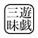
雨月物語 巻之一
白峯（しらみね）
──あらすじ──
これは東国の歌の名所を訪ね歩いてもなお飽き足らず、西国へ足をのばした「私」の旅の記録である。あれは平家が全盛を極めていた仁安三年のこと、保元の乱に敗れて島流しとなり亡くなった崇徳院と生前縁があった「私」は、讃岐の白峯陵を訪ねた。院が御所に君臨した当時を知る者としては、うら悲しい墓所を目の当たりにして、孤独で惨めな院の最期に思わず落涙し、僧侶である私は一晩墓前で回向の経を手向けることにした。すると、深夜聞き覚えのある声が「私」の名を呼ぶではないか。──こうして「私」は、院の怨念のすさまじさを目にし、恐ろしい復讐の経過と予告を聞いてしまった。のちに院の予言どおり、平家一門は白峯が見下ろす瀬戸内の海に滅び、人々は院の御霊を祭るようになったのだが、あの夜の出来事は「私」だけが知ることであった。
逢坂山の関守に通行を許されて東国にむかってから、秋をむかえた山のもみじの美景も見捨てがたく、そのまま諸国行脚の旅をつづけることにして東海道をくだったが、なかでも浜千鳥が砂浜に足跡をつけてあそぶ鳴海潟、富士山の噴煙、浮島が原、清見が関、大磯小磯の浦々、紫草の美しく咲く武蔵野の原、塩釜の海の穏やかな朝景色、象潟の猟師のひなびた苫ぶきの家、佐野の舟橋、木曾の桟橋などのありさまは、どれひとつとして心惹かれないところはなかったが、そのうえなお西国の名所・歌枕を見たいものだと思って、仁安三年の秋には、葭の花散る難波を経て、須磨・明石の浦ふく汐風を身にしみじみと感じながら、旅をつづけて四国にわたり、讃岐の真尾坂の林というところに、しばらく逗留することにした。これとても野宿などを重ねてきた長旅の疲れをいたわるためではなく、悟道を念じて修行するためのよすがとして結んだ庵であった。
この里近くの白峯というところに、崇徳院の御陵があると聞いて、参拝したいものだと、十月のはじめごろ、その白峯に登った。松や柏が深々と茂りあって、青雲のたなびく晴天の日ですら、まるで小雨がしとしとと降っているかのように暗くしめっぽい。児が嶽というけわしい峯が御陵のうしろにそびえたち、千仞のふかい谷底からは雲霧がわきあがってくるので、眼前のものさえはっきりしない心地がされる。木立がわずかにすいた所に、土を高くつんだうえに石を三つ積み重ねたものがあるが、それが野茨や蔓草にすっかりうずもれて、みた目にもなんとなく物悲しい気持がするのを、これこそ崇徳院の御墓であろうかと思うと、心も暗然とさせられて、まったく夢なのか現実なのかけじめもつかないほどである。
思えばまのあたりそのお姿を拝したのは、まだ天子であらせられたころで、紫宸殿・清涼殿の御座所で政治をおとり遊ばされたのを、文武百官は、まことに賢明な天子であると、その仰せをおそれかしこんでお仕え申しあげたものである。また近衛天皇に御位をお譲りになられてからも、上皇御所の立派な玉殿におすまいになっていらしたのに、それがこんな鹿の通う足跡しか見えない、伺候奉仕するものもないような深山の藪の下に崩御されていようとは、まったく思いもかけないことであった。一天万乗の天子という尊い御身分であらせられてさえ、前世の因縁というものがおそろしいまではっきりとその身につきまとって、その罪業をのがれることがおできにならなかったことよと思うと、人の世のはかなさにまで思いがおよんで、涙はわき出るようにとめどなくあふれてくるのだった。
今夜は夜どおし御回向申しあげようと、御墓の前のたいらな石の上にすわって、お経をしずかによみはじめたが、やがて心にうかんだ一首の和歌をよんでお供えした。
「松山の浪のけしきはかはらじをかたなく君はなりまさりけり」
（松山の海に寄せる波の景色は昔も今もかわらないであろうに、この景を眺めて暮らされた崇徳院はすでにおなくなりになってしまった。）
なおも心ゆるめずに一心に読経をつづける。あふれる涙に、草の露が添って、ふかくしっとりと袖をぬらすのであった。日が沈むにしたがって、深山の夜景は不気味でただならぬさまをみせてきたので、石の上にすわり、落ちかかる木の葉を身にかけただけではひどく寒く、そのため精神はすみ、骨の髄まで冷えて、なんとはなしにものすごい心地がされる。月は出たが、繁茂した木立は月光を洩らさないので、あやめもわからない闇のなかで心わびしく思いながら、やがて眠るともなくうとうとしようとすると、たしかに、「円位、円位」とよぶ声がする。
眼をひらいて闇の中をすかしみると、異様な姿で、背が高く瘦せ衰えた人が、顔つきや着衣の色柄ははっきりと見えないが、こちらを向いて立っている。西行もとより道心をえた法師であったから、おそろしいとも思わず、「そこに来たのは誰だ」とたずねた。すると、その人は「さっきその方が詠んだ和歌の返歌を申そうと思ってきたのだ」といって、
「松山の浪にながれてこし船のやがてむなしくなりにけるかな」
（松山にうちよせる浪に流されてきた船が、都へも帰れずにやがてむなしく朽ちはててしまった。）
と詠み、「よくきてくれたな」とおっしゃるので、西行ははじめてそれが崇徳院の亡霊であることがわかり、地面にぬかずいて拝し、さめざめと涙を流していった。「それにしてもどうして成仏されずにお迷いになっていらっしゃるのでございますか。濁りけがれた現世をのがれて仏になられたことをうらやましく存じてこそ、今夜の法要によって、仏縁におあずかり申したいと思っておりましたのに、成仏なされずにここにおあらわれになるとは、もったいないことではございますが、また悲しい御心根でございます。ひたすらこの世の妄執をお忘れになって、めでたく成仏の位におつき下さい」と、真心をつくしてお諫め申しあげた。
これを聞くと、崇徳院は声高くお笑いになって、「その方は知るまいが、近ごろの世上の乱れは、自分のしわざである。生きている時から魔道に心をうちこんで、平治の乱をおこさせ、死して後もなお朝廷にたたりをするのだ。よく見ているがいい。やがて天下に大乱をおこさせようぞ」という。西行は、このお言葉をきくと、涙をはらって、「これはおどろきいった情ない御心持をうけたまわることでございます。君にはもとより御聡明であるとの評判があらせられるのでございますから、帝王道の道理は十分よく御承知のことと存じあげます。こころみにおたずね申しあげます。一体、保元の御謀叛は、天照大神の御神勅の趣旨に違うまいと思って、お思いたちになられたのですか。それとも御自身の私欲から御計画なされたのですか。さあ、詳しくおっしゃって下さい」と申しあげた。すると、崇徳院はさっと顔色をかえられて、「よく聞け。帝位は人間至上の位である。それをもし上にたつ天子から人道を乱すときは、天の命ずるところにしたがい、民の与望にこたえて、天子たりともこれを伐つのが聖賢の道である。そもそも永治元年の昔、なんの罪もないのに、父鳥羽院の命によって、自分は帝位を三歳の体仁にゆずって退位したが、この心をみても自分が人欲ふかいとはいえまい。その体仁が若死されては、わが子の重仁こそ当然天下を統治すべきものと、自分も世間も思っていたのに、美福門院の妬みにさまたげられて、第四皇子の雅仁に帝位をうばわれたのは、まことふかいうらみではないか。重仁には国を治める才がある。それにたいして雅仁はどれだけの器量があるというのだ。人の徳の有無をも見きわめないで、皇位継承のことを後宮の后に相談しておきめになったのは、父帝のあやまちであった。しかし自分は、父が御存命中は、子としての孝行と誠をつくして、その不平不満をけっして顔色にも出さなかったが、父がおかくれになったのちは、いつまでも不遇に甘んじ、不平を我慢しておられようかと、ここにはじめて勇気をふるいおこして兵をあげることを決意したのである。周の武王が臣の身として、君主であった殷の紂王を討ったのさえ、天の命ずるところにしたがい、民の与望にこたえれば、事は成就し、天は認めて、周八百年の世の基をひらく大業となったではないか。まして国を治める資格と地位のある自分が、女の権力によってできた、あやまった政権にとってかわろうとするのに、なんでこれが道理にそむいたことだといえようか。その方は出家して仏道に溺れ、来世で、煩悩をのがれて救いをえたいと願う利欲の心から、ほんとうの人間の道をむりに仏教の因果理論にひきつけて説き、堯舜の教え、すなわち儒教の説にてらすべきを、仏教に混入して、自分を説得しようとするのか」と、御声も荒々しくおっしゃるのだった。
西行はますますおそれる色もなく、ひざをのり出して、「君のおっしゃるところは、人間の道の道理をかりて説かれますので、いかにもそれにかなっているように見えますが、じつはやはり醜い人間の欲情・煩悩の域から脱してはおられません。遠い中国の例をひくまでもありません。わが国の昔にも、応神天皇が兄皇子の大鷦鷯の王をさしおいて、末皇子の莵道の王を皇太子とお定めになりました。天皇崩御ののち、この兄弟の皇子たちは互いにゆずりあって、どちらも帝位につこうとしません。三年たってもそのゆずりあいが終りそうにもないのを、莵道の王はふかく御心配になって、『どうして私がこれ以上生きながらえて、天下の人々に迷惑をかけられようか』とおっしゃると、御自害あそばされたので、やむなく兄皇子が帝位におつきになりました。これこそ帝位の尊厳を重んじ、父に孝、兄に悌という人道をまもり、ほんとうの真心をつくしていやしい私欲というものがないというべきです。聖賢堯舜の道とはこれをいうのでしょう。わが国において、儒教を尊んで、もっぱらそれを天皇道の理論的な裏づけとしているのは、莵道の王が百済の王仁を招聘して学ばせられたのがはじめでありますから、この御兄弟の皇子の御心こそ、そのまま中国の聖人の精神ともいってよいでしょう。また『周のはじめ、武王、殷の紂王の暴虐を憤ってこれを討ち、ために天下の民を安らかにした。これは臣の身として君を弑したというべきではない。仁にもとり義にもとった一人の不徳者紂をころしたのである』ということが、『孟子』という書物に記されていると人づてに聞いております。だから、中国の書籍は、経典・史策・詩文にいたるまで、神意にかなって、わが国に渡来しないものはありませんが、『孟子』という書物だけはまだ日本に伝わっておりません。この書物を積んでくる船は、途中でかならず暴風に遭って沈没するからだといわれております。それはどういうわけかというと、わが国は天照大神が国の基をひらいてお治めになってから、皇孫の天子がたえることなく代々御位についておりますのに、もしこんな口先でいいくるめるような、こざかしい教えを伝えることになると、後世には帝位を奪っても罪と思わないという賊子も出ることであろうと、八百よろずの神々がこの書物をお憎みになって、神風をおこして船を転覆させるのだということでございます。だから中国の聖賢の教えも、わが国の国風にてらしてふさわしくないものがすくなくありません。また、『詩経』でも、『兄弟はたとえ内輪喧嘩をしても、いったん外部からのはずかしめをうけようとしたときは、一致協力してこれをふせげよ』と、いっているではございませんか。それを君には、御兄弟の愛をお忘れになり、そのうえ、御父帝がおかくれになってまだ殯の宮に安置した御遺体のぬくもりがさめないうちに、もう軍旗をなびかせ弓はずをふりたてて挙兵され、帝位争奪の戦をなさるなど、不孝の罪これよりはなはだしいことはございますまい。天下は神の定める器であり、帝位は神意の定めるところであります。だから、人が私欲をもってこれをうばおうとしても、うばうことのできない道理であるのを、君はわきまえられずに戦いをおこされましたが、たとえ重仁親王の御即位は天下万民ひとしく仰望するところであっても、徳をしき平和の恵みをほどこされないで、道にはずれた方法をもってあのように世を乱したもうたときは、きのうまで君をお慕い申しあげていたものも、きょうはたちまち君を恨んで仇敵となり、そのために本望をもおとげ遊ばされないばかりか、古来例のないほどの刑罰をお受けになって、こんな辺鄙な片田舎でおなくなりになったのでございます。このうえは、ただただ昔の恨みをお忘れになって、極楽浄土におかえり遊ばすことこそ、心からお願い申しあげたい君の御心でございます」と、はばかることなく申しあげたのである。
これを聞いて、崇徳院はふかいためいきをつかれ、「いまその方が事の善悪道理を正してわが罪をせめたが、その方のいうところもまたもっともである。しかしどうしようもないのだ。この島に流されて、高遠の松山の家に苦しくもとじこめられ、日に三度の食事をもってくる者以外には、誰ひとりとして参って仕えるものもない。ただ夜空をとぶ雁の声が枕もとちかく聞えてくると、あの雁は都をさして飛んで行くのだろうかと、それさえなつかしく思われ、明け方の千鳥が洲崎で友よびかわして鳴くのを耳にすると、それもまた物思いのたねとなるだけである。中国の燕丹の故事のように、烏の頭が白くなるという奇跡がおころうとも、自分には都へ帰れる機会はないのだから、きっとこの辺鄙な海辺で一生を終り、海辺をさまよう亡霊となることであろう。そこで、ひとえに来世の安楽のためにと思って、五部の大乗経を写経したが、寺らしい寺もないこんなさびしい片田舎の海辺にのこしておくのも悲しいことである。わが身はこの荒磯でくちるとも、せめて筆跡だけでも都の中へ入れさせて下さいと、弟の仁和寺上首覚性法親王のもとへ、経にそえてつぎの和歌をおくったのである。
浜千鳥跡はみやこにかよへども身は松山に音をのみぞ鳴く
（浜千鳥と同じように自分の筆跡〈写経〉のみは懐かしい都へ通っていくが、自分は、松山で帰京の日を待ちこがれながら声をあげて泣くだけである）
ところが、少納言信西が邪推して、『もしかするとこれは崇徳院が主上をのろい、天下をのろう心でおくられたものかもしれません』と、帝に申しあげたため、そのままにおくりかえされたのであるが、まことにうらめしいことだ。昔から日本でも中国でも、国位を争って兄弟が敵となった例はめずらしくないが、それでも自分は罪ふかいことをしたと思って、その悪心を悔い改め、罪ほろぼしのためにと思って写した御経であるのに、それをいかにさまたげるものがあるからといって、帝の近親は減刑するという議親法をも無視して、兄の筆跡さえも都の中へおいれにならない帝の御心こそ、いまになっては永久に解けることのない恨みである。しょせんこの写経を魔道に回向し、魔力によってこの恨みを晴らそうと、ひとすじに心をきめ、指を切ってその血で願文を書き、経とともに志戸の海に沈めてからのちは、人にも逢わず、家の内にふかくとじこもって、ひたすら魔王となり恨みをはらそうとの大願を立てたが、願いかなってついにあの平治の乱が勃発したのである。
まず、信頼が分不相応な高い位をのぞむその増長心をあおりたてて、義朝をその味方につけさせた。あの義朝こそ憎い敵なのだ。父の為義をはじめ、兄弟の武士たちが、保元の乱で、みなわがために命を捨てて働いたのに、彼一人、われに敵対した。為朝の勇猛と、為義・忠正の軍略によって、勝利のけはいが見えていたのに、西南の風に本陣の白河殿が焼き討ちされて敗北し、自分は白河殿をのがれ出てからは、如意が嶽のけわしさに足をいためたり、あるいはきこりの切った椎の柴を身にかけて雨露をしのいだりして、苦労のすえに、ついにとらえられてこの島に流されたのであるが、それはすべて義朝の悪辣な焼き討ちという計略にねざすことなのだ。この仕返しとしては、まず義朝の心を暴虐・貪欲にすることによって、信頼の陰謀に加担させたので、彼は天子に弓ひく大罪をおかし、武略にすぐれぬ清盛の如きに追い討たれてしまったのだ。そのうえ、父の為義を殺したむくいがその身にあらわれて、家来にだましうちされたのは、まさに天罰を蒙ったものである。また少納言信西は、つねにおのれを物知りの学者ぶって、狭量にして人をいれない高慢な根性まがりであったから、これを誘って、信頼・義朝の敵としたので、最後には家を出奔して宇治山の穴にひそみかくれていたのを、とうとう探し出されて捕らえられ、六条河原でさらし首になった。これは、わが写経を送りかえしたへつらいの罪の結末をつけたのである。その余勢をかって、応保の夏には美福門院の生命をちぢめ、長寛二年の春には忠通に祟ってこれを殺し、われもその年の秋にはこの世を去ったが、死後なお憤りの火がさかんにもえつづけて消えないままに、ついに大魔王となって、三百余類の手下をもつ首領となった。わが手下どものすることは、人の幸福を見てはそれを不幸に転じ、天下の泰平なのを見ては乱をおこさせることである。ただ清盛のみは人間として授かった現世の果報が大であって、そのために一門一族すべて高位高官に列し、好き放題に国の政治をとりおこなっているが、長男の重盛が忠義をもって輔佐しているゆえ、その暴虐にもかかわらず、まだ復讐の時期に達していない。しかしその方もよく見ておれ。平氏の運命もまた長くはないだろう。雅仁がわれにつらく当たったその分だけは、かならず雅仁にも報復してやるぞ」と、御声はしだいに大きくおそろしくなってくるのだった。西行は、「わが君にはこれほどまでに魔界の悪縁につながれて、弥陀の極楽浄土とは無縁にちかく、億万里も遠く隔たっておいでなさるようでございますから、これ以上はくりかえしてなにも申しあげません」といって、ただ口をとじてむかいあっていた。
その時、あたりの峯や谷が揺れ動いて、風が林を吹きたおすばかりにはげしく吹き、砂を空に高くまきあげた。と、見る見るうちにひとかたまりの鬼火が、崇徳院のひざの下から燃えあがって、そのために山も谷も昼のようにあかるくなった。その光のなかに、よくよく院の御様子を拝見すると、怒りのためか朱をそそいだような真っ赤なお顔に、ぼうぼうと乱れた髪がひざにかかるまで乱れさがり、にらみつけるように白眼をつりあげて、熱い息を苦しそうに吐いていらっしゃる。お召しになっている衣は柿色でひどくすすけたように黒ずんでいるうえに、手足の爪はまるで獣の爪のように鋭く長くのびていて、さながら魔王の姿そのままであり、見るからにあさましくおそろしい。やがて空にむかって、「相模、相模」とおよびになる。「ハッ」とこたえて、鳶のような変化の鳥が空からまいおり、院の御前にひれふして、仰せの言葉を待つ。院は、その変化の鳥にむかわれて、「なんではやく重盛の命を奪って、雅仁と清盛を苦しめないのか」と仰せになる。変化の鳥はこたえて「後白河上皇の御幸運はまだ尽きておりませんし、重盛の忠義と誠には近づけません。しかしいまから十二年たちますと、重盛の寿命もつきてしまいます。彼が死ねば、平氏一族の幸運も、それとともにほろびます」という。それを聞くと、院は手をうっておよろこびになり、「憎い平氏の敵どもは、ことごとくこの前の海でみなごろしにしてやるぞ」と、叫ぶ御声は谷や峯にこだまして、その物凄さはとてもいいあらわせないほどであった。西行は、この魔道のあさましいありさまを見て、いまさら涙をおさえかね、再び一首の和歌をよんで、院が仏縁につながるような御心になられることをおすすめ申しあげた。
「よしや君昔の玉の床とてもかからんのちは何にかはせん
（たとえ君には昔は金殿玉楼におすまいになっていたとしても、こうしておなくなりになって現世をはなれているいまでは、そんな現世の身分や優越感は何もなりません。御往生下さい）
死んでしまえば王侯も庶民もおなじであるのに」と、感動が胸にあふれて、思わずもこの歌を声高にうたいあげたのである。
院は、これをお聞きになって、御心をうごかされたようであったが、しだいにお顔の色もやわらぎ、鬼火もだんだんうすくなって消えていき、ついにそのお姿もかき消すように見えなくなったが、変化の鳥もどこへいったのか、あとかたもなく姿を消し、折から十日あまりの月は峯のかなたにかくれて、木立生い茂った闇の中ではものの見わけもつかないので、さながら夢路をさまようような思いだった。まもなく夜明けの空に、塒はなれる朝鳥のさえずりがすがすがしくひびきわたったので、最後にかさねて金剛経一巻を回向申しあげて、西行は山をおり、庵へ帰った。あらためて心しずかに昨夜来の出来事を思いおこしてみると、平治の乱のことをはじめとして、人々の身の上、またその年月など、院の語られたことが事実と符合してまちがいがないので、ふかくおそれつつしんで、このことをだれにもはなそうとしなかった。
その後十三年を経て、治承三年の秋、平重盛が病にかかって世を去ったので、清盛入道はだれはばかることもなく、専横をきわめるようになり、後白河法皇をうらんで鳥羽離宮におしこめたてまつり、さらに福原の茅ぶきの御所にお移しして、苦しめ申しあげたのである。人心離反し、頼朝が機に乗じて東国から兵を挙げ、義仲が北国から雪をけたてて京へのぼるにおよんで、さしもの平家一門も都をおちて西の海にのがれ、ついに讃岐の海、志戸・八島にいたって多くの武勇の士たちが魚の餌食となり、さらに赤間が関・壇の浦に追いつめられて、幼君安徳天皇が入水されたので、平家の武将たちもここにのこらずほろびてしまったが、その一部始終が崇徳院のおっしゃった言葉に少しもちがわなかったのは、おそろしくもまた不思議なかたりぐさであった。その後、院の御霊所が御陵のそばに玉をちりばめ美しくいろどられて造営され、その御威光をながくあがめたてまつるようになった。讃岐へ旅する人は、かならず御幣をささげて、つつしみおがむべき貴い御神である──。
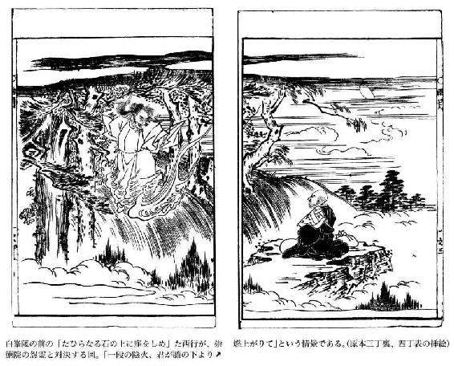
菊花の約（きっかのちぎり）
──あらすじ──
真の友情は互いの危機において試される。清貧に甘んじ学問に専心する学者がいた。支えるのは母一人である。ある日この男は、旅の途中で疫病にかかり治療も受けられずにいる武士を助けた。武士は感激し、回復してから二人はあれこれと話し合ううち、人柄の上でも学問についても意気投合、たちまち義兄弟の契りを結ぶ。武士は、他国へ出張中に主君を殺され、その復讐を期して故国へ帰る途中に病気で倒れたので、本望を遂げるため帰郷せねばならない。学者の方はわずかな別れも惜しみ、九月九日の菊の節句を、再会の日と固く約束した。さて、約束の日も深夜になって、武士はやってきた。待ち焦がれていた学者は、喜んでもてなそうとするが、武士には深刻な事情があるようで、黙り込むばかりである。──人は己れを知る者のために死ぬ、という言葉がある。二人の友情はそれを地でいくものであった。
春になると青々とした若葉を茂らせる柳も、家の庭に植えてはならない。それとおなじように、交際は軽薄な人と結んではならない。なぜかといえば、柳はすぐ茂って青々となるけれども、初秋をつげる風がひとふきすると、それにたえられずにたちまち散ってしまうからである。また軽薄な人はまじわりやすいが、同時にまじわりが絶えて離れてしまうのもはやい。それでもまだ柳の方は春がくるたびに葉を新緑に染めてみせるが、軽薄の人はいったんまじわりが絶えたならば、二度とふたたび訪ねてくるなどということはないものである。
播磨の国加古の宿に、丈部左門という学者がいた。清貧にあまんじて、日夜親しむ書物のほかは、身のまわりの諸道具類などわずらわしいといって、万事簡素に暮らしていた。年老いた母があった。この母は、中国の有名な孟母にも劣らないほどのかたい節操をもった賢母で、常に糸をつむぎ、はたを織ることを仕事としては、左門のこころざしを達成させようと助けていた。また妹が一人あったが、これはおなじ里の佐用氏の許へかたづいていた。この佐用の家は非常に裕福であったが、丈部母子の賢いひとがらを慕って、その家の娘を嫁にむかえて親戚となってからは、なにかにかこつけてしばしば物などおくっては母子の生活を扶けようとするのであったが、左門は「生活のことで人の世話になるわけにはいかない」といって、一度だっておくりものをうけたことがなかった。
ある日、左門が、おなじ里の某氏の許を訪れ、古今のよもやまばなしをしてはなしに興がのってきたとき、壁一重へだてた隣室から、人の苦しそうなうめき声が聞えてきて、いかにも可哀そうだったので、主人にたずねると、主人はこたえて、「ここからずっと西の方の国の人らしいのですけれど、連れに遅れたとのことで、一夜の宿をもとめられたのですが、いかにも立派な武士らしい風采をそなえて人品もいやしからぬと見うけましたので、お泊め申しあげたところ、その晩、たちのわるい高熱を出して、それからは起き臥しも自分では自由にならないものですから、お気の毒に思って、三日四日ときょうまでお泊めしてきましたが、どこの国の人かもはっきりしないので、私もとんだ失敗をしでかしたものと、当惑している始末です」という。これを聞いて左門は、「お気の毒なはなしですな。御主人が御不安に思うのももっともですが、病気で苦しんでいる人は、知人もない旅先でこんな病気をわずらっていらっしゃるのですから、とりわけ心苦しくいらっしゃることでしょう。どんな御容態かみたいものですが」といって、たちあがろうとするのを、主人はおしとどめて、「はやり病は人をそこなうものだと聞いていますから、家の者などもあそこへは行かせないようにしております。あなたも近寄っておからだを悪くすることがあるといけません」という。左門は笑って、「論語にもいうように『死生命あり』で、人間の寿命は天命の定めるところです。天命でなければどんな病気だってうつるはずはありません。それを、はやり病は人をそこなうなどというのは、愚人俗人のいうことで、私どもは信じません」というと、戸をおしあけて隣室に入って、病人を見る。主人がはなしたとおり、素姓のよさそうな人であるが、病気が重いとみえて、顔は黄色く、皮膚は黒く、瘦せ衰えて、古蒲団のうえにくるしそうに身を横たえている。そして左門がはいってきたのをしると、人なつかしそうに見て、「どうか、お湯をいっぱい下さい」という。左門は近寄って、「もう御心配はいりません。私がかならずお救い申しあげましょう」といってはげますと、主人と相談して薬をえらび、自分で処方を考え、自分で煎薬して、それをのませながら、そのうえ粥を炊いて食べさせるなど、その看病ぶりはまるで兄弟にたいするように親切をきわめ、一刻たりとも捨てておけないというような手厚さであった。
かの武士は、左門の看護の親切さに涙を流して感謝し、「見ず知らずの旅人である私に、これほどまでに御親切にして下さるとは感謝のことばもありません。たとえこのまま死のうとも、あなたの御親切にたいしてはきっと御恩返しをいたします」という。左門は、それをおしとどめ、はげまして、「気の弱いことをおっしゃいますな。だいたい疫病は罹病期間のあるものです。その期間をすぎてしまうと生命に別条はありません。私が毎日まいってお世話申しあげましょう」と、誠意をこめて約束し、その言葉どおり心をこめて看病したので、やがて病気もしだいによくなり、気分もさっぱりしてきた。そこで、ある日のこと、病人は、この家の主人に鄭重に礼をのべるとともに、左門の陰徳ある人柄を尊敬して、その職業をたずね、自分の身の上をもつぎのように語った。「私は、もと出雲の国松江の出身で、赤穴宗右衛門という者ですが、すこしばかり軍学の書に通じていたので、富田の城主塩冶掃部介が、私を師として軍学を学ぶという立場におりましたところ、あることから近江の佐々木氏綱の許へ密使としてえらばれ、近江へ赴いて佐々木の館に逗留しているうちに、故郷では前の富田城主尼子経久が山中鹿之介一党を味方にひきいれて、文明十七年十二月の大晦日に、不意討ちをかけて城をのっとったので、掃部介殿も討死なさったのであります。元来出雲の国は佐々木の領国で、塩冶氏はその代官だったのですから、私は氏綱にむかって、『三沢・三刀屋の豪族を援助して、経久を討ちほろぼしなさい』と進言したのですが、氏綱は外見いかにも勇将にみえながら、内心は臆病卑怯な愚将なので、私の建言を実行しないばかりか、かえって私を館に足どめしたのです。しかし、私は、いる理由もない所に長居はすまいと、単身ひそかに抜け出して、故郷へ帰ろうとした途中、こんな病気にかかって、はからずも先生にたいへんお世話をおかけしたということは、身にあまる御恩であります。これからの私の生涯をかけてきっと御恩返しをいたします」。左門はいう。「『孟子』にもあるように、人の不幸をみて見殺しにできないのは人間の本性でありますから、私のしたことも当然のことで、いまさらそんな御鄭重なお礼のことばをいただく理由がありません。まあ、もうすこしここに滞在されて御養生なさい」と。左門の誠実あふれたことばをたよりにして、赤穴はなお幾日か滞在したが、日がたつにつれて、身体の調子がほとんど平生の状態にまで回復した。
この数日間、左門はよい友を得たと、昼となく夜となく交際していろいろはなしをしてみると、赤穴も、左門の専門の諸子百家のことなどはひかえめにぽつりぽつりとはなし出すが、その質問や理解力は並一通りではなく、聡明であり、ことに専門の戦術理論のこととなると確信にみちた立派な見解を示したので、お互いに心がぴったりと一致し、感心したりよろこんだりして、ついに義兄弟の盟約を結んだのである。赤穴が五歳年長であったから、兄分としての礼をとって、左門にむかっていうのに、「私は幼いときに父母に死に別れて親がありません。義兄弟となったいまは、あなたの老母はすなわち私の母上でありますから、あらためて母上として拝顔の栄をえたいと思います。母上は私の心をくんで、この幼稚で愚かな気持をうけいれて下さるでしょうか」と。それを聞いて左門はたいへんよろこび、「母はいつも私が孤独なのを悲しんでいます。いまの真心こもったお言葉を聞かせたならば、よろこんで、寿命も延びることでしょう」というと、すぐに赤穴を家にともなった。老母は、これをよろこびむかえて、「倅は才能もなく、その学問も時勢にあわず、そのため世に出る機会を失っております。どうかお見捨てなく、兄として指導してやって下さい」という。赤穴は、うやうやしく頭をさげて、「男子たるものは義を重しとします。功名富貴などは問題ではありません。私はいまさいわいにも、こうして母上の御慈愛をうけ、左門殿からは兄として尊敬されました。これ以上なんの望みがありましょう」というと、心から感激して、またしばらくのあいだこの家に逗留したのである。
きのうかきょう咲いたと思った尾上の桜もいつのまにかすっかり散ってしまって、涼しい風に吹き寄せられる浦浪の様子にも、問わずとしれた初夏の訪れがはっきりとわかるころになった。ある日、赤穴は左門母子にむかって、「私が近江を脱出してきたのも、出雲の様子を見ようと思ったためですから、この際ひとまず国へ下って、すぐにまた帰ってまいり、それからは貧しいながらも一生懸命に母上に孝養をつくして御恩返しをしたいと思います。しばしのお暇を下さい」という。左門は「それでは、兄上はいつごろお帰りになられますか」とたずねる。赤穴はこたえて、「月日のたつのは早いものです。おそくともこの秋をこすことはありません」という。左門は、さらに「秋というのはいつと日をきめてお待ちしたらいいのでしょうか。どうかはっきりとそれをきめて下さい」という。赤穴は、「九月九日、重陽の佳節をもって帰ってくる日ときめましょう」とこたえる。左門は「兄上、きっとこの日をまちがわないで下さい。当日、私は、一枝の菊花に、気持だけの粗酒を用意してお待ち申しあげておりますから」と念をおすと、互いに誠意をもって約束しあい、別れがたい別離の情を惜しんで、やがて、赤穴は西へ帰っていった。
月日はたちまちのうちに経過して、下枝の茱萸の実が赤く色づき、垣根の野菊が色美しく咲いて、九月ともなった。約束の九日になると、左門はいつもよりはやく起き出して、草屋ながらきれいに掃除し、黄菊白菊を二枝三枝、小瓶にいけ、とぼしい財布をはたいて酒飯の用意にかかった。それを見て老母がいった。「あの出雲の国は山陰道も果てにあって、こことは百里もへだたっていると聞いていますから、あの方が見えるのがかならずきょうであるともさだめがたいのに、お前はいろいろ用意しているようだが、あの方がおいでになったのを見てから支度しても遅くはあるまい」。左門はこたえて、「赤穴は信義を重んずる武士ですから、かならず約束をたがえることはありません。その人の姿を見てからあわただしく支度するようなことでは、先方がそれをどう思うか、恥ずかしいことです」というと、美酒を買い鮮魚を料理して台所に用意し、赤穴のくるのを待つのだった。
この日は空も晴れあがって、見渡すかぎり一片の雲もなく、道をゆく旅人の群れも多く、そのはなすのをきくと、「きょうはだれそれが都入りする日であるが、上天気で好都合だ。これは今度のあきないによい儲けができる前兆ですよ」などといって通りすぎて行く。また五十歳あまりの武士が、つれの二十代のおなじようないでたちをした武士にむかって、「海上はこんなに平穏であったのに。これなら、明石から船にのっていたら、この早朝の船出に、いまごろは牛窓の港へむかって船をはしらせていたであろうに──。若い男はどうもかえってものおじして、無駄な金を余計つかうことだ」というと、若い武士は、「殿が御上洛なさったとき、小豆島から室津への御渡海をなさいましたが、そのとき海が荒れてさんざんなめにおあいなされたのを、その折にお供していた者がはなしていたのを思うと、この辺の渡りはだれだっておそれることでしょう。まあ、そうお腹立ちなさいますな。魚が橋へ行ったら蕎麦を御馳走いたしますから──」と、なだめながら通りすぎて行く。また、馬方が、腹立たしげに、「このくたばり馬めが。眼もあいていないのか。しっかり歩け」と、馬がつまずいたために傾いた荷鞍を、手荒く押しなおして、足早に馬を追っていく。いつか昼もだいぶすぎたけれども、待っている人はまだこない。やがて、夕日が西に沈むので、今夜の泊りへと急ぐ旅人の足どりがいっそうせわしそうになるのを見るにつけ、左門は、赤穴がもう来るかもう来るかと、外の方にばかり視線がひきつけられて、心はまるで酔ったようにうわのそらであった。
老母は左門をよんで、「赤穴の心が秋空のようにかわってお前との約束を忘れたというわけでなくても、その来ると約束した菊花の色濃く咲く日、そしてお前の交情・もてなしのこまやかな日は、なにもきょうとだけ限ったことではあるまい。赤穴に帰ってくる誠意さえあれば、たとえ時はおくれて時雨ふるころになったとしても、なんのうらむことがありましょうか。家へはいって横にでもなって、また明日の日を待ちなさい」といわれるので、左門はさからうことができず、その場は母をいいなだめて先にやすませ、自分は、もしかしたら赤穴がくるかもしれないと思って、もう一度戸外に出て見ると、空には銀河の星の光が弱くかすかに、月が自分ひとりだけを照らしてさびしいうえに、家を守る番犬の遠くで吠える声も、夜の静寂にすみわたって近く聞こえ、高砂の浦にうちよせる波の音もすぐここまで寄せてくるかのように高く近く聞こえてくる。やがて、月も山の端にはいって、光がくらくなったので、いまはこれまでとあきらめて、戸をしめて家にはいろうとすると、ふと目に入ったものがある──おぼろな黒い影のなかに人の姿が見えて、それが風の吹くにつれてこちらにくるので、不審に思ってひとみをこらすと、赤穴宗右衛門であった。
左門は踊りあがる思いで、「私は朝早くからいままで貴兄のおいでを待ちくらしておりました。約束をたがえずにおいでくださったことをほんとうにうれしくおもいます。さあ、おはいり下さい」といったが、赤穴は、ただうなずくだけで、ものもいわないでいる。左門は先に立って、赤穴を客間の窓ぎわに案内して、正座につかせ、「兄上のおいでが遅かったので、老母も待ちくたびれて、『明日こそおいでになるだろう』といって、さきに寝床へはいりました。起こしてまいりましょう」というのを、赤穴はまた頭を横にふってとめながら、なおも口をひらこうとしないでいる。そこで左門は「遠いところを幾日もかかって夜を日についでいらしたので、心身ともにお疲れでございましょう。どうか一口めしあがってゆっくりおやすみ下さい」といって、酒の燗をし、肴をならべてすすめたが、赤穴は、袖で顔をおおい、そのにおいを嫌ってさけるような様子をする。左門はまた「貧しい手料理ですから、とても十分のおもてなしはできませんが、これでも私の心をこめたものです。さげすまないで召しあがって下さい」という。それでも赤穴はこたえもしないで、長いためいきをついていたが、しばらくしてやっと口を開いた。「あなたの真心こもったもてなしをどうしていやがって辞退するわけがありましょうか。あなたをだますことばもありませんから、ほんとうのことをうちあけます。けっして怪しみ驚かないで下さい。じつは、私はもはやこの世の人間ではありません。けがれた死霊が、かりに人間の姿をしてあらわれたのです」。
左門はひどく驚いて、「兄上、なぜそんな奇怪なことをおっしゃるのですか。私にはこれが夢だとはちっとも思えません」という。赤穴は「あなたと別れて故郷に帰りましたが、郷里の人々は大方、尼子経久の威勢になびきしたがっていて、もはや旧主塩冶氏の恩顧をかえりみるものもないのです。そこで、従弟の赤穴丹治が富田城中にいるのを訪ねたところ、彼は利害得失を説いて、私を経久にひきあわせました。私は、表面ではいちおう従弟の言葉にしたがうように見せて経久と対面し、その後、経久のすることをつくづく見ておりますと、たしかに万人に匹敵する雄略の持主で、よく兵士を訓練していますが、智者を用いるのに猜疑心がつよくて、そのために君の腹心となって身命をなげ出すという家臣がいないのです。こんな所に長居は無用と思って、私は、あなたと菊花の佳節に再会する約束のあることをはなして、そこを立ち去ろうとしたところ、経久は不満で気にいらぬ様子をみせ、丹治に命じて私を城の外に出さないように軟禁し、そのためにとうとう今日にたちいたってしまいました。もしきょうの約束を破ったならば、あなたが私をどう思うだろうか、きっとうそつきな信ずるにたりないやつと思われるだろうと、そればかりが気がかりで、いろいろ思案をめぐらしましたが、のがれだそうとしても方法がありません。古人の言葉に、『人は一日に千里を行くことはできないが、魂は一日に千里を行くことができる』ということがあります。この道理を思い出して、私は、自害し、今夜、陰風にのって、はるばると菊花の約に馳せ参じたのです。どうか私のこの心根を汲んで御同情下さい」といいおわると、とめどもなく涙をながすのであった。「もはやこれで永のお別れです。どうか母上によく孝養をつくして下さい」といって、座を立ったかと見ると、たちまちその姿はかき消すように見えなくなってしまった。
左門は、あわててひきとめようとしたが、陰風に眼先がくらんで、どちらへ去ったのか行方がわからなくなった。なにかにつまずいてばったりとうつぶせに倒れたが、そのまま大声をあげて泣き出した。その声に老母が目をさまし、驚いて起きあがって、左門のいるところにきてみると、客席のあたりに酒器や肴を盛った皿などがたくさんならべてあり、その中に左門が倒れている。いそいで抱きおこして、「どうしたのです」とたずねたが、左門はただ声をたてずに忍び泣きに泣きつづけるだけで、いっこうにものをいわない。そこで、老母がかさねて「兄の赤穴が約束を破ったのをうらみに思うならば、明日にでもなってもし赤穴がきたならば、そのときにはいうべき言葉もないでしょうよ。おまえはこんなにまで子どものように物の道理がわからないのですか」と、言葉つよくたしなめはげますと、左門は、やっと口を開いてこたえた。「兄上は今夜、菊花の約をはたすためにわざわざきたのです。そこで、用意の酒肴をもってお迎えしたところ、それを再三辞退されて、こうおっしゃるのです──『これこれこうしたわけで約束にそむくことになるので、自刃して魂魄となり、その魂魄が遠く百里のところをきたのだ』──というと、そのまま見えなくなりました。そういうわけで、母上のおやすみのところをおこしてしまったのです。どうかおゆるし下さい」というと、またさめざめと泣きしずむので、老母は、「牢獄にとらわれている人は夢にも赦免されるのを見、咽のかわいている者は夢の中で飲み水を飲むと、諺にもいわれています。おまえもまたその人たちと同類で、あまり待ちわびたので夢に見たのでしょう。よく心を落着けなさい」といったが、左門は頭を横にふって、「けっして夢のようなとりとめもないそらごとではありません。兄上はたしかにここにいらしたのです」というと、また大声をたてて泣き伏した。これを聞いて、老母ももはや疑わず、母と子はたがいによびあい、声をあげて、その夜は泣きあかしたのである。
翌日、左門は母の前に手をついて願いでた。「私は幼少より学問文事に専念してまいりましたが、今日まで国に忠義をつくしたという名声をあげたこともなく、さればとて親に孝行の誠をつくすこともできず、ただ無意味にこの世に生きているだけでした。兄上の赤穴は一生信義をつらぬきとおして死にました。弟分の私としては、きょうから出雲に下り、せめて兄上の遺骨を葬って、義兄弟としての信義をまっとうしたいと思います。母上には御身をお大切になさって、しばらくのあいだのお暇をたまわりとう存じます」。老母は答えて、「倅よ。出雲に行っても、早く帰ってきて、この年寄を安心させておくれ。むこうに長く逗留して、きょうの別れを永久の別れとしないでおくれ」という。左門は、「古人もいうように、人の生涯は、水に浮いている泡のように、朝に夕に、いつ消えるとも定めがたい、はかないものではありますが、私は、できるだけはやく、すぐに帰ってまいります」というと、別れの涙をぬぐって、家を出発した。その足ですぐに佐用氏の許へ行き、老母の世話をくれぐれも頼み、出雲へむかったが、途中、ただひたすらに赤穴のことのみ思いつづけて、飢えても食をとろうとせず、寒くとも衣類のことを気にかけずに、うとうとと仮睡すれば、夢にも赤穴を見て泣きあかしながら、十日ののちに富田の城下に着いた。
まっすぐに赤穴丹治の邸へ行って、姓名を名のって案内を乞うと、丹治が出迎えて、座敷へ通し、「雁の頼りにでも知らせたのでなければ、どうしてあなたが宗右衛門の死を知っていらっしゃるはずがありましょうか。わけがわかりません」と、不思議がってしきりに事情をたずねるのだった。左門はそれにたいして、「武士たるものは、その身の富貴と盛衰のことを、とやかく問題にすべきではありません。ただ信義だけを重んずるものです。兄上の宗右衛門はいったん口にした約束を重んじて、それを守り、亡魂となって百里の遠きを私の許まできましたが、その信義にたいして、信義をもってむくいようと思って、私は夜を日についでこの地に下ってきたのです。私が平生学んだことについて、貴殿におたずね申し上げたいことがあります。どうかはっきりとお答えねがいたい。むかし、魏の宰相公叔座が重病の床に臥したとき、魏王がしたしく見舞って、公叔座の手をとりながら、『もしその方に万一のことがあったら、だれを宰相として国政をゆだねたらよいであろうか。私のために教えをのこしておいてくれ』というと、公叔座は、『商鞅はまだ年こそ若いが、世にもまれなすぐれた才能をもっております。陛下がもしこの男をお用いになる気がないのなら、たとえ殺してでも、国外へ出してはなりません。もし他国へ行かせますと、きっとのちのちこの国の禍となるでしょう』と、ねんごろに教えて、王が帰ったあと、ひそかに商鞅をよびよせ、『私はおまえを陛下に推挙したが、陛下は私のすすめを受けいれない様子がみえたので、登用しないのならば、いっそおまえを殺してしまいなさいと教えた。これは君を先にし、臣をあとにする、君臣の道であり、私のはからいである。おまえは一刻もはやく他国へ逃げて、この難をのがれたがよい』といったということです。このことを、貴殿と宗右衛門との場合にくらべてみては、いかがでしょうか」という。丹治は、恥じいったのか、ただ頭をうなだれて、一言もいわない。左門はさらに膝をのり出して、「兄上宗右衛門が、塩冶氏の旧恩を思って、尼子に仕官しなかったのは、これこそ義士であります。貴殿は、旧主の塩冶氏を見捨てて尼子の家臣になったが、これは武士としての信義をわきまえないことです。兄上は菊花の約を重んじて、命を捨てて遠路をきましたが、これこそ信義の極致であります。貴殿はいま尼子に媚びへつらって、血縁の宗右衛門を苦しめ、このような非業の死をとげさせたのですが、それは朋友としての信義がない行為です。たとえ経久が無理に兄上をとどめられたとしても、長いまじわりと友情を思ったならば、ひそかにかの商鞅に叔座が示したような信義をつくすべきであるのに、それもせずにただ一身の栄達利益にのみとらわれて、武士としての風儀がないのは、とりもなおさず尼子家全般の家風かもしれない。それだからこそ兄上もこんな国にとどまろうとしなかったのだ。私はいま信義のためにわざわざここにきたのだ。貴様はまたここで、不義のために長く汚名をのこすがいい！」と、いいもおわらず抜き打ちに斬りつけると、ただ一太刀で、丹治はその場に倒れた。この物音を聞きつけて家来どもが騒いでいるすきに、左門は、すばやくその場をのがれ出て、行方をくらましてしまった。
尼子経久は、この事件を伝え聞いたが、宗右衛門と左門義兄弟の信義のあついまじわりにふかく感動して、しいて左門の跡を追わせなかったということである。ああ、まじわりは軽薄の人と結んではならないというが、まさにその通りである......。
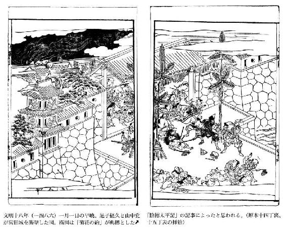
雨月物語 巻之二
浅茅が宿（あさじがやど）
──あらすじ──
貴方はとうとう帰ってこなかった。予感はあったけれど。ひょっとしたら帰ってくるのではと思って待つうちに。去年貴方が一攫千金を夢見て、田畑を売りつくして絹を買い込み都へ向かうとき、必ず秋には帰ってくると約束したのに。──さあこのあたりが故郷の真間だ。あれから七年になるのか。商売には無事成功して、約束の秋には帰ろうとしたが、木曾の山中で山賊に荷物を奪われ、関東の戦乱で妻もとても生きてはおれまいと都へと引き返す途中、近江で熱病にかかり、それから京や近江でうかうかと時を過ごしてしまった。都でも戦乱と疫病でこの世の終わりというべきありさまを目の当たりにして、せめて妻の消息だけでも確認し、亡くなっていたら墓をたてようとここまでやってきた。そうだ。雷が落ちて裂けてはいるが、あの松が目印だ。おや俺の家はそのままだし、明かりも見える。誰が住んでいるのだろう。まさか......
下総の国葛飾郡真間の里に、勝四郎という男があった。祖父の代から久しくこの里にすみ、田畑もたくさんもって家も豊かに暮らしていたが、生れつき無頓着でのんきな性質から、農業を煩わしいものだといやがったので、ついに貧乏になってしまった。そうこうしているうちに、親戚の多くからも疎遠に扱われるようになったが、それを勝四郎は口惜しいことだとしみじみと思い、なんとかして家運を挽回したいものと、あれこれ思案をめぐらした。そのころ、雀部の曾次という人が、足利染の絹を仕入れるために、毎年都からやってきていたが、真間の里に遠縁の者がいるのをたびたび訪問したところから、勝四郎もかねがね親しくしていたので、自分も商人となって都へ上りたいということを頼んだところ、雀部は気やすくひきうけて、「今度は何日ごろ発つつもりです。御一緒に」といってくれた。そこで、雀部がたのみがいのあるのをうれしく思って、残っていた田を全部売りはらって金にかえ、それで白絹をたくさん買いこみ、準備をととのえて、上京する日を待っていた。
勝四郎の妻宮木は、人目をひくほどの美貌で、気だてもしっかりして賢かった。今度、夫が商品を仕入れて都へ商売に行くといい出したのを、困ったことになったと思い、いろいろいって思いとどまるように諫めたが、ふだんから思いたったらきかない一本気のうえに、今度はひときわ思いつめているので、手のほどこしようがなく、これから先の生活が心細く不安であったにもかかわらず、かいがいしく夫の旅支度をととのえて、出発の前夜は、離れがたい別れをしみじみと語るのであった。「あなたに旅立たれて、財産とてもないこの家にひとり残されては、弱く、頼りない女心は、どうしてよいやらまったく途方にくれるばかりで、このうえなくつらいことでございます。朝夕私のことをお忘れにならないで、早く帰ってきて下さい。せめて命だけはお帰りになる日まで生きながらえたい、命さえあればまた逢えるとは思いますが、明日はどうなるかわからないこの世の定めですから、どうかお毅い男心にもあわれと思って下さい」というと、夫は「どうして浮木に乗ったような不安な気持や生活で、知らぬ他国に長居するものか。葛の葉が風に吹かれて裏返る今年の秋にはきっと帰ってくるよ。気づよく待っていなさい」と、妻をなぐさめているうちに、やがて夜が明けたので、鶏の声とともに出発して、京都をさして急いだのである。
この年──享徳四年の夏、鎌倉公方足利成氏と管領の上杉氏が不和になって、その戦火で公方の館はあとかたもなく焼きはらわれ、公方は下総の味方へ亡命されたが、それ以来、関東一円はたちまちのうちに大混乱をきたし、上下ともにてんでんばらばらで統一のない世となってしまったので、年寄たちは山ににげかくれ、若者たちは兵士としてかり出され、「きょうはここを焼きはらうぞ」「明日は敵がせめてくるぞ」といううわさに、女子供たちは、うろうろと東に西に逃げまどって、泣き悲しむだけであった。勝四郎の妻も、どこかへ逃げたいものだとは思ったが、「この秋に帰るから待て」といわれた夫の言葉をたのみとしながら、家にふみとどまって、不安な気持で、夫の帰る日を指折りかぞえて待ちくらしていたのである。秋になったが、待つ夫からは風の便りもないので、悪化する世相とともに、頼りにならない人の心であると、夫の薄情をうらみ、わが身をかなしみ、がっくりと気落ちして、
「身のうさは人しも告げじあふ坂の夕づけ鳥よ秋も暮れぬと」
（夫の帰りをまつわが身のつらさは誰も夫に知らせてくれまい。逢う、云う、という名の逢坂山の鶏よ、お前は京にも近いのだから、夫に約束の秋ももう暮れてしまったと告げてほしい）
と、思いを一首の歌にたくして詠んだが、夫の許までは多くの国を隔てた遠方なので、この歌をいいおくるすべもなかった。世間が物騒になるにつれて、人心もいっそう険悪になった。たまたま訪ねてくる人も、宮木が美貌であるのを見ると、いろいろと親切ごかしをいって誘惑しようとするが、宮木は、かたい貞婦の操を守ってこれを冷淡にあしらい、のちには戸をしめて会おうともしなかったのである。一人いた下女も暇をとって出て行き、少しばかりあった貯えもすっかりなくなって、心細いうちに享徳四年が暮れた。年はあらたまったが、世の乱れは依然としておさまらない。そのうえ、前年の秋、京都将軍家の命令で、美濃の国、郡上の領主、東の下野守常縁が征東指揮官として派遣され、下総の領地に下って、一族の千葉実胤と共同戦線をはって攻撃したので、公方方も守りをかたくして防戦につとめ、そのため戦いがいつ終るともわからない状態になった。戦乱に乗じて、諸国の野武士たちもあちこちにとりでをかまえ、民家に火をつけては略奪をほしいままにした。いまや関八州は全土にわたって安穏な所とてもなく、なさけないほどのはなはだしい世の損失であった。
勝四郎は雀部にしたがって都へ行き、白絹を全部売りつくしたが、当時はちょうど義政将軍の東山時代だったので、都は華美を好むときであり、そのためにだいぶんの儲けをして、さて故郷へ帰ろうと用意をしている折に、このたび上杉の軍勢が鎌倉公方の御所を攻めおとし、逃げる成氏をなお追撃したので、故郷葛飾の辺はどこもかしこも戦さわぎで、戦塵の巷となったということを、世間で取沙汰した。目前のことでさえとかくうその多いのが世間の取沙汰であるのに、まして白雲重畳とした遠隔の国のことであるから、真偽のほどはたしかめがたく、それだけに気が気でなく、八月のはじめに都を出発して、みちを木曾街道にとり、木曾の真坂を日暮にかけて越えようとすると、盗人どもが行手に立ちふさがり、もっていた荷物を全部とられてしまった。そのうえ、人のはなしを聞くと、これから東の方は所々に新しい関所を設けて、旅人の往来さえ許さないということである。これでは故郷へ帰ることはおろか、便りをするてだてもない。わが家も戦火で消失してしまったであろう。妻もおそらくは生きていまい。そうだとすると、故郷といっても鬼のすむところ同然であると考え、ここからまた都へひきかえそうとして、近江の国へはいると、急に気分が悪くなり、熱病にかかった。武佐というところに、児玉嘉兵衛という金持があった。これは雀部の妻の実家だったので、そこを訪ねて懇願すると、嘉兵衛はこころよくひきうけて親切に介抱し、医者をよんで一生懸命に投薬してくれた。そのおかげで、しばらくするうちにどうやら気分も少しさっぱりしてきたので、その厚恩をふかく感謝して、その許を辞去しようと思ったが、しかしまだ足許がしっかりしないので、その年は、はからずもここで暮らし、新年をむかえた。そうこうしているうちに、いつのまにか、この里にも友人ができ、生来の素直で正直な性質を愛されて、児玉をはじめ土地の人々とも親交を結んだのであった。この後は、都へいっては雀部を訪ね、また近江へもどっては児玉の家に身を寄せるというようにして、七年間というものは夢のようにまたたくまにすごしてしまった。
寛正二年には、畿内河内の国で畠山兄弟の家督をめぐる戦争が終りそうもないので、そのために都近くも物情騒然となったが、そのうえ、春のころから悪性の流行病がまんえんして、死骸は路上に累々としてつみ重なり、人心も不安におののき、これでこの世も終りであろうかと、世の無常をひどくはかなみ悲しんだ。勝四郎もよくよく考えてみると、このように落ちぶれて、これといって仕事のない身が、なにをたのみとして、故郷を遠くはなれた土地に滞在し、あかの他人の世話になって、いつまで空しく生きながらえるべきわが命であろうか。故郷に残してきた妻宮木の生死さえしらずに、こんな忘れ草の生えているような土地に、妻を忘れ故郷を忘れて、長い年月をすごしたのは、思えば不実なわが心からであった。たとえ妻が死んで、以前のようにこの世にはいないとしても、せめてその遺骸なり死地なりでもたずねて、墓でもつくろうと思い、人々に自分の気持をはなして、五月雨のふるころ、晴れ間を見て別れをつげ、十日あまりの旅をつづけて故郷へ帰り着いた。
故郷に足をふみいれたときは、日はすでに西に沈んで、雨雲はいまにも降るかと思うほど低く暗くたれこめていたが、長いあいだすみなれた郷里のことであるから、迷うはずもあるまいと、夏草の生い茂った野をわけて進んでいくと、昔から有名な真間の継橋もいまでは川の瀬に落ちているので、古い歌のように、駒の足音も聞えず、人の往来もとだえているうえに、あたりの田畑は荒れ放題に荒れて、昔あったはずの道もどこだかわからず、昔の人家も見当たらない。まれまれここかしこに残っている家のなかに、人がすんでいると見受けられる家もあるが、昔とは似ても似つかない有様である。いったいどれが自分のすんでいた家だろうかと、とまどっていると、そこから三、四十メートルばかりむこうに、落雷にひき裂かれた松のそびえ立っているのが、雲間をもれてくる星あかりにぼんやりと見えたが、勝四郎は、それを見ると、そうだ、あれこそわが家の軒のめじるしが見えたのだと、まずうれしい気持がして、その方に足をはこんだが、家は以前にかわらないでのこっている。しかも人がすんでいる様子で、古い戸のすきまから灯火の光がもれてちらちらするので、ほかの人がすんでいるのだろうか、それとも、もしかしたら妻がまだ健在でいるのだろうかと、急に胸が高鳴って、門口に立って来訪をつげる合図のせきばらいをすると、家の内でも、耳ざとくこれを聞きつけて、「どなたですか」とたずねる。その声はたいそうふけているが、まさしく妻の声であることを聞き知った勝四郎は、夢ではなかろうかとしきりに胸さわぎがして、「わしだ、わしが帰ってきたんだよ。それにしても、達者でひとり、こんな草ぶかい荒野にいままですんでいようとは、まったく不思議だな」というと、家の内でもそれが夫の声であるとわかったので、すぐに戸をあけたが、戸口に姿をあらわした妻は、たいそうひどく垢にまみれて色黒く、眼は落ちくぼんでいて、結いあげた髪も乱れ落ちて背に垂れさがり、これが昔の美しかった宮木とおなじ人とは思えないほどのかわりようである。夫を見て、物もいわずに、たださめざめと泣くのだった。
勝四郎も気が動転して、しばらくは物もいえなかったが、ややあっていうには、「いままでこうして無事でいられると知ったならば、なんで長の年月を他国ですごそうか。じつは先年都にいたとき、鎌倉の戦乱を聞いたが、それによると公方方の軍が敗北したので、下総に逃げて防戦し、管領方がこれを攻撃すること急だという。その翌日、雀部とわかれて、八月のはじめに都を出立し、木曾路をやってくると、途中で大勢の山賊に取り囲まれて、衣服も金銀も残らず奪いとられ、命だけやっと助かったような始末だ。そのうえ、里人のはなすのを聞くと、東海道・東山道は全部にわたって新関を設けて、往来の人を遮断したということである。また、きのうは都から節度使も下られて、上杉方に加勢し、下総の戦いに向かわれたともいう。郷里の辺はとっくに焼きはらわれて、軍馬の蹄ですっかりふみにじられた、ということを聞いたので、これではもはやそなたは戦火のために焼け死なれたか、それとも海で溺れ死にされたかもしれないと、一途に思いこんであきらめ、ふたたび都へ上ってからは、他人の世話になって、七年間というもの暮らしたのです。ところが近ごろになって、なんだかしきりになつかしさがこみあげてきたので、せめてそなたの亡きあとでも見て弔いたいと帰ってきたのだが、こうして無事でいらっしゃろうとは、まったく思いもかけなかったことだ。巫山の雲、漢宮の幻ではなかろうか」と、いってもかえらぬ繰り言を、くりかえしくりかえしはなすのであった。妻も涙をおさえて、「あのときお別れ申し上げてから、御帰宅になるのを頼みにして待っていた秋より前に、すでに恐ろしい世の中となって、村人はみんな家を捨てては海や山に逃げかくれてしまいましたので、まれに残っている人といえば、たいてい虎か狼のようにおそろしい貪婪な心をもった人で、私がこうして一人暮らしをしているのをいいさいわいと思うのでしょうか、言葉たくみに誘惑するのですが、玉砕瓦全の言葉のように、たとえ操を守って死すとも、不義をして命ながらえる道は踏むまいと決意して、そのために幾度もつらいめをたえしのんできたのです。そのうちに天の川が冴えて牽牛織女の二星の逢う秋になりましたが、あなたはお帰りになりません。冬を待ち、春をむかえても、あなたからはお便りもありません。このうえは都へ上っておそばへまいろうと思いましたが、大の男でさえ通行を許さない関所の厳重なまもりを、どうしてかよわい女の身で越えることができようかと思いなおして、軒端の松をながめながら、待っていても甲斐のないこの家で、狐やふくろうを友としてさびしくきょうまで過してまいりました。おめにかかれたいまは、長い間のうらみもすっかりはれて、うれしく存じます。昔の歌にもあるように、逢うのを待っているうちにこがれ死にしてしまったら、相手にも私の心がわかってもらえず、さぞ口惜しく情ないことでございましょうに」というと、また声をあげて泣いたので、勝四郎は、「夜は短いのだから、また明日のことにして」となぐさめて、ともに枕についた。
窓の障子の破れめをひたひたとならして松風が吹きこみ、夜どおし涼しく寝心地がいいうえに、長い旅路の疲れで、勝四郎はすっかり熟睡した。暁の空があけていくころ、まださめやらぬ夢心地にもなんとなく寒かったので、夜着をかけようと手さぐりすると、なんだかさらさらと音がするので目がさめた。顔につめたいものがこぼれるので、雨でも漏ったのだろうかと、目をあけて天井をながめると、屋根は風のために吹きめくられているので、有明月が光もうすれて空にほの白く残っているのが見える。おどろいてあたりを見まわすと、家はろくに戸もないほど荒れはてている。板敷の床のくずれ落ちた間から、荻やすすきが高々と生え出ていて、その朝露がこぼれるのに、袖が濡れてしぼるほどであった。壁には蔦や葛がはい茂り、庭は雑草にうずもれて、秋でもないのに、さながら秋の野のように草ぶかく荒れはてた家の様子であった。
それにしても、一緒に寝たはずの妻はどこへ行ったのだろうか、姿が見えない。狐などに化かされたのだろうかと思ってあたりを見まわすと、こんな荒れはててはいるが、以前すんでいた家に相違なく、広く造った奥の辺から、端の方の稲倉まで、かつて自分の好みで造ったままの様子をしている。茫然自失として、どうしてよいのか途方にくれたが、よくよく考えてみると、妻はすでに死んで、いまでは狐狸がすみかわってこんな荒れはてた家となっているのだから、妖怪が化けて妻の生前の姿を見せたのでもあろうか。それとも、もしかしたら、自分を慕う亡妻の霊魂があの世からかえってきて、夫婦のかたらいをしたものであろうか。いずれにしても、前に想像していたこととちっともちがわず、思ったとおりであったと、あまりのことに悲しみがきわまって、一滴の涙さえも出ない。妻も死に、家も廃屋となったなかで、業平の歌ではないが、「わが身ひとつはもとの身にして」と、心の中でつぶやきながら、家の中を歩いてみると、むかし寝室であったところの板敷の床をとりはずして、土を積んで塚をこしらえ、そこには雨露をふせぐような設備もしてある。昨夜の亡霊はここから出たのだろうかと思うと、おそろしくもあるが、またなつかしくもある。手向の水を入れる器が用意されているが、その中に、木の端を削って、それに那須野紙のたいそう古くなったのを貼りつけたものがある。文字もところどころ消えてはっきりと読めないが、たしかに妻の筆跡である。戒名も年月も書いてなくて、ただ一首の和歌に、あわれにも最期の思いをこめてよんでいる。
「さりともと思ふ心にはかられて世にもけふまでいける命か」
（夫は約束の秋に帰ってこなかったが、それにしてもきっと帰ってくると思う心に、われとわが身からだまされて、なんと今日まで生きながらえてきたこの身がいとおしいことだ）
ここにいたってはじめて妻の死んだことを確認した勝四郎は、悲しみが一度にどっとこみあげて、大声をあげて、泣き倒れた。それにしても、いったいいつの年の何月何日に死んだのかさえ知らないとは、夫の身としてなさけないことである。誰か知っている人もあるだろうと、涙をぬぐって外へ出ると、折から日が高くのぼった。まず近所の家へ行って、そこの主人に会ってみると、前の知りあいではなく、逆に、「あなたはどこの国の方ですか」と反問する。そこで勝四郎は、ていねいに挨拶してこたえた。「この隣の家の主人だったものですが、渡世のために都へ上って七年もおり、昨夜帰ってまいりましたところ、家はすっかり荒れはてて人も住んでおりません。妻も死んでしまったと見えて、墓もできておりますが、いつ死んだとも記されておりませんので、いっそう悲しくなります。どうか御存じでいらしたらお教え下さいませんか」。この家の主人はこたえて、「それはお気の毒なおはなしでございますね。私がここにすむようになってからまだ一年ほどですので、それよりずっと以前に亡くなられたとみえて、私は、住んでいらした方の生前のことは存じません。この里に昔からいた人はみんな戦争のはじめに逃げてしまって、いま住んでいる人は、大ていその後、よそから移ってきた人たちです。ただ一人老人がおられますが、この土地に古くからいた方と見うけられます。ときどきあの家へ行って、亡くなられた方の菩提を弔っていらっしゃいます。この老人こそきっと奥様の亡くなられた日を御存じのはずです」という。勝四郎は、さらに、「では、そのお年寄のすんでいらっしゃる家はどちらでございますか」とたずねた。主人は「ここから百八十メートルほど浜の方に、麻をたくさん植えた畑がありますが、その持ち主で、そこに小さな庵をつくって住んでいらっしゃいます」と、教える。勝四郎はよろこんで、その家へ行って見ると、七十歳ぐらいの、腰のひどくまがった老人が、庭竃の前に敷いた円座にすわって、茶をのんでいる。そして、勝四郎の姿を見るやいなや、「おまえさんはどうしてこんな遅く帰ったのだ」と声をかけるので、見ると、この里にふるくからいる漆間の翁とよばれる人であった。
勝四郎は、まず翁の長命を祝い、ついで自分が都へ行ってこころならずも長逗留したいきさつから、昨夜の奇怪なできごとまでを、ことこまかにはなして、翁が亡妻のために塚をつくって弔ってくれた厚恩をふかく感謝しながらも、あふれでる涙をとめることができなかった。翁は口をひらいて、「おまえさんが遠くへ旅立たれたのち、夏のころから戦争がはじまって、村人はてんでに方々へのがれ、若者たちは兵士としてかり出されたので、このあたりの桑畑もたちまちのうちに狐や兎のすむくさむらと荒れはててしまったのだ。そのなかで、ただ貞烈なあの方だけが、あなたの秋に帰ると約束したのを信じ守って、家を出ようとされなかった。この年寄もまた足がきかなく歩行が不自由だったので、家の中に身をひそめて、外へ出なかった。はては樹神などというおそろしい妖怪のすみかとなったのに、若い女の身でそこにひとりとどまっていらっしゃる気丈さというものは、私がこの年まで見聞きしたことのなかでも、しみじみとふかい感動にうたれたことであった。秋が去り春がめぐってきて、その年の八月十日という日に亡くなられた。ふびんさのあまり、私が自分で土を運び棺を埋めて、その臨終に書き遺された筆跡を墓のしるしとして、心ばかりの供養をしましたが、私はもともと字も書けないので、亡くなった月日を記すこともできず、また寺も遠いので、戒名をつけてもらう方法もなくて、そのまま五年の年月をすごしてきたのです。いまのはなしを聞くと、きっとあの方の亡魂があの世から帰っておいでになって、長い間のつもるうらみをおっしゃったのでしょう。もういちど塚のところへ行って、ていねいに御回向なさい」といって、自分から杖をついて先に立ち、勝四郎とともに塚の前に伏し、声をあげて泣き悲しみながら、その夜はそこで念仏をしながら明かしたのである。
寝られないままに、翁はつぎのようなはなしをした。「私の祖父の、そのまた祖父さえもまだ生れていなかった、遠い遠い昔のことです。この里に真間の手児女という、大そう美しい娘がありました。家が貧しかったので、身には、青衿をつけた麻の着物をまとい、髪さえろくにとかさず、履物もはかないではだしでいたが、その顔は満月のように美しくかがやき、笑うと花が咲きかがやくようで、綾や錦を身につけた都の貴婦人よりも美しいと、村人たちはもとより、都からきた警備の武士たち、隣国の人々までも、いい寄って恋い慕わないものはなかったのを、手児女はかえってつらく心苦しいことと思い沈んで、『いっそ死ぬことによって多くの人たちの心にこたえよう』と、この入江の波間に身を投げて死んだのですが、そのことを世にもあわれなはなしであるとして、昔の人々は和歌にも詠み、語り伝えました。私が幼かったときに、母がそれをおもしろくはなしてくださるのさえ、たいそうかわいそうなことだと聞いていましたが、宮木どのの心は、その手児女のうぶな心にくらべても、どれほどかまさって悲しかったことでしょう」と、はなしながらも涙ぐんで、それをおさえることのできないのは、老人がとかく涙もろくてこらえ性がないからである。勝四郎の悲しみは、言葉でいいあらわせないほど大きくふかかった。翁の物語を聞いて、思いあまった胸のうちを、田舎者らしいたどたどしさで、一首の歌に託した。
「いにしへの真間の手児奈をかくばかり恋ひてしあらん真間のてごなを」
（昔の真間の手児女を恋した男たちは、手児女に死なれて、いま自分が愛妻に死別して恋い慕っているように、切ない思いで手児女を恋い慕ったことであろう）
思うことの一端をもよくいいあらわすことのできないのは、かえって上手に表現する人の心情にもまさって、読む人を感動せしめるものだということができよう。──これは、下総の国へしばしば通う商人が聞きつたえて、語ったはなしであった。
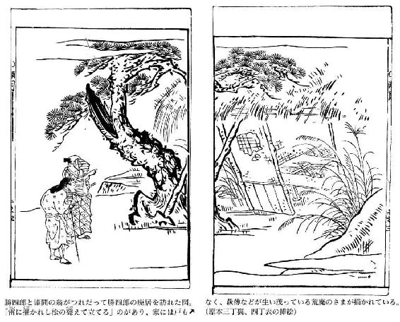
夢応の鯉魚（むおうのりぎょ）
──あらすじ──
私は三井寺の僧ですが、絵、それも鯉の絵を描くのが何よりの楽しみなのです。鯉の泳ぐさまの、自由で心地よげな様子が好きなのです。いつかも鯉の絵をどう上手く描こうか思案しているうちに、鯉といっしょに泳ぐ夢を見て、それを描いたら評判になりましたが、誰にも売ることはありませんでした。ところが私、急に危篤となって、それから蘇生しましたが、生死をさまよう間、夢の中で大変な体験をいたしました。熱っぽさをしのぐため琵琶湖で泳ぎだすと、湖の神のお使いが、日ごろ漁師から鯉を買って水に放つ私の善行の報いとして、鯉に変身できるようにしてやろう、とおっしゃる。鯉となって近江の名所を湖から見るその美しさを満喫しますが、人間におびえ、空腹もしのがねばなりません。魚は魚で、人間同様自由ではありえないのでした。しまった。僧侶である私が、釣り糸にかかるとは。た、助けて。
六十代醍醐天皇の延長年間、三井寺に興義という僧があった。絵が上手だったので、名人という評判を世間から立てられていた。彼がつねづね画くところは、ふつうの画家のように仏像・山水・花鳥などを主とするのではなく、寺の勤めのひまがある日には琵琶湖に小舟をうかべて、網をひいたり釣をしたりする漁師に金銭をやり、とった魚を買いもとめてもとの湖に放し、その魚の泳ぎまわるのを見ては、その姿態を画いていたので、年とともにその技は精細巧妙の域に達したのである。あるとき、絵のことに思いをこらして心がつかれ、思わずも睡気をもよおしたので、うとうととまどろむと、夢の中で、自分が湖水に入って大小さまざまの魚とともにあそぶのを見た。眼がさめたので、すぐにいま夢で見たところをそのまま絵にかいて、壁に貼り、自分でそれを「夢応の鯉魚」と名づけたのであった。その絵のすぐれたできばえに感心して、彼の絵をほしがるものが先をあらそって彼のもとに殺到したので、彼は、ただ花鳥・山水の絵はもとめに応じて書き与えたが、鯉の絵だけは一途に惜しんで与えようとせず、だれにむかっても冗談めかして、「仏門で禁じている殺生をしたり、鮮魚を喰ったりするあなた方世俗の人に、この法師が大事に養っている魚は、けっしてさしあげられません」というのだった。その絵とこの冗談とは、ともに世間の語りぐさとなった。
ある年、病気になって、七日間寝ついたが、急に眼をとじると、呼吸がとまって死んでしまった。弟子や友だちがあつまって、その死を嘆き惜しんだが、ただ胸のあたりにすこしばかり暖かさがのこっているので、もしかすると蘇生するかもしれないと思って、興義のまわりをとりまいて見守りながら、三日をすごしたところ、手足がすこしうごき出すかとみるまに、急に長いためいきをついて、眼をひらき、まるで眠りからさめたように床の上へ起きあがって、人々にむかい、「私が人事不省になってからもう大分たったようだ。幾日ぐらいたっただろうか」とたずねた。弟子たちはこたえて、「御師匠様は、三日前に息をひきとられたのでございます。寺の人々をはじめとして、平生お親しくしていらっしゃるかたがたもおいでになって、御葬儀のことなども相談なさいましたが、ただ御師匠様の胸のあたりが暖かなのを見て、柩にもおおさめしないで、こうしておそばについておりましたところ、いま息を吹きかえされましたので、葬らなくてよかったことだと、一同よろこんでいるところです」という。それを聞くと、興義はうなずいて、「だれでもよいから、ひとり、檀家の平の助の殿のお邸へまいって、つぎのようにはなしなさい。『興義が不思議にも生きかえりました。殿にはいま酒を酌み、その肴に新鮮ななますをつくらせていらっしゃるようですが、しばらくその酒宴を中止して、寺においでいただきたい。世にもまれなめずらしいはなしを申しあげたいと存じます』。そういって、先方の人々の様子をよく見なさい。いま私のいったことにちっともちがうまいよ」という。使に立った者が、不思議がりながら、かの邸に行って、興義からの口上を伝えて、先方の人々の様子をひそかにうかがってみると、主人の助をはじめ、弟の十郎、家臣の掃守などが車座になって酒を酌みかわしている。まさに師の言葉とちがわないありさまなので、使の者はいっそう不思議に思った。邸の人々も、このことを聞いて大いに不思議がり、助も、すぐ箸をおくと、十郎、掃守をひきつれて寺へやってきた。
興義は、枕から頭をあげて、遠路わざわざきてくれたことの礼をいい、助も、興義が蘇生したことの祝詞をのべた。興義がまず助にむかって、「まあ、ためしに私のいうことをお聞き下さい。貴殿は、あの漁師の文四に魚を注文なさったことがございますか」とたずねた。これをきいて、助は驚き、「たしかに、御僧のいうとおりでござる。どうして御存じでいらっしゃるのか」という。興義は、「あの漁師が、一メートルあまりの魚を籠にいれて、貴殿のお邸の門を入ったとき、貴殿は御令弟と表座敷で碁を囲んでいらっしゃった。掃守がその傍にすわって、大きな桃の実をたべながら囲碁の勝負を観戦していた。そして、漁師が大きな魚をもってきたのをよろこんで、高坏に盛った桃を与え、そのうえ杯を与えて十分おのませになった。やがて調理人が得意顔で魚をまな板にのせて、なますにしましたが、この一部始終、私のいうことは違っていないでしょう」というと、このことを聞いて、助の人々は、あまりの不思議さに、あるいはあやしみ、あるいは心とまどって、どうしてこんな詳細に知っているのかと、その理由をしきりにたずねた。そこで興義は、語った。
「私はこのほど病に苦しんで、とても堪えられないほどだったので、自分が息絶え人事不省におちいったのも知らず、からだが熱っぽくて心地が苦しいのをすこしさまそうと、杖にすがって門を出ると、病気もだんだんよくなるようで、ちょうど籠の鳥が大空に解放されたようなのびのびした気持になりました。そこで山といわず里といわず足にまかせてあるいて行くうちに、今度は湖畔に出ました。湖水がみどりに澄んでいるのを見ると、夢見心地に、水浴びをして遊ぼうと思い、そこに衣を脱ぎすてて、身をおどらしてふかいところに飛びこみ、かなたこなたと泳ぎまわりましたが、幼少から水練が達者だというわけでもないのに、思うまま自由自在に泳ぎまわれたのです。いま思うと、思慮のない夢心地でした。しかし、人間が水に浮いて泳ぐのは、それがどんなにうまくても、魚が自由自在に気持よく泳ぎまわるのにはおよばないものだと思うと、ここでまた、魚がのびのびと泳げるのをうらやむ気持がおこりました。そのとき、すぐそばに一ぴきの大魚がいて、私に、『あなたの願いをかなえてあげることは、きわめてやさしいことです。お待ち下さい』といって、そのままふかい水底へ去って行ったかと思うと、しばらくして、冠をつけ装束を着た人が、その大魚にまたがり、大勢の魚族をひきいてうかんできて、私に向かってこういうのです。『湖の神の仰せがあった。老僧はかねがね放生の功徳が多い。そして、いま湖に入って、魚の如く泳ぎまわることを願っている。そこでしばらく金色の鯉の服を授けて、水中のたのしみをさせてあげよう。ただ餌のかんばしいにおいに心まどわされて、釣糸にかかり、身を亡ぼすことのないように──』。そういうと、姿を消してしまいました。不思議なことだと思って、わが身をながめて見ると、いつのまにか全身にうろこが生え、それが金色にひかって、私は一匹の鯉となっていました。
しかし、鯉になったことをべつにいぶかしいとも思わないで、私は、尾を振り、ひれをうごかして、思う存分にあちこちと泳ぎまわりました。まず、長等山の山おろしに吹かれて立ちさわいでいる浪に身をのせて、志賀の浦の汀に泳いで行くと、徒歩で行く人が着物の裾を濡らすほど汀近くを往来するのにおどろかされて、高い比良の山影が映るふかい水底にもぐろうとするが、身をかくすこともむつかしく、夜ともなれば堅田の漁火にひとりでにひきよせられて近寄って行くのも、まるで夢心地でした。夜中の湖上にかげをうつす月は、鏡山の峰に鏡のごとく澄みわたって、多くの港々のすみずみまでもくまなく照らし出し、その情景は趣ふかいものでした。沖の島から竹生島の方に泳いでいくと、波にうつる朱塗の玉垣には、ほんとうにびっくりしました。そうしているうちに夜が明け、伊吹山から吹きおろす山風に送られて、朝妻の渡船も漕ぎ出したので、いつのまにか蘆の間でまどろんでいた眠りをさまされ、矢橋の渡し舟の船頭があやつるさばきあざやかな水なれ棹から身をかわして、瀬田の橋の方へ泳いでいくと、こんどは橋番からなんどもなんども追いたてられたのです。日ざしが暖かなときは水の上にうかび、風のはげしいときはふかい水底で遊びました。
にわかに空腹をおぼえて食物がほしくなったので、あちこちとさがしもとめましたが、手にいれることができず、無我夢中で泳いでいくうちに、たちまち文四が釣糸をたれているのにであいました。その先にさがっている餌は食欲をそそるようにひどくいいにおいです。しかし、心ではまた、湖の神の戒めを思いだして、私は仏に仕える僧侶の身だ。少しばかりの間、食物を口にしないからといって、どうして魚の餌を食うようなあさましいことをしてよいだろうかと、自分にいい聞かせて、そこをはなれました。だが、時間がたつうちに空腹はますますはげしくなってきたので、もういちど考えなおしました。もうとても我慢できない。たとえこの餌を食ったとて、おめおめと捕らえられるものか。それに文四はもともと知りあいのあいだがらだから、なんの遠慮することがあろうか。そう思うと、引きかえしてついにその餌を吞みこみました。すると、文四はすばやく釣糸をひきあげて、私をつかまえたのです。『これは、いったいどうするんだ』と叫びましたが、彼はいっこう知らん顔で私をつかみ、私のあごに縄を通すと、蘆の間に船をつなぎ、私を籠のなかにおしこんで、貴殿のお邸へ持って行ったのです。そのとき貴殿は、御令弟と表座敷で囲碁をたのしんでいらっしゃいました。掃守がそのそばにすわって果物をたべていました。そして、文四がもってきた大魚を見ると、みなさんはたいへんよろこばれておほめになりました。私はそのとき、みなさんにむかって、大声に叫んだのです。『あなた方は、この興義をお忘れになったのですか。お許し下さい。寺にかえして下さい』と、連呼したのですが、誰も知らぬ顔であしらい、ただ立派な魚だと手をうってよろこんでいらっしゃるのです。やがて調理人がやってきて、まず私の両眼を左手の指でつよくおさえ、右手にとぎすました庖丁をもって、私をまな板の上にのせ、すんでのことに切ろうとしたとき、私はあまりの苦しさに大声をあげて、『仏に仕える僧を殺すということがあるか。助けてくれ、助けてくれ』と、泣き叫びましたが、誰も聞きいれてくれません。そして、ついに切られたと感じたとき、夢がさめたのです」と語った。これを聞いて人々はひどく感動するとともに不思議に思って、「御僧のいまのおはなしで思いあわせてみると、御僧が口をきくたびに魚の口が動くようでしたが、いっこうに声を出すことはありませんでした。こんな奇跡をまのあたりに見たとは、まことに不思議千万です」といって、下僕を家へ走らせて、残っていたなますを全部湖へ捨てさせた。
興義は、これから病気がなおって、ずっと後年、天寿をまっとうしてこの世を去った。その臨終に際して、これまで画いた鯉の絵を数枚とり出し、湖に散らしたところが、絵の魚が紙絹からぬけ出して、水中を泳ぎまわった。このために、興義の絵は後世にのこらなかったのである。その弟子の成光というものが、興義の入神の妙技をうけついで、一世に名声をあげた。あるとき、成光が閑院内裏のふすまに鶏の絵をかいたところが、生きた鶏がこの絵を見てほんものの鶏と思って蹴ったということが、昔の「古今著聞集」という本に書きのこされている。
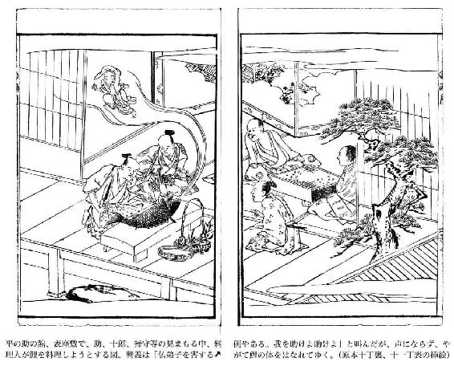
雨月物語 巻之三
仏法僧（ぶっぽうそう）
──あらすじ──
旅ほど平和な時代を謳歌する楽しみはない。ただ、それもあまりに緊張感がなさ過ぎるといかがなものか。仏道に帰依するわけでもなく剃髪した隠居親父は、息子をお供に高野山へと旅をする。この親父、旅人に安易に宿を貸さないのはこの山の掟なのに、それも知らず、野宿をして一夜を過ごす羽目になるとは。いやはやなんとうかつなことか。それからこの二人、弘法大師の霊廟の前の灯籠堂に陣取ったが、親父は旅案内に書かれた高野山の知識を振り回し、果ては霊鳥仏法僧の鳴き声に感激して、趣味の俳諧などひねって悦に入っている。おや、この夜中に先払いの声とともに、大名の行列が通りかかるとは奇怪な。墓所が延々と続くこの域内、とてもこの世のものとは思えぬに、親父たちは全く感づきもせず、一座の端に加わってしまった。さてさて、あの者たち、無事に山を下りられるのか。
うらやすの国とよばれるこの日本は、長いあいだ穏やかに治まって、民はそれぞれの家業にいそしみ、その余暇には、春は花の下にいこい、秋はもみじの林を訪ねるというように行楽をたのしみ、はては遠く九州筑紫の名所も知らなくてはと思って、遠くまで船旅をする人が、こんどは富士や筑波の山々に行ってみたいと、ふかく心惹かれるのも、思えば、泰平の世の余沢として、自然のなりゆきであろう。
伊勢の国相可という里に、拝志氏という人がいたが、はやく家督を嗣子にゆずって、べつにこれという不幸があったわけでもないのに剃髪し、名を夢然とあらため、元来丈夫で持病というものもないところから、諸国をあちこちと旅行するのを老後のたのしみとしていた。末子の作之治が、どうも生来無骨で融通のきかないのを案じて、都人の風流にして優しい様子でも見せようと思い、彼をともなって一か月あまりを京都二条の出店に逗留し、三月の末には吉野の奥の桜を見に行き、知りあいの寺に七日ほど泊ったが、このついでに、まだ高野山へ行ったことがないので、ひとつ行ってみようといって、折から夏のはじめ、青葉の茂みをわけながら、天の川というところから山を越えて、摩尼の御山とよばれる高野山に行った。道中のけわしさに行き悩んで、みちははかどらず、いつのまにか日の暮れかかるころになった。
壇場から諸堂、霊廟と、のこらず参拝して、宿坊の前に立ち、「こちらに泊めていただきたい」と声をかけたが、誰ひとりとして応答するものがない。そこで通行人に、この地のならわしをたずねたところ、「お寺や僧坊につてのない人は、麓に下って夜をあかすよりほかありません。この山では、すべて旅人に一夜の宿をかすということはないのです」というこたえだった。どうしようかと、途方にくれた。いかに丈夫な身体とはいっても、老人の身で、けわしい山路を越してきたうえに、いまこうしたことを聞いては、心ががっくりと張りあいを失って、急に疲れを覚えた。作之治も、「日も暮れ、足も痛んで、さらにこのうえどうして長いみちのりを麓にくだれるでしょうか。私のように若い者は、たとえ草に寝てもいといません。しかし年寄られた父上が、そのために御病気にでもなったらと、それが案じられます」という。夢然は、「旅というものは、こういうことがあってこそまた趣があるというものだ。しかし、今夜、脚をいため、疲労困憊して里へ下っても、それが自分の故郷というわけでもないし、また明日の道中だってどんなことがあるかわからないのだ。この山は日本第一の霊場で、弘法大師の広大な徳はとても語りつくせないほどである。わざわざにでもここへきて、終夜、参籠祈願し、来世の安楽往生をお願いしなければならないところであるが、今夜はちょうどよい折であるから、大師廟で終夜お念仏を唱えることにしようではないか」といって、杉並木の鬱蒼とした奥の院への参道を歩み進んで、やがて大師廟の前の灯籠堂につき、その縁側にのぼって、もっていた雨具を敷き、席をこしらえると、そこにすわって、心しずかに念仏を唱えながらも、夜がしだいにふけていくのをなんとなく心細くわびしく感じたのである。
この山は、約五キロ四方平坦になっていて、あたりに見苦しい林など見えず、小石一つさえはらいきよめたありがたい霊地ではあるが、それでもさすがに、この灯籠堂の辺は寺も遠く、陀羅尼を唱える声も、鈴錫の音もきこえない。樹木は雲をしのぐほど高々とそびえて茂りあい、道ばたを流れる水の音がほそぼそと澄みわたって、夜の静寂になんとなくさびしい。寝られないままに、夢然は作之治にむかってはなした。「そもそも大師の徳の力は、霊なき土石草木にまでも霊を宿して、開山以来八百余年を経た今日にいたっても、ますますあらたかで、ますます尊いことである。大師の遺された業績やめぐり歩かれた旧跡は、日本全国に多いが、その中で、この高野山こそ第一番の仏道道場である。まだ大師の御存命中のことであるが、遣唐使にしたがって、遠く中国に留学され、その地で真言の秘奥をきわめられると、『この三鈷の落ちとどまるところが、わが宗旨をあげひろめる霊地である』といって、三鈷を大空高くお投げになったが、それがこの山に落ちたのであった。壇場御影堂の前にある三鈷の松というのが、それが落ちとどまった所だと聞いている。すべてこの山の草木といい、泉石といい、霊力をもたないものはひとつもないということである。今夜ゆくりなくもここに一夜をおかりしたということは、この世だけでなく、前世からのありがたい因縁である。お前も若いからといって、けっして信心を怠ってはならない」と、小声ではなすが、夜のしじまにその声さえすみとおって、心細い感じがする。
大師廟のうしろの林あたりからと思われるが、「ブッパン、ブッパン」となく鳥の声が、こだまになって響いて、耳近くきこえてくる。それを聞くと、夢然は、目さめるような心持になって、「ああ、めずらしい声を聞くものだ。いま鳴いている鳥が仏法僧というのだろう。かねがねこの山にすんでいるとは聞いていたが、たしかにその声を聞いたという人もいないのに、今夜ここに宿って、ありがたいその声を聞けたとは、まさに滅罪生善のいいしるしであろうか。あの鳥はもともと清浄の地をえらんですむということである。上野の国の迦葉山、下野の国の二荒山、山城の醍醐の峰、河内の杵長山、そして、なかでもこの高野山にすんでいるということは、大師のお詠みになった詩偈にもあって、世人のよく知っていることである。
寒林独坐草堂暁 三宝之声聞一鳥
一鳥有声人有心 性心雲水俱了々
（さびしい林の中の草の庵にひとり坐して暁をむかえると、折から仏・法・僧の三宝を唱える一羽の鳥の声を聞いた。一羽の鳥ですらすでに三宝を唱える声があるのだから、これを聞く自分にも、これに応じて仏心を発揮する心がある。有情の鳥声・人心、非情の行雲・流水、すべてこの山にあるものは法身如来の仏徳を開顕して悟りの境地に入っている）
これがその詩偈であるが、また古歌にこういうのもある。
松の尾の峰静かなる曙にあふぎて聞けば仏法僧啼く
（松尾山の峰が静かにあけてゆく曙に、峰の空を仰ぎながら耳傾けると仏法僧の声がきこえる）
昔、最福寺の延朗法師は、世にもまれな信仰あつい法華経信奉者であったので、松の尾神社の祭神が、この仏法僧をつねに延朗法師に仕えさせたということがいい伝えられているから、この歌のように、松の尾神社の神域にもすんでいたことが知られる。それにしても、今夜くしくも、すでにこの仏法僧の一声を聞きえたのだから、私もここにおいて興趣をおぼえずにおられようか。一句詠んでみよう」といって、平生たのしみたしなんでいる十七音の俳諧を、しばし案じていたが、やがて口に出して詠みあげた。
「鳥の音も秘密の山の茂みかな」
旅行用の小硯をとり出して、御灯明の光をたよりにこの句を書きつけ、もう一声聞きたいものだと耳をすますと、思いがけず遠く寺院の方から、先ばらいの声がいかめしく聞こえ、次第にこちらへ近づいてきた。いったいどなたがこんな夜更けに参拝なさるのだろうかと、あやしみながらもおそろしく思って、親子は互いに顔見合わせて息をころし、そちらの方ばかりじっとみまもっていると、はやくも先ばらいの若侍が、御廟橋の橋板を荒々しく踏んで、こちらにやってくる。
親子がおどろいて灯籠堂の右側の廊に身をかくすのを、武士はいちはやく見つけて、「何者だ。殿下のおいでだぞ。はやく下へおりろ」というので、二人はあわてて縁をおり、地面に平伏した。まもなく大勢の足音が聞こえたが、その中でひときわ高く沓音をひびかせて、烏帽子・直衣を召した貴人がお堂におあがりになると、おつきの武士四、五人が、その左右に座をしめた。貴人は、おつきの武士たちにむかって、「だれだれはどうしてこないのか」とおたずねになる。「やがてまいりましょう」と、武士がおこたえ申しあげる。そこへまた一群の足音がして、いかめしく立派な武士や、頭を丸くした入道などがその中にまじってやってきたが、貴人に対してうやうやしく礼をすると、堂にのぼった。貴人は、いま来た立派な武士にむかって、「常陸介、その方はどうして遅くまいったのだ」とおっしゃると、その武士は「白江、熊谷の両名が、殿下に御酒をさしあげるのだと申して、まめまめしくはたらいておりますので、拙者もなにか御酒の肴を一品ととのえてさしあげようと思い、そのためにおともに遅れたのでございます」と申しあげる。そして、たずさえてきた肴をならべておすすめすると、貴人は、「万作、酌をせい」とおっしゃるのだった。その声に、美貌の若侍が、かしこまっていざりより、酒器をとりあげて酌をした。それから、あちらの人、こちらの人と杯をまわして、酒宴はにぎやかになった。
やがて、貴人は、また口をひらいて、「久しく紹巴のはなしを聞かないな。ここへよべ」とおっしゃると、御前から順に呼び伝えているようであったが、ちょうど夢然が平伏しているうしろの方から、一人の大きな法師──顔がひらったく、目鼻だちのはっきりした人であった──が、僧衣の身づくろいをしながら、堂の方へ進み出、居並ぶ人々の末座に座をしめた。すると、貴人は古歌や故事・古語などをあれこれとおたずねになり、法師はそれにたいしていちいちくわしくおこたえ申しあげたが、貴人はそのこたえにひどく感心されて、「かれに当座の褒美を与えよ」とおっしゃった。
一人の武士が、法師にたずねた。「この高野山は徳高き高僧がおひらきになって、土石草木のごとき霊なきものまで、仏徳をうけて霊魂をもたないものはないと聞いております。しかるに、ここを流れる玉川の水には毒があって、人がこれをのむときは毒にあたって命を落すゆえに、大師がそれをいましめるためにお詠みになった歌として、
わすれても汲みやしつらん旅人の高野の奥の玉川の水
（忘れても旅人は高野山の奥の玉川の水を汲んで飲んではいけない、毒があるからだ）
というのがあると聞きつたえております。大師ほどの高徳の方が、この毒のある流れを、どうして涸らしておしまいにならなかったのでしょうか。いぶかしいことですが、貴殿はどうお考えになっていらっしゃいますか」
法師は、微笑をたたえて、こたえた。「この歌は『風雅集』におさめられております。その詞書に『高野の奥の院へまいる途中にある玉川という川は、水上に毒虫が多いので、この流れを飲んではならないということを、さとしいましめておいてのちに、この歌を詠む』という意味のことがあきらかに書かれておりますから、貴殿のおっしゃるとおりです。しかしまた、いまのお疑いが道理にはずれたことでないと思われますのは、大師は神の如き霊力をもってなにごとをも思うようになしうる方でしたから、目に見えない神を使って道なきところに道をひらき、巌をくりぬくのは土を掘るよりもたやすく、大蛇を封じこめ、化鳥を帰順せしめられるなど、ひとしく天下の人々が仰ぎとうとぶ立派な功績をおしめしになったことを思いあわせると、どうもこの歌の詞書はほんとうとは思えません。もともとこの玉川という川は諸国にあって、どの玉川を詠んだ歌も、その流れの清らかなのをほめたたえたものであることを思えば、ここの玉川も毒のある流れではなく、この歌の意味も、これほど名高い川がこの山にあるのを、ここに参詣する人はかりにすっかり忘れていても、この流れの清らかさに心ひかれて、思わずも手にすくって飲むことであろう、というこころをお詠みになられたのであろうのを、後世の人が、毒があるという妄説につられて、この詞書をつくりあげたものかと思われます。また、もっとふかく疑ってみると、この歌の調子は、大師の生きておられた平安朝初期のうたいぶりではありません。およそわが国の古い言葉に、玉鬘、玉簾、珠衣などというのがありますが、これらはかたちのよさをほめ、清らかさをほめる言葉でありますから、それとおなじように、清水をも玉水、玉の井、玉川などとほめるのです。毒のある流れに、どうして『玉』という言葉を冠らせることがありましょうか。むやみやたらに仏をありがたがって、しかも歌のことなどにくらい人は、このような歌意曲解のあやまりはいくらでもしでかすものです。それにひきかえ、貴殿は歌よみでもいらっしゃらないのに、この歌の意味に疑問をもたれるとは、ほんとうにたしなみのふかいゆかしいことでございます」と、大いにその武士をほめたたえたのである。貴人をはじめ、なみいる人々も、この説が道理にかなっていると、しきりに賞讃した。
折から、御堂のうしろの方で、「ブッパン、ブッパン」と鳴く声が、間近く聞えたので、貴人は杯をあげられて、「あの仏法僧の鳴くのも久しく聞かなかったが、これで今夜の酒宴にひときわ興がのったぞ。紹巴、一句どうじゃ」と、おっしゃる。法師は、かしこまって、「それがしの短句は、すでに殿下にもお聞きふるしでいらっしゃいましょう。今夜、ここに旅人がお籠りしておりますが、さっき当世風な俳諧を口ずさんでおりました。殿下にはおめずらしくいらっしゃるでしょうから、その者をよび出して、お聞き下さいませ」という。貴人が、「その者を呼べ」と、おっしゃると、若侍が夢然の方にむかって、「お召しでいらっしゃるぞ。ちこうまいれ」という。夢然は、無我夢中で、おそろしさのままに、御前へはい出した。すると、法師は、夢然にむかって、「さっき詠んだ句をわが君に申しあげよ」という。夢然は、おそるおそる、「なにを申しましたでしょうか、いっこうに覚えておりません。どうかおゆるし下さい」という。法師は、重ねて、「秘密の山という句を詠んだではないか。殿下がおたずねになっていらっしゃるのだ。はやく申しあげよ」という。夢然は、いよいよおそれて、「殿下と仰せられますのはどなたでいらっしゃいますか。どうしてこんな深山で夜宴をもよおされていらっしゃるのですか。どうもいよいよ不審なことでございます」という。法師は、それにこたえて、「殿下と申しあげるのは、関白秀次公でいらっしゃるのだ。またここに従う人々は、木村常陸介、雀部淡路、白江備後、熊谷大膳、粟野杢、日比野下野、山口少雲、丸毛不心、隆西入道、山本主殿、山田三十郎、不破万作の面々で、かくいうそれがしは紹巴法橋である。汝等はふしぎの御縁で拝顔の栄をえたのであるぞ。さっきの句をいそいで申しあげよ」という。夢然はこれをきくと、もし頭に髪があったならば、一瞬にしてその毛髪がふとくなるかと思うほど恐怖におののき、肝も魂も身をはなれて宙にうくような心地がして、ふるえながら、頭陀袋からきれいな紙をとり出して、筆もしどろもどろに書きつけてさし出すと、それを山本主殿がとって、声高くよみあげる。
「鳥の音も秘密の山の茂みかな」
貴人は、これをお聞きになって、「こざかしくも詠みおったな。だれかこの付句をいたせ」とおっしゃると、山田三十郎が座をすすみ出て、「それがしがいたしましょう」といって、しばし首をかしげて思案していたが、やがてこう付けた。
「芥子たき明すみじか夜の牀
どうでしょうか」と、彼は書いた紙を紹巴に見せる。紹巴は、「みごとにお詠みになりました」とほめて、それを秀次公の前にさし出すと、秀次公もごらんになって、「悪いできでもないわい」と感心されて、また杯を傾け、一座にまわされた。
淡路とよばれた人が、このとき急に顔色をかえて、「もはや修羅の時刻になったようです。阿修羅どもがお迎えにまいったと申しております。お立ち下さい」というと、一座の人々はたちまち血をそそいだように顔を真っ赤にして、「さあ、石田、増田のやつばらに、今夜も一泡ふかせてやろう」と、勇んで立ちさわぐ。秀次公は、木村にむかって、「つまらぬやつにわが姿を見せてしまったわい。あいつ等二人も一緒に修羅道へつれてまいれ」とおっしゃる。それを、老臣の人々がわってはいって、間をへだて、声をそろえて、「まだ寿命のつきない者どもでございます。いつもの悪行をなさいますな」といったが、その言葉も、人々のすがたも、遠く大空のかなたに消えて行くようだった。
親子は気を失って、しばらくのあいだは息もたえだえであったが、やがて明けてゆく空とともに、梢を落ちる露がひややかにかかるのに息をふきかえしたけれど、それでもまだすっかり夜の明けきらぬおそろしさに、「南無大師遍照金剛」とせわしく唱えながら、ようやく太陽の昇ったのを見て、いそいで山をくだり、京都へ帰って、薬や鍼の治療にいそしんだのである。その後、ある日、夢然は、三条の橋を通りすぎるとき、そこの瑞泉寺にある秀次の悪逆塚のことを思い出すと、その方におのずと視線がひきよせられて、「白昼でも物すごいありさまでした」と、のちに都の人にはなしたのを、聞いたままにここに書きしるしたのである。
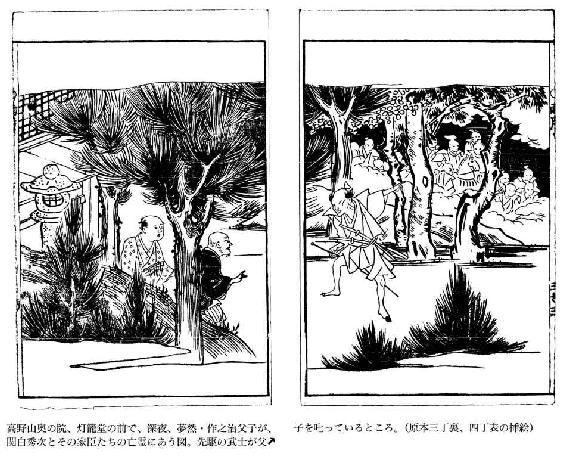
吉備津の釜（きびつのかま）
──あらすじ──
いつの世も占いというものは気になりますが、吉備津神社には、釜の湯を沸かして、うなり声があれば吉、なければ凶という釜占いがございます。この占いで凶と出たのに背いて結婚した、この神社の神主の娘がとんでもないことになった、という話がございます。結婚の相手は、この地の庄屋の息子。これが結婚しても身持ちがおさまらず、鞆の港の遊女を請け出しそこに行ったきり帰ってこない有様。庄屋も怒って息子を座敷牢に入れますが、妻をだまして金を手に入れ遊女と駆け落ちしてしまったのでございます。まめまめしく夫に仕えていた妻の本性は嫉妬深く、ここまで裏切られては恨みも募り、病の床に伏して容易ならぬ有様となったのでございます。逃げた息子らはどうなったか？ それはそれは恐ろしい運命が待っていたのでございます。他人事ではありません。わずかでも身に覚えのある殿方は、くれぐれもお気をつけください。
「嫉妬ぶかい女というものはとかく家を乱しがちで、手におえないものであるが、反面ではそのために夫の身持が制約され、おのずとかたくなるので、若いうちはうるさく思っていても、年をとってからふりかえってみると、それにはまたそれなりにいい点やありがたさがあったのがわかるものである」という言葉がある。ああ、これはいったいだれのいった言葉だろうか──。嫉妬ぶかい女というものは、嫉妬の害がさほどひどくない場合でも、家業のさまたげをなし、器物をこわしたりなにかの手違いをおこさせたりして、隣近所からのそしりはまぬかれがたいものであるが、その害の甚大なものにいたっては、ついに家を失い、国をほろぼして、長く天下の物笑いのたねとなるのである。昔からこの嫉妬の害毒にあたって苦しんだ人は、どのくらいあるかわからない。嫉妬ぶかい女のなかには、死んだのちにおろちとなったり、あるいは物凄い雷をならしたりして、男にうらみを晴らすというものもあるが、そういうたぐいは、みせしめのために、その身の肉を刻んで塩辛にしても、なお飽きたりないほどである。しかし実際にはそんな極端な例はごくまれである。夫が自分の身持をよくおさめて妻を教え導いたならば、嫉妬の弊害も自然と避けることができるのに、それをほんのちょっとした浮気から、女の嫉妬ぶかい本性をつのらせて、自分で自分の身の憂いを招いてしまうのである。昔から、「鳥類を制するのは人間の気合ひとつにある。そして妻を制するのは、その夫の雄々しくしっかりした気性ひとつにある」といわれているが、ほんとうにその通りである。
吉備の国賀夜の郡庭妹の里に、井沢庄太夫という人がいた。祖父は播磨の国の赤松氏に仕えていたが、去る嘉吉元年の乱に、赤松氏の城を去って、この地にやってきて、それから庄太夫にいたるまで三代の間、春にたがやし秋に刈り入れるという農作を業として、家ゆたかに暮らしてきた。庄太夫のひとり子の正太郎というのは、百姓をきらって、酒に溺れ、色にふけって、なかなか父のいいつけを守ろうとしない。そこで、両親はこれを嘆いて、ひそかに相談していうには、「ああ、どうか、ちゃんとした人の娘で、きりょうのいいひとを正太郎の嫁にもらったならば、あの子の身持も自然とよくなるに相違ない」といって、ひろく国中をさがしもとめたところが、さいわいになかだちする人があって、「吉備津神社の神主香央造酒の娘は、うまれつき優美典雅で教養があり、父母にもよく孝養をつくして、そのうえ和歌もうまくよみ、箏も上手に弾きます。もともと香央家は吉備の鴨別の子孫で家柄も正しいのですから、あなたの家がこれと縁組なさることは、きっとよいことがあるでしょう。この縁談が成立するのは、私としても願うところです。あなたのお考えはいかがでございますか」という。このはなしを聞いて庄太夫は大そうよろこび、「いいおはなしをきかせて下さったものです。このことは私の家にとっては家運長久の基ですが、香央家はこの国の名家であり、私どもは氏素姓も卑しい農民です。家柄がつりあいませんから、先方ではおそらく承知なさいますまい」という。仲人の老人は笑顔をつくって、「あなたの御謙遜もはなはだしい。私がきっとうまくまとめて結婚というはこびにいたしましょう」といって、その足で香央家を訪ねてこの縁談をもちこむと、香央もよろこんで妻に相談したところ、妻も同様に乗り気になってこういった。「うちの娘ももう十七になりましたので、毎日、よい相手はいないものか、そういう人のもとへかたづけたいものだと、私はそればかり考えて心のやすまるひまもございませんでした。いいおはなしですから、早く吉日をえらんで、結納を取りかわして下さい」と、しきりにすすめたので、はなしははやくもきまって、この旨を井沢に返事した。そして、すぐに、結納を十分手厚くととのえてとりかわし、黄道吉日をえらんで、結婚式をあげることとなった。
香央は、このうえなお娘の幸福を神に祈るために、巫子や祝部をあつめて、神前に御湯をそなえる御釜祓の神事をとり行なった。そもそもこの社に祈誓する人は、数多くの御供物を神前に供えて、御釜祓の御湯を奉り、それによって事の吉凶を占うのがつねである。巫子が祝詞を奏し終り、御湯がわきあがるときに、吉兆ならば、釜の鳴る音が牛の吼えるように大きく鳴る。反対に、凶兆ならば、釜は鳴らないのである。これを吉備津の御釜祓という。ところが、香央が御釜祓をしてみると、この縁談を神が御嘉納にならないのか、釜は、秋の虫がくさむらですだくほどの小さな声さえ出さない。そこで、疑惑を抱いた香央は、このしるしについて妻に相談した。しかし、妻はいっこうに疑わず、「御釜が音を出さなかったのは、祝部たちの身がけがれていたからでしょう。すでに結納をとりかわしたうえ、夫婦となるべき約束をしたからには、たとえ先方が仇敵の家であっても、また遠い他国の人であっても、約束をかえてはならないと聞いておりますのに──。とりわけ井沢はほまれある武門の後裔で、家風の正しい家と聞いておりますから、いま私の方で断っても承知いたしますまい。ことに娘は、婿となるべき人の眉目秀麗なのをどこからかうわさに聞いて、胸ときめかし、婚礼の日を指折り数えて待ち遠しく思っているようすなのを、もしも今の悪いはなしでも聞こうものならば、どんな無分別なことをしでかすかしれません。そのときになって後悔してもとりかえしがつかないでしょう」と、言葉をつくして夫を説きふせようとしたが、これも母親の立場からすれば当然の心持であろう。これをきくと、夫も、もともと望ましい良縁のことであったから、これ以上ふかくは疑わず、妻のことばにしたがって、ここにやがて結婚の式を挙げ、両家の親類縁者あいあつまって、新夫婦の契りの末長くあらんことを祝ったのである。
香央の娘の磯良は、井沢家にとついでから、朝は早く起き、夜は遅く床につくというように、毎日精を出してはたらき、つねに舅・姑のそばをはなれずにまめまめしくつかえ、夫の性質をのみこんで、夫に気にいられるように真心をつくしてかしずいたので、井沢の両親は磯良の孝行・貞節に感心して、いい嫁を貰ったとそのよろこびはひととおりでなく、また夫の正太郎もその誠意に感心していとおしく思い、契りもこまやかに仲むつまじく暮らしたのであった。しかし、生来のわがままで放蕩な性質というものは、どうにもならないものである。いつとはなしに、正太郎は、鞆の津の袖という遊女とふかくなじんで、ついにはこれを身請けし、近くの里に妾宅をかまえて住まわせ、そこに幾日もいりびたっては、家に帰らないようになった。磯良は、これを悲しく思って、あるときは舅姑が怒っていることにかこつけて諫め、またあるときは夫の浮気な心をうらみなげいたが、夫は妻のいうことなどまったくうわの空に聞きながして、その後は一か月以上も帰宅しないようになった。舅の庄太夫は磯良の真情あふれるいじらしいふるまいを見るに見かねて、正太郎をきつくしかると、ついに一室に監禁してしまった。磯良は、このことを悲しく思って、朝夕、ことに万事に気をつけて、かいがいしく夫に仕えるとともに、また一方では袖の妾宅の方へも、ひそかに物などとどけてやって、真心のかぎりをつくしたのである。
ある日のこと、父が家にいないすきをみて、正太郎は、磯良をそばへよぶと、甘い言葉で、「そなたの真心こもった心づくしを見て、いまでは自分が悪かったとつくづく後悔している。このうえは、あの女と手を切り、うまれ故郷へ送りかえして、それで父上の怒りをなだめやわらげるとしよう。彼女は播磨の印南野の出身であるが、親もなくて不幸ないやしい境遇にいるので、ついふびんに思って情をかけてしまったのだ。もしもいま私に捨てられたならば、きっとまた再び港町の遊女に身をおとしてしまうだろう。おなじ勤めをする身であっても、都は人の情も厚いところであるというから、彼女を都へつれていって、ちゃんとした人の許に仕えさせたいと思うのだ。それにしても、私がこうして軟禁されて訪ねてもやれないので、さぞ万事につけて不自由で、困っていることだろう。都へゆく旅費と衣類といっても、誰も工面してやる者もないありさまだ。そなたがこれを工面して、彼女に恵んでやってはくれないか」と、ねっしんに頼むのを聞いて、磯良もたいそうよろこび、「そのことなら御安心下さいませ」といって、ひそかに自分の着物や手まわりの道具を売って金にかえ、そのうえなお実家の母につくりごとをいって金を貰い、それを夫に渡した。正太郎はこの金を手にすると、こっそり家をぬけ出し、袖をつれて、都の方へ出奔してしまった。これほどまでに徹底的にだまされたので、磯良の傷心は大きく、ついに重い病の床に臥す身となった。井沢・香央両家の人々も、いまは正太郎を憎み、磯良をあわれんで、医者にかけ、ひたすら回復をのぞんだが、その甲斐もなく、磯良は、日ましにだんだん粥さえのどを通らないようになって、とうてい回復の見込みがないような状態になった。
さて、ここ播磨の国印南郡荒井の里に、彦六という男がいた。彼は袖とは従姉弟という近い血縁関係にあったので、正太郎たちは、まずそこを訪ねて、しばらく逗留することにした。彦六は、正太郎にむかって、「都がいかに人情の厚い所だからといって、都人みんながみんな頼もしいというわけでもありますまい。それよりは、ここにお住みなさい。一つ釜の飯をわけあって、お互いに助けあいながら生活しようではありませんか」と、頼もしいことをいってくれるので、正太郎もほっとして気持が落ちつき、ここに住もうと心をきめたのである。彦六は、自分の家と壁ひとつ隣のあばら屋を借りて、ここに正太郎たちを住まわせ、いいはなし相手ができたとよろこんだ。ところが、袖が、風邪気味だといっているうちに、どこがどうということもなくひどくわずらい出して、物の怪にでもつかれたように気ちがいじみてきたので、正太郎は、まだここへきて幾日もたたないのに、こんな災難にとりつかれた悲しさに、自分の食事さえ忘れてひたすらその看病にあたったが、袖はただ声をあげて泣くばかりで、発作がおこるといかにも胸苦しく堪えられない様子をみせ、熱がさめるとふだんとかわらない様子をみせる。生き霊のたたりであろうか、もしかしたら故郷に捨ててきた妻が怨霊となってたたりをしているのであろうかと、正太郎は、ひとり胸をいためるのだった。彦六は、正太郎が気をまわして不安がるのをいさめて、「どうしてそんなことがあるものですか。疫病が非常に苦しいものであるということは、私は、これまでも実際に数多く見てきました。熱がすこしさめると、まるで夢のあとのように、それまでの苦しさなどけろりと忘れたようになるものです」と、無造作にいうのだけが、いかにも頼もしく思われた。しかし、看病のしるしはすこしもなく、袖の病気は、見る見るうちに悪化して、発病してから七日で死んでしまった。正太郎は、天を仰ぎ、地をたたいて、わが身の悲運を泣き悲しみ、自分も一緒に死んでしまいたいと狂気のようになったが、彦六はそれをいろいろいい慰めて、「このうえは、もう仕方がないでしょう」といって、ついに火葬にしてしまった。骨をひろって墓をつくり、卒塔婆を立て、僧にたのんで手厚く菩提を弔ったのである。
ここにいたって、正太郎は、地に俯して亡き袖のいる冥土を慕ってみたが、死者の霊をこの世によびもどす招魂の法をもとめるすべもなく、さればとて天を仰いで捨ててきた故郷のことを思うと、それはかえって冥土よりも遠く隔たった気がして、進退きわまり、途方にくれて、昼は終日ずっと寝てくらし、夕方になると毎夕のように墓に詣でたが、見るといつのまにか墓にも小草が生えて、折からすだく虫の声もなんとなくものがなしい思いをさそうようだった。古歌のように、この秋のわびしさは、わが身のうえにだけあつまったと、秋のわびしさ、身のさびしさをしみじみ痛感していると、ほかにも自分とおなじような不幸な目にあった人があるとみえて、かたわらに新墓がある。この新墓に詣でる女を見ると、いかにも悲しげな様子をして、墓前に花を手向け、水をそそいでいるので、「ああ、お気の毒に。まだうら若いあなたが、こんな人里はなれたさびしい荒野へ、お墓まいりにいらっしゃるなんて」と声をかけると、その女はふりかえって、「わたしがいつも夕方おまいりいたしますと、貴方様はきっとわたしより先におまいりなさっていらっしゃいます。近いお身内の方におわかれなさったのでございましょうか。御心中をお察し申しあげますとお気の毒に存じます」といって、さめざめと涙を流した。正太郎は、こたえて、「おっしゃる通りでございます。十日ほど前にいとしい妻を亡くしましたが、私ひとりあとにとりのこされて、頼りをうしない心細いので、ここにおまいりすることだけをせめてもの心の慰めとしているのでございます。あなたもきっとおなじような御事情がおありなのでございましょうね」という。女は、「いいえ、私がこうしておまいりにまいりますのは、御主人様のお墓で、×月×日にここへ埋葬申しあげたのでございます。家に残っていらっしゃる奥様があまりにもお嘆きになられて、そのためにこのごろでは重い御病気におかかりになられたので、こうして私が代りにおまいりして、香花をお供え申しあげているのでございます」という。それを聞いて、正太郎は、「奥様が御病気になられたのも、まことにごもっともなことでございますよ。それで、いったい亡くなられた方はどういうお方で、おすまいはどちらでいらっしゃいますか」ときく。女は、こたえて、「御主人様は、この地方では由緒ある家柄の御方でいらっしゃいましたが、人の讒言にあって地位も領地も失い、その後はこの野の片隅にわびずまいをしていらっしゃいました。奥様は、隣国にまで評判の美人ですが、この奥様のことが原因となって、家も領地も失ってしまわれたのです」と語る。このはなしを聞くと、正太郎は、例の浮気心がおこったわけではないが、なんとなく心を惹かれて、「さて、奥様がひとりさびしく住んでいらっしゃるところは、ここから近いのですか。お訪ね申しあげて、おなじような悲しみを語りあい、たがいに心の憂さをなぐさめあいましょう。いっしょにおつれ下さい」という。女は、「家は、貴方様がいつもおいでになる道からすこし横にはいった方です。奥様も頼りになる方をうしなって心細くいらっしゃいますから、おりおりはお訪ね下さい。きっとお待ちかねでいらっしゃいますよ」というと、先に立って歩きだした。
二〇〇メートルあまりくると、細い小道があった。ここをはいってなお一〇〇メートルほど歩くと、うすぐらい林のなかに小さな茅ぶきの家があった。竹の編戸もものさびしく、折から七日すぎの上弦の月の光があかるくさしこんでいて、広くもない庭の荒れはてているのまでもはっきりと見える。かすかな灯火の光が、窓の障子をもれているのも、なんとなくさびしい風情である。「ちょっと、ここでお待ち下さいませ」といって、女は、内へ入った。正太郎は、苔むした古井戸のそばに立って、うちの様子をのぞいてみると、襖がすこしあいている間から、灯火の光が風に吹きあおられてちらちらし、その光をうけて立派な黒塗りの違い棚がきらきらとかがやいてみえるのも、奥ゆかしく思われた。そこへ女が出てきて、「貴方様がお訪ね下さったよしを奥様に申しあげましたところ、奥様は、『どうぞおはいり下さいませ。物越しにおはなし申しあげましょう』とおっしゃって、部屋の端の方へいざり出ていらっしゃいました。さあ、あちらへおはいり下さい」といって、前庭をまわって、奥の方へ案内した。二間の表座敷を見ると、人のはいれるぐらいあけて、低い屛風を立て、そこから古い夜着の端が見えていて、奥様はここに臥していると思われた。正太郎は、そちらに向かって、「御主人様に亡くなられて、そのうえ御病気にまでおかかりになられたとうかがいましたが、私も先日いとしい妻に死なれましたので、おなじような悲しみを味わっておりますが、せめてお互いに心の悲しみを話しあってなぐさめあおうと思い、あつかましくもおうかがいしたようなわけです」といった。すると、女主人は、屛風をすこし引きあけて、「久しぶりでおめにかかるものですね。これまでのひどい仕打ちにたいする報いが、どんなものであるか、思いしらせてあげましょう」というので、正太郎はびっくりして、よくみると、これこそ故郷に捨ててきた妻の磯良であった。その顔色はひどく青ざめて、どろんとした眼つきは物凄く、こちらをゆびさす手が青く瘦せ細っているのがおそろしく、正太郎は、思わず「ああッ！」と叫ぶと、そのまま倒れて、気をうしなった。
しばらくたって、息をふきかえした。そっと細目をあいて眺めると、さっき家だと思ったのは、以前からある墓地のなかの慰霊堂で、古びて黒ずんだ仏像が立っていらっしゃるだけであった。正太郎は急いで立ちあがると、遠くの人里で吠える犬の声をたよりに、家に走りかえり、彦六にこの一部始終をはなした。彦六は、「なあに多分狐にでもだまされたのでしょう。心が滅入ってびくびくしているときは、きっと迷わし神が憑くものですよ。あなたのようにひよわな人が、こんな悲しみの淵に沈んでいるのはいけないことですから、神仏に祈って、心をしずめ落ちつけなさい。刀田の里にありがたい祈禱師がいます。そこへ行って身をきよめてもらい、魔よけのお守札もいただいていらっしゃい」というと、正太郎をつれて祈禱師のもとへ行き、このできごとをはじめから詳しくはなして、このことを占ってもらった。祈禱師は、占い考えて、こういった。「わざわいがすでにあなたの身に切迫していて、これは容易ならぬことです。この怨霊は、さきには女の命を奪い、それでも怨みはなお尽きずに、今度はあなたをねらって、あなたの命も今夜か明朝かというところまで迫っているのです。この怨霊が世を去ったのは七日前のことですから、きょうから四十二日の間は、かたく戸をしめて、厳重な謹慎をなさい。私のいましめを守るならば、九死に一生をえて、命だけはとりとめることができるかもしれない。しかし、たとえ一時たりともこのいましめを破ったならば、死をのがれることはできませんぞ」と、きびしくいましめると、筆をとって、正太郎の背中から手足の先にいたるまで、中国古代の書体のような文字を書き、そのうえ朱書した紙のお守札をたくさん与えて、「このまじない札を戸口という戸口に貼って、ひたすら神仏に祈りなさい。いましめにそむいて、身を亡ぼすことがあってはなりません」と教えたので、正太郎は一方ではおそれながらも、また一方ではよろこんで、家に帰り、お守札を門口に貼り、窓に貼って、厳重な謹慎生活に入った。
その夜、真夜中のころ、戸外から、おそろしい声で、「ああ、憎らしい。ここに尊いお札を貼りつけてあるな」とつぶやくのが聞えたが、それっきり二度と声がしない。正太郎は、おそろしさのあまり、夜の長いのを嘆いた。まもなく夜があけたのでほっと生きかえった思いで、急いで彦六の家との境の壁をたたいて彦六をおこし、昨夜のことをはなした。彦六もこれを聞いて、いまさらのように祈禱師のことばがその通り的中したのを、いかにも不思議だとして、自分もその夜は寝ないで、真夜中になるのをいまやおそしと待ちくらした。松を吹く風が、ものを吹きたおすかと思われるほど激しく、そのうえ雨さえ降って、なにか異変でもおこりそうな不気味な夜の気配に、正太郎と彦六は、壁をへだてて声をかけあっていたが、やがて二時ごろになった。そのとき、正太郎の家の窓の障子に、さっと、赤い光がさして、「ああ、憎らしい。ここにも貼ってあるな」という声がしたが、その声は深夜にはいっそう物凄く、正太郎は、髪も身の毛もよだって、しばらくは気をうしなってしまった。夜があけると、前夜のおそろしかったことを語り、日が暮れると、ただもう早く夜が明けないかと朝が待ちどおしく、こうしてこれからの数十日間というものは、まるで千年の月日をすごすよりも長く思われた。かの怨霊も毎夜毎夜、家のまわりをめぐったり、あるいは屋根の棟のあたりで叫んだりして、その怒れる声は一晩ましに物凄くなってくる。
こうして四十二日という最後の夜になった。いまはもはや今夜一晩で物斎も終るところまできたので、とりわけかたく謹慎してすごすうちに、やがて夜明けの空がしらじらとあかるくなった。正太郎は、長い夢からさめたような気がして、すぐに彦六に声をかけると、彦六も境の壁際に身をよせて、「どうしました」という。正太郎は、「おもい物斎もすでにすっかり終りました。このところちっとも貴兄のお顔を見ません。懐かしさも懐かしいし、またこの一か月あまりのつらさやおそろしさを、思う存分はなしあって、心をなぐさめたいものです。起きて下さい。私もそちらへ出て行きましょう」という。彦六は元来が思慮の浅い男なので、「もう大丈夫ですよ。さあ、こちらへおいでなさい」というと、戸をあけかかったが、半分もあけるかあけないうちに、正太郎の家の軒のあたりで「ああッ！」と叫ぶ声が、耳をつんざいて、思わず尻もちをついた。これは正太郎の身のうえになにかおこったにちがいないと思って、斧をひっさげて大道に出ると、さっき正太郎が明けたと見た夜はじつはまだ暗く、月は中空にありながら、光がぼんやりとおぼろで、初冬の風はつめたく吹き、さて、正太郎の家はと見ると、戸はあけたままで、当の正太郎の姿は見えない。家の中にでも逃げこんだのであろうかと、なかにとびこんでみたが、見えない。どこにもかくれることのできるようなひろい家でもないので、それでは大道にでも倒れたのだろうかとさがしもとめたが、その辺には影もかたちもない。いったいどうなったのであろうかと、あるいはあやしみ、あるいはおそれながら、灯火をふってあかるくしてあちこちを見まわると、あけはなした正太郎の家の戸脇の壁に、なまなましい血がかかって、それが流れて地につたっている。しかし、屍も骨も見当らない。なおよく月あかりで見ると、軒の端になにかひっかかっている。灯火を高くさしあげて照らして見ると、男の髪の髻だけがひっかかって、ほかにはなにひとつない。浅ましくもまたおそろしいことは、とうてい筆紙につくすことができないほどであった。夜が明けてから近い野や山を探しもとめたが、ついにその形跡さえ見つけることができずにしまったのである。
そこで、このことを井沢の家へもしらせてやったので、井沢でも、涙のうちに、香央家へもしらせた。こういうわけで、祈禱師の占いが的中してそのとおりになってしまったことといい、また御釜祓で告げられた凶兆がとうとうそのまま事実になってしまったことといい、神意はまことに尊いものであったと、このはなしとともに世の人々は語り伝えたのである。
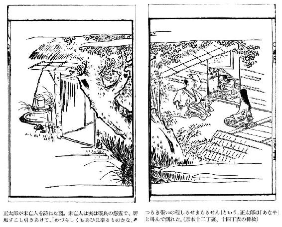
雨月物語 巻之四
蛇性の婬（じゃせいのいん）
──あらすじ──
紀州熊野の網元の家に次男として生まれながら、家職を嫌い、都風のもの学びにふける若者がおりました。その前に突然、王朝物語から抜け出てきたような美女が現れたのです。顔かたちや髪のかかり具合に何とも艶があり、趣味のいい衣装に身をつつみ、折からの雨に濡れて悩ましげな様子、若者を見て顔を赤らめ恥ずかしそうにする表情にもどことなく気品が漂います。若者は胸ときめき、熱心に傘を渡そうとしますが、女は貴方の思い（火）に濡れた衣も乾きそうですと言って、「真女児」という名を残して去りました。若者は、翌日早速女の家を訪ねますが、女はこれまでの人生を語り、若者についていきたいと言い出します。──賢明な読者の皆さん。この女どうも怪しいとお気づきでしょう。作り事ゆえに成り立つ美を現実と混同する人は後を絶ちません。美への愛にのめりこみすぎると、とんでもない毒にもなるのですね。
いつの時代であったか、だいぶんふるいことである。紀伊の国三輪が崎に、大宅の竹助という人がすんでいた。この人は、漁業で大いに儲けた網元で、漁師たちも大ぜいかかえ、手広く魚という魚を漁獲して、家ゆたかに暮らしていた。男の子が二人、女の子が一人あった。長男の太郎は質朴で素直で、よく家業に精を出した。二番目の女の子は大和の人から嫁にもらわれて、大和にかたづいた。三番目の子に豊雄というのがあった。これは、生れつき性質がやさしく、ふだんから風流なことだけを好んで、働いて生計をたてようとするような気持がなかった。父の竹助はこれを苦にやみながらも、また思うには、あの子には財産をわけてやってもすぐに他人にとられてしまうだろう。といって、他家へ養子にやってそこを嗣がせるのも、やっぱり結果においてはいやなことを聞くことになるであろうし、それが心苦しいことだ。ただ、あの子のしたいことをさせて成人させ、学者になりたいのなら学者になるのもいいし、僧になりたいのなら僧になるのもいい。あの子の生きている間は、しょせん太郎の厄介者としておこう、と考えて、しいてやかましくしつけようともしなかった。この豊雄は、新宮の神官安倍の弓麿を先生として、その許へ勉強に通っていた。
九月末のある日、朝から海は波ひとつたたず、風も凪いで平穏であったが、急に東南の空に雲があらわれて、小雨がしとしとと降ってきた。そこで豊雄は、先生の所で雨傘を借りて帰途についたが、阿須賀神社の本殿がかなたに見わたされるあたりまでくると、雨がだんだんひどくなってきたので、ちょうどそこにあった漁師の家へ雨やどりに立ち寄った。この家のあるじである老人がごそごそと出てきて、「これはこれは、だれかと思ったら、旦那様の所の下の若さまでございますか。こんなむさくるしい所へおいで下さるとは、大そう恐縮なことでございます。これを敷きますから、ここへどうぞ」といって、よごれている円座のちりをはらってすすめた。豊雄は、「ほんのしばらく雨やどりするあいだだから、なんでもかまわないよ。そう気をつかわないでくれ」というと、そこに腰をおろしてやすんだ。やがて、家の外で、美しい声がして、「この軒下をちょっとお貸し下さい」といいながら、軒下に入ってくる人があるので、豊雄は、だれだろうと思ってそちらを見ると、年のころはまだ二十歳にならない、容貌といい髪のかたちといい、大そうあでやかな女性が、遠山ずりの色美しい衣服を着て、召使らしい十四五歳のきれいな少女に包みをもたせ、ぐっしょりと濡れて、いかにも困った様子をしていたが、豊雄と視線があうと、さっと顔をあからめて恥ずかしそうな様子をした。それがいかにも上品で美しいのに、豊雄も思わず心がゆらめいた。そして心の中で、この辺にこんな上品な美しい女性が住んでいたら、いままでにその評判を聞かないわけはないから、これはおそらく都の人が三つ山詣でをしたついでに、海が見たくなってこの辺に遊びにきたのであろう。それにしても、下男らしい者も供につれていないとは、どうも不用意なことだな、と思いながら、体をすこしずらして席をあけ、「ここへおはいり下さい。雨もそのうちにやむでしょう」と、声をかけた。女は、「では、しばらくお邪魔させて下さいませ」といってはいってきた。狭い家であるから、女は豊雄と並ぶような位置にすわったが、近くで見るといっそう美しく、まるでこの世の人とは思えないほどの美しさに、豊雄は、恍惚と心が宙にまいあがるような思いがして、女にむかい、「まことに失礼ですが、都あたりの高貴な御身分の方とお見うけいたしますが、三つ山詣でをなさったのでございますか。それとも峰の湯へでも湯治においでになったのですか。こんな殺風景な荒磯を、どこがお気に召して、お遊びにお越しになったのですか。もっとも、ここが、むかしの人の、
くるしくもふりくる雨か三輪が崎佐野のわたりに家もあらなくに
（こまったことに降ってきたむら雨だ。この三輪崎の佐野の渡し場には、雨宿りする家とてもないのに）
と詠んだところですが、この歌の情趣は、ほんとにきょうのこの風情とおなじではありませんか。この家は、むさくるしいところですが、私の父が面倒をみている男の家です。どうか心おきなくくつろいで雨やどりをなさって下さい。それはそうと、いったいどちらへお宿をとっていらっしゃるのですか。はじめての方をお送り申しあげるのもかえって失礼ですから、お帰りには、この傘をもっていらして下さい」という。女は、「まあほんとうに御親切なことをおっしゃって下さってうれしく存じます。そのあたたかいお情に、濡れたのを乾してまいれば、すぐかわくことでございましょう。私は、都の者ではございません。この近所に長らく住んでおりますが、きょうが日がよいというので、那智におまいりいたしましたところ、急に雨が降り出しましたのでこわくなり、あなた様が雨やどりをなさっていらっしゃるとも知らず、見さかいもなくこの軒下をお借りしたのでございます。家はここから遠くもありませんし、雨も小やみになってきましたから、この間に出かけましょう」といって、そのまま出て行こうとするので、豊雄は、しいて、「この傘をもっていらして下さい。ついでの折にでも頂きにあがりましょう。それに、雨はいっこうに小降りになった様子もございませんよ。それで、おすまいはどちらですか。私の方から使を出して頂きにあがらせます」というと、女は、「新宮の辺で、県の真女児の家はどこか、とおたずね下さいませ。そろそろ日も暮れそうです。では、お言葉に甘えて、御親切を頂戴し、この傘を拝借して帰りましょう」といって、傘を手にして出てゆく後姿を、豊雄は見送って、自分はこの家のあるじの蓑と笠を借りて家へ帰ったが、帰宅してからも、どうしても真女児のおもかげが忘れられず、夜通し思いつめて、やっと明け方ちかくとろとろとまどろむと、夢に、真女児の家を訪ねていったところを見た。真女児の家へ行ってみると、門も家もたいそう大きな構えで、蔀をおろし簾をふかく垂れているさまなど、いかにも奥ゆかしい生活をしている様子だった。真女児が出むかえて、「あなたのお情が忘れられず、ひたすらおいでを待ちこがれておりました。さあ、こちらへおはいり下さいませ」といって、奥の方へみちびき、酒や菓子などいろいろ出して、あれこれと厚くもてなしてくれたので、すっかりたのしい酔心地になり、ついにそのまま枕をかわして契った、と思うところで、夜があけ、夢がさめた。これがもし現実であったならばどんなにうれしかろうと思うと、心が身をせきたてるように落ちつかなくなって、朝食も忘れて、そのまま気もそぞろにうきうきと家を出た。
新宮の里へきて、「県の真女児の家はどこでしょうか」とたずねたが、いっこうに知っている人がいない。昼すぎまでたずねあぐねていると、きのうの少女が東の方から歩いてきた。豊雄はそれを見ると、ひどくよろこんで「お嬢さまの家はどこですか。傘を返してもらおうと思って訪ねてきたのですが」と声をかけた。少女はにっこりして、「よくいらっしゃいました。さあこちらへおはこび下さい」というと、前に立ってずんずん歩いていったが、いくらも行かないうちに、「ここですよ」というので、そこを見ると、門を高く構え、家も大きく立派で、そのうえ、蔀をおろし簾をふかく垂れている様子まで、夢の中で見たのと寸分ちがわないのを、不思議だなと思いながら、豊雄は門をはいった。少女は先に走り入って、「傘を貸して下さった方がいらしたので、御案内してまいりました」という。すると、「どちらにいらっしゃるのです。こちらへおむかえ申しあげなさい」といいながらあらわれたのは、真女児であった。豊雄は、「この新宮に安倍先生という方がいらっしゃるのですが、その方は私が長年学問を教わっている先生です。そこをお訪ねするついでがあったものですから、傘をいただいて帰ろうと、ぶしつけながらうかがったようなわけです。これでおすまいもわかったことですから、また改めておうかがいいたしましょう」といって、立ち去ろうとすると、真女児は、むりにひきとめて、「まろや、絶対にお帰ししてはいけませんよ」という。少女は、豊雄の前に立ちふさがって、「あなたはきのう、私たちがお断りしたのに、無理に傘をお貸し下さったではありませんか。そのお返しに、きょうは私の方で無理にでもおひきとめ申しあげるのです」というと、豊雄の腰をおして、表座敷へ迎え入れた。この座敷は板敷の間に床畳を用意してあり、几帳や御厨子などの部屋の調度の飾りといい、壁代の絵といい、みんな時代のついた由緒ありそうな品で、とうてい身分のない人の住居ではない。そこへ真女児があらわれて、「わけあって人手のない家となってしまいましたので、ゆき届いたおもてなしをすることもできません。わずかに粗酒一献さしあげるだけでございます」といって、高坏や平坏の美しい器に、山海の珍味をたくさん盛りならべて、少女のまろやが瓶子をささげて、杯をささげて、酌をした。豊雄は、ここにいたってまた夢のような気がして、さめるのではなかろうかと思ったが、今度はたしかに夢ではなく現実であるのをさとって、かえって不思議な気がしてならなかった。
やがて豊雄も真女児も、ほどよい酔いごこちになったとき、真女児は杯をとって豊雄にさし、あたかもらんまんたる桜の枝が水面に映っているような、ほんのりと桜色に色づいた顔に、そよ吹く春風をあしらうような媚を見せ、春風にのって梢から梢へと飛びくぐりながら鳴く鶯のような美しく妙なる声で、こんなことをいい出した。「胸のうちの思いを、恥ずかしいことだと、うちあけずにおいて、古歌にあるように、そのためにこがれ死にしてしまったならば、神のたたりで死んだのだと、なにも知らない神様にまで無実の罪をおきせすることになるでしょうから、女の身でお恥ずかしいことですが、思いきって申しあげます。けっして一時の浮気心でいうかりそめごととお聞き下さいますな。私はもともと都の生まれでしたが、幼い時に父母に先立たれて、乳母の手許で成長しましたのを、縁あってこの国の国守の下役、県のなにがしという者の妻にむかえられて、夫と一緒にこの国に下ってまいりまして、はや三年になります。夫は、まだ任期の終らないこの春、ふとした病気がもとで亡くなりましたので、私は、頼る者のない孤独な身となりました。都の乳母も尼になって、行方定めぬ修行の旅に出たといううわさを聞いておりますから、そうすれば、生まれ故郷の都もまた知らぬ他国同然となってしまったのです。どうか私の身の上に御同情下さいませ。きのうの雨やどりの折のお情ぶかさで、あなたはほんとうに実意のあるお方と思いますので、これから後の私の生涯をささげて、あなたのおそばにお仕え申しあげたい願いを持ちましたが、この私を、けがらわしい卑しい女だとお見捨てなさらないならば、この一杯で、末長い夫婦の契りをむすぶはじめといたしましょう」という。豊雄は、この言葉を聞くと、かねて自分もこうなることを内心望んでいたことであるし、一途にこがれて気も狂うばかりに思いつめた相手のことであるから、とびたつばかりによろこんだが、まだ親がかりで自由のきかないわが身のうえをふりかえると、親や兄の許しもうけていない結婚のことを、どう返事したらよかろうかと、うれしいなかにもおそろしさがつきまとって、すぐには返事の言葉も出ないでいると、真女児は返事のないのを心細く悲しがって、「あさはかな女心から、愚かなことを口にして、いまさらひっこみのつかないのが、ほんとうにお恥ずかしゅうございます。こんな天涯孤独で、人からうとまれるようなあさましい身のうえになりながら、海へとびこんで死にもせず、かえってあなた様のお心をわずらわしなどすることは、なんと罪ふかいことでございましょう。いま私が申しあげました言葉は、けっしてうそいつわりではございませんが、ただ酔って口にした冗談とおぼしめして、どうかこの海へさらりとお捨て下さいませ」という。
豊雄は、「はじめから都の身分ある方とお見受け申しあげておりましたが、私の推察が当たっていたのですね。鯨の寄るようなこんな片田舎の浜辺に育った私にとって、あなたのような方からいまのようなうれしいお言葉を聞くなんて、まるでゆめのようです。即答をしなかったのは、私がまだ親や兄に面倒をみてもらっている身で、自分のものといっては、爪と髪、この身体以外になに一つもないからです。なにを結納としてあなたを妻におむかえしたものか、そのあてもないので、いまさらのように自分に財産のないのがくやまれて仕方ありません。それでも、あなたがそれを御承知で、なにごとにつけても貧しさを辛抱して下さるお気持がおありならば、どんなにしてでもあなたを妻として、お力になりましょう。諺に、孔子のような聖人も恋にはつまずき倒れるということがありますが、恋のためには、親への孝も忘れ、わが身の無力をも忘れて、私は──」というと、真女児も、「あなた様のそんなうれしい御心のうちをお聞きして、私は幸福でございます。このうえは、私どもも貧しい暮らしではございますが、どうか私の夫として時折はここへお通い下さいませ。ここに前の夫がこのうえない宝として珍重されていた太刀がございます。これをふだん腰におつけになって下さい」といって、差し出したのを見ると、金銀で美しく飾った太刀で、ものすごいまでに鍛えあげた古代の逸品であった。あまり立派なので、豊雄は一瞬ためらいを感じたが、めでたい婚約のはじめに辞退するというのも縁起がわるいと思って、そのままもらっておくことにした。「今夜はここで泊っていらっしゃいませ」と、真女児はしきりに止めたが、豊雄は、「まだゆるしをうけていないうちに外泊したら、親たちから叱られます。明日の晩、また、うまい口実をもうけて、きっとまいりますから」といって、その夜はそのままそこを辞去した。しかし、帰宅して床についてからも、目が冴えて眠れないでいるうちに、いつか夜があけてしまった。
太郎は漁師をよびあつめてそれぞれの仕事に就かせるために、朝早く起き出して、なにげなく豊雄の寝間のすきまから室内をのぞいたところ、消え残った灯火の光をうけて、きらきらとひかる立派な太刀を枕許において、豊雄が寝ているのである。「おや、変だな。どこから手に入れてきたのだろう」と、腑に落ちなく不安に思って、戸をあらあらしくガラリとあけると、その音に豊雄は目をさました。見ると、兄が立っているので、「お呼びですか」という。太郎は、「きらきら光ったすごいものを枕許においてあるが、それはなんだね。こんな立派な高価なものは、漁師の家には不似合だよ。父上が見つけたら、どんなにお叱りになるかしれないぞ」という。豊雄は、「お金を出して買ったものではありません。きのう、ある人がくれたのを、ここにおいたのです」とこたえる。すると、太郎は、「どうして、そんな立派な宝物をくれるような人が、この辺にいるだろうか。そんな人はいないよ。ふだんからこむずかしい漢字を書いた書物をいろいろ買いあつめるのさえ、ひどい無駄づかいだと思っていたが、父上がだまっていらっしゃるので、おれもいままでそのことはいわなかったのだ。その太刀を着けて、新宮の祭の行列に加わり、得々としてねり歩くつもりだろう。なんという狂気じみたことをするのだ、いい加減にしろ」というが、その声が高くなったので、父がこれを聞きつけて、「あの厄介者がなにかしでかしたのか。太郎。豊雄をここへつれてこい」と呼ぶ。太郎はそれにこたえて、「どこで買ったものか、豊雄が、まるで将軍でも佩くようなきらきら光った立派な太刀を買いこんだようですが、ばかなことをしたものです。目の前におよびになって、よく問いただして下さい。私は、漁師たちが怠けているかもしれませんから、すぐ浜の方へ行ってきます」といい捨てて、出て行った。
母は、豊雄をよんで、「お前は、そんなものをなんのために買ったんだい。米も銭も、家のものはみんな太郎のものなんだよ。お前のものはなにひとつないんだよ。ふだんはお前のしたいままにさせてきたが、こんなことで太郎に憎まれたならば、この広い世の中に、どこにもいるところがなくなってしまうではないか。むずかしい本を読んで聖賢の教えなどを勉強している者が、どうしてこんなことの道理をわきまえないんですか」と、たしなめた。豊雄はそれにたいして、「ほんとうに買ったものではないのです。それ相当な理由があって、ある人がくれたのを、兄上が見とがめて、私が買ったようにおっしゃるのです」というと、そばにいた父が、「お前になんの手柄があって、そんな立派な宝物を、人がくれたというのだ。さっぱり腑に落ちないことだ。さあ、この場でその理由をいってみろ」と、声あららげていった。豊雄は、「そのことは、いまここでは恥ずかしくて申しあげられません。人を介して申しあげます」というと、父は怒って、「親や兄にさえいわぬことを、誰にいおうというのだ」と、一層声を荒くしていうのを、太郎の妻である嫂が、傍から、「まあ、そのことは、ふつつかではありますが、私がうかがいましょう。さあ、こちらへいらっしゃい」と、親たちと豊雄の仲をとりなして、豊雄を別室へいざなったので、豊雄も嫂のあとにならんで立ち、別室へ行った。
豊雄は、嫂にむかって、「兄上に見とがめられなくても、内々、嫂上に相談して力になって頂こうと思い定めていたのに、その前に見つかって早速叱られてしまいましたよ。じつはこうした素姓の人の妻で、いまは夫に先立たれて頼りない身になっている女が、『結婚して、力になってくれ』といって、そのしるしに下さったものなのです。なにしろまだ部屋ずみで、独立していない私の分際で、親や兄のお許しをえていない夫婦約束をしたということは、きびしいお叱りをうけることでしょうから、いまさらのようにひどく後悔しているのですが、どうか私の気持を察して、嫂上、同情して下さい」という。それを聞くと、嫂は、微笑をたたえて、「私も、かねがね、あなたが独身でいらっしゃるのがお気の毒だと思っていたのですが、そんな相手がみつかって、とてもいいことじゃありませんか。ふつつかな私ですが、うまくおはなししてみましょう」といって、その晩、夫にむかい、「じつはこれこれこうしたことなのですが、これはちょうどいいはなしだとはお考えになりませんか。どうかあなたからお父様に、いいようにとりなしておはなし下さい」といった。すると、太郎は眉をひそめて、「変だな。この国の国守の下役に、県の何某という人がいたなどとは聞いたことがない。私の家は里長をしているのだから、そういう人が亡くなられたのを耳にしないということはないがな。とにかく、その太刀をここにもってきてくれ」というので、妻はすぐにそれをもってきた。太郎は、それをつくづくとながめておわると、ふかい嘆息をもらしながら、口をひらいて、「ここに大変なことがあるのだ。それは、近ごろ、都の大臣が御祈願が成就なさったので、そのお礼として、権現様にたくさんの宝物を御奉納になったのだ。ところが、その宝物が御宝蔵の中で、急に紛失したので、その由を権現様の大宮司から国守に訴え出られたのだ。そこで国守は、この盗賊を逮捕するために、次官の文室の広之を大宮司の屋敷につかわされ、いまもっぱらその盗賊の詮議をなさっていらっしゃるということを聞いた。それにつけても、この太刀はどうみても下役などの佩くようなものではない。なお父上にもお見せしよう」といって、それを父の前にもっていって、「じつはこれこれこういうおそろしいことがあるのですが、どうしたらよろしいでしょう」といった。それを聞くと、父は真っ青になって、「これはとんでもない情ないことがおこったものだな。あの子は、日ごろ、他人のものはたとえ毛一本でも抜きとらないような子なのに、なんの因果でこんな悪心などおこしたのだろうか。このことが他人の口から露顕したならば、大宅の家も断絶の憂きめにあうだろう。祖先にたいしても、また子孫のためにも、不孝の子を一人捨てるのは惜しくない。明日こちらから訴え出ろ」という。
太郎は、夜のあけるのをまって、大宮司の屋敷に行き、事の一部始終を申し出て、この太刀を見せたところ、大宮司は驚いて、「これこそたしかに大臣殿の献納したものです」というので、それを聞いて次官の広之も、「なおこのうえにも、紛失したものを糾明しよう。その男を召し捕ってまいれ」と命じた。そこで十人ほどの武士が、太郎を先に立てて、召し捕りにむかった。豊雄は、こんなこととはつゆ知らず、家で書見をしていたが、そこへ武士たちがふみこんで召し捕った。「なんの罪で捕らえるのですか」と抗弁したが、武士たちはそれを聞きいれずに、縛りあげた。これを見て、父母や太郎夫婦も、いまさらのように、「情ないことだ」と、どうしてよいかわからずに、嘆き悲しむだけであった。武士たちは、「お役所からお召しなのだ」「とっとと歩け」などと、豊雄を真ん中にとりかこんで、国司の庁へ追い立てて行った。次官は、豊雄をひきすえると、にらみつけて、「おまえが宝物を盗みとったというのは、前例のないほど重い国法を犯した罪だぞ。なお、ほかのいろいろの財宝はどこへ隠したのだ。あきらかに申せ」といった。これを聞いて、豊雄はやっと事態の真相がわかり、涙を流してこたえた。「私はけっして盗みをしたのではありません。じつはこれこれこういうわけで、県の何某の妻が、前夫の佩いていたものだといって、くれたのです。すぐここへその女をよび出して、私に罪のないことをおたしかめ下さい」。次官は、この言葉にいよいよ激昂して、「わが下役に県の姓を名のる者はかつていたことがないわ。このうえ偽りをいうとは、ますます罪が大きいぞ」という。豊雄は、「こんなふうに捕らわれているのに、どうしてこのうえいつわりを申しあげましょうか。なにとぞあの女をよび出しておたずね下さい」という。そこで次官は、武士たちにむかって、「県の真女児という女の家はどこなのだ。この男をひったてて、その女を捕らえてこい」と命じた。
武士たちは、その命令をつつしんでうけると、また豊雄をひったてて、真女児の家へむかったが、そこへ行ってみると、いかめしく造ってある門の柱もいまは朽ちくさり、軒の瓦もおおかたは落ち砕けて、そこから忍ぶ草が垂れさがっているというありさまで、とても人がすんでいる家とは見えない。豊雄もこのさまをみて、まったく茫然自失した。武士たちは走りまわって近隣の者たちをよびあつめた。きこりの老人や米搗きの男たちが、おそれておろおろしながらそこにうずくまった。一人の武士が、この男たちにむかって、「この家は何者が住んでいたのだ。県の何某の妻がここにすんでいるというのはほんとうか」とたずねると、鍛冶屋の老人がすすみ出て、「そんな名前はまったく聞いたこともございません。この家は、三年ほど前までは、村主の何某という人が、人も大勢使って家ゆたかにすんでおりましたが、九州に商品を積んで下ったところ、その船が行方不明になってしまい、その後は、家に残っていた人々もちりぢりになってしまって、それ以来、絶えて人のすんだことがないのに、この男がきのうこの家にはいったかと思うと、しばらくして帰って行きましたので、変だなと、それを見ていたこの塗師の老人がいっておりましたが」という。「ともかくも、なかの様子をよく見きわめて、殿に御報告いたそう」といって、武士たちは門をおしひらいて、中へはいった。
邸内は外よりもいっそう荒れはてていた。なおも奥の方へ進んでいった。前庭の植込みはひろびろとつくってある。池は水が涸れて、水草もすっかり枯れ、野生の草木が生え放題に丈たかく生い繁って倒れかかっている中に、松の大木が風に吹き倒されて横たわっているのが、いかにも物凄いありさまだった。表座敷の格子戸をひらくと、不気味ななまぐさい風が、内部からさっと吹きおくられてきたので、武士たちは思わずもおそれまどって、うしろへさがった。豊雄は驚愕のあまり声もでずに、ただ嘆いていた。武士のなかに巨勢の熊檮という大胆な男がいたが、「御一同、私のあとについておいでなされ」というと、板の間をあらあらしく踏みならして、先に進んで行った。床には塵が三センチほども積もっている。鼠が糞をしちらしたなかに、古い几帳を立てて、花のように美しい女が、ひとりですわっている。熊檮は、女にむかって、「国守がお召しであるぞ。すぐまいれ」と声をかけたが、女がこたえようともしないでいるので、近寄って捕らえようとした瞬間、地も裂けるかと思うほどの大雷が鳴りひびいた。武士たちは、逃げる間もなくて、そこに倒れた。しばらくして、そっと顔をあげて見ると、どこへ行ったのだろうか、女は影も形も見えなくなっていた。
なおよく見ると、床のうえに、きらきらとした立派なものがある。武士たちは、こわごわちかづいて見ると、高麗錦、呉の綾、倭文織、縑、楯、矛、靫、鍬などのたぐいで、いずれも権現から紛失した宝物であった。武士たちは、これをもって帰って、この奇怪なできごとを詳細に報告した。次官も大宮司も、妖怪のしわざであったことをさとり、豊雄の取調べをゆるやかにした。しかし、現に盗品をたずさえていたという当面の罪はまぬかれず、豊雄の身柄は国守の役所にひきわたされて、牢に入れられた。大宅の父子は、多くの金をおくって、豊雄の罪をまぬかれようとしたので、百日ほどで赦免になることができた。「こうなっては世間へ顔出しすることも面目ありません。大和にいらっしゃる姉上を訪ねて、しばらくそこに身を寄せたいと思います」と、豊雄がいうと、親たちも、「ほんとに、こんなつらいめにあったあとというものは、とかく大病にかかったりするものだ。むこうへ行って、のんびりと何か月か暮らしておいで」といって、供の者をつけて、豊雄を大和へ旅立たせた。
豊雄の姉が嫁にいっている先は、大和の石榴市という所で、田辺の金忠という商人であった。田辺夫婦は、豊雄が訪ねてきたのをよろこび、またこの数か月来の災難に同情して、「いつまでもここにいなさい」といって、親切にいたわりなぐさめた。やがて、その年が暮れ、翌年の二月になった。この石榴市という所は、初瀬寺の近くであった。み仏の多いなかでも、この初瀬の観音様こそ、真に霊験あらたかであることは、遠く中国にまでその名声がなりひびいているというわけで、都からも田舎からもここに参詣する人が、春はとくに多かった。参詣人はかならずこの石榴市に宿をとるので、ここには旅人を泊める家が軒を並べていた。
田辺の家は、御灯明用の灯油・蠟燭・灯心の類を商っていたので、店内もせまいほどいっぱいに客がたてこんでいたが、その中に、都の人のおしのびの参詣とみえて、大そう上品で美しい女性が一人、侍女の少女を一人つれて、薫香を買いに立ち寄った。この少女が豊雄を見て、「旦那様がここにいらっしゃいますわ」というので、豊雄は驚いて、その方を見ると、なんとこれがあの真女児とまろやである。「あっ、おそろしい」と、豊雄はあわてて奥へにげかくれた。金忠夫婦は、「これはいったいなにごとだ」と聞く。豊雄は「あの妖怪がここまで追ってきました。あの二人の女に近寄ってはいけませんよ」といって、うろたえながらしきりに隠れようとするので、ほかの人々も「その妖怪はどこにいるのだ」と騒ぎだした。そこへ真女児がしずかに入ってきて、「みなさん、そんなに不思議がらないで下さい。旦那様もそんなにこわがらないで下さい。私のいたらぬ心から旦那様を罪にお堕し申しあげたことが悲しく、いらっしゃる所をさがしもとめて、くわしく事情もおはなしし、御安心していただこうと思って、御住居をお訪ねしておりましたのに、その甲斐あっていまこうしておめにかかれるとは、ほんとうにうれしく存じます。この家の御主人様も私の申しあげることをよくお聞きのうえ御判断下さいませ。私がもし妖怪などであったならば、こんな人出の多いところへ、しかもそのうえこんなのどかな昼日中に、どうしておめおめとあらわれることができるでしょうか。ごらん下さい。私の衣服には縫目があります。日にむかえば影もあります。この正しい道理をよく御判断になって、お疑いをお解き下さいませ」と語るのだった。
豊雄は、やっと少し人心地がついて、「お前がたしかに人間でない証拠は、私が捕らえられて、武士たちと一緒にお前の住居へ行ってみると、その前日とはうってかわってあきれるほどひどく荒れ果てて、まさにこれこそ妖怪のすむにうってつけの家に、お前がひとりでいたではないか。そして、人々が捕らえようとすると、晴天に突如として大雷をとどろかして、かき消すように姿を消したではないか。私は、それをこの目でたしかに見ているのだ。それをまた、私を追いかけてきて、なにをしようというのだ。すぐここから立ち去れ」といった。真女児は涙を流して、「ほんとうにそうお考えになるのはごもっともですが、私の申しあげることもすこしはお聞き下さい。あなたが役所へ召し出されたと聞いてから、平生なにかとめぐみをほどこしていた隣家の老人と相談して、これを味方にし、にわかに荒れ果てた野中の家のように様子をこしらえたのです。そして、武士たちがすんでに私を捕らえようとしたときに、雷のように物凄い音を響かせたのは、まろやがたくらみあざむいたことなのです。その後、私たちは舟にのって大坂の方へのがれましたが、あなたがどうしていらっしゃるか、その後の御様子を知りたいと思い、この初瀬の観音様に御願をかけましたところ、祈願の甲斐あって、昔の歌にある古河野辺の二本の杉の御霊験で、ここにまたうれしくもあなたと再会できたということは、ひとえに仏様の大慈大悲のかたじけないおめぐみをうけてのことでございます。あんな数々の宝物は、どうして女の私が盗み出せましょう。じつは前夫が悪心でしたことでございます。ここの道理をよく御判断下さって、あなたを慕う私の気持のほんの少しなりともお汲みとり下さいませ」といって、またさめざめと泣くのだった。
豊雄は、いまや、なかば疑いながらも、なかば真女児を憐れむ気持になって、どういってよいか、重ねていうべき言葉もなく、黙していた。金忠夫婦は、真女児のいいぶんが道理にかなって筋がとおっているうえに、その女らしい可憐なふるまいをまのあたり見て、すっかり疑念を去って、「豊雄のはなしでは、世にもおそろしいことだと思っていましたが、妖怪変化が人間に化けてあらわれるというようなことのあるいまの御時世でもありますまい。遠くからはるばると訪ねあぐねていらした御心情は、ほんとうにお気の毒におもいます。豊雄が承諾しなくても、わたしどもが、あなたをこの家へお泊め申しあげます」といって、真女児を奥の一間へむかえいれた。真女児は、この家で一日、二日と暮らすうちに、金忠夫婦の気にいるようにその機嫌をとって、豊雄の怒りがとけるようにと、女心のあわれさを表に出して、ひたすら夫婦にとりすがって哀願した。夫婦も、その思いつめた真情のふかさに心うたれて、豊雄を説得し、ついに二人の結婚の式をあげさせた。豊雄も、日がたつにつれて、心のわだかまりがとけ、もともと真女児の美貌を愛していたことであるから、その交情はこまやかに、末長くかわるまいと契りをかわすにつけても、葛城の高間山に夜ごと立つ雲は雨を降らせるが、初瀬寺の暁を告げる鐘とともにその雨もやむというように、雲となり雨となって夜毎にまじわる二人の仲はむつまじく、いまはただ、どうしてもっと早く逢っていなかったかと、再会の日の遅かったことを残念がるようなありさまだった。
月がかわって、三月になった。ある日、金忠が、豊雄夫婦にむかって、「都近辺の景色とはくらべものになりませんが、それでも紀州路とくらべるとまさっておりましょう。名高い吉野は、春は大そうよい所です。三船の山といい菜摘川といい、ふだん見ていても景色が美しく、見飽きない所ですが、春もたけなわなきょうこのごろは、どんなにおもしろいことでしょうか。さあ、お支度をなさい。まいりましょう」と、誘った。真女児は、笑をうかべて、「昔の歌に、よき人のよしとよく見てよしといひし、と詠まれた吉野のことですから、都の人も吉野の美景を見ないのを残念だと申しておりますが、私は幼いときから、人の大勢いる所へ出たり、長い道中を歩いたりしますと、かならずのぼせて苦しむという持病がございますので、せっかくではございますが、お供をして出かけられないのが、ほんとうに残念です。山のお土産をきっともってきて下さいませ。お待ちしております」というのを、金忠は、「それは、歩いていけば、持病もおこって苦しいことでしょう。しかし、都人のように牛車こそもっていませんが、どんなにしてでもかならず乗り物におのせして、土を踏ませはいたしませんよ。あなたが残っていらっしゃると、豊雄がどれほど気がかりに思うかわかりませんよ」といって、夫婦してしきりにすすめるので、豊雄も、「こんなに御親切におっしゃって下さるのだから、たとえ途中で歩けなくなっても、どうして行かないですますことができようか」という。そこで、真女児も不本意ながら、みんなと一緒に出かけたのである。人々はみんな花やかに着飾って出かけたが、真女児の上品な美しさの前には、とてもくらべものにならないように見えた。
吉野のある寺はかねてから金忠の家と懇意にしていたので、そこを訪ねた。あるじの僧が、一同を歓迎して、「今年の春はいつもより遅くおいでですな。もう桜も半分ほどは散ってしまい、鶯も晩春の流鶯で乱れ鳴きをするようですが、それでもまだいい方面がございますから、そちらへ御案内いたしましょう」といって、その夜は、手ぎわよくこざっぱりとつくった夕食の膳を出した。ここで一夜をあかし、翌朝眼をさますと、暁の空にふかく霞がたちこめていたが、それが晴れてゆくにつれて、あたりを眺めると、この寺は高い所にあって、ここかしこに散在する僧坊などが、手にとるようにはっきりと見おろされる。さまざまの山の鳥があちこちで囀りあって、木の花、草の花が色とりどりに咲きまじっている風情は、おなじ山里とはいっても、ここはとりわけ、そのすがすがしさ、美しさに、目もさめるような心地がする。「はじめての方には、滝のある方面が、見物する所が多いでしょう」と、その方面にあかるい案内の人を頼んで出かけた。みちは谷をめぐっておりていく。やがて、むかし吉野離宮のあった所へ着いたが、ここは吉野川の激流が岩を嚙み、音をたてて流れているなかに、春の小さな若鮎が流れをさかのぼって泳ぐ姿が見られ、目もまばゆいほどのおもしろい景色であった。一同は思い思いの場所に腰をおろして、弁当箱をひらき、食事をしながら、この行楽をたのしんだ。
むこうから、岩づたいにくる人がある。みると、髪は長い麻糸を丸くたばねたように白く乱髪であるが、手足はまことに丈夫そうな老人であった。そして、この宮滝のそばに歩いてくると、一同の様子を見て、ふしぎそうにひとみをこらしていたが、真女児もまろやもこの老人に背をむけて見ないふりをしていた。すると、老人は、この二人の方をじっと見つめて、「ふとどきなやつだ。この邪神め。なんで人をたぶらかすのだ。わしの目の前でこんなことをして、それでごまかせると思うのか」と、低い声でつぶやいた。それを聞くと、真女児とまろやはたちまち躍りあがるように立ち上り、激流めがけて飛び込んだかと思うと、とたんに水が大空に向かってわきあがり、二人の姿はその中に見えなくなってしまったが、そのとき黒雲が墨をこぼしたように空をおおい、雨が篠をつくようにはげしく降ってきた。老人は、一同があわてうろたえるのをしずめ、一同を引率して人里までくだった。
一同は、人家のあるところまでくると、一軒のみすぼらしいあばらやの軒下に身をかがめて、生きた心地もせずにおののいていたが、老人は、豊雄にむかって、「よくよくそなたの顔をみると、この邪神のために悩まされておられるようだが、わしが救わなかったならば、早晩命をもなくしてしまっただろう。今後はよくよくおつつしみなさい」といった。豊雄は、額を地にすりつけるようにして、これまでのできごとをはじめからものがたり、「今後もどうか生命の助かるようにして下さい」と、おそれうやまいながら願い出た。老人は、「案の定そうであったか。この邪神は年を経た蛇である。かれの本性は淫蕩なもので、牛と交尾しては麟を生み、馬と交わっては竜馬を生むといわれている。この邪神がそなたに憑いてたぶらかしたのも、結局そなたの美男ぶりにひかれて情欲をほしいままにしたと思われる。これほど執念ぶかいのだから、十分おつつしみにならないとおそらく命をなくしてしまうでしょう」というので、一同はますますおそれうろたえながら、また老人を崇めて、「人間の域を超えた尊い生神様に相違ない」と、みんな手をそろえて拝んだ。老人は、笑って、「いや、わしは神様などではない。大和神社の神官をしている当麻の酒人という年寄だ。おなじみちだから、道中見送って差し上げよう。さあ、まいりましょう」といって、先に立って歩き出したので、一同はそのあとについて、石榴市の家へ帰ってきた。
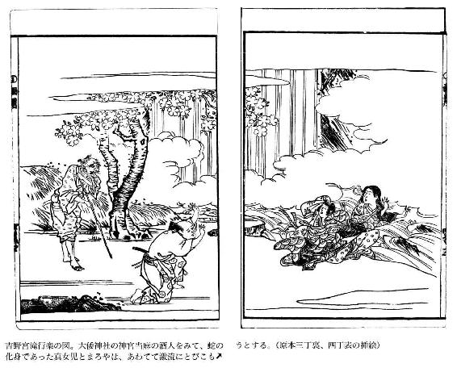
その翌日、豊雄は、大和神社のある所へ行って、昨日の老人に面会し、改めて御世話になった礼を述べ、また礼のしるしとして、美濃絹三疋、筑紫綿二屯を贈って、「このうえともに、妖怪をはらいおとすおはらいをして下さい」と、つつしんで願い出た。老人は、この贈物をうけとると、他の神官たちに分配してやって、自分では一疋一屯もとらなかった。そして、豊雄にむかって、「あの畜生は、そなたの美男ぶりにひかれて、そなたにまつわりついているのだ。そなたもまたあの畜生が化けた美人に魅惑されて、男らしいしっかりした精神をうしなっている。今後は男らしく雄々しい勇気をふるいおこして、うわついた心をおしずめなさい。そうすれば、これくらいの邪神をおいはらうのに、この老人の力を必要とはしますまい。かならずかならず、心をおしずめなさいよ」と親切に説き諭した。豊雄は、いまや夢からさめたように、めざめた気持になって、お礼の言葉をいくたびもくりかえして、金忠夫婦の許へ帰ってきた。そして、金忠にむかって、「この年月、あんなものにまどわされていたのは、思えば私の心が正しくなかったからです。親や兄に仕えることもしないで、あなたの家の厄介になっておりますのは、すじのちがったことです。御親切はまことにありがとう存じますが、これでおいとまいたします。またきっとまいります」と挨拶すると、ふたたび故郷の紀州へ帰っていった。
父母や太郎夫婦も、大和でのおそろしかったことを聞いて、いよいよ豊雄自身があやまちをおかしたのでないことを知り、一層ふびんがるとともに、一方ではその妖怪の執念ぶかいのをおそれたのである。「こうして独身でおくから、そんなわざわいがおこるのだ。妻をもたせよう」といって、親たちは嫁さがしの相談をした。芝の里に、芝の庄司という人がいた。娘を一人もっていたが、長年、都の内裏へ采女として御奉公にあげてあった。それがこの度お暇をもらって家へ帰ってくることになり、ついてはこの豊雄を聟にほしいと、仲人をもって大宅の許へ申し込んできた。大宅の方でも乗り気になり、はなしが順調にはこんで、すぐに婚約をした。そこで、都へむかいの人をやると、この采女をしている富子という娘もよろこんで帰ってきた。長年の御所づとめに馴れてきたので、万事の立居振舞から容姿なども、そこらの女とくらべると、数等華美で、洗練されていた。豊雄は、この芝の家に聟になってきてみると、妻の富子がすばらしい美人であり、万事に満足したが、それにつけても、あの蛇の化身が自分に恋したときのことなども、少しばかり思い出されてこないではなかった。結婚初夜のことは、とりたてて書くほどのこともなかったので、省略する。
二日目の晩である。豊雄はいい気持に酔って、富子にむかい、「長年宮中生活をしていた身には、私のような田舎者はきっとお嫌いでしょう。かの御所などでは、なんの中将とかなんの宰相とかいう方と添臥をなさったことでしょう。そのことがいまさらいっても仕方がないが、にくらしく思われますよ」などと、戯れかかると、富子は即座に顔をあげて、「以前からのふかい仲をお忘れになって、こんなとりたててすぐれてもいない、取柄のない女を御寵愛なさるなんて、いまあなたは私が憎いとおっしゃいましたが、憎いのはあなたの方でございますよ」という声は、姿こそかわっているが、まさしく真女児の声であった。それを聞くと、豊雄は、あまりのことにびっくりして、身の毛もよだって恐怖が全身をはしり、ただ茫然として、どうしてよいやら、うろたえるだけであったが、女は妖しい笑をうかべると、「旦那様、そんな不思議そうなお顔をなさいますな。二人の契りは海よりもふかく、山よりも高く、永久にかわるまいとかたく約束したことを、あなたが、はやくもお忘れになったとて、前世からこうなるときまった因縁があるのですから、こうしてまたお逢いするのですのに、あかの他人のいうことをまにうけて、無理に私を遠ざけようとなさるならば、お恨みして、きっとその仕返しをいたしますよ。紀州路の山々がたとえどんなに高くても、あなたの血を峰から谷へそそぎおとしてみせましょう。折角のお命をむだになくしてしまうようなことをなさいますな」というのを聞くと、豊雄はおそろしさのためにふるえおののくばかりで、いまにもとり殺されはしまいかと、気をうしなうばかりだった。すると今度は、屛風のうしろから、「御主人様にはどうしてそんなおむずかりなさるのですか。こんなおめでたい御縁結びではございませんか」といいながら出てきたのは、まろやであった。それを見ると、豊雄はまた肝をつぶし、眼をとじて、うつぶせに倒れ伏した。真女児とまろやは、かわるがわるなにかいっては、なだめたりおどしたりしたが、豊雄はただ気絶したままで、その夜があけた。
こうして朝がきたので、やっと寝室をぬけ出した豊雄は、舅の庄司にむかって、「これこれこうした恐ろしいことがあるのです。この災難をどうしてさけたらよいでしょうか。いいお考えをお聞かせ下さい」といいながらも、うしろで聞いていはしないかと、声をひそめてはなすのだった。庄司も妻も真っ青になっておろおろと嘆きかなしみ、「これは、どうしたらいいだろう。そうだ。都の鞍馬寺のお坊さんで、毎年、熊野三山へ詣でる方が、きのうからむかいの山の寺に宿っている。たいへん加持祈禱の効験あらたかなお坊さんで、およそ流行病とか物の怪とか稲虫などの害を祈禱調伏することがうまいといって、この里の人はみんな尊敬している。このお坊さんを頼んで祈禱してもらおう」といって、急いで召使に命じてよびにやったところ、しばらくしてやってきた。そこで、こういうわけだと事情をはなすと、この法師は鼻を高くして、「そんな蛇性をとりおさえるのは、大したむずかしいことではあるまい。まあ、どうか安心していらっしゃい」と、いかにもたやすそうにいうので、人々もそれをきいて、ほっと安堵する思いだった。法師はまず雄黄をもとめて、それをもとに水薬を調合し、小瓶にいっぱい満たすと、それをもって寝室にむかった。そして、家人たちがおそれて身をかくそうとするのをあざわらいながら、「御老人もお子たちも、そこにいらっしゃい。この蛇をいますぐつかまえてお見せしましょう」といって、その部屋の入口にすすんだ。法師が、部屋の戸をあけるやいなや、待ちかまえていたように、かの蛇が頭を出して、法師にむかってきた。この頭はいったいどのくらいあったと思うか。とにかく物凄いもので、部屋の戸口いっぱいになり、色は雪を積んだよりも白く、きらきらと輝いて、眼は鏡のように、角はまるで枯木の如く、一メートルあまりの口を開いて、真っ赤な舌を出し、いまにも法師を一口に吞みこみそうな勢いであった。「うわーっ」と叫ぶと、法師は、手にのせていた小瓶をその場に投げすてて、腰をぬかし、ころげまわり、這い倒れて、やっとのことでそこを逃げ出し、家人にむかって、「ああ、おそろしい。憑物や物の怪ではなく、祟りをなさる御神であらせられるのに、どうして私風情のものがこれを調伏申しあげることができようか。もしこの手足がなかったら、きっと命をとられてしまったでしょう」といいながら、気をうしなった。人々がこれを扶けおこしたが、そのときはすでに顔も手足も、いちめんに黒く赤く染めたようになり、肌のあつさはまるで焚火に手をかざすのとおなじようであった。蛇の毒気にあたったと見えて、息を吹きかえしてからも、ただ眼ばかりきょろきょろうごかして、ものいいたげであったが、声さえ出ないというありさまだった。そこで、水をかけたりしたが、ついに死んでしまった。これを見ていた人々は、ますます生きた心地もなく、おろおろしながら泣くのだった。
豊雄は、すこし心をしずめて、「こんなありがたいお坊さんでさえも調伏できないで、執念ぶかく私につきまとうのですから、私がこの世に生きているかぎりは、さがし出されてつかまってしまうでしょう。自分の一命の安全のために、人々を苦しめることは、誠実なことではありません。いまはもう人の力をかりますまい。私も覚悟しました。どうか御安心下さい」というと、再び寝室に行こうとするので、庄司の家の人々も、「これは気でも狂われたのですか」といってとめたが、豊雄は、いっこうに知らぬ顔で、寝室へ行った。戸をしずかにあけてみると、室内は外のさわぎをよそに静まりかえっていて、富子（真女児）と侍女（まろや）がむかいあってすわっていた。豊雄がはいって行くと、富子は、「あなたはなんのうらみで、私を捕らえようと、ほかの人を頼まれるのですか。今後も、敵意をもって私におむくいになるのでしたら、あなただけではなく、この里の人々をみんな苦しい目にあわせますよ。あなたはただ私の貞節をうれしいことだとおぼしめして、うわついた浮気心をおおこしなさいますな」と、ひどくなまめかしいしなをつくっていうが、それも豊雄には気持がわるかった。豊雄は、「世間の諺にもいわれているが、『人間には虎を殺すつもりはちっともないのに、虎の方でかえって人を傷つける気持がある』とかいうことだ。お前は人間とちがったある種の心で、私につきまとい、いままでも幾度か私をひどいめにあわせてきたことさえあるのに、そのうえ、ほんのちょっとした言葉にさえも、こんな聞くだにおそろしい報復のことをいうなんて、とても気味が悪いよ。しかしまた、私を慕う気持は、ちっとも世間一般の人とかわりはないのだから、これ以上この家にいて、家の人たちに嘆きをかけるのは気の毒だ。とにかく、この富子の命だけは助けてほしい。そのうえで私をどこへなりと連れていくがいい」というと、女は、ひどくうれしそうに、何度も頭をふってはうなずいた。
豊雄はまた部屋を出て、庄司の許へきて、「私の身にはこんな情けない魔性のものがとり憑いていますから、これ以上ここにいて、皆様をお苦しめ申しあげることは、私としてもはなはだ不本意なことです。いますぐに私を離縁して、この家から出して下さるならば、令嬢の命も御無事だと存じます」というが、庄司は、それをどうしてもききいれないで、「私とてもいささか武芸のたしなみある身でありながら、こんな不甲斐ないことでは、大宅の家の方々がどうお思いになるかと思うと、面目がありません。今後ともよく考えて対策をこうじてみましょう。小松原の道成寺に、法海和尚という、ありがたい御祈禱をして下さるお坊さんがいらっしゃるのです。いまでは年老いて部屋の外へも出ないと聞いていますが、私のためでしたら、どんなにしてでもかならずお見捨てはなさいますまい。そこへ行ってきますから、待っていて下さい」というと、馬にまたがって急いで出て行った。かなりの道のりなので、夜中になって道成寺へ着いた。庄司の来訪に、老和尚は寝室からいざり出て対面し、庄司の口からこのてんまつを聞くと、「それはさぞ御困惑のことでございましょう。愚僧もいまでは老いぼれて、祈禱の効験がありそうにも思えませんが、だからといって、ほかならぬ貴殿の家にふりかかった災難を、だまって見捨てておくわけにはいきません。まあ、先にお帰りなさい。愚僧もあとからすぐに参上いたします」といって、芥子焼の香のよくしみこんだ袈裟をとり出して、庄司にわたし、「その魔性をうまくだましよせて、これを頭からかぶせ、力いっぱい押しふせなさい。力をぬくと、おそらく逃げ出しますよ。心に仏を祈念して、力をこめてしっかりとうまくおやりなさい」と、ねんごろに教えた。庄司はよろこびながら、また馬をとばして家へ帰った。
帰宅するとすぐに、こっそり豊雄をよんで、和尚からいわれたことを伝え、「このことをうまくやって下さい」といって、かの袈裟をわたした。豊雄は、これをふところにかくして、寝室に行き、女にむかって、「庄司も、いまはやっと暇をくれました。さあ、いらっしゃい、出かけましょう」といった。それを聞くと、女はひどくうれしそうな様子をした。そのすきを見て、豊雄は、ふところから袈裟をとり出すと、すばやく女の頭からかぶせ、力のかぎりこれを押しふせたので、女は、「ああ、苦しい。お前は、どうしてこんなにつれないのだ。ちょっとこの手をゆるめてくれ」とわめいたが、ますます力まかせにおさえつけた。まもなく法海和尚の乗った輿が邸内にはいってきた。庄司の家の人々に扶けられるようにして、和尚はこの部屋においでになり、口の中で小声に呪文を唱え、祈念されながら、豊雄をどかして、おさえていた袈裟をとりのけて、その下を御覧になると、富子が正体なくうつ伏せになっているうえに、一メートル余りの白い蛇がとぐろを巻いて微動だにしないでいる。老和尚はこれを捕らえて弟子の捧げもった鉄鉢においれになった。そのうえさらに祈念をこらされると、屛風のうしろから、三十センチほどの小蛇がはい出してきたが、これも捕らえて鉄鉢においれになり、かの袈裟でよく鉄鉢をくるみ、法力をもって蛇を封じこめられると、そのまままた輿におのりになったので、この家の人々は、手を合わせ、感涙を流して、うやうやしく頭をさげ、お見送りした。
和尚は道成寺へお帰りになると、本堂の前をふかく掘らせて、鉄鉢をそのまま埋めさせ、未来永劫、この蛇が世に出ることをかたく禁じられた。いまもなお道成寺には、蛇が塚が残っているということである。一方、庄司の娘富子は、これがもとでついに病気にかかり、死んでしまった。豊雄の方は、無事に生きのびたと語り伝えられている──。
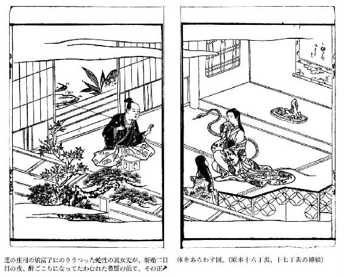
雨月物語 巻之五
青頭巾（あおずきん）
──あらすじ──
下野国大中寺の出来事です。徳が高いと尊敬を集めていた住職が狂ってしまいました。思えば、北陸にお出かけの際、一人の美童を連れて帰られたのが事の発端でした。美童に執心されて修行も怠りがちとなるうち、この美童がふとした病から亡くなってしまったのです。住職の嘆きは一通りでなく、火葬も埋葬もせず遺体にすがりつくうち、腐乱するのを惜しんでその肉を喰らいつくしてしまったのです。それからは村に出て人を脅かし、墓をあばいて新仏の肉をあさり、とても人の行いとは思えません。しかし、この村にたまたまやってきた快庵禅師によれば、これも人間の一面なのであり、仏道に向かうか、愛欲の心にとらわれきってしまうか、ともかく一点に突き進む性情のなせるわざなのだ、ということです。快庵様は住職を元の心に立ち返らせようと決意されました。この住職にも救いはあるのでしょうか？
昔、快庵禅師という仏徳高い聖僧がいらっしゃった。幼少より禅宗の本旨をあきらかにされて、つねにその身を諸国行脚の修行にゆだねて暮らしておられた。ある年、美濃の国の竜泰寺で夏安居の修行をすまされると、この秋は奥羽地方に滞在しようと、そこを出立して東国にむかわれた。旅を重ねて、やがて下野の国におはいりになった。
この国の富田という里についたとき、日がとっぷりと暮れてしまったので、大きな構えの、いかにも裕福そうな家の前に立って、一夜の宿をお頼みになったところ、折から田畑から帰ってきた男たちが、夕暮の薄闇の中に、この僧が立っているのを見て、たいへんおびえたようなようすをして、「山の鬼がきたぞ。みんな出てこい」と、大声でわめいた。この声を聞いて、家の中でも急にさわぎはじめ、女子供は泣き叫び、ころげまわって、目につかぬ物かげや片隅にかくれた。この家の主人とおぼしき男が、先のとがった天秤棒を手にして、走り出してきたが、薄闇のなかに外の方をすかして見ると、年のころ五十にちかい老僧が、頭に紺染の頭巾をかぶり、身に墨染の破れ衣を着て、包みを背負って立っている。そして、主人の姿を見ると、手にした杖をあげて招くようにしながら、「御主人、なんでこんなに厳重に御用心なさるのですか。諸国遍歴の僧が、今夜一夜だけの宿をお借りしようと思って、ここでどなたか出ていらっしゃるのを待っておりましたのに、それをこんなにまであやしまれようとは思いもかけませんでした。こんな瘦坊主が強盗なんかするはずもないのに、まあ、どうか怪しまないで下さい」といった。そこで主人も、天秤棒を捨てて、手をうって笑い、「彼等の見さかいのつかない間違いのために、旅の御僧をおどろかし申しあげて、あいすみませんでした。一夜の宿をおもてなしして、ただいまの罪ほろぼしをさせて頂きたいと存じます」というと、うやうやしくお辞儀をして、奥の方へ案内し、気持よく夕食の膳をすすめてもてなしたのである。
食事がすむと、主人は口をひらいてつぎのようなはなしをした。「先刻、小作人たちが御僧を見て、鬼がきた、とおそれたのも、じつはそれ相当な理由があってのことでございます。おはなし申しあげますと、ここに世にもまれなことがあるのでございます。それはまことに不思議なはなしでございますが、世間の人々にも語り伝えて下さい。この里の上の山に一つの寺がございます。もとは小山氏の菩提所で、代々、徳の高いお坊さんが住職となってすんでおられました。いまの住職は、しかるべき方の甥御さまで、ことに学問もふかく修行も積んでいるという評判が高く、この国の人々は、香華や蠟燭の御布施をあげて信仰いたしました。私の家へもしばしばおいでになって、私どももとてもうちとけて御交際しておりましたが、去年の春のことでございました。越の国へ灌頂の戒師として招聘され、百日余り御逗留なさいましたが、その国から十二、三歳ぐらいの童子をつれておかえりになり、身のまわりの世話などさせられました。そのうち、その子のすがたかたちが上品で美しいのを、ふかく御寵愛あそばされて、長年専念されてきた仏道修行のことなども、いつとはなく怠りがちになられたようにお見うけされました。ところが、今年の四月ごろでございます。その子がほんのちょっとした病気で床につきましたが、日がたつにつれて病が重くなってきましたので、住職はそれをたいへん御心痛になられて、国府の官医の立派な先生までおよびして、お診せになりましたが、その甲斐もなく、ついにその子はなくなってしまいました。さながら大切な懐中の珠玉をうしない、髪や冠にさしていた花を嵐のために吹き散らされたときのように、いつくしみ愛していたものをうしなって、悲嘆の淵にしずみ、泣くにも涙さえ出ず、叫ぶにも声さえ出ないというほどでございましたが、あまりにお嘆きになられたので、その遺骸を荼毘にふし、土に葬ることもなさらずに、死体の顔に御自分の顔をくっつけ、死体の手に御自分の手を組んで、幾日かおすごしになられましたが、ついに気が狂って、その子が生きていたときとおなじようなたわむれをされながら、その肉が腐爛するのをおしんで、肉を食い骨をしゃぶって、とうとうすっかり食いつくしてしまったのです。寺にいた人々も、『住職はついに鬼になってしまわれた』と、おどろきあわてて寺を逃げ出してしまいましたが、その後は、住職は夜ごと夜ごと里に下って里人を襲ってはひどく驚かし、あるときは墓をあばいてまだ死んでまもない屍肉をくらうというありさまで、実際鬼というものは、昔ばなしには聞いてもいましたが、まのあたり住職がその鬼になられたのをこの目で見たのでございます。しかし、私どもの力ではどうしてこれをとりおさえ、やめさせることができましょう。ただどの家でも、日暮れになるとかたく戸をとざしてしまうより仕方がありませんでしたので、近ごろではこのことが国中に知れわたって、そのために人々の往来さえなくなってしまったのでございます。じつはそういうわけがあったので、御僧をも鬼と見あやまったのでございます」と、語った。
快庵は、このはなしをお聞きになると、「世間には不思議なこともあるものでございますな。およそ人間と生まれて、仏や菩薩のお教えの広大なこともしらないで、愚かなまま、心ねじけたままに一生を終るものは、その愛欲、邪念の悪業にひきずられて、あるときはそれが生前の獣の姿になって恨みをはらしたり、またあるときは鬼となったり蟒となったりして祟りをするという例は、昔からいまにいたるまで数えきれないほどであります。そうかと思うと、生きながら鬼になる者もおります。楚王に仕えた女官は蛇となり、王含の母は夜叉となり、呉生の妻は蛾となったのであります。また、昔、ある僧が下賤の者の家に一夜の旅のやどりをしたところ、その夜は雨風がはげしく、灯火さえないので、心細く淋しくて、寝るにも寝られずにいると、夜ふけて羊の鳴く声が聞えてきたが、それからしばらくして、僧の眠りをうかがうように、しきりに体のあちこちを嗅ぎまわるものがある。僧は怪しいやつだと思って、枕許においた禅杖を手にすると、それで怪物を力まかせになぐりつけたところ、大声をあげてそこに倒れた。この音に、この家の主人である老婆が灯をつけてやってきたので、それで照らして見ると、若い女がそこに倒れていた。それを見ると、老婆は泣きながら、この女の命だけは助けてくれと懇願した。どうにも仕方がない。まさか殺すわけにもいかないので、そのままにして、旅僧はその家を出たが、その後またついでがあったので、その里を通ったところが、田圃の中におおぜい人があつまって、なにか見物している。旅僧も立ち寄って、『なんですか』とたずねたところ、里人がこたえて、『鬼になった女を捕らえたので、いま土に埋めているのです』といったということです。しかし、こうした例はいずれも女に関したことで、いやしくも男たるものがそんなものに化けたというはなしを聞いたことがありません。およそ女の思いつめる、心ねじけた性質から、そんなあさましい鬼にも化するものであります。もっとも男でも、隋の煬帝の臣下に麻叔謀というものがあって、これが小児の肉を好んで、ひそかに民間の小児をさらい、その肉を蒸して食ったということはありますが、これはあさましい野蛮な心からしたことであって、いま御主人のおはなしになったこととはちがいます。それにしても、その僧が生きながら鬼になったのこそ、過去の因縁のむくいというものでありましょう。そもそもふだん修行につとめ徳をつむのにすぐれていたというのは、仏に仕えることに真心をつくしたからであって、もしその子を側近くおいて世話をしなかったならば、あっぱれ立派な僧になるべきはずであったのに、惜しいことをしました。いったん愛欲の迷路にさまよって、救いようのない煩悩の火にその身をやかれて、鬼と化したのも、ひとえに一本気で思いこんだらどこまでもつらぬきとおす強気な性質がそうさせたのであります。『心をゆるめれば妖魔となり、心をひきしめて仏に仕えれば仏になることができる』というのは、この僧がそのよい実例であります。拙僧がもしこの鬼を教え導いて善なる本来の心にかえらせることができたならば、今夜のおもてなしにたいする報恩ともなることでしょう」と、快庵は、身を挺してこの鬼を教化し、人々の苦しみを救おうと決意されたのである。主人は、頭を畳にすりつけるようにして、「御僧がそのことをして下さったならば、この地方の人々は極楽にでも生まれかわったような気がすることでございましょう」と、感涙にむせんでよろこんだ。山里に宿ったこととて、近くに相当な寺もなく、貝や鐘の音も聞こえない静かな夜に、二十日あまりのおそい月も出て、古戸のすきまから月光がもれてくるのに、ようやく夜もふけたことに気づいて、主人は、「さあ、おやすみ下さい」というと、自分も寝室へ引きとった。
山寺には誰もすみついていないと見えて、楼門には茨が生いかかり、経閣も見捨てられたまま苔が生えている。本堂の方は、蜘蛛が巣をはって、それが仏像と仏像との間いちめんにかかり、燕の糞が護摩壇をうずめて、方丈も廊房もすべていいようのないくらいものすごく荒れはてている。日が西の方に傾くころ、快庵禅師はこの寺に足をふみ入れて、手にした錫杖をならされ、案内を乞うて、「諸国遍歴の僧でござるが、今夜一夜の宿をお貸し下され」と、幾度も声をかけたが、いっこうに返事がない。やっと、寝間から瘦せこけた僧が、力ない足どりでよわよわと出てきて、禅師を見ると、ひからびたしわがれ声で、「御僧はどこへ行くつもりで、ここへこられたのか。この寺はわけあってこんなに荒れ果て、人もすまぬ野原同然の破寺となったので、一粒の食糧もなく、一夜の宿をかすことのできる用意もない。はやく里に下られよ」という。そこで、禅師は、「拙僧は、美濃の国を出て奥州へ行く途中でござるが、この麓の里を通りかかると、山の形といい水の流れといい、じつにすばらしいので、心ひかれて思わずもここにまいったのでござる。すでに日も傾いたのでこれから里に下るというのも、道遠くたいへんなことと存ずる。ぜひに一夜の宿だけをお貸し下され」という。あるじの僧は、「こんな荒れ果てた所はよくないこともあるものですぞ。だから、しいておとどめもできない。さりとて、たって出て行けというわけでもない。御僧の心まかせにされるがよい」といったきり、二度とものをいおうとしない。禅師もそれ以上一言もいわずに、堂にあがって、あるじの僧の傍に座をしめた。秋の日はつるべおとしで、見る見るうちに日はすっかり沈んで、宵闇の夜がほとんどまっくらになったのに、灯もつけないので、一寸さきさえよく見えないが、ただ谷川の水音だけが耳近く聞こえてくる。あるじの僧も寝間へ入ったまま、その後は物音ひとつさせない。
夜がふけて、月夜になった。月光は玲瓏として、すみずみまでもあかるく照らし出した。ちょうど真夜中ちかいと思われるころ、あるじの僧が寝間から出てきて、あわただしくなにかさがしものをはじめた。しかし、さがし当たらないらしく、大声で、「くそ坊主め、どこへ隠れたのだろうか。たしかここにいたはずだが」と叫びながら、禅師の前を幾度も走り過ぎたが、いっこうに禅師を見ることがない。本堂の方へ駆けて行くかと思うと、庭へおりて、ぐるぐるまわりながらおどりくるい、とうとう疲れて倒れ伏したまま起きあがらなくなった。やがて夜があけて朝日が出ると、ちょうど酒の酔いが醒めたような様子で、あたりを見まわしたが、禅師がもとの場所にすわっているのを見ると、ただ茫然自失、ものもいえないで柱にもたれ、ふかいためいきをついたきり、だまっていた。禅師は近づいて、「院主、なにをお嘆きでいらっしゃるか。もしひもじくいらっしゃるならば、拙僧の肉を食って腹をいっぱいにされるがよい」と声をかけた。あるじの僧がいった。「御僧は夜通しそこにおいででございましたか」。禅師がこたえた。「ここにいて一睡も致さぬ」。あるじの僧は、さらに「私はあさましくも人間の肉を好んで食べてまいりましたが、まだ生き仏のような高僧の肉の味を知りません。御僧はまことに仏でござる。私の鬼畜の如くくらんだ眼をもって、生き仏が眼前においでになったのを見ようとしても、見ることができないのも道理であります。ああ、もったいないことだ」というと、頭をたれて、口をつぐんだのである。
禅師は、言葉をついで、「里人のはなすのを聞くと、その方はいったんの愛欲に心みだれてから、たちまち鬼畜になりさがったということであるが、それはあさましいとも哀れともいいようのないくらい、たぐいまれな悪因縁である。夜ごと夜ごと里に出て人に害をおよぼすから、ちかくの里人たちは不安でたまらないのだ。私は、これを聞いて、見捨てておくことができず、わざわざここにきてその方を教化し、善なる本来の心にたちかえらせようとするのだが、その方は私の教えを聞くつもりがあるか、どうか」とたずねた。あるじの僧はこたえて、「御僧はまことに生き仏です。私のおちいったこんなあさましい悪業を、すぐにでも忘れられる道理をお教え下さい」といった。禅師は、「その方が、私の教えを聞くというのならば、ここへくるがよい」といって、縁側の前のたいらな石のうえに、この僧をすわらせて、自分のかぶっておられた紺染の頭巾をぬいでこの僧の頭にかぶらせ、証道歌の二句を解いてみよとお授けになった。
「江月照松風吹 永夜清宵何所為
（月は入江をてらしてあかるく、岸辺の松を吹く風は松籟を聞かせる。この秋の夜長、清らかな宵の景色はいったい何のためであろうか。自然のままのすがたである。しかし、大自然のすがたは結果において自他をきよめている。これ自然の摂理である。その真意を理解すれば、人はおのずから真理を会得できる。これが禅定である）
その方、この場を去らずに、じっくりとこの二句の真意を探求せよ。真意が解けたときは、おのずから本来身にそなわっていた仏心にめぐりあうことができるであろう」と、ねんごろに教えさとして、山を下られたのであった。この後、里人は鬼のひどい災厄からのがれることができたが、それでもやはり山寺の僧の生死をはっきりと知らないので、疑いおそれて、人々は山へのぼることをたがいにかたくいましめあった。
一年がはやくもたって、翌年の冬十月初旬、快庵禅師は、奥州方面よりの帰途、再びこの富田の里を通られたが、前年あの一夜の宿をしてくれた主人の家に立ちよって、山寺の僧のその後の様子をおたずねになった。主人は、よろこんで快庵をむかえて、「御僧の広大な徳によって、鬼が二度と山を下らなくなりましたので、里人はみんな極楽にでもうまれかわったような思いでおります。しかし、まだ山へ行くことはおそろしがって、一人としてのぼるものはありません。それゆえに、鬼がどうなったか、その様子は存じませんが、どうしていままで無事に生きているでしょうか。とても生きているとは思えません。今夜のお泊りに、あの僧の成仏冥福をお祈り下さいませんか。私どもみんな一緒に回向いたしましょう」という。禅師は、「あの男が善行のむくいで往生したというのならば、仏道成仏の道においては、拙僧の先輩の師ともいうべきであります。もしまた生きているときは、拙僧にとっては一人の弟子であります。いずれにしてもその後の様子を見とどけなければなりますまい」といって、再度、山へおのぼりになったが、なるほど主人の言葉どおり、人の往来がまったく途絶えていると見えて、これが去年踏みわけた道とおなじだとは思えないほどであった。寺にはいって見ると、荻・薄が人の背丈よりも高く生い茂り、草木におく露はまるでしぐれのようにはらはらと降りこぼれているうえに、寺内の草生いたこみちさえどこがどこやらはっきりわからず、その中に、本堂や経閣の戸がくさって倒れたままになっており、方丈から庫裡にかけめぐらされた廻廊も朽ちた木目に雨気を含んで苔むしている。さて、かの僧をすわらせた縁側のあたりをさがしてみると、まるで影のように瘦せ細った人が、僧侶とも俗人とも区別のつかないまでに髭も髪もぼうぼうと乱していたが、雑草がからみあい、薄が一面に靡き伏しているなかに、蚊のなくほどの細い声で、なにをいっているのかはっきりと聞きとれないように、ぶつぶつとつぶやいていた。耳をすますと、とぎれとぎれに唱える言葉は、
「江月照松風吹 永夜清宵何所為」
という、例の証道歌の二句であった。
禅師は、この男をじっとごらんになっていたが、やがて禅杖をとりなおすと、「作麼生、なんの所為ぞ」と一喝して、その男の頭を撃ちすえられた。すると、氷が朝日にてらされてたちまち消えてしまうように、この男の姿はたちまち消えうせ、あとにはただ、かの青頭巾と骨だけが、草葉の上にのこされただけであった。まことに長い間の執念が、ここにいたってまったく消えつくしたのであろう。そこには尊い仏教の道理・教訓というものがあるのであろう。
そうしたわけであるから、禅師の広大な徳は遠い国々から外国にまで知れわたって、人々は、「開祖達磨大師がまだ生きているようだ」とほめたたえたということである。その後、この里の人たちがあつまって、寺内をきよめ、修理をほどこし、禅師を推戴して、この寺の住職として住んでもらうようにしたので、それまでの真言宗を改宗して、曹洞宗のありがたい寺をおひらきになったのである。この寺は、大平山大中寺として、いまなお尊く栄えているということである。
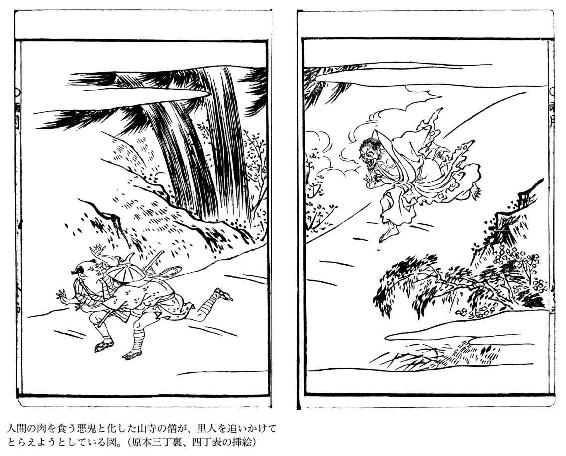
貧福論（ひんぷくろん）
──あらすじ──
皆がそういうわけではないが、武士はいつから金を卑しむようになったのか？ 経済は国家の基本であるはずなのに。──会津の大名蒲生氏郷の家臣に、無類の金好きで評判の、岡左内という者がいた。座敷に金を並べ、それを眺めて楽しむような奇行の持ち主で、同僚の武士たちからは、守銭奴と陰口をたたかれていた。ある夜のこと、その枕元に黄金の精霊が現れた。清貧を唱えるあまり、軍略・武芸ばかり大切にして、国の経営の根本である経済を軽んじる傾向に憂慮して、左内のもとにやってきた、という。当然のこと二人の議論は盛り上がる。特に話題の中心となったのは、いつの時代も問題となる、金と倫理の関係だ。黄金の精霊は、金は本来倫理とは無関係でこれを大切にするものに集まるのだ、という。また、左内から、豊臣秀吉の後は誰の天下になるのかと問われ、精霊はあるめでたい予言を残し姿を消したのであった。
奥州、蒲生氏郷の家中に、岡左内という武士があった。高禄で名望高く、勇名を東国一帯にとどろかしていた。ところが、この左内には、人とはちがったたいへん偏った性質があった。それは、金をたくわえ富貴になることを願う心が、世間一般の武士とはちがってひどく強いことだった。そのため、倹約を家訓として家内をとりしまったので、年を経るにしたがって、家が富みさかえてきた。そのうえ、武をねり兵を訓練するひまにも、ほかの武士のように、茶の湯・香道などの風流韻事にあそぶことをしないで、一室にたくさんの金貨を敷きならべて、それをみて心をなぐさめるというふうで、それは世間の人が秋の月や春の花の風流にあそぶこと以上のたのしみであった。そのために、人々はみんな左内のふるまいを、奇怪なこととあやしんで、あれは吝嗇で根性いやしい無風流者だと、爪はじきをして憎んだ。
自分の家に久しく使っている下男に、金貨を一枚ひそかに所持しているものがあるということを聞き知った左内は、その下男をよびよせていった。「たとえ天下の名玉崑山の璧でも乱世には瓦や石ころ同然、無価値に等しいものだ。こんな乱世にうまれて、武士として生きるものにとっては、ほんとうにほしいものは棠谿・墨陽の如き名剣であり、それにくわえて財宝である。しかし、どんな良い剣であっても、一剣をもって千人の敵をむかえうつことはできない。それにくらべて、金の力というものは、よく天下の人々をもなびきしたがわせるものだ。したがって、武士たるものはこれを軽々しく考え、粗末に扱ってはならない。かならずこれを大切に貯蔵すべきである。おまえが賤しい分際で、分にすぎた金をもっているのは、殊勝なことだ。褒美を与えよう」といって、十両を与え、そのうえ、帯刀を許して士分にとりたてた。人々はこれを伝え聞いて、「左内が金をためているのは貪婪強欲というような類ではないのだ。ただ当世にはめずらしい一奇人なのだ」と、いまさらのように、ほめそやした。
その夜、左内は、枕もとに人のきた気配がしたので、目をさまして見ると、行灯のそばに、小さな老人がにこにこ笑ってすわっていた。左内は、枕から頭をあげて、「そこへきたのは誰だ。おれに食物でも借りようとするならば、もっと腕っぷしの強い男どもでもきそうなものではないか。それを、お前のようなおいぼれたやつが、おれの眠りをさましにやってきたとは、狐か狸が化けたのだな。おい、なにか習いおぼえた術でもあるだろう。秋の夜のねむけざましに、ちょっとその芸当でもしてみせろ」といって、いささかも動ずる様子をみせない。すると、老人はこたえて、「いや、ここへ参上いたしました私めは、魑魅でもなければ、人間でもありません。ふだんあなたが大事になさる黄金の精霊です。あなたが長年、手厚く遇して下さったのがうれしくて、夜ばなしでもしようとおもって推参したのです。あなたがきょう、召使をほめて褒美を与えられたのに感激して、私がふだんから思っている心のうちなどおはなしして、気持でも晴らそうと思い、かりにこんな姿に身をかえてあらわれたのですが、私のはなしですから、十に一つも役にたたないような無駄ばなしではありますが、さればといって、いいたいことをいわないでおくのも腹がふくれて不快ですから、わざわざお訪ねして、おやすみのさまたげをしたのでございます──」といい、さらに言葉をついだ。
「──さて、富み栄えても、そのためにおごりたかぶらないのは、まさに大聖人孔子の道です。それを、世上の悪口に、『富める者はかならず心がねじけている。富める者は多く愚者である』というのは、たとえていえば、晋の石崇や唐の王元宝のような、豺狼蛇蝎にも似た猛悪残忍にして貪欲なやつだけをさしていったのであります。昔の世に富み栄えた人は、天然自然の摂理をよく見きわめ、地勢環境の適否をよく判断して、その結果、自然にして必然の富貴を得たのであります。太公望呂尚は、斉に封ぜられて、人民に生業のみちを教えたので、海辺の人々が、そこの利益の多い生活を慕って、斉の国にやってきたのです。また管仲は、斉の桓公をたすけて諸侯を糾合しましたが、その身は陪臣でありながら、その富は列国の君主にまさっておりました。そのほか、范蠡、子貢、白圭などという人物は、いずれも産物を売買して利益をあげ、巨万の富をきずきあげたのであります。これらの人々の行跡をあげて、司馬遷が『史記』の一篇に『貨殖列伝』を書きしるしたのでありますが、後世の学者たちが、その所説を卑しいとして、筆をそろえてこれを非難したのは、物の道理をふかく理解しない人のいう言葉であります。『孟子』にもいうとおり、一定の生業と財産のないものは定まった善心もないものであります。農民はよく働いて穀物を生産し、職人たちはその仕事に精出してこれを助け、商人は一生懸命これを諸国に売りさばくというように、めいめいがその生業をはげみ、家をゆたかにして、祖先をまつり、子孫のためにはかる以外に、人間としてなにをすることがあるでしょうか。諺にも、『富豪の家の子はけっして刑死して市中にさらされるようなことはない』『富貴の人は王者とおなじようなたのしみをもつことができる』といわれております。まことにその通りで、淵がふかければ魚も自由に泳ぎまわり、山がふかければ獣もよく育つというのは天然自然の法則にかなった道理であります。ただ、『論語』に『貧しくしてしかもたのしむ』という言葉があって、それが学者や文人たちの惑いをひきおこす端緒となって、そのために弓矢とる武士たちまでが富貴は国の基であることを忘れ、つまらぬ軍略にばかり熱中して、破壊と殺戮を行ない、自分の徳をうしなって子孫まで絶やしてしまうのですが、それもつまりは財宝を軽んじて名誉を重しとする、その惑いのせいであります。思うに名誉をもとめる心も、利をもとめる心も、心はひとつであって、けっしてちがう心が二つあるのではありません。それを学問や書物にとらわれて、金の徳を軽んじては、それでみずから清廉潔白であると自称し、生業を捨て俗世間をのがれて晴耕雨読の生活をしている人を賢人であるというのです。たしかにそういう人自身は賢人かもしれませんが、そういう行為そのものは賢いことではありますまい。金は、七宝の最上位のものであります。まだ土に埋もれているときにも、そこに霊泉をたたえ、あたりの不浄をはらいのけて、微妙な音色を発するものであります。これほど清らかなものが、どうして愚痴蒙昧、貪欲残忍な人のところにだけあつまるはずがありましょうか。そんなことはけっしてありません。それにしても、今夜この胸中の憤りを吐き出して、年来の憂さをすっかり晴らすことができたのは、なんとうれしいことでしょう」という。
左内は、このはなしを聞いて興味をそそられ、ひとひざのり出して、「なるほど、いまおはなしになられたことにつけても、富貴の道がたかく貴いものであるということは、私が平生から考えていたこととちっともちがいません。ここに愚問ではありますがおたずねしたいことがあるのです。どうかくわしく御教示下さい。それは、いまあなたがことの道理をはっきりとおはなし下さったことは、もっぱら金の徳を軽視して、富貴というものが偉大なる事業であることを世人が知らないのは大きなあやまちであるとなさいましたが、しかしまた、かの学者どものいうところも理由がないわけではありません。というのは、いまの世の金持には、十人中八人までが貪欲で残忍な人が多いのです。たとえば、自分は十二分に俸禄をうけていながら、兄弟親族をはじめとして、父祖の代から長く仕えているものが、貧乏して困っていても、救おうとしない人もいれば、また親しく近所づきあいをしていた人がおちめになり、しかも誰ひとりとして助けようとする者がなくて零落してしまうと、しめたとばかりにその人の田畑を、値段をたたいて捨て値で無理やりに買いとっては自分のものとしてしまう人もおり、そうかと思うと、現在自分は村長とうやまわれる身分になりながら、むかし借りた人のものを返そうともせず、礼儀正しい人が席をゆずると、つけあがってその人をあたかも目下の下僕かなにかのように見くだし、たまたま旧友が時候見舞にでも訪ねてくると、金でも借りにきたのではなかろうかと疑って、留守だといわせるような不実な人間の例を、私なども数多く見てきました。また、その反面では、主君に忠義のかぎりをつくし、父母に孝行をつくして清廉だとの評判が高く、身分高い目上の人を尊び、身分低い貧しい人を助けるという立派な心のある人でいながら、つねに貧しくて、冬の寒いときにも一枚のかわごろもですごし、夏の極暑の折にも一枚の帷子でおしとおして着替えもなく、豊作の年でも朝晩一ぱいの粥でやっと飢えをしのぐというような人は、つきあってもなんのとくにもならないせいか、もとより一人の友人が訪ねてくるということもなく、かえって兄弟や親族には出入りをさしとめられ、交際をことわられたりするが、その悲しみをうったえる方法さえなくて、ただ生活に追われてあくせくと一生をおわるというようなありさまです。それならば、その人は家業に不熱心なのかというと、そうではなく、朝は早くから起き、夜はおそくまで働いて生業に全力を傾け、東奔西走して、そのむずかしそうな様子は、寸暇もないほどであり、べつに愚かなわけでもないのに、なにか仕事をすると、不運にもそれがはずれて無駄になることが多いのです。こういう人は、むかしの顔子が一瓢をいだいて清貧をたのしんだというその境地に達することもできません。そして、こういうめぐりあわせで一生を終るのを、仏教の方では前世の因縁をもって説明し、儒家の方では定まった天命であると教えています。もし仏教で説くように来世というものがあるならば、現世でのかくれた徳や善行も、来世へ行ってむくいられるであろうと、それをたのしみに、人々は現世の不幸にたいするいきどおりを、しばしおさえもするでしょう。だから、この富貴の道に関しては、仏教の方でだけその道理を十分に説きつくしていて、儒家の教えはとりとめのないでたらめであるというのでしょうか。あなたも仏の教えの方を信奉していらっしゃるようですね。もしそうでないとおっしゃるならば、お考えのほどをくわしくおはなし下さい」という。
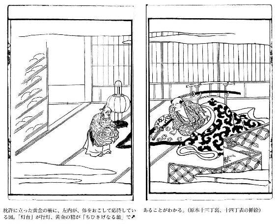
老人は、こたえて、「いまあなたがおたずねになったことは、じつは昔からいろいろと論じられながら、しかもまだ結論のでていない議論なのです。あの仏の教えを聞くと、この世における富貴と貧賤は、前世で善因をつくったか、つくらなかったかによるということですが、これはいいかげんな教えだということができます。前世で行ないをよくつつしみ、おのれの身をおさめ、慈悲心をもっぱらとして他人にも情ぶかくまじわった人が、その善報によって、いまこの世で富貴の家に生まれてきて、こんどは急に自分の財力に物をいわせて他人にたいして威張りかえり、道理にはずれたとんでもないたわごとをいいつのり、あさましく粗暴で野蛮な心を示すようになるのは、いったい前世の善心がどんなむくいでこうまで堕落したというのでしょうか。だいたい仏や菩薩は、名誉とか利欲とかいうものを忌み嫌われると聞いておりましたのに、それに反して、なんでこのような貧福のことなどにこだわってあれこれと説かれることがあるでしょう。それを、勝手に、富貴は前世の行ないがよかった結果であり、貧賤はそれが悪かったむくいであるなどといちがいにきめてしまうのは、しょせん無知な婦女子をたぶらかし、いいくるめるえせ仏法というものであります。貧福のことなど問題とせず、ただ一途に善行を積むような人は、よしんばその善報が自分自身のうえにあらわれなくても、いつかその子孫はかならずしあわせを得るものであります。たとえば中国古代の聖天子舜は、徳において聖人であり、位において天子であり、富は国内のすべてを所有したが、舜の徳によって、その祖先は天子の礼をもってまつられ、その子孫は地位と名誉と富と長寿を保つことができたのであり、『中庸』がこのことを『宗廟これをうけて子孫これを保つ』といったのは、善行がおのずからそれに応じた善報になるという道理を、微妙に具体的にいいえたものです。自分が善行をして、自分でその善報を期待するというのは、けっして素直な心ではありません。また悪事を行なう欲ふかで吝嗇な人が、そのために富み栄えるばかりか、長寿まで保ってその終りをまっとうするということについては、私なりの異なった見解があるのです。まあ、しばらくお聞き下さい。私はいま仮にこうした人間の姿をしてあなたの前にあらわれ、はなしをしていますが、神でもなければ仏でもなく、もともと感情のない黄金の化身でありますから、人間とは違った考えをもっているのです。さきほどもおはなししたように、昔の世に富み栄えた人は、天然自然の好機にかない、その土地の利害をよく見きわめて、それにかなった産業をいとなみ、その結果富貴になったのです。これは天然自然の法則・道理にかなったはかりごとでしたから、財宝がこの人のところにあつまるのも天然自然の理であります。また一方、品性卑しく吝嗇で欲ふかく残忍な人は、金銀を見るとまるで父か母のように大事にかしずいて、食うものもろくに食わず、着るものもろくに着ず、かけがえのない大切な命さえも金のためには惜しいと思わないで、寝てもさめても金のことを忘れないから、金銀がその人のもとにあつまるのは、当然すぎるほど当然の明白な道理であります。私はもともと神でもなければ仏でもなく、ただ非情の黄金の精です。非情のものとして人間の善悪を糺明し、その結果にしたがって、私が行動しなければならない理由はありません。善をほめ悪を罰するのは、天のすることであり、神のすることであり、仏のすることであります。この三者は万世不易の人道を示すものです。とうてい私どものおよぶところではありません。ただ私どもは、どんな人間であっても、その人が私どもを大切に扱い、私どもにまめまめしく仕える、その程度に応じてその人のもとにあつまっていくものだと御承知下さい。この点が、金に霊があるといっても、それが人間の心とちがうところです。また、いくら富み栄えて善行をほどこしても、それが理由なく他人に恵みを与えたり、相手が義にそむいていることも見きわめないで、金を貸し与えたりするような人は、たとえそれがどんな善行であっても、財宝はついにその人の許から散じてしまうでしょう。なぜかといえば、こういう人は、金の使用法だけをしって、金の徳をしらず、金をかるがるしく取り扱うからであります。また、その身の行ないもよく、他人にたいしても真心をつくしながら、生活に窮して苦しんでいる人は、もともと天の神のお恵み薄くうまれついているのでありますから、いかに苦労し、心をくだいてみても、生涯のうちに富貴になれるということはありません。だからこそ、昔の賢人は、富をもとめてもとめ甲斐があればもとめ、もとめ甲斐がないと知ればもとめないで、自分の気のむくままに、俗世間をのがれて山林にこもり、心しずかに一生を送ったのです。その心の中はどんなにすがすがしくさっぱりしていることだろうと、うらやましく思われます。しかし、そうはいっても、一面では富貴の道は術ですから、巧みな者はよく富をあつめ、未熟な愚か者はいくらもっていても瓦を崩すよりもかんたんにこれをすっかり散佚してしまうのです。そのうえ、私ども仲間の黄金は、人の生業につきまとって集散し、これといってきまった主人をもっているわけではありません。ここに集まったかと思うと、その持ち主の行ないいかんによってはたちまちそこをはなれて別の人の許に走ります。それはちょうど水が低い方に傾いていくようなものです。昼も夜もどんどん往来して休むときがありません。ただ閑人が定まった生業ももたずに暮らしていたならば、泰山のようなたくさんのものもたちまち食いつくしてしまうでしょう。河や海のようにたくさんたたえられたものもついには飲みほしてしまうでしょう。くりかえして申します。不徳の人が財宝を積み蓄えるのは、その人の徳・不徳とは無関係なことであり、君子の富貴については、それとはまた別で、同日に論じてはいけません。好運にめぐまれてときめいている人が、倹約を守り、むだをはぶいて、よく生業につとめたならば、おのずから家は富み、人はなつきしたがうでしょう。私は、仏教で説く前世の因縁ということも知らなければ、儒家の説く天命というようなことにもこだわらないで、それとはまったくちがった別天地にのびのびと生きているのです」という。
左内は、このはなしを聞くと、いよいよ興味をつのらせて、「あなたの御説は非常にすばらしい。お蔭で長年の疑念も今夜ですっかり氷解いたしました。ことのついでに、もういちどおたずねいたします。今の世を見ると、豊臣家の威光が天下を靡かせ、日本全国、津々浦々もようやく平穏であるように見えますが、国をうしなった主君に忠義を尽くそうとする義士たちがあちらこちらにひそみかくれて機をうかがい、ある者は一時大国の主君に仕えて世に変乱がおこるのをじっと待って、かねての主家再興の本懐をとげようと画策しています。一方、民もまた戦国に生をうけた民ですから、折あらば鋤をすててほこをとり、一旗あげようと、天職の農耕などそっちのけのありさまですから、武士たるものも枕を高くして安眠することができません。いまのようなありさまでは、豊臣家の政権も長くつづくものとは思えません。この先、いったい誰が天下を統一して、民を平和安穏に暮らさせることになるのでしょうか。そしてまた、あなたは誰に味方なさるのでございますか」という。老人は、こたえて、「政治のこともまた人間界のことゆえ、私にはわかりません。ただ富貴という点から論ずるならば、武田信玄のごときは智謀にすぐれ、ねらうところ百発百中でありながら、しかも一生涯を通じてその威勢をわずかに甲・信・越の三国にふるうだけでありました。しかも名将であるという評判は世間こぞって賞讃するところでありました。その末期にのぞんで、信玄は、『いまや信長は非常に果報にめぐまれた大将である。われ平生彼をあなどって征伐することを怠り、いまこの病にかかった。われ亡きあと、わが子孫はやがて彼のためにほろぼされるであろう』といったということです。上杉謙信は勇将です。信玄が死んでからは、天下に肩をならべる好敵手がありませんでした。しかし、不幸にもはやく死んでしまいました。信長の人物・才能は人にすぐれておりましたが、智においては信玄におよばず、勇においては謙信に劣っていました。それでも富貴を身につけて、一度は天下を統一し、天下に号令するようになりました。しかし、家臣に恥辱を与えて、そのためにそむかれ、一命をおとしたのをみると、文武兼備の人物というわけでもなかったようです。秀吉の雄志は大きなものでありますが、それでもはじめから天下をおおうというようなものではありませんでした。そのことは、若いころ、柴田勝家と丹羽長秀の富貴をうらやんで、それにあやかりたいと思い、「羽柴」という姓を名のった一事からも知ることができます。それがいまでは、あたかも竜と化して大空に昇ったようにときめき、位人臣をきわめていますが、昔の身分や境遇など忘れているのではないでしょうか。秀吉が竜と化したといっても、それはほんとうの竜ではなく、蛟蜃のたぐいにすぎません。『蛟蜃の竜と化したものは、その寿命わずかに三年にすぎない』といわれています。だから、秀吉もやはり子孫は長く続かないのではないでしょうか。いったい驕奢をほしいままにして治めた世というものは、むかしから長つづきしたためしがありません。人間として守るべきことは倹約ですが、それがあまり行き過ぎるとけちんぼにおちいります。だから、倹約とけちんぼのけじめをよくわきまえてつとめることが大切です。さて、豊臣の政権が長くつづかないとしても、天下万民が安穏に富みさかえ、家ごとに家運の繁栄と世の泰平を謳歌することは、近い将来のことです。そのとき、だれが天下を統一するか。あなたの御望みに応じて、こんなことをおこたえしておきましょう──」といって、つぎのような八字の句をうたいあげた。その句は、
「堯蓂日杲 百姓帰家」
（堯帝の聖代に蓂莢という瑞草生じ、日は高く泰平の世をてらし、天下万民はそれぞれ家に安住していた）
左内と黄金の精の間にはいろいろとおもしろいはなしがとりかわされたが、それもようやく終りになって、折から遠くの寺でつきだす午前四時の鐘が夜あけの近いことをしらせた。それを聞くと、黄金の精は、「おや、もう夜があけましたね。おいとまをいただくとしましょう。今夜の長ばなしですっかりあなたのおやすみを邪魔してしまいました」といって、座をたって行くような様子をしたが、ふっとその姿はかき消すように見えなくなった。
左内は、つくづくとこの一夜中のことを思いおこして、黄金の精のいった「堯蓂日杲、百姓帰家」の句を考えてみると、「百姓家に帰す」の句が「家康に帰す」という意味を暗示しているように思われ、精のいった真意のほどもほぼ会得されて、その言をふかく信ずる気になった。まことに瑞草の生ずるようなめでたい代にめぐりあうべき瑞兆の言葉であり、めでたいはなしである。
校注 雨月物語
雨月物語序
一羅子撰水滸。而三世生啞児。二紫媛著源語。而一旦堕悪趣者。三蓋為業所偪耳。然而観其文。各〻奮奇態。四啽哢逼真。五低昂宛転。令読者心気六洞越也。可見鑑事実于千古焉。余適有七鼓腹之閑話。衝口吐出。八雉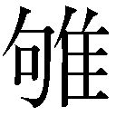竜戦。九自以為杜撰。則一〇摘読之者。一一固当不謂信也。一二豈可求醜脣平鼻之報哉。一三明和戊子晩春。雨霽月朦朧之夜（＊１）。窓下編成。一四以畀梓氏。題曰雨月物語。云。一五剪枝畸人書
一六 一七
羅子、水滸を撰して、三世啞児を生み、紫媛、源語を著して、一旦悪趣に堕つるは、蓋し業のために偪らるるところのみ。然り而して其の文を観るに、各々奇態を奮ひ、啽哢真に逼り、低昂宛転、読者の心気をして洞越たらしむるなり。事実を千古に鑑みらるべし。余適鼓腹の閑話あり、口を衝きて吐き出だす。雉き竜戦ふ、自らおもへらく杜撰なりと。則ち之を摘読する者は、固より当に信と謂はざるべきなり。豈醜脣平鼻の報を求むべけんや。明和戊子晩春、雨霽れ月朦朧の夜、窓下に編成し、以て梓氏に畀ふ。題して雨月物語と曰ふと云ふ。剪枝畸人書す。
一 羅貫中。中国一三、四世紀の人。水滸伝を著わしたために子孫三代啞児が生まれたという俗説がある（西湖遊覧志余。続文献通考等）「羅氏が三代まで啞子をうみしなども云ふ」（秋山記・秋成）。
二 紫式部。源氏物語を著わしたために地獄におちたという俗説がある（今物語、宝物集等）。秋成も秋山記でそのことを書いている。
三 思うに悪業の為にこんな報いにせまられたというべきであろう。
四 鳥の黙したりさえずったりする声の形容。ここでは文章の調子、勢い。
五 文章の調子が或は低く或は高く、あたかもころがるようになめらかで流暢である。
六 つよく感銘する。
七 泰平の世を謳歌するようなのんきな無駄ばなし。鼓腹は、飽食して腹鼓をうち、泰平を楽しむ。
八 雉が鳴き竜が戦うような奇怪千万な怪奇談。
九 自分でもこれは杜撰であると思う。杜撰はよりどころなく疎漏なこと。
一〇 ひろい読む。
一一 もとよりこれが信ずるに足るものだというはずがない。
一二 どうして子孫に口唇裂や平たい鼻の変わり者が生まれるという業の報いをうけるはずがあろうか。
一三 明和五年（一七六八）三月。秋成三五歳。
一四 出版業者に与えた。版行にふした。
一五 上田秋成の戯号。秋成は五歳の折、重い痘を病み、その結果、右手の中指と左手の人さし指が短くなり、不自由になった。そのことから一時的につけた号である。枝は肢と同じで、指に通ず。剪枝は木をきるはさみの意味もある。畸人は変人、変わり者。（＊２）
一六 「子虚後人」とあって、秋成の一時的な戯号。いたずらに妄言を吐く人物の子孫という意味。
一七 「遊戯三昧」とある。遊びたわむれることにむちゅうになること。五雑組、巻十五に「凡為二小説及雑劇戯文一、須二是虚実相半一、方為二游戯三昧之筆一」とある。
雨月物語 巻之一
一白峯
二あふ坂の関守にゆるされてより、三秋こし山の黄葉見過しがたく、浜千鳥の跡ふみつくる四鳴海がた、不尽の高嶺の煙、五浮嶋がはら、六清見が関、七大礒小いその浦々、八むらさき艶ふ武蔵野の原、九塩竃の和ぎたる朝げしき、一〇象潟の蜑が苫や、一一佐野の舟梁、一二木曾の桟橋、心のとどまらぬかたぞなきに、猶西の国の歌枕見まほしとて、一三仁安三年の秋は、一四葭がちる難波を経て、一五須磨明石の浦ふく風を身に一六しめつも、行々一七讃岐の真尾坂の林といふにしばらく一八筇を植む。草枕はるけき旅路の労にもあらで、一九観念修行の便せし庵なりけり。
この里ちかき白峯といふ所にこそ、二〇新院の陵ありと聞きて、拝みたてまつらばやと、十月はじめつかた、かの山に登る。松柏は奧ふかく茂りあひて、二一青雲の軽靡く日すら小雨そぼふるがごとし。二二児が嶽といふ嶮しき嶽背に聳ちて、千仞の谷底より雲霧おひのぼれば、咫尺をも鬱悒きここちせらる。木立わづかに間きたる所に、土墩く積みたるが上に、石を三かさねに畳みなしたるが、二三荊蕀薜蘿にうづもれてうらがなしきを、これならん御墓にやと心もかきくらまされて、さらに夢現（＊４）をもわきがたし。
現にまのあたりに見奉りしは、二四紫宸清涼の御座に朝政きこしめさせ給ふを、百の官人は、かく賢しき君ぞとて、詔恐みてつかへまつりし。二五近衛院に禅りましても、二六藐姑射の山の瓊の林に禁めさせ給ふを、思ひきや、二七麋鹿のかよふ跡のみ見えて、詣でつかふる人もなき深山の二八荊の下に神がくれ給はんとは。二九万乗の君にてわたらせ給ふさへ、三〇宿世の業といふもののおそろしくもそひたてまつりて、罪をのがれさせ給はざりしよと、世のはかなきに思ひつづけて涙わき出づるがごとし。
終夜供養したてまつらばやと、御墓の前のたひらなる石の上に座をしめて、経文徐かに誦しつつも、かつ歌よみてたてまつる。
三一 松山の浪のけしきはかはらじを
かたなく君はなりまさりけり
猶心怠らず供養す。露いかばかり袂にふかかりけん。日は没りしほどに、山深き夜のさま三二常ならね、石の牀木の葉の衾いと寒く、神清み骨冷えて、三三物とはなしに凄じきここちせらる。月は出でしかど、三四茂きが林は影をもらさねば、三五あやなき闇にうらぶれて、眠るともなきに、まさしく三六円位々々とよぶ声す。
眼をひらきてすかし見れば、其の形異なる人の、背高く瘦せおとろへたるが、顔のかたち、着たる衣の色紋も見えで、こなたにむかひて立てるを、西行（＊５）もとより三七道心の法師なれば、恐ろしともなくて、ここに来たるは誰そと答ふ。かの人いふ。前によみつること葉のかへりごと聞えんとて見えつるなりとて、
三八 松山の浪にながれてこし船の
やがてむなしくなりにけるかな
喜しくもまうでつるよ、と聞ゆるに、新院の霊なることをしりて、地にぬかづき涙を流していふ。さりとていかに迷はせ給ふや。三九濁世を厭離し給ひつることのうらやましく侍りてこそ、今夜の四〇法施に随縁したてまつるを、四一現形し給ふはありがたくも悲しき御こころにし侍り。ひたぶるに四二隔生即忘して、四三仏果円満の位に昇らせ給へと、情をつくして諫め奉る。
新院呵々と笑はせ給ひ、汝しらず、近来の世の乱は朕がなす事なり。生きてありし日より魔道にこころざしをかたぶけて、四四平治の乱を発さしめ、死して猶四五家に祟をなす。見よ見よ、やがて天が下に大乱を生ぜしめん、といふ。西行此の詔に涙をとどめて、こは浅ましき四六御こころばへをうけたまはるものかな。君はもとよりも四七聡明の聞えましませば、四八王道のことわりはあきらめさせ給ふ。こころみに討ね請すべし。そも四九保元の御謀叛は五〇天の神の教へ給ふことわりにも違はじとておぼし立たせ給ふか。又みづからの人慾より計策り給ふか。詳に告らせ給へと奏す。其の時院の御けしきかはらせ給ひ、汝聞け、帝位は人の極なり。若し人道上より乱す則は、天の命に応じ、民の望に順うて是を伐つ。抑五一永治の昔、犯せる罪もなきに、父五二帝の命を恐みて、三歳の五三体仁に代を禅りし心、人慾深きといふべからず。体仁早世ましては、朕が皇子の五四重仁こそ国しらすべきものをと、朕も人も思ひをりしに、五五美福門院が妬に五六さへられて、四の宮の五七雅仁に代を簒はれしは深き怨にあらずや。重仁五八国しらすべき才あり。雅仁何らのうつは物ぞ。人の徳をえらばずも、天が下の事を五九後宮にかたらひ給ふは父帝の罪なりし。されど世にあらせ給ふほどは孝信をまもりて、六〇勤色にも出さざりしを、崩れさせ給ひてはいつまでありなんと、武きこころざしを発せしなり。六一臣として君を伐つすら、天に応じ民の望にしたがへば、六二周八百年の創業となるものを、まして六三しるべき位ある身にて、六四牝鶏の晨する代を取つて代らんに、道を失ふといふべからず。汝、六五家を出でて仏に婬し、六六未来解脱の利慾を願ふ心より、六七人道をもて因果に引き入れ、六八堯舜のをしへを釈門に混じて朕に説くやと、御声あららかに告らせ給ふ。
西行いよよ恐るる色もなく座をすすみて、君が告らせ給ふ所は、人道のことわりをかりて六九慾塵をのがれ給はず。遠く辰旦をいふまでもあらず。皇朝の昔（＊７）、七〇誉田の天皇、兄の皇子七一大鷦鷯の王をおきて、季の皇子七二菟道の王を七三日嗣の太子となし給ふ。天皇崩御れ給ひては、兄弟相譲りて位に昇り給はず。三とせをわたりても猶果つべくもあらぬを、菟道の王深く憂ひ給ひて、豈久しく生きて天が下を煩はしめんやとて、七四みづから宝算を断たせ給ふものから、罷事なくて兄の皇子御位に即かせ給ふ。是れ七五天業を重んじ孝悌をまもり、忠をつくして人慾なし。堯舜の道といふなるべし。本朝に儒教を尊みて専ら王道の輔とするは、莵道の王、百済の七六王仁を召して学ばせ給ふをはじめなれば、此の兄弟の王の御心ぞ、即て漢土の聖の御心ともいふべし。又、周の創、七七武王一たび怒りて天下の民を安くす。臣として君を弑すといふべからず。仁を賊み義を賊む、一夫の紂を誅するなりといふ事、七八孟子といふ書にありと人の伝へに聞き侍る。されば漢土の書は、経典七九史策詩文にいたるまで渡さざるはなきに、かの孟子の書ばかりいまだ日本に来らず。八〇此の書を積みて来る船は、八一必ずしも暴風にあひて沈没むよしをいへり。それをいかなる故ぞととふに、我が国は天照すおほん神の開闢しろしめししより、日嗣の大王絶ゆる事なきを、かく口賢しきをしへを伝へなば、末の世に八二神孫を奪うて罪なしといふ敵も出づべしと、八百よろづの神の悪ませ給うて、神風を起して船を覆し給ふと聞く。されば他国の聖の教も、ここの国土にふさはしからぬことすくなからず。且八三詩にもいはざるや。八四兄弟牆に鬩ぐとも外の侮を禦げよと。さるを骨肉の愛をわすれ給ひ、八五あまさへ八六一院崩御れ給ひて、八七殯の宮に肌膚もいまだ寒えさせたまはぬに、御旗なびかせ弓末ふり立て宝祚をあらそひ給ふは、不孝の罪これより劇しきはあらじ。八八天下は神器なり。人のわたくしをもて奪ふとも得べからぬことわりなるを、たとへ重仁王の即位は民の仰ぎ望む所なりとも、徳を布き和を施し給はで、道ならぬみわざをもて代を乱し給ふ則は、きのふまで君を慕ひしも、けふは忽ち怨敵となりて、本意をも遂げたまはで、いにしへより八九例なき刑を得給ひて、かかる鄙の国の土とならせ給ふなり。ただただ九〇旧き讐をわすれ給うて、浄土にかへらせ給はんこそ、願はまほしき叡慮なれと、はばかることなく奏しける。
院、長噓をつがせ給ひ、今事を正して罪をとふ、ことわりなきにあらず。されどいかにせん。この嶋に謫られて、九一高遠が松山の家に困められ、日に三たびの九二御膳すすむるよりは、まゐりつかふる者もなし。只天とぶ雁の小夜の枕におとづるるを聞けば、都にや行くらんとなつかしく、暁の千鳥の洲崎にさわぐも、心をくだく種となる。九三烏の頭は白くなるとも、都には還るべき期もあらねば、定めて九四海畔の鬼とならんずらん。ひたすら後世のためにとて、九五五部の大乗経をうつしてけるが、九六貝鐘の音も聞えぬ荒礒にとどめんもかなし。せめては筆の跡ばかりを洛の中に入れさせ給へと、九七仁和寺の御室の許へ、経にそへてよみておくりける。
九八 浜千鳥跡はみやこにかよへども
身は松山に音をのみぞ鳴く
しかるに九九少納言信西がはからひとして、若し呪咀の心にやと奏しけるより、そがままにかへされしぞうらみなれ。いにしへより倭漢土ともに、国をあらそひて兄弟敵となりし例は珍しからねど、罪深き事かなと思ふより、悪心懺悔の為にとて写しぬる御経なるを、いかにささふる者ありとも、一〇〇親しきを議るべき令にもたがひて、筆の跡だも納れ給はぬ叡慮こそ、今は旧しき讐なるかな。所詮此の経を一〇一魔道に回向して、恨をはるかさんと、一すぢにおもひ定めて、指を破り血をもて願文をうつし、経とともに一〇二志戸の海に沈めてし後は、人にも見えず深く閉ぢこもりて、ひとへに魔王となるべき大願をちかひしが、一〇三はた平治の乱ぞ出できぬる。まづ一〇四信頼が高き位を望む驕慢の心をさそうて一〇五義朝をかたらはしむ。かの義朝こそ悪き敵なれ。父の一〇六為義をはじめ、同胞の武士は皆朕がために命を捨てしに、他一人朕に弓を挽く。一〇七為朝が勇猛、為義 一〇八忠政が軍配に一〇九贏目を見つるに、西南の風に焼討せられ、一一〇白川の宮を出でしより、一一一如意が嶽の嶮しきに足を破られ、或ひは一一二山賤の椎柴をおほひて雨露を凌ぎ、終に擒はれて此の嶋に謫られしまで、皆義朝が姦しき計策に困められしなり。これが報を一一三虎狼の心に障化して、信頼が隠謀にかたらはせしかば、一一四地祇に逆ふ罪、武に賢からぬ清盛に逐ひ討たる。且父の為義を弑せし報偪りて、一一五家の子に謀られしは、天神の祟を蒙りしものよ。又少納言信西は、常に己を博士ぶりて、人を拒む心の直からぬ、これをさそうて信頼義朝が讐となせしかば、終に家をすてて一一六宇治山の坑に竄れしを、一一七はた探し獲られて一一八六条河原に梟首らる。これ経をかへせし諛言の罪を治めしなり。それがあまり、一一九応保の夏は美福門院が命を窮り、長寛の春は一二〇忠通を祟りて、朕も其の秋世をさりしかど、猶一二一嗔火熾にして尽きざるままに、終に大魔王となりて、三百余類の巨魁となる。朕が一二二けんぞくのなすところ、人の福を見ては転して禍とし、世の治るを見ては乱を発さしむ。只清盛が一二三人果大にして、親族氏族ことごとく高き官位につらなり、おのがままなる国政を執行ふといへども、一二四重盛忠義をもて輔くる故、いまだ期いたらず。汝見よ、平氏も又久しからじ。（＊10）雅仁朕に一二五つらかりしほどは終に報ふべきぞと、御声いやましに恐ろしく聞えけり。西行いふ。君かくまで魔界の悪業につながれて、一二六仏土に億万里を隔て給へば、ふたたびいはじとて、只黙してむかひ居たりける。
時に峯谷ゆすり動きて、風叢林を僵すがごとく、沙石を空に巻上ぐる。見る見る一二七一段の陰火、君が膝の下より燃上りて、山も谷も昼のごとくあきらかなり。光の中につらつら御気色を見たてまつるに、朱をそそぎたる竜顔に、一二八荊の髪膝にかかるまで乱れ、白眼を吊りあげ、熱き噓をくるしげにつがせ給ふ。御衣は柿色のいたうすすびたるに、手足の爪は獣のごとく生ひのびて、さながら魔王の形、あさましくもおそろし。空にむかひて、一二九相模々々と、叫ばせ給ふ。あと答へて、鳶のごとくの一三〇化鳥翔来り、前に伏して詔をまつ。院、かの化鳥にむかひ給ひ、何ぞはやく重盛が命を奪りて、雅仁清盛をくるしめざる。化鳥こたへていふ。一三一上皇の幸福いまだ尽きず。重盛が忠信ちかづきがたし。今より一三二支干一周を待たば、重盛が命数既に尽きなん。他死せば一族の幸福此の時に亡ぶべし。院、手を拍つて怡ばせ給ひ、かの讐敵ことごとく一三三此の前の海に尽すべしと、御声谷峯に響きて、凄しさいふべくもあらず。魔道の浅ましきありさまを見て涙しのぶに堪へず。復び一首の歌に随縁のこころをすすめたてまつる。
一三四 よしや君昔の玉の床とても
かからんのちは何にかはせん
一三五 刹利も須陀もかはらぬものをと、心あまりて高らかに吟ひける。
此のことばを聞しめして感でさせ給ふやうなりしが、御面も和ぎ、陰火もややうすく消えゆくほどに、つひに竜体もかきけちたるごとく見えずなれば、化鳥もいづち去きけん跡もなく、十日あまりの月は峯にかくれて、木のくれやみのあやなきに、夢路にやすらふが如し。ほどなく一三六いなのめの明けゆく空に、朝鳥の音おもしろく鳴きわたれば、かさねて一三七金剛経一巻を供養したてまつり、山をくだりて庵に帰り、閑かに終夜のことどもを思ひ出づるに、平治の乱よりはじめて、人々の消息、年月のたがひなければ、深く慎みて人にもかたり出でず。（＊11）
其の後十三年を経て、一三八治承三年の秋、平の重盛病に係りて世を逝りぬれば、一三九平相国入道、一四〇君をうらみて一四一鳥羽の離宮に籠めたてまつり、かさねて一四二福原の茅の宮に困めたてまつる。一四三頼朝東風に競ひおこり、一四四義仲北雪をはらうて出づるに及び、平氏の一門ことごとく西の海に漂ひ、遂に讃岐の海志戸一四五八嶋にいたりて、武きつはものどもおほく一四六鼇魚のはらに葬られ、一四七赤間が関一四八壇の浦にせまりて、一四九幼主海に入らせたまへば、軍将たちものこりなく亡びしまで、露たがはざりしぞおそろしくあやしき話柄なりけり。其の後一五〇御廟は一五一玉もて雕り、一五二丹青を彩りなして、稜威を崇めたてまつる。かの国にかよふ人は、必ず幣をささげて一五三斎ひまつるべき御神なりけらし。
一 香川県坂出市青海町にあり、崇徳院の御陵がある。
二 京都と滋賀の境にあった関。関の番人に通行を許されて東国の方へ向ってから。
三 秋がきた山の紅葉の美景を見捨てがたく。この辺の文章は撰集抄による。
四 愛知県名古屋市緑区鳴海町付近の干潟。
五 静岡県富士市浮島沼付近の沼沢地。歌枕。
六 静岡県静岡市清水区興津清見寺町にあった関所。歌枕。
七 大磯・小磯ともに神奈川県大磯町にある。歌枕。
八 紫草の美しく咲く武蔵野。
九 宮城県塩釜市の海。
一〇 秋田県にかほ市象潟町。当時は入江であった。歌枕。
一一 群馬県高崎市の南部、佐野の烏川に架せられた、舟を並べて板を渡した橋。歌枕。
一二 木曾川上流地方のけわしい崖や山道にかけられた橋。
一三 一一六八年。高倉天皇の代。西行五一歳。
一四 「難波」の枕詞でもある。
一五 兵庫県の神戸・明石の海岸。源氏物語以後の名勝地。
一六 しみじみと感じながら。
一七 坂出市王越町にある。
一八 逗留する。
一九 悟りの道を念じて仏道修行するための庵。
二〇 七五代崇徳天皇が上皇となって新院とよばれた。
二一 樹木鬱蒼としたさま。万葉集一六「弥彦（いやひこ）のおのれ神さび青雲のたなびく日すら小雨そぼふる」。
二二 白峰の北方にある。
二三 野ばらと蔓草。
二四 宮中の儀式を行なう正殿と、陛下の常の御所であった中殿。
二五 七六代近衛天皇。崇徳天皇の異母弟。
二六 上皇・法皇の御所。
二七 鹿。麋は大鹿。
二八 雑草木やいばらの乱れ茂った藪。
二九 天皇。
三〇 前世でした悪い因縁。
三一 松山は香川県坂出市にある。かたなくはむなしく。形は潟の掛詞。山家集下に第五句「なりましにけり」として出ている。
三二 不気味で何か異常なことが起りそうである。
三三 何とはなしに。
三四 繁茂した木立は月光をもらさないので。
三五 物の見わけもつかぬ闇に心憂く疲れて。
三六 西行が出家直後の法名。西行は俗名佐藤義清、北面の武士であったが、二三歳で出家、諸国行脚の末、河内弘川寺で没した。行年七三歳。
三七 仏道をふかく信仰、帰依して正道をえた僧侶。
三八 山家集下に出ている。（＊６）
三九 濁りけがれた現世をいとい離れる。死去することをいう。
四〇 仏縁にあずかりたいと思って法要申しあげているのに。法施は三施（財施・法施・無畏施）の一、法を聞かせて善根を増すことで、法要。随縁は仏縁につながる。
四一 生前の姿を現わす。
四二 死によってただちに妄執を忘れる。
四三 仏道修行の果報をえて完全無欠の仏の位につく。
四四 平治元年（一一五九）藤原信頼と源義朝が、藤原信西と平清盛を討伐しようとして起した乱。義朝方が敗れた。平治物語に詳しい。
四五 皇室。
四六 御心のおもむく所。
四七 賢明だとの評判。
四八 帝王道の道理は十分御存じでいらっしゃる。
四九 保元元年（一一五六）七月、崇徳上皇が皇位継承をめぐって同母弟後白河天皇と争って挙兵した乱。上皇方が敗れた。保元物語に詳しい。
五〇 天照大神をさす。
五一 永治元年（一一四一）。
五二 七四代鳥羽天皇。
五三 七六代近衛天皇。「なりひと」が正しい。
五四 崇徳上皇の第一皇子。
五五 鳥羽法皇の妃、近衛天皇の生母、藤原長実の女、得子。
五六 さまたげられて。
五七 鳥羽天皇の第四皇子で、七七代後白河天皇。
五八 天子として国を治める才。
▼現代語訳挿絵参照。
五九 后妃のすむ御殿。ここでは美福門院をさす。
六〇 ちっとも。決して。
六一 周の武王が臣の身をもって殷の紂王を討った故事。
六二 周は武王にはじまり、三〇余代八百数十年つづいて、紀元前二五六年頃滅びた。
六三 天子として国を治める資格のある身。
六四 雌鶏が雄鶏をつついてときをつくらせるように、妻の権力が夫の上位にあるたとえ。
六五 出家して仏道に溺れ惑い。
六六 現世の煩悩から解放されて、未来で救いを得たいと願う利欲の心。
六七 儒教の説く現世の人間道を仏教の因果思想にひきつけ。
六八 中国古代の聖天子。仁徳をもって民を治めた。
六九 色声香味触（又は色名食財睡眠）の五欲が眼耳鼻舌身意の六根を通して心を穢す事。
七〇 一五代応神天皇。
七一 応神天皇の第四皇子。一六代仁徳天皇。
七二 仁徳天皇の末弟。
七三 皇太子。
七四 御自害あそばされたので。
七五 天皇の位。
七六 朝鮮百済の学者。応神天皇一六年に来朝し帰化した。
七七 周の祖。殷の紂王の暴虐を怒ってこれを誅し、天下に仁政をしいた。「孟子」梁恵王下の「武王亦一怒而安二天下之民一」「臣弑二其君一可乎」「賊レ仁者謂二之賊一、賊レ義者謂二之残一、残賊之人、謂二之一夫一、聞レ誅二一夫紂一矣、未レ聞レ弑レ君也」による。
七八 中国戦国時代の哲学者孟軻の言説を記した書。このことは孟子、梁恵王章句下に記されている。
七九 歴史書と記録・文書の類。
八〇 このこと「五雑組」地部巻四に見えている。（＊８）
八一 必ず、と同意。
八二 皇孫（天子の位）。
八三 詩経。
八四 兄弟は内輪で喧嘩しても、外部からのはずかしめに対しては協力一致して防げ（詩経・小雅）。（＊９）
八五 そのうえに。
八六 鳥羽法皇。
八七 貴人の遺体を本葬するまでの間、柩に入れて安置しておく仮の御殿。
八八 天子は神の定めた器、天子の位は神意による。老子二九「天下神器、不レ可レ為也」。
八九 上皇が流罪にあうという前例のない刑罰。
九〇 昔のうらみ心。
九一 綾高遠。香川県坂出市松山にいた名家。
九二 天子の食事。
九三 普通には絶対ありえないことのたとえ。
九四 海辺で命を終ることであろう。鬼は死者の霊。
九五 大乗に属する経典で各宗派で違う。天台宗では華厳・大集・大品般若・法華・涅槃の五部をいう。
九六 法螺貝と梵鐘。寺院らしい寺院もない荒磯。
九七 鳥羽天皇の第五皇子、崇徳上皇の弟、覚性法親王。京都市右京区御室にある真言宗仁和寺の上首であった。
九八 鳥の跡は文字筆跡。松山は待つの掛詞。保元物語巻三にある。
九九 藤原通憲。保元の乱後権勢をふるい、平治の乱で斬首された。
一〇〇 議親法。天皇の五等親、太皇太后・皇太后の四等親、皇后の三等親までの親族が減刑されるという特別法。
一〇一 正法の妨げをなす邪道（天狗道）に自分が写経で修得した功徳をさしむけ。
一〇二 坂出市の北の海にある大椎・小椎島の間の椎途の海であろうか。
一〇三 果して。
一〇四 藤原信頼。近衛大将を望んで信西と争い、平治の乱を起して殺された。
一〇五 源義朝。為義の長子。保元の乱で父を討ち、平治の乱で清盛に敗れた。
一〇六 源為義。保元の乱で上皇方につき、敗れて斬首された。
一〇七 源為朝。為義の第八子。鎮西八郎。伊豆大島に流罪。
一〇八 平忠正。清盛の叔父。保元の乱で斬首された。
一〇九 勝利の気配。
一一〇 京都市中京区丸太町にあった、もと白河法皇の御所。
一一一 京都東山の主峰。
一一二 きこり・猟師など。
一一三 暴虐残忍な心にかえて。
一一四 国土を守る神。天皇。
一一五 家来に謀殺されたのは。
一一六 京都府宇治市宇治一帯の山。平治物語では木幡山。
一一七 ついに。果して。
一一八 京都六条付近の賀茂河原で、刑場に使われた。
一一九 一一六一─六三。実際にはその前年、永暦元年（一一六〇）一一月に死去。
一二〇 藤原忠通。後白河天皇を擁立し、保元の乱には天皇方についた。長寛二年（一一六四）二月没。
一二一 憤怒怨恨のはげしさを火にたとえた。
一二二 眷属。配下の悪魔たち。
一二三 人間としての果報。
一二四 平重盛。清盛の長子。
一二五 我につらく当った分だけは。
一二六 仏のすむ極楽浄土。ここは、とうてい極楽へなど行けない状態を指摘した。
一二七 ひとかたまりの鬼火。
一二八 乱れた髪。
一二九 白峰に住む天狗の名。謡曲「松山天狗」、「四国遍礼霊場記」、浄瑠璃「崇徳院讃岐伝記」に見える。
一三〇 鳥の姿をした化物。
一三一 後白河上皇。
一三二 ここでは一二年後。治承三年（一一七九）になる。
一三三 白峰北方の瀬戸内海。平家はここで源氏のために致命的な敗戦を喫した。
一三四 君は崇徳上皇。玉の床は金殿玉楼。山家集下に出ている。
一三五 王族も隷属民も。インド古代における四階級の第二位と第四位。
一三六 「明け」にかかる枕詞。
一三七 大般若経の内の一巻。悪魔退散、煩悩克服の功徳がある。
一三八 一一七九年。八〇代高倉天皇の代。
一三九 平清盛。相国は太政大臣の唐名。入道は剃髪して仏門に入ったもの。
一四〇 後白河法皇。
一四一 京都市伏見区鳥羽にあった鳥羽離宮。城南の離宮。
一四二 神戸市兵庫区福原町にあった。茅の宮は、茅ぶきの粗末な宮殿。
一四三 源頼朝が東国から機運に乗じて挙兵し。治承四年（一一八〇）のこと。
一四四 源義仲が北国から雪をけたてて上京し。寿永二年（一一八三）のこと。
一四五 屋島。香川県高松市の東北部にある半島。
一四六 魚介の餌食になって。鼇は海中にすむ大すっぽん。
一四七 山口県下関市の旧称。
一四八 下関海峡東口の北岸付近の海上。
一四九 安徳天皇。ときに八歳。
一五〇 御霊所。崇徳上皇没後二七年、建久二年（一一九一）後白河法皇が建立した頓証寺。
一五一 玉をちりばめ。
一五二 いろどり飾って。
一五三 自分のけがれをはらいきよめて神をまつる。
一菊花の約
二青々たる春の柳、家園に種ゆることなかれ。交りは軽薄の人と結ぶことなかれ。三楊柳茂りやすくとも、秋の初風の吹くに耐へめや。軽薄の人は交りやすくして亦速なり。楊柳いくたび春に染むれども、軽薄の人は絶えて訪ふ日なし。
四播磨の国加古の駅に丈部左門といふ五博士あり。清貧を六憩ひて、友とする書の外は、すべて七調度の絮煩を厭ふ。（＊15）老母あり。八孟氏の操にゆづらず。常に紡績を事として左門がこころざしを助く。其の季女なるものは同じ里の佐用氏に養はる。此の佐用が家は頗る富みさかえて有りけるが、丈部母子の賢きを慕ひ、娘子を娶りて親族となり、屢事に托せて物を餉るといへども、九口腹の為に人を累さんやとて、敢て承くることなし。
一日左門同じ里の何某が許に訪ひて、いにしへ今の物がたりして興ある時に、壁を隔てて人の痛楚む声いともあはれに聞えければ、主に尋ぬるに、あるじ答ふ。これより西の国の人と見ゆるが、一〇伴ひに後れしよしにて一宿を求めらるるに、一一士家の風ありて卑しからぬと見しままに、逗めまゐらせしに、其の夜一二邪熱劇しく、起臥も自らはまかせられぬを、いとほしさに三日四日は過しぬれど、何地の人ともさだかならぬに、主も思ひがけぬ過し出でて、ここち惑ひ侍りぬといふ。左門聞きて、かなしき物がたりにこそ。（＊16）あるじの心安からぬも一三さる事にしあれど、病苦の人はしるべなき旅の空に此の疾を憂ひ給ふは、わきて胸窮しくおはすべし。其のやうをも看ばやといふを、あるじとどめて、一四瘟病は人を過つ物と聞ゆるから、家童らもあへてかしこに行かしめず。立ちよりて身を害し給ふことなかれ。左門笑うていふ。一五死生命あり。何の病か人に伝ふべき。これらは愚俗のことばにて、吾が們はとらずとて、戸を推して入りつも其の人を見るに、あるじがかたりしに違はで、一六倫の人にはあらじを、病深きと見えて、面は黄に、肌黒く瘦せ、古き衾のうへに悶え臥す。人なつかしげに左門を見て、湯ひとつ恵み給へといふ。左門ちかくよりて、士憂へ給ふことなかれ。必ず救ひまゐらすべしとて、あるじと計りて、薬をえらみ、一七自ら方を案じ、みづから一八煮てあたへつも、猶粥をすすめて、病を看ること同胞のごとく、まことに捨てがたきありさまなり。
かの武士、左門が愛憐の厚きに泪を流して、かくまで一九漂客を恵み給ふ。死すとも御心に報いたてまつらんといふ。（＊17）左門諫めて、ちからなきことはな聞え給ひそ。凡そ二〇疫は日数あり。其のほどを過ぎぬれば寿命をあやまたず。吾日々に詣でてつかへまゐらすべしと、実やかに約りつつも、心をもちゐて助けけるに、病漸減じてここち清しくおぼえければ、あるじにも念比に詞をつくし、左門が二一陰徳をたふとみて、其の生業をもたづね、己が身の上をもかたりていふ。故二二出雲の国松江の郷に生長りて、赤穴宗右衛門といふ者なるが、わづかに二三兵書の旨を察めしによりて、二四富田の城主二五塩冶掃部介、吾を師として物学び給ひしに、近江の二六佐々木氏綱に密の使にえらばれて、かの館にとどまるうち、前の城主二七尼子経久、二八山中党をかたらひて、二九大三十日の夜三〇不慮に城を乗りとりしかば、掃部殿も討死ありしなり。もとより雲州は佐々木の持国にて、塩冶は三一守護代なれば、三二三沢三刀屋を助けて、経久を亡し給へと、すすむれども、氏綱は外勇にして内怯えたる愚将なれば果さず。かへりて吾を国に逗む。三三故なき所に永く居らじと、三四己が身ひとつを竊みて国に還る路に、此の疾にかかりて、思ひがけずも師を労はしむるは、身にあまりたる御恩にこそ。吾三五半世の命をもて必ず報いたてまつらん。左門いふ。三六見る所を忍びざるは、人たるものの心なるべければ、三七厚き詞ををさむるに故なし。猶逗まりて三八いたはり給へと、実ある詞を便りにて日比経るままに、三九物みな平生に迩くぞなりにける。
此の日比、左門はよき友もとめたりとて、日夜交りて物がたりすに、赤穴も四〇諸子百家の事四一おろおろかたり出でて、問ひわきまふる心愚ならず。四二兵機のことわりは四三をさをさしく聞えければ、ひとつとして相ともにたがふ心もなく、かつ感で、かつよろこびて、終に兄弟の盟をなす。赤穴五歳長じたれば、伯氏たるべき礼義ををさめて、左門にむかひていふ。吾父母に離れまゐらせていとも久し。賢弟が老母は即て吾が母なれば、あらたに拝みたてまつらんことを願ふ。老母あはれみて四四をさなき心を肯け給はんや。左門歓びに堪へず。母なる者常に我が孤独を憂ふ。信ある言を告げなば、齢も延びなんにと、伴ひて家に帰る。老母よろこび迎へて、吾が子四五不才にて、学ぶ所時にあはず、四六青雲の便りを失ふ。ねがふは捨てずして伯氏たる教を施し給へ。赤穴拝していふ。四七大丈夫は義を重しとす。功名富貴はいふに足らず。吾いま母公の慈愛をかうむり、四八賢弟の敬を納むる、何の望かこれに過ぐべきと、よろこびうれしみつつ、又日来をとどまりける。
きのふけふ咲きぬると見し四九尾上の花も散りはてて、涼しき風による浪に、五〇とはでもしるき夏の初めになりぬ。赤穴、母子にむかひて、吾が近江を遁れ来りしも、雲州の動静を見んためなれば、一たび下向りてやがて帰り来り、五一菽水の奴に御恩をかへしたてまつるべし。五二今のわかれを給へといふ。左門いふ。さあらば兄長いつの時にか帰り給ふべき。赤穴いふ。月日は逝きやすし。おそくとも此の秋は過さじ。左門云ふ。秋はいつの日を定めて待つべきや。ねがふは約し給へ。赤穴云ふ。五三重陽の佳節をもて帰り来る日とすべし。左門いふ。兄長必ず此の日をあやまり給ふな。一枝の菊花に五四薄酒を備へて待ちたてまつらんと、互に情をつくして赤穴は西に帰りけり。
五五あら玉の月日はやく経ゆきて、五六下枝の茱萸色づき、垣根の五七野ら菊艶ひやかに、九月にもなりぬ。九日はいつよりも蚤く起出でて、草の屋の五八席をはらひ、黄菊しら菊二枝三枝小瓶に挿し、五九囊をかたぶけて酒飯の設をす。老母云ふ。かの六〇八雲たつ国は六一山陰の果にありて、ここには百里を隔つると聞けば、けふとも定めがたきに、其の来しを見ても六二物すとも遅からじ。左門云ふ。赤穴は信ある武士なれば必ず約を誤らじ。其の人を見てあわただしからんは、六三思はんことの恥かしとて、美酒を沽ひ鮮魚を宰て厨に備ふ。
此の日や天晴れて（＊19）六四千里に雲のたちゐもなく、六五草枕旅ゆく人の群々かたりゆくは、けふは誰某がよき京入なる。此の度の商物によき六六徳とるべき六七祥になん、とて過ぐ。五十あまりの武士、廿あまりの同じ出立なる、六八日和はかばかりよかりしものを、明石より船もとめなば、この六九朝びらきに七〇牛窓の門の 七一泊は追ふべき。若き男は七二却物怯して、銭おほく費すことよといふに、殿の上らせ給ふ時、七三小豆嶋より七四室津のわたりし給ふに、七五なまからきめにあはせ給ふを、従に侍りしもののかたりしを思へば、このほとりの渡りは必ず怯ゆべし。な七六恚み給ひそ。七七魚が橋の蕎麦ふるまひまをさんにと、いひなぐさめて行く。口とる男の腹だたしげに、此の七八死馬は眼をもはたけぬかと、荷鞍おしなほして追ひもて行く。午時もややかたぶきぬれど、待ちつる人は来らず。西に沈む日に、宿り急ぐ足のせはしげなるを見るにも、外の方七九のみまもられて心酔へるが如し。
老母、左門をよびて、八〇人の心の秋にはあらずとも、菊の色こきはけふのみかは。帰りくる信だにあらば、空は八一時雨にうつりゆくとも何をか怨むべき。入りて臥しもして、又翌の日を待つべし、とあるに、否みがたく、母をすかして前に臥さしめ、もしやと戸の外に出でて見れば、八二銀河影きえぎえに、 八三氷輪我のみを照して淋しきに、軒守る犬の吼ゆる声すみわたり、浦浪の音ぞ八四ここもとにたちくるやうなり。月の光も山の際に陰くなれば、今はとて戸を閉てて入らんとするに、八五ただ看る、おぼろなる八六黒影の中に人ありて、八七風の随来るをあやしと見れば赤穴宗右衛門なり。
踊りあがるここちして、八八小弟蚤くより待ちて今にいたりぬる。盟たがはで来り給ふことのうれしさよ。いざ入らせ給へといふめれど、只点頭きて物をもいはである。左門前にすすみて、八九南の窓の下にむかへ、座につかしめ、兄長来り給ふことの遅かりしに、老母も待ちわびて、翌こそと臥所に入らせ給ふ。寤させまゐらせんといへるを、赤穴又頭を揺りてとどめつも、更に物をもいはでぞある。左門云ふ。既に九〇夜を続ぎて来し給ふに、心も倦み足も労れ給ふべし。幸に一杯を酌みて歇息ませ給へとて、酒をあたため、下物を列ねてすすむるに、赤穴九一袖をもて面を掩ひ、其の臭ひを嫌み放くるに似たり。左門いふ。九二井臼の力はた款すに足らざれども、己が心なり。いやしみ給ふことなかれ。赤穴猶答へもせで、長噓をつぎつつ、しばししていふ。賢弟が信ある饗応をなどいなむべきことわりやあらん。欺くに詞なければ、実をもて告ぐるなり。必ずしもあやしみ給ひそ。吾は九三陽世の人にあらず、九四きたなき霊のかりに形を見えつるなり。
左門大いに驚きて、兄長何ゆゑにこの九五あやしきをかたり出で給ふや。更に夢ともおぼえ侍らず。赤穴いふ。賢弟とわかれて国にくだりしが、国人大かた経久が勢ひに服きて、塩冶の恩を顧るものなし。従弟なる赤穴丹治、富田の城にあるを訪ひしに、利害を説きて吾を経久に見えしむ。仮に其の詞を容れて、つらつら経久がなす所を見るに、九六万夫の雄人に勝れ、よく士卒を習練すといへども、九七智を用ふるに狐疑の心おほくして、九八腹心爪牙の家の子なし。永く居りて益なきを思ひて、賢弟が菊花の約ある事をかたりて去らんとすれば、経久怨める色ありて、丹治に令し、吾を九九大城の外にはなたずして、遂にけふにいたらしむ。此の約にたがふものならば、賢弟吾を一〇〇何ものとかせんと、ひたすら思ひ沈めども遁るるに方なし。いにしへの人のいふ。一〇一人一日に千里をゆくことあたはず。魂よく一日に千里をもゆくと。此のことわりを思ひ出でて、みづから刃に伏し、今夜一〇二陰風に乗りてはるばる来り菊花の約に赴く。一〇三この心をあはれみ給へといひをはりて、泪わき出づるが如し。今は永きわかれなり。只母公によくつかへ給へとて、座を立つと見しが、かき消えて見えずなりにける。
左門慌忙とどめんとすれば、陰風に眼くらみて行方をしらず。俯向につまづき倒れたるままに、声を放ちて大いに哭く。老母目さめ驚き立ちて、左門がある所を見れば、一〇四座上に酒瓶一〇五魚盛りたる皿どもあまた列べたるが中に臥倒れたるを、いそがはしく扶起して、いかにととへども、只一〇六声を吞みて泣く泣くさらに言なし。老母問ひていふ。伯氏赤穴が約にたがふを怨むるとならば、明日なんもし来るには一〇七言なからんものを。汝かくまで一〇八をさなくも愚かなるかとつよく諫むるに、左門漸答へていふ。兄長今夜菊花の約に特来る。一〇九酒殽をもて迎ふるに、再三辞み給うて云ふ。しかじかのやうにて約に背くがゆゑに、自ら刃に伏して陰魂百里を来るといひて見えずなりぬ。それ故にこそは母の眠をも驚したてまつれ。只々赦し給へと潸然と哭入るを、老母いふ。一一〇牢裏に繫がるる人は夢にも赦さるるを見え、渇するものは夢に漿水を飲むといへり。汝も又さる類にやあらん。よく心を静むべしとあれども、左門頭を揺りて、まことに一一一夢の正なきにあらず。兄長は一一二ここもとにこそありつれと、又声を放げて哭倒る。老母も今は疑はず、一一三相叫びて其の夜は哭きあかしぬ。
明くる日、左門母を一一四拝していふ。吾幼きより身を一一五翰墨に托するといへども、国に忠義の聞えなく、家に孝信をつくすことあたはず、一一六徒に天地のあひだに生るるのみ。兄長赤穴は一生を信義の為に終る。小弟けふより出雲に下り、せめては一一七骨を蔵めて信を全うせん。一一八公尊体を保ち給うて、しばらくの暇を給ふべし。老母云ふ。吾が児かしこに去るとも、はやく帰りて老が心を休めよ。永く逗りて一一九けふを旧しき日となすことなかれ。左門いふ。一二〇生は浮きたる漚のごとく、旦にゆふべに定めがたくとも、やがて帰りまゐるべしとて、泪を振うて家を出づ。佐用氏にゆきて老母の介抱を苦に一二一あつらへ、出雲の国にまかる路に、一二二飢ゑて食を思はず、寒きに衣をわすれて、まどろめば夢にも哭きあかしつつ、十日を経て富田の大城にいたりぬ。
先づ赤穴丹治が宅にいきて（＊22）、一二三姓名をもていひ入るるに、丹治迎へ請じて、一二四翼ある物の告ぐるにあらで、いかでしらせ給ふべき謂なしと、しきりに問尋む。左門いふ。士たる者は富貴一二五消息の事ともに論ずべからず。只信義をもて重しとす。伯氏宗右衛門一旦の約をおもんじ、むなしき魂の百里を来るに一二六報すとて、一二七日夜を逐うてここにくだりしなり。吾が学ぶ所について士に尋ねまゐらすべき旨あり。ねがふは明かに答へ給へかし。昔一二八魏の公叔座病の牀にふしたるに、魏王みづからまうでて手をとりつも告ぐるは、若し一二九諱むべからずのことあらば、誰をして一三〇社稷を守らしめんや。吾がために教を遺せとあるに、叔座いふ。一三一商鞅年少しといへども一三二奇才あり。王若し此の人を用ゐ給はずば、これを殺しても一三三境を出すことなかれ。他の国にゆかしめば、必ずも後の禍となるべしと、苦に教へて、又商鞅を私かにまねき、吾汝を一三四すすむれども王許さざる色あれば、用ゐずばかへりて汝を害し給へと教ふ。是君を先にし、臣を後にするなり。汝速く他の国に去りて害を免るべしといへり。此の事、一三五士と宗右衛門に比へてはいかに。丹治只頭を低れて言なし。左門座をすすみて、伯氏宗右衛門、塩冶が旧交を思ひて尼子に仕へざるは義士なり。士は、旧主の塩冶を捨てて尼子に降りしは士たる義なし。伯氏は菊花の約を重んじ、命を捨てて百里を来しは信ある極なり。士は今尼子に媚びて一三六骨肉の人をくるしめ、此の一三七横死をなさしむるは友とする信なし。経久強ひてとどめ給ふとも、旧しき交りを思はば、私に商鞅叔座が信をつくすべきに、只一三八栄利にのみ走りて一三九士家の風なきは、即ち尼子の家風なるべし。一四〇さるから兄長、何故此の国に足をとどむべき。吾、今信義を重んじて態々ここに来る。汝は又不義のために汚名をのこせとて、いひもをはらず抜打に斬りつくれば、一刀にてそこに倒る。一四一家眷ども立ち騒ぐ間にはやく逃れ出でて一四二跡なし。
尼子経久此のよしを伝へ聞きて、兄弟信義の篤きをあはれみ、左門が跡をも強ひて逐はせざるとなり。一四三咨軽薄の人と交りは結ぶべからずとなん。
一 菊の節句。九月九日重陽の佳節に再会を約束し、魂魄となってそれを果すという主題にもとづく。（＊13）
二 中国白話小説、范巨卿鶏黍死生交の書出し「種レ樹莫レ種二垂楊枝一、結レ交莫レ結二軽薄児一、楊枝不レ耐二秋風吹一、軽薄易レ結還易レ離、云々」の翻訳。（＊14）
三 川柳としだれ柳。
四 兵庫県加古川市。駅は宿場。古来交通の要衝。
五 学者。儒者。
六 甘んじて。
七 家財道具があれこれあるのをうるさく思う。
八 中国戦国時代の人。孟子の母で、孟母三遷、断機の教えで名高い賢母。
九 生活のために人に厄介をかけることができようか。
一〇 連れ。同伴者。
一一 武士らしい風采。
一二 悪性の病熱。
一三 もっともなことであるが。
一四 流行病は人に伝染してその人を害する。范巨卿鶏黍死生交に「瘟病過レ人」とある。
一五 人間の生死は天命の定めるところである。論語、顔淵篇「死生有レ命、富貴在レ天」。
一六 素姓のない人とは思えないが。氏素姓・人品ともにすぐれている。
一七 自分で処方を考えて。
一八 内服の漢方薬は煎薬が多い。
一九 見ず知らずの行きずりの旅人。
二〇 流行病には一定の罹病期間がある。その期間をすぎてしまうと生命をまっとうする。
二一 人に知られぬ隠れた善行。
▼現代語訳挿絵参照。
二二 島根県松江市。
二三 軍学の道をきわめたので。
二四 島根県安来市の東部。今「トダ」という。
二五 一五世紀に出雲にいた武将。代官として富田城にいたが、のち尼子経久に攻めほろぼされた。
二六 一五世紀末、滋賀県を本拠とした武将。塩冶氏の主筋。
二七 一五、六世紀の武将。佐々木氏の配下として出雲の守護代をつとめたが、放逐され、のち再起して中国地方一一国を領した。
二八 山中鹿之介一味を味方として。出雲の豪族で有名な武将。
二九 文明一七年（一四八五）一二月の大晦日。
三〇 不意討ちをして。
三一 守護職の代理として現地にあって実際の政務をとるもの。代官。
三二 三沢も三刀屋も出雲地方の豪族。
三三 いる理由のない所。
三四 単身ひそかにぬけ出して。
三五 後半生。
三六 人の不幸を見殺しにできないのは人間の本性であるから。
三七 鄭重なお礼の言葉をうける理由がない。
三八 養生する。
三九 健康状態がほとんど平生の状態に回復した。
四〇 中国の春秋戦国時代にそれぞれ一派の学説をとなえた思想家・哲学者の総称。またその著述。
四一 ぽつりぽつり。少々。
四二 戦術理論。
四三 確信をもって卓越した話をしたので。
四四 私の幼稚で愚かな心。
四五 才能がなくて。
四六 立身出世する機会。
四七 大丈夫は義を第一とし、義をつらぬきとおすものである。（＊18）
四八 賢弟から兄としての尊敬をうける。
四九 加古川市尾上町の桜。有名な桜で、諸書・諸歌にひかれている。
五〇 人に問うまでもなくあきらかに知られる初夏。
五一 豆粥をすすり水をのむような貧しい暮らしのなかで親に孝養をつくすこと。菽は豆。豆粥。奴はしもべ。奉仕する。
五二 しばしのお暇。
五三 陰暦九月九日の節句。五節句の一。グミの節句、菊の節句ともいう。
五四 粗酒。謙遜していう。
五五 「月日」の枕詞。
五六 木の下方の枝になっているグミが熟し色づいて。
五七 野菊が色美しく咲いて。
五八 掃除をして。
五九 財布の底をはたいて。
六〇 出雲の国。古事記上「八雲たつ出雲八重垣妻ごみに八重垣つくるその八重垣を」。
六一 山陰地方。陰は、山の場合は北、河の場合は南。
六二 饗応の支度をする。代動詞。
六三 その人がどう思うか、そのおもわくが恥かしい。
六四 見渡すかぎり一片の雲もなく。
六五 「旅」の枕詞。
六六 儲け。利益。
六七 前兆。
六八 海面。平穏な海原。
六九 朝早く船出すること。
七〇 岡山県瀬戸内市牛窓町の港。
七一 牛窓の港にむけて船を走らせていたはず。
七二 かえって。
七三 香川県小豆郡の小豆島で、瀬戸内海中の大きな島。いまは「しょうどしま」という。
七四 兵庫県たつの市御津町の港。瀬戸内海航路の要港であった。
七五 こっぴどい目。さんざんな目。
七六 お怒りなさいますな。
七七 兵庫県高砂市阿弥陀町。
七八 くたばり馬めは、眼もあかないのか。馬が物につまずいたのを居眠りでもしていたのだろうとして罵った言葉。
七九 「のみ、まもられて」と訓む。まもるは見まもる。
八〇 人の心のかわりやすいのを秋空にたとえる。「飽き」の掛詞。交り厚く、饗応のこまやかなのを菊の色の濃いことにたとえる。（＊20）
八一 時節は遅れてしぐれふる秋冬の候になっても。
八二 天の川の星の光がいまにも消えそうに弱って。
八三 月の異名。
八四 夜の静寂に、浪音が高く近く聞こえて、すぐ足もとまでうちよせてくるようである。
八五 ふとみると。中国白話小説によく用いられる語。
八六 黒い影。
八七 風にしたがって。
八八 私。義兄弟の弟としての謙辞。
八九 南面した客間の窓の下。窓の下は客の正座。
九〇 夜を日についで。昼夜兼行で。
九一 すでにこの世の人でない赤穴が、なまぐさいものをきらう様子。
九二 貧しい手料理であるからとてもおもてなしするには不足であるが。井臼の力は、自分で水を汲み米を搗くこと。款すは饗応する。
九三 現世の人。
九四 死霊。亡魂。
九五 どうしてこんな奇怪なことをおっしゃるのですか。
九六 万人に匹敵するほどの雄略があって。
九七 智者を用いるのに疑いぶかい性質がひどく。（＊21）
九八 主君のために手足となって働く忠実な家臣。
九九 本城。富田城。
一〇〇 義をまもらぬうそつきで信ずるに足りないやつと思われるであろう。
一〇一 范巨卿鶏黍死生交に「古人有レ云、人不レ能レ行二千里一、魂能日行二千里一」とある。
一〇二 妖怪や亡霊がのって来る冥途から吹く風。
一〇三 この気持を憐憫をもって汲みとって下さい。
一〇四 客席のあたりに。
一〇五 魚を「な」とよましているから、肴、料理の意。
一〇六 声をたてずに忍び泣きに泣きながら。
一〇七 何ともいうべき言葉がないだろう。
一〇八 子供のように物の道理がわからないのか。
一〇九 酒と肴。
一一〇 范巨卿鶏黍死生交に「古人有レ云、囚人夢レ赦、渇人夢レ漿」とある。牢裏は監獄の中。漿水は飲料水。
一一一 けっして夢のようなそらごとではない。
一一二 このところに。
一一三 互いに声をあげて。
一一四 礼を正して願い出る。
一一五 学問文事に専念してきたとはいいながら。
一一六 無意味にこの世に生きているだけである。
一一七 遺骨を葬って。
一一八 母上には御身をお大切になさって。
一一九 今日の別れを永久の別れの日としないで下さい。
一二〇 人生は水に浮いている泡の如きもので、朝に夕にいつ消えるとも定めがたいものではあるが。范巨卿鶏黍死生交の「生如二浮漚一、死生之事、旦夕難レ保」による。
一二一 頼んで。
一二二 ただ赤穴のことのみ思いつづけて、飢えても食をとろうとせず。范巨卿鶏黍死生交の「沿路上饑不レ択レ食、寒不レ思レ衣」による。
一二三 姓名を名のって面会をもとめると。
一二四 雁の便りにでも託して宗右衛門の死を知らせなければ。
一二五 盛衰。
一二六 その信義に対して、信義をもってむくいようとして。
一二七 夜に日をついで。
一二八 魏は中国古代の一国。公叔座は魏の宰相。この話は史記、商君列伝にある。
一二九 万が一のこと。死ぬこと。
一三〇 宰相としようか。
一三一 のちに秦の宰相となった有名な刑名家。
一三二 世にもまれなすぐれた才能。
一三三 国境から出す。
一三四 推挙したが。
一三五 あなた。貴殿。
一三六 血縁の人。
一三七 非業の死。変死。
一三八 栄達利益にばかりとらわれて。
一三九 真に武士らしい風儀。
一四〇 それだから。
一四一 赤穴丹治の家臣たち。
一四二 行方をくらました。
一四三 ああ、軽薄の人と交わりを結んではならないというが、まさにその通りである。起筆の部分と呼応している。（＊23）
雨月物語 巻之二
一浅茅が宿
二下総の国葛飾郡真間の郷に、勝四郎といふ男ありけり。（＊27）祖父より旧しくここに住み、田畠あまた三主づきて家豊かに暮しけるが、四生長りて物にかかはらぬ性より、農作を五うたてき物に厭ひけるままに、六はた家貧しくなりにけり。さるほどに親族おほくにも疎んじられけるを、七朽をしきことに思ひしみて、いかにもして家を興しなんものをと八左右にはかりける。其の比雀部の曾次といふ人、九足利染の絹を交易するために、年々京よりくだりけるが、此の郷に氏族のありけるを屢来訪ひしかば、かねてより親しかりけるままに、商人となりて京に一〇まうのぼらんことを頼みしに、雀部いとやすく肯ひて、いつの比はまかるべしと聞えける。他がたのもしきをよろこびて、残る田をも販りつくして金に代へ、一一絹素あまた買積みて、京にゆく日を一二もよほしける。
勝四郎が妻宮木なるものは、一三人の目とむるばかりの容に、心ばへも愚かならずありけり。此の度勝四郎が商物買ひて京にゆくといふをうたてきことに思ひ、言をつくして諫むれども、一四常の心のはやりたるにせんかたなく、一五梓弓末のたづきの心ぼそきにも、かひがひしく一六調へて、其の夜は一七さりがたき別れをかたり、かくてはたのみなき女心の、野一八にも山にも惑ふばかり、物うきかぎりに侍り。朝に夕にわすれ給はで、速く帰り給へ。一九命だにとは思ふものの、明をたのまれぬ世のことわりは、武き御心にもあはれみ給へといふに、いかで二〇浮木に乗りつも、しらぬ国に長居せん。二一葛のうら葉のかへるは此の秋なるべし。心づよく待ち給へと、いひなぐさめて、夜も明けぬるに、二二鳥が啼く東を立ち出でて京の方へ急ぎけり。
此年 二三享徳の夏、二四鎌倉の御所成氏朝臣、二五管領の上杉と御中放けて、館兵火に跡なく滅びければ、御所は二六総州の御味方へ落ちさせ給ふより、関の東忽ちに乱れて、二七心々の世の中となりしほどに、老いたるは山に逃竄れ、二八弱きは軍民にもよほされ、けふは此所を焼きはらふ、明は敵のよせ来るぞと、女わらべ等は東西に逃げまどひて泣きかなしむ。勝四郎が妻なるものも、いづちへも遁れんものをと思ひしかど、此の秋を待てと聞えし夫の言を頼みつつも、安からぬ心に日をかぞへて暮しける。秋にもなりしかど風の便りもあらねば、二九世とともに憑みなき人心かなと、（＊31）恨みかなしみ三〇おもひくづほれて、
三一 身のうさは人しも告げじあふ坂の
夕づけ鳥よ秋も暮れぬと
かくよめれども、国あまた隔てぬれば、いひおくるべき伝もなし。世の中騒がしきにつれて、人の心も恐ろしくなりにたり。適間とぶらふ人も、宮木がかたちの愛たきを見ては、さまざまにすかしいざなへども、三二三貞の賢き操を守りてつらくもてなし、後は戸を閉てて見えざりけり。一人の婢女も去りて、すこしの貯もむなしく、其の年も暮れぬ。年あらたまりぬれども猶をさまらず。三三あまさへ去年の秋、三四京家の下知として、三五美濃の国郡上の主、三六東の下野守常縁に三七御旗を給びて、三八下野の領所にくだり、氏族三九千葉の実胤とはかりて四〇責むるにより、御所方も固く守りて拒ぎ戦ひけるほどに、いつ果つべきとも見えず。四一野伏等はここかしこに寨をかまへ、火を放ちて財を奪ふ。四二八州すべて安き所もなく、浅ましき世の費なりけり。
勝四郎は雀部に従ひて京にゆき、絹ども残りなく交易せしほどに、当時都は四三花美を好む節なれば、四四よき徳とりて東に帰る用意をなすに、今度上杉の兵鎌倉の御所を陥し、なほ御四五跡をしたうて責討てば、古郷の辺りは四六干戈みちみちて、四七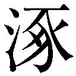鹿の岐となりしよしを四八いひはやす。まのあたりなるさへ偽おほき四九世説なるを、まして五〇しら雲の八重に隔たりし国なれば、心も心ならず、八月のはじめ京をたち出でて、五一岐曾の真坂を日くらしに踰えけるに、落草ども道を塞へて、行李も残りなく奪はれしがうへに、人のかたるを聞けば、是より東の方は所々に新関を居ゑて、旅客の往来をだに宥さざるよし。さては五二消息をすべきたづきもなし。家も兵火にや亡びなん。妻も世に生きてあらじ。しからば古郷とても五三鬼のすむ所なりとて、ここより又京に引きかへすに、近江の国に入りて、にはかにここちあしく、五四熱き病を憂ふ。五五武佐といふ所に、児玉嘉兵衛とて富貴の人あり。是は雀部が妻の五六産所なりければ、五七苦にたのみけるに、此の人見捨てずしていたはりつも、医をむかへて薬の事専らなりし。やや五八ここち清しくなりぬれば、篤き恩を五九かたじけなうす。されど歩む事はまだ六〇はかばかしからねば、今年は思ひがけずもここに春を迎ふるに、いつのほどか此の里にも友をもとめて、六一揉めざるに直き志を賞ぜられて、児玉をはじめ誰々も頼もしく交りけり。此の後は京に出でて雀部を六二とぶらひ、又は近江に帰りて児玉に身を托せ、七とせがほどは夢のごとくに過しぬ。
六三寛正二年、六四畿内河内の国に六五畠山が同根の争ひ果さざれば、京ぢかくも騒がしきに、春の頃より六六瘟疫さかんに行はれて、屍は衢に畳み、人の心も今や六七一劫の尽くるならんと、はかなきかぎりを悲しみける。勝四郎熟思ふに、かく落魄れてなす事もなき身の何をたのみとて遠き国に逗まり、六八由縁なき人の恵をうけて、いつまで生くべき命なるぞ。六九古郷に捨てし人の消息をだにしらで、七〇萱草おひぬる野方に長々しき年月を過しけるは、七一信なき己が心なりける物を。たとへ七二泉下の人となりて、七三ありつる世にはあらずとも、其のあとをももとめて七四壠をも築くべけれと、人々に志を告げて、五月雨のはれ間に七五手をわかちて、十日あまりを経て古郷に帰り着きぬ。
此の時、日ははや西に沈みて、雨雲はおちかかるばかりに闇けれど、旧しく住みなれし里なれば迷ふべうもあらじと、夏野わけ行くに、いにしへの七六継橋も川瀬におちたれば、げに七七駒の足音もせぬに、田畑は七八荒れたきままにすさみて、旧の道もわからず、七九ありつる人居もなし。たまたまここかしこに残る家に人の住むとは見ゆるもあれど、昔には似つつもあらね。いづれか我が住みし家ぞと立ち惑ふに、ここ八〇二十歩ばかりを去りて、雷に摧かれし松の聳えて立てるが、雲間の星のひかりに見えたるを、げに八一我が軒の標こそ見えつると、先づ喜しきここちしてあゆむに、家は故にかはらであり、人も住むと見えて、古戸の間より灯火の影もれて輝々とするに、八二他人や住む、もし八三其の人や在すかと心躁しく、門に立ちよりて八四咳すれば、内にも速く聞きとりて誰そと咎む。いたう八五ねびたれど正しく妻の声なるを聞きて、夢かと胸のみさわがれて、我こそ帰りまゐりたり。八六かはらで独自浅茅が原に住みつることの不思議さよといふを、八七聞きしりたれば八八やがて戸を明くるに、いといたう黒く垢づきて、眼はおち入りたるやうに、八九結げたる髪も背にかかりて、九〇故の人とも思はれず。夫を見て物をもいはで潸然となく。
勝四郎も九一心くらみて、しばし物をも聞えざりしが、ややしていふは、今までかくおはすと思ひなば、など年月を過すべき。去ぬる年、京にありつる日、鎌倉の兵乱を聞き、九二御所の師潰えしかば、総州に避けて禦ぎ給ふ。管領これを責むる事急なりといふ。其の明雀部にわかれて、八月のはじめ京を立ちて、九三木曾路を来るに、山賊あまたに取りこめられ、衣服金銀残りなく掠められ、命ばかりを辛労じて助かりぬ。且里人のかたるを聞けば、東九四海東山の道はすべて新関を居ゑて人を駐むるよし。又きのふ京より九五節刀使もくだり給ひて、上杉に与し、総州の陣に向はせ給ふ。本国の辺は疾くに焼きはらはれ、九六馬の蹄尺地も間なしとかたるによりて、今は九七灰塵とやなり給ひけん、海にや沈み給ひけんと、ひたすらに思ひとどめて、又京にのぼりぬるより、九八人に餬口ひて七とせは過しけり。近曾九九すずろに物のなつかしくありしかば、せめて其の蹤をも見たきままに帰りぬれど、かくて世におはせんとは努々思はざりしなり。一〇〇巫山の雲、一〇一漢宮の幻にもあらざるやとくりごとはてしぞなき。妻、涙をとどめて、一たび離れまゐらせて後、一〇二たのむの秋より前に恐ろしき世の中となりて、里人は皆家を捨てて海に漂ひ山に隠れば、適に残りたる人は、多く一〇三虎狼の心ありて、かく寡となりしを便りよしとや、言を巧みていざなへども、一〇四玉と砕けても瓦の全きにはならはじものをと、幾たびか辛苦を忍びぬる。一〇五銀河秋を告ぐれども君は帰り給はず。冬を待ち、春を迎へても消息なし。今は京にのぼりて尋ねまゐらせんと思ひしかど、丈夫さへ宥さざる関の鎖を、いかで女の越ゆべき道もあらじと、軒端の一〇六松にかひなき宿に、狐鵂鶹を友として今日までは過しぬ。今は長き恨みもはればれとなりぬることの喜しく侍り。一〇七逢ふを待つ間に恋死なんは人しらぬ恨みなるべしと、又よよと泣くを、夜こそ短きにといひなぐさめて、ともに臥しぬ。
一〇八窓の紙松風を啜りて夜もすがら涼しきに、一〇九途の長手に労れ熟く寝ねたり。一一〇五更の天明けゆく比一一一現なき心にもすずろに寒かりければ、一一二衾帔かんとさぐる手に、何物にや籟々と音するに目さめぬ。面にひやひやと物のこぼるるを、雨や漏りぬるかと見れば、屋根は風にまくられてあれば、一一三有明月のしらみて残りたるも見ゆ。家は扉もあるやなし。一一四簀垣朽頽れたる間より、荻薄高く生出でて、朝露うちこぼるるに、袖一一五湿ぢてしぼるばかりなり。壁には蔦葛延ひかかり、庭は葎に埋もれて一一六秋ならねども野らなる宿なりけり。
さてしも臥したる妻はいづち行きけん見えず。狐などのしわざにやと思へば、かく荒れ果てぬれど故住みし家にたがはで、広く造り作せし奥わたりより、端の方、稲倉まで一一七好みたるままの形なり。一一八呆自て足の踏所さへ失れたるやうなりしが、熟おもふに、妻は既に死りて、今は狐狸の住みかはりて、かく野らなる宿となりたれば、怪しき鬼の化して一一九ありし形を見せつるにてぞあるべき。若し又我を慕ふ魂のかへり来りてかたりぬるものか。一二〇思ひし事の露たがはざりしよと、更に涙さへ出でず。一二一我が身ひとつは故の身にしてとあゆみ廻るに、むかし閨房にてありし所の簀子をはらひ、土を積みて壠とし、雨露をふせぐまうけもあり。夜の霊はここもとよりやと恐ろしくも且なつかし。一二二水向の具一二三物せし中に、木の端を刪りたるに、一二四那須野紙のいたう古びて、文字も一二五むら消して所々見定めがたき、正しく妻の筆の跡なり。法名といふものも年月もしるさで、三十一字に末期の心を哀れにも展べたり。
一二六 さりともと思ふ心にはかられて
世にもけふまでいける命か
ここにはじめて妻の死したるを覚りて、大いに叫びて倒れ伏す。去とて何の年、何の月日に終りしさへしらぬ浅ましさよ。人はしりもやせんと、涙をとどめて立ち出づれば、日高くさし昇りぬ。先づちかき家に行きて主を見るに、一二七昔見し人にあらず。かへりて何国の人ぞと咎む。勝四郎一二八礼まひていふ。此の隣なる家の主なりしが、一二九過活のため京に七とせまでありて、昨の夜帰りまゐりしに、既に荒廃みて人も住ひ侍らず。妻なるものも死りしと見えて、壠の設も見えつるが、一三〇いつの年にともなきに、一三一まさりて悲しく侍り。しらせ給はば教へ給へかし。主の男いふ。一三二哀れにも聞え給ふものかな。我ここに住むもいまだ一とせばかりの事なれば、それよりはるかの昔に亡せ給ふと見えて、住み給ふ人の一三三ありつる世はしり侍らず。すべて此の里の旧き人は兵乱の初めに逃失せて、今住居する人は大かた他より移り来たる人なり。只一人の翁の侍るが、一三四所に旧しき人と見え給ふ。時々あの家にゆきて、亡せ給ふ人の一三五菩提を弔はせ給ふなり。此の翁こそ月日をもしらせ給ふべしといふ。勝四郎いふ。さては其の翁の栖み給ふ家は何方にて侍るや。主いふ。ここより百歩ばかり浜の方に、麻おほく植ゑたる畑の主にて、其所にちひさき庵して住ませ給ふなりと教ふ。勝四郎よろこびてかの家にゆきて見れば、七十可の翁の、腰は一三六浅ましきまで屈りたるが、一三七庭竃の前に一三八円座敷きて茶を啜り居る。翁も勝四郎と見るより、一三九吾主何とて遅く帰り給ふといふを見れば、此の里に久しき漆間の翁といふ人なり。
勝四郎、翁が一四〇高齢をことぶきて、次に京に行きて心ならずも逗まりしより、前夜のあやしきまでを詳にかたりて、翁が壠を築きて祭り給ふ恩のかたじけなきを告げつつも涙とどめがたし。翁いふ。吾主遠くゆき給ひて後は、夏の比より干戈を揮ひ出でて、里人は所々に遁れ、弱き者どもは軍民に召さるるほどに、一四一桑田にはかに狐兎の叢となる。只一四二烈婦のみ主が秋を約ひ給ふを守りて、家を出で給はず。翁も又一四三足蹇ぎて百歩を難しとすれば、深く閉てこもりて出でず。一旦一四四樹神などいふおそろしき鬼の栖む所となりたりしを、稚き女子の一四五矢武におはするぞ、一四六老が物見たる中のあはれなりし。秋去り春来りて、一四七其の年の八月十日といふに死り給ふ。惆しさのあまりに、老が手づから土を運びて柩を蔵め、其の終焉に残し給ひし一四八筆の跡を壠のしるしとして、一四九蘋蘩行潦の祭も心ばかりにものしけるが、翁もとより筆とる事をしもしらねば、其の月日を一五〇紀す事もえせず。寺院遠ければ一五一贈号を求むる方もなくて、五とせを過し侍るなり。今の物がたりを聞くに、必ず烈婦の魂の来り給ひて、旧しき恨みを聞え給ふなるべし。復びかしこに行きて念比にとぶらひ給へとて、杖を曳きて前に立ち、相ともに壠のまへに俯して声を放げて嘆きつつも、其の夜はそこに念仏して明かしける。
寝られぬままに翁かたりていふ。翁が祖父の其の祖父すらも生れぬはるかの往古の事よ。此の郷に一五二真間の手児女といふいと美しき娘子ありけり。家貧しければ身には一五三麻衣に青衿つけて、髪だも梳らず、履だも穿かずてあれど、面は一五四望の夜の月のごと、笑めば花の一五五艶ふが如、綾錦に一五六裹める一五七京女﨟にも勝りたれとて、この里人はもとより、一五八京の防人等、国の隣の人までも、一五九言をよせて恋慕ばざるはなかりしを、手児女物うき事に思ひ沈みつつ、一六〇おほくの人の心に報すとて、一六一此の浦回の波に身を投げしことを、世の哀れなる例とて、いにしへの人は歌にもよみ給ひてかたり伝へしを、翁が稚かりしときに、母のおもしろく話り給ふをさへ、いと哀れなることに聞きしを、一六二此の亡人の心は昔の手児女が一六三をさなき心に一六四幾らをかまさりて悲しかりけんと、かたるかたる涙さしぐみてとどめかぬるぞ、一六五老は物えこらへぬなりけり。勝四郎が悲しみはいふべくもなし。此の物がたりを聞きて、一六六おもふあまりを田舎人の一六七口鈍くもよみける。
いにしへの真間の手児奈をかくばかり
恋ひてしあらん真間のてごなを
思ふ心の一六八はしばかりをもえいはぬぞ、一六九よくいふ人の心にもまさりてあはれなりとやいはん。かの国にしばしばかよふ商人の聞き伝へてかたりけるなりき。
一 茅がまばらに生え、草ぶかく荒れはてた家。（＊25）
二 千葉県市川市真間。万葉集以来名高く、歌枕。（＊26）
三 所有して。
四 生れつき物事に無頓着な性質。
五 いやなことだと。
六 ついに。とうとう。
七 口惜しいことだと深く思いこみ。
八 あれこれと思案をめぐらした。
九 栃木県足利市付近から産出した染絹。
一〇 まいり上る、の音便。
一一 染めてない白絹。
一二 準備した。
一三 人目をひくほどの美しい容貌で。
一四 平生思いたったらきかぬ気のうえに、今度は更に思いつめているので、仕方なく。
一五 「末」の枕詞。今後の生活が心細く思われたにもかかわらず。万葉集一二「梓弓末のたづきは知らねども心は君によりにしものを」。
一六 旅支度をととのえて。
一七 離れがたい別れ。
一八 まったく途方にくれるばかりで。古今集一八「いづこにか世をばいとはむ心こそ野にも山にも惑ふべらなれ」。
一九 命さえあればまた逢えると思うが。古今集八「命だに心にかなふものならばなにか別れの悲しからまし」。
二〇 不安な気持と生活。（＊28）
二一 「かへる」の序詞。秋の七草の一。帰宅するのは。（＊29）
二二 「東」の枕詞。東は関東。
二三 享徳四年（一四五五）。（＊30）
二四 鎌倉公方足利成氏。明応六年（一四九七）没。古河公方。御所はもと将軍をいったが、鎌倉管領が僭称した。
二五 執事が管領を僭称した。成氏が上杉憲忠を謀殺し、憲忠の弟房顕が成氏と戦った。
二六 茨城県古河へ逃げた。
二七 ばらばらで統一のない。
二八 若者は兵卒にかり出され。
二九 悪化する世相とともに。
三〇 がっくりと気落ちして。
三一 あふ坂は京都と滋賀の境の逢坂山。夕づけ鳥は木綿付鳥で鶏の異称、夕と「云う」の懸詞。（＊32）
三二 義婦・節婦・烈婦（剪灯新話句解の注）。
三三 あまつさえ。そのうえ。
三四 京都室町将軍（義政）。
三五 岐阜県郡上市。
三六 千葉介常胤の後裔。武将で歌人。宗祇の師。生年未詳、文明一六年（一四八四）頃没。
三七 征伐の指揮官に任命して。
三八 下総の誤。千葉県香取郡東庄町。
三九 千葉県市川城主。
四〇 攻める。
四一 野武士。山賊夜盗の類。
四二 関八州。関東地方一帯。
四三 義政将軍の東山時代で、文化風俗は華美であった。
四四 いい儲けを得て。
四五 成氏を追撃して。
四六 たてとほこ。武器。どこもかしこも戦争さわぎで。
四七 戦場。中国河北省東南部の地で、太古、黄帝と蚩尤（シュウ）の戦った所。
四八 世間で評判をする。
四九 世間のうわさ。
五〇 遠く隔たった形容。
五一 長野県木曾郡南木曾町と岐阜県中津川市との境をなす馬籠峠。木曾路の難所。（＊33）
五二 便りをする方法。
五三 鬼のような人ばかりすんでいるところ。
五四 熱病。
五五 滋賀県近江八幡市武佐。中仙道の宿駅。
五六 実家。
五七 ていねいに。
五八 気分がさっぱりした。
五九 感謝する。
六〇 しっかりしないので。
六一 生れつきの素直で正直な性質を愛されて。（＊34）
六二 訪ね。
六三 一四六一年。
六四 京都・奈良・大阪と兵庫の一部。山城・大和・河内・和泉・摂津の五国。河内は大阪府。
六五 同根は兄弟。畠山政長と義就の家督相続争いが終りそうもないので。
六六 悪性の流行病。
六七 この世の終りであろうか。劫は、仏教で非常に長い時間をいい、宇宙の生命変遷を四劫にわけている。
六八 親戚関係のない、あかの他人。
六九 妻の宮木。
七〇 故郷を忘れ妻を忘れて、萱草の生えているようなこの土地で。古今集一七「すみよしとあまはつぐとも長居すな人忘れ草おふといふなり」。
七一 実意のない私の心からであったのだ。
七二 あの世の人。
七三 以前のようにこの世に生きていないにしても。
七四 墓。
七五 別れをつげて。
七六 万葉の昔から有名な真間の継橋。真間川にかかっていた。板の橋を長く継いだ橋。
七七 万葉集一四「足（あ）の音せずゆかむ駒もが葛飾の真間の継橋やまずかよはむ」。
七八 荒れ放題に荒れて。
七九 以前あった人家。
八〇 一歩は曲尺の約六尺。二〇歩は約三六メートル。
八一 わが家のめじるし。古来、家の門口に松を植える風習があった。
八二 べつの人。
八三 妻の宮木。
八四 来訪・帰宅をしらせる合図のせきばらい。
八五 ふけているが。
八六 達者で。
八七 夫の声であると聞き知ったので。
八八 すぐに。
八九 結いあげた髪も乱れおちて背にかかり。
九〇 以前の妻の面影はない。
九一 気も動転して。
九二 成氏方が敗れたので。
九三 中仙道の一部。
九四 東海道・東山道。京から関東へ通ずる二大街道。
九五 節度使。天皇から派遣された征討軍の将軍。
九六 軍馬の蹄がみちみちて、すっかりふみにじった。
九七 戦禍をうけて焼け死んだか、溺れ死んだか。
九八 人の許に寄食して。
九九 しきりに。
一〇〇 男女が夢の中で逢って契りを結ぶこと。巫山は中国西南区四川省にある山。文選巻四の高唐賦に、楚の襄王が夢に巫山の女と契ったがこれが実は雲であったという故事。
一〇一 男女が幽明さかいを異にしながらあうこと。漢書の外戚伝に、漢の武帝が方士に命じて李夫人の霊を幻の如く見たという故事。
一〇二 夫の帰宅を頼みにしていた秋。八月一日を「たのむの日」とよぶのにかけた。
一〇三 恐ろしく貪婪な心。
一〇四 操を守って死すとも不義をして命ながらえる道はふむまい。剪燈新話句解の註「寧為二玉砕一、不レ為二瓦全一」。
一〇五 天の河が冴えて秋のきたのを知らせる。
一〇六 松に「待つ」をかける。
一〇七 逢うのを待つ間にこがれ死にしたら、相手からも私の心中を知られずにほんとに口惜しく情けないことであろう。後拾遺集一一「人しれずあふを待つ間に恋ひ死なば何に代へたる命とかいはむ」。
一〇八 窓の障子の破れ目から松風がひたひたと音をたてて吹きこんで。
一〇九 長い道中。
一一〇 午前四時─六時。
一一一 まださめやらぬ夢心地にも何となく寒かったので。
一一二 夜着をかけようと。
一一三 夜があけてもまだ空に残っている月。陰暦一六日以後の月。
一一四 簀搔のあて字。簀子で作ったゆか。
一一五 びっしょり濡れて。
一一六 秋でもないのに秋の野のように草ぶかく荒れはてた家の模様であった。古今集四「里は荒れて人はふりにし宿なれや庭もまがきも秋の野らなる」。
一一七 かつて自分の好みで造ったままの様子。
一一八 茫然自失のさま。
一一九 妻の生前の姿。
一二〇 帰国する前に想像していたこと。
一二一 「月やあらぬ春やむかしの春ならぬわが身ひとつはもとの身にして」（古今集一五・伊勢物語四にある業平の歌）。（＊35）
一二二 霊前に供える水を入れる器。
一二三 供える。設ける。代動詞。
一二四 栃木県那須野、烏山付近で産する和紙。
一二五 ところどころ消えて。
一二六 権中納言敦忠卿集にある歌。（＊36）
一二七 以前の知人。
一二八 ていねいに挨拶して。
一二九 生業。渡世。
一三〇 いつの年死んだとも墓に記してないので。
一三一 いっそう。
一三二 お気の毒なおはなしでございますね。
一三三 生きていた当時。
一三四 この土地に古くからいた人。
一三五 亡き人の冥福を祈っていらっしゃいます。
一三六 ひどく。
一三七 土間に造ったかまど。
一三八 わら・い・すげ等の葉を丸くひらたく渦にして編んだ敷物。
一三九 そなた。お前さん。
一四〇 長寿を祝福して。
一四一 桑畑も耕す者がなくてたちまち狐や兎のすむくさむらとなる。かわり方のはげしいことをいう。
一四二 宮木をさす。
▼現代語訳挿絵参照。
一四三 足がきかなく、歩行不自由になって。
一四四 樹木にやどる霊で、妖怪。人にたたると信じられていた。
一四五 気丈。
一四六 この老人（自分）が見聞したことの中で。
一四七 勝四郎が帰宅を約束した翌年の秋。康正二年（一四五六）。
一四八 前出の和歌をさす。
一四九 死者の霊前に水を供えてまつること。蘋はうき草、蘩はしろよもぎ、行潦は路上の水たまりの水で、粗末なものだが誰でもとれるものであり、心ばかりの供えものの意からきた。
一五〇 記す、とおなじ。
一五一 戒名。法名。
一五二 真間にすんでいた美少女で、その伝説は万葉集の巻三・九・一四などに見え、のちには藤原清輔「奥儀抄」にも見える。ここは万葉集九、高橋連虫麻呂の「詠二勝鹿真間娘子一歌一首幷短歌」と題する歌によっている。
一五三 麻衣も青衿も古代の質素な服装。青衿は野草で染めた衿。
一五四 満月の如く美しく輝き。
一五五 咲きかがやく。
一五六 身にまとった。
一五七 都の貴婦人。
一五八 都から派遣された国庁の武士。防人はもと九州防衛警備兵をいったが、ここはたんに警備の武士。
一五九 いい寄って。
一六〇 多くの人の心にはこたえられず、こたえられなければ多くの人の恨みをうけて罪をかさねることになるから、いっそ死ぬことによって、多くの人の心にむくいよう（秋成の金砂にある説）。
一六一 入江。真間の浦。
一六二 宮木をさす。
一六三 うぶな心。
一六四 どれほどまさって。
一六五 年寄りというものは涙もろくてこらえ性のないもの。
一六六 思いあまった胸の中を。
一六七 口べた。不器用。（＊37）
一六八 一端。
一六九 うまく歌をよむ人。
一夢応の鯉魚
むかし二延長の頃、三三井寺に四興義といふ僧ありけり。絵に巧なるをもて五名を世にゆるされけり。嘗に画く所、仏像山水花鳥を六事とせず。寺務の間ある日は七湖に小船をうかべて、八網引釣する泉郎に銭を与へ、獲たる魚をもとの江に放ちて、其の魚の遊躍ぶを見ては画きけるほどに、年を経て九細妙にいたりけり。或るときは一〇絵に心を凝して眠をさそへば、ゆめの裏に江に入りて、一一大小の魚とともに遊ぶ。覚むれば即て見つるままを画きて壁に貼し、みづから呼びて夢応の鯉魚と名付けけり。其の絵の妙なるを感でて乞要むるもの一二前後をあらそへば、只花鳥山水は乞ふにまかせてあたへ、鯉魚の絵は一三あながちに惜しみて、人毎に戯れていふ。一四生を殺し鮮を喰ふ凡俗の人に、法師の養ふ魚一五必ずしも与へずとなん。其の絵と一六俳諧とともに天下に聞えけり。
一とせ病に係りて、七日を経て忽ちに眼を閉ぢ、息絶えてむなしくなりぬ。一七徒弟友どちあつまりて嘆き惜しみけるが、只一八心頭のあたりの微し暖かなるにぞ、一九若しやと二〇居めぐりて守りつも三日を経にけるに、手足すこし動き出づるやうなりしが、忽ち長噓を吐きて、眼をひらき、醒めたるがごとくに起きあがりて、人々にむかひ、我二一人事をわすれて既に久し。幾日をか過しけん。衆弟等いふ。師三日前に息たえ給ひぬ。寺中の人々をはじめ、日比睦じくかたり給ふ二二殿原も詣で給ひて葬の事をもはかり給ひぬれど、只師が心頭の暖かなるを見て、柩にも蔵めでかく守り侍りしに、今や蘇生り給ふにつきて、二三かしこくも物せざりしよと怡びあへり。興義点頭きていふ。誰にもあれ一人、二四檀家の平の助の殿の館に詣りて告さんは、法師こそ不思議に生き侍れ。君今酒を酌み鮮き二五鱠をつくらしめ給ふ。しばらく宴を罷めて寺に詣でさせ給へ。二六稀有の物がたり聞えまゐらせんとて、彼の人々の二七ある形を見よ。我が詞に露たがはじといふ。使異しみながら彼の館に往きて、其の由をいひ入れてうかがひ見るに、主の助をはじめ、令弟の十郎、二八家の子掃守など居めぐりて酒を酌みゐたる。師が詞のたがはぬを奇とす。助の館の人々此の事を聞きて大いに異しみ、先づ箸を止めて、十郎掃守をも召具して寺に到る。
興義枕をあげて、二九路次の労ひをかたじけなうすれば、助も蘇生の賀を述ぶ。興義先づ問ひていふ。君試に我がいふ事を聞かせ給へ。かの漁父文四に魚をあつらへ給ふ事ありや。助驚きて、まことにさる事あり。いかにしてしらせ給ふや。興義、かの漁父三尺あまりの魚を籠に入れて君が門に入る。君は賢弟と三〇南面の所に碁を囲みておはす。掃守傍に侍りて、桃の実の大なるを啗ひつつ三一弈の手段を見る。漁父が大魚を携へ来るを喜びて、三二高杯に盛りたる桃をあたへ、又盃を給うて三三三献飲ましめ給ふ。三四鱠手三五したり顔に魚をとり出でて鱠にせしまで、法師がいふ所三六たがはでぞあるらめといふに、助の人々此の事を聞きて、或は異しみ、或はここち惑ひて、三七かく詳なる言のよしを頻に尋ぬるに、興義かたりていふ。
我此の頃病にくるしみて堪へがたきあまり、其の死したるをもしらず、三八熱きここちすこしさまさんものをと、三九杖に扶けられて門を出づれば、病もやや忘れたるやうにて、籠の鳥の四〇雲井にかへるここちす。山となく里となく行き行きて、又江の畔に出づ。湖水の碧なるを見るより、四一現なき心に浴びて遊びなんとて、そこに衣を脱ぎ去てて、身を跳らして深きに四二飛び入りつも、彼此に游ぎめぐるに、幼より水に狎れたるにもあらぬが、慾ふにまかせて戯れけり。今思へば愚かなる夢ごごろなりし。されども四三人の水に浮かぶは、魚のこころよきにはしかず。ここにて又魚の遊びをうらやむこころおこりぬ。傍にひとつの大魚ありていふ。師のねがふ事いとやすし。待たせ給へとて、杳かの底に去くと見しに、しばしして、冠装束したる人の、前の大魚に胯がりて、許多の四四鼇魚を率ゐて浮かび来たり、我にむかひていふ。四五海若の詔あり。老僧かねて四六放生の功徳多し。今、江に入りて魚の遊躍をねがふ。権に金鯉が服を授けて四七水府のたのしみをせさせ給ふ。只餌の香しきに昧まされて、釣の糸にかかり身を亡ふ事なかれといひて、去りて見えずなりぬ。不思議のあまりにおのが身をかへり見れば、いつのまに鱗金光を備へてひとつの鯉魚と化しぬ。
あやしとも思はで、尾を振り鰭を動かして、心のままに逍遥す。まづ四八長等の山おろし、（＊40）立ちゐる浪に身をのせて、四九志賀の大湾の汀に遊べば、五〇かち人の裳のすそぬらすゆきかひに驚されて、五一比良の高山影うつる、深き水底に五二潜くとすれど、かくれ五三堅田の漁火に五四よるぞうつつなき。五五ぬば玉の夜中の潟にやどる月は、五六鏡の山の峯に清みて、五七八十の湊の八十隈もなくておもしろ。五八沖津嶋山、五九竹生嶋、波に六〇うつろふ六一朱の垣こそおどろかるれ。六二さしも伊吹の山風に、六三旦妻船も漕ぎ出づれば、芦間の夢をさまされ、六四矢橋の渡する人の水なれ棹をのがれては、六五瀬田の橋守にいくそたびか追はれぬ。日あたたかなれば浮かび、風あらきときは千尋の底に遊ぶ。
急にも飢ゑて食ほしげなるに、彼此に六六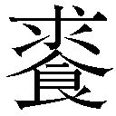り得ずして狂ひゆくほどに、忽ち文四が釣を垂るるにあふ。其の餌はなはだ香し。心又六七河伯の戒を守りて思ふ。我は仏の御弟子なり。（＊41）しばし食を求め得ずとも、なぞもあさましく魚の餌を飲むべきとてそこを去る。しばしありて飢ますます甚しければ、かさねて思ふに、今は堪へがたし。たとへ此の餌を飲むとも六八嗚呼に捕られんやは。もとより六九他は相識るものなれば、何のはばかりかあらんとて、遂に餌をのむ。文四七〇はやく糸を収めて我を捕ふ。こはいかにするぞと叫びぬれども、他七一かつて聞かず顔にもてなして縄をもて我が七二腮を貫き、芦間に船を繫ぎ、我を籠に押入れて君が門に進み入る。七三君は賢弟と南面の間に弈して遊ばせ給ふ。掃守傍に侍りて七四菓を啗ふ。文四がもて来し大魚を見て、人々大いに感でさせ給ふ。我其のとき人々にむかひ、声をはり上げて、七五旁等は興義をわすれ給ふか。宥させ給へ。寺にかへさせ給へと、連に叫びぬれど、人々しらぬ形にもてなして、只手を拍つて喜び給ふ。鱠手なるもの、まづ我が両眼を左手の指にてつよくとらへ、七六右手に礪ぎすませし七七刀をとりて俎盤にのぼし、七八既に切るべかりしとき、我くるしさのあまりに大声をあげて、七九仏弟子を害する例やある。我を助けよ助けよと哭き叫びぬれど、聞き入れず。終に切らるるとおぼえて夢醒めたりとかたる。人々大いに感で異しみ、師が物がたりにつきて思ふに、八〇其の度ごとに魚の口の動くを見れど、八一更に声を出だす事なし。かかる事まのあたりに見しこそいと不思議なれとて、八二従者を家に走らしめて残れる鱠を湖に捨てさせけり。
興義これより病愈えて、杳の後八三天年をもて死りける。其の終焉に臨みて、画く所の鯉魚数枚をとりて湖に散せば、画ける八四魚紙繭（かみきぬ）をはなれて水に遊戯す。ここをもて興義が絵世に伝はらず。（＊44）其の弟子八五成光なるもの、興義が八六神妙をつたへて八七時に名あり。八八閑院の殿の八九障子に鶏を画きしに、生ける鶏この絵を見て蹴たるよしを、九〇古き物がたりに載せたり。
一 夢の中で感応してえがいた鯉。
二 九二三─九三一。
三 滋賀県大津市にある天台宗寺門派総本山、長等山園城寺の別称。由緒ふかい寺で、眼下に琵琶湖をのぞむ。
四 古今著聞集に名が見えているが、伝未詳。
五 世間から名人という評判をたてられていた。
六 専らとしない。仕事としない。
七 琵琶湖。
八 網をひいたり釣をしたりする漁師。
九 精細巧妙の域に達した。
一〇 絵に心を集中して。
一一 大小種々の魚。
一二 われ先にとあらそいもとめた。
一三 どこまでも惜しんで。
一四 生物を殺したり、鮮魚を食ったりする世間一般の人。（＊38）
一五 けっして、きっと。
一六 冗談。戯言。「生を殺し鮮を喰ふ云々」の言葉をさす。
一七 弟子の僧と友人たち。
一八 本篇の典拠、魚服記に「心頭微暖」とある。
一九 もしかしたら蘇生するかもしれない。
二〇 まわりをとりまいてみまもりながら。
二一 人事不省になって。失神して。
二二 殿方。かたがた。
二三 葬らなくてよかったことだ。
二四 寺に属する信徒。
二五 生の魚肉を細く切ったもの。魚服記「為レ我覰二群官方食レ鱠否一」。
二六 世にもまれなめずらしいはなしをおはなししましょう。
二七 どんな様子をしているか。
二八 家臣。
二九 わざわざきてくれた足労の礼をのべると。
三〇 表座敷。
三一 囲碁の勝負。
三二 食物を盛る足高の器。
三三 酒を杯に三ばい。十分に飲ませたこと。
三四 調理人。
三五 得意顔に。誇り顔に。
▼現代語訳挿絵参照。
三六 ちがわないでしょう。
三七 こんなにくわしくはっきりと事実を指摘できた理由。
三八 ねつっぽい苦しい心地。魚服記「悪熱求レ涼」。
三九 杖をたよりに。魚服記「策レ杖而行」。
四〇 大空。
四一 夢心地に。原文「うつ」
四二 飛びこんで。
四三 人間が水に浮いて泳ぐのは、それがどんなにうまくても、魚が自由自在に泳ぎまわるのにはおよばない。魚服記「人浮不レ如二魚快一也」。
四四 魚族。魚類。
四五 海神。湖の神。原文「わたづみ」
四六 ひとの捕えた鳥や魚を放してやること。（＊39）
四七 水中のたのしみ。水府はもと海底にある水神の居処、竜宮をいった。
四八 三井寺の背後にある長等山から吹きおろす風。
四九 琵琶湖の南西岸、昔の志賀の都付近の海岸。
五〇 徒歩で行く人が着物の裾を濡らすほど水際近くを往来するのにおどろかされ。続古今集六「かち人の汀の氷ふみならしわたれどぬれぬ志賀の大わた」。
五一 琵琶湖の西にある比良山。
五二 もぐろうとするが。
五三 琵琶湖西岸にある。「かくれ難し」の懸詞。
五四 「夜」と「寄る」の懸詞。
五五 「夜」の枕詞。
五六 滋賀県蒲生郡竜王町にある山。歌枕。
五七 多くの港のあらゆるすみずみまで照らし出している情景はおもしろい。
五八 琵琶湖の南岸近く東寄りの沖の島。
五九 琵琶湖の北岸近くにある島。弁財天で名高い。
六〇 うつる。
六一 竹生島弁財天の朱塗りの玉垣。
六二 滋賀県と岐阜県の境にある伊吹山。さしもは、そうとはの意とさしも草（艾草）の掛詞。後拾遺集一一「かくとだにえやは伊吹のさしも草さしもしらじなもゆるおもひを」。
六三 琵琶湖東岸、米原市朝妻筑摩の入江にあった渡船。朝が来ての意を懸ける。
六四 琵琶湖南東岸、草津市矢橋から大津へ渡る舟の船頭の、さばきもあざやかな棹。
六五 琵琶湖南部、瀬田川にかかる唐橋。
六六 もとめたが手に入れることができないで。
六七 河神。湖の神。
六八 おめおめと。うかつに。
六九 文四をさす。
七〇 素早く釣糸をひきあげて。
七一 いっこう。ちっとも。
七二 魚のえら。あご。
七三 平の助をさす。
七四 くだもの。前出の桃。
七五 皆様。あなた方。
七六 「みぎり」と訓ませている。
七七 庖丁。
七八 すんでのことに切ろうとしたとき。（＊42）
七九 仏に仕える僧を殺すということがあるか。（＊43）
八〇 興義が魚になって口をきくたびに。
八一 ちっとも。いっこうに。
八二 めしつかい。下僕。
八三 天寿をまっとうして。
八四 画料の紙や絹からぬけ出して。「紙繭」の左右に振り仮名がある。
八五 古今著聞集に名が見えているが、伝未詳。
八六 入神の妙技をうけついで。
八七 その時代に名声をあげた。
八八 京都市上京区二条の南、西洞院の西にあった閑院内裏。もと藤原冬嗣の邸で、名園の誇高かったが、一二五九年焼失した。
八九 唐紙。ふすま。
九〇 古今著聞集をさす。同書巻一一、画図一六に「成光閑院の障子に鶏を書きたりけるを、実の鶏見て蹴けるとなん。この成光は三井寺の僧興義が弟子になん侍りける」とある。
雨月物語 巻之三
一仏法僧
二うらやすの国ひさしく、民作業をたのしむあまりに、春は花の下に息ひ、秋は三錦の林を尋ね、四しらぬ火の五筑紫路もしらではと六械まくらする人の、富士七筑波の嶺々を心にしむるぞそぞろなるかな。（＊45）
伊勢の八相可といふ郷に、拝志氏の人、世をはやく嗣に譲り、九忌むこともなく頭おろして、名を夢然とあらため、従来身に病さへなくて、彼此の旅寝を老のたのしみとする。季子作之治なるものが一〇生長の頑なるをうれひて、京の人見するとて、一一一月あまり二条の別業に逗まりて、三月の末一二吉野の奥の花を見て、知れる寺院に七日ばかりかたらひ、此のついでに、いまだ一三高野山を見ず、いざとて、夏のはじめ青葉の茂みをわけつつ、一四天の川といふより踰えて、一五摩尼の御山にいたる。道のゆくての嶮しきに一六なづみて、おもはずも日かたぶきぬ。
一七壇場、諸堂一八霊廟、残りなく拝みめぐりて、ここに宿からんといへど、一九ふつに答ふるものなし。そこを行く人に二〇所の掟をきけば、寺院僧坊に二一便なき人は、麓にくだりて明すべし。此の山すべて旅人に一夜をかす事なしとかたる。（＊47）いかがはせん。さすがにも老の身の嶮しき山路を来しがうへに、事のよしを聞きて大きに二二心倦みつかれぬ。作之治がいふ。日もくれ、足も痛みて、いかがして二三あまたのみちをくだらん。二四弱き身は草に臥すとも厭ひなし。只二五病み給はん事の悲しさよ。夢然云ふ。旅はかかるをこそ哀れともいふなれ。（＊48）今夜二六脚をやぶり、倦みつかれて山をくだるとも、おのが古郷にもあらず。翌のみち又はかりがたし。此の山は二七扶桑第一の霊場、二八大師の広徳かたるに尽きず。二九殊にも来りて通夜し奉り、三〇後世の事たのみ聞ゆべきに、幸の時なれば、霊廟に夜もすがら三一法施したてまつるべしとて、杉の下道のをぐらきを行く行く、霊廟の前なる三二灯籠堂の簀子に上りて、雨具うち敷き座をまうけて、閑に念仏しつつも、夜の更けゆくをわびてぞある。
三三方五十町に開きて、三四あやしげなる林も見えず。小石だも掃ひし三五福田ながら、さすがにここは寺院遠く、三六陀羅尼 三七鈴錫の音も聞えず。木立は三八雲をしのぎて茂みさび、三九道に界ふ水の音ほそぼそと清みわたりて物がなしき。寝られぬままに夢然かたりていふ。そもそも大師の四〇神化、土石草木も四一霊を啓きて、四二八百とせあまりの今にいたりて、四三いよよあらたに、いよよたふとし。四四遺芳四五歴踪多きが中に、此の山なん第一の四六道場なり。大師四七いまぞかりけるむかし、遠く四八唐土にわたり給ひ、あの国にて四九感でさせ給ふ事おはして、此の五〇三鈷のとどまる所、我が道を揚ぐる霊地なりとて、杳冥にむかひて抛げさせ給ふが、五一はた此の山にとどまりぬる。五二壇場の御前なる三鈷の松こそ此の物の落ちとどまりし地なりと聞く。すべて此の山の草木泉石霊ならざるはあらずとなん。こよひ五三不思議にもここに一夜をかりたてまつる事、五四一世ならぬ善縁なり。你弱きとて努々信心おこたるべからずと、五五小やかにかたるも清みて心ぼそし。
御廟のうしろの林にと覚えて、五六仏法々々となく鳥の音、山彦にこたへてちかく聞ゆ。夢然目さむる心ちして、あなめづらし、あの啼く鳥こそ仏法僧といふならめ。かねて此の山に栖みつるとは聞きしかど、まさに其の音を聞きしといふ人もなきに、こよひのやどりまことに五七滅罪生善の祥なるや。かの鳥は清浄の地をえらみてすめるよしなり。上野の国五八迦葉山、下野の国五九二荒山、山城の六〇醍醐の峯、河内の六一杵長山、就中此の山にすむ事、大師の六二詩偈ありて世の人よくしれり。
六三 寒林独坐草堂暁 三宝之声聞二一鳥一
一鳥有レ声人有レ心 性心雲水俱了々
又ふるき歌に、
六四 松の尾の峯静なる曙に
あふぎて聞けば仏法僧啼く
むかし六五最福寺の六六延朗法師は世にならびなき六七法華者なりしほどに、六八松の尾の御神此の鳥をして常に延朗につかへしめ給ふよしをいひ伝ふれば、かの神垣にも巣むよしは聞えぬ。六九こよひの奇妙既に一鳥声あり。我ここにありて七〇心なからんやとて、平生のたのしみとする俳諧風の十七言を、しばし七一うちかたぶいていひ出でける。
七二 鳥の音も秘密の山の茂みかな
旅硯とり出でて、御灯の光に書きつけ、今一声もがなと耳を倚くるに、思ひがけずも遠く寺院の方より、七三前を追ふ声の厳しく聞えて、やや近づき来たり。何人の夜深けて詣で給ふやと、異しくも恐ろしく、親子顔を見あはせて息をつめ、そなたをのみまもり居るに、はや前駆の若侍、七四橋板をあららかに踏みてここに来る。
おどろきて堂の右に潜みかくるるを、武士はやく見つけて、何者なるぞ、七五殿下のわたらせ給ふ。疾く下りよといふに、あわただしく簀子をくだり、土に俯して七六跪る。程なく多くの足音聞ゆる中に、沓音高く響きて、烏帽子七七直衣めしたる貴人、堂に上り給へば、従者の武士四五人ばかり右左に座をまうく。かの貴人、人々に向ひて、誰々はなど来らざると課せらるるに、やがてぞ参りつらめと奏す。又一群の足音して、威儀ある武士、頭まろげたる入道等うち交りて、七八礼たてまつりて堂に昇る。貴人、只今来りし武士にむかひて、七九常陸は何とておそく参りたるぞとあれば、かの武士いふ。八〇白江熊谷の両士、公に八一大御酒すすめたてまつるとて八二実やかなるに、臣も八三鮮き物一種調じまゐらせんため、御従に後れたてまつりぬと奏す。はやく酒殽をつらねてすすめまゐらすれば、八四万作酌まゐれとぞ課せらる。恐りて、美相の若士膝行りよりて八五瓶子を捧ぐ。かなたこなたに杯をめぐらしていと興ありげなり。
貴人又曰はく、絶えて八六紹巴が説話を聞かず、召せと、八七の給ふに、呼びつぐやうなりしが、八八我が跪りし背の方より、八九大いなる法師の、面九〇うちひらめきて、九一目鼻あざやかなる人の、僧衣かいつくろひて座の末にまゐれり。貴人九二古語かれこれ問ひ弁へ給ふに、詳に答へたてまつるを、いといと感でさせ給うて、九三他に禄とらせよとの給ふ。
一人の武士かの法師に問ひていふ。此の山は九四大徳の啓き給うて、土石草木も九五霊なきはあらずと聞く。さるに九六玉川の流れには毒あり。人飲む時は斃るが故に、大師のよませ給ふ歌とて、
九七 わすれても汲みやしつらん旅人の
高野の奥の玉川の水
といふことを聞き伝へたり。大徳のさすがに、此の毒ある流をば、九八など涸せては果し給はぬや。いぶかしき事を九九足下にはいかに弁へ給ふ。
法師笑をふくみていふは、此の歌は一〇〇風雅集に撰み入れ給ふ。其の一〇一端詞に、高野の奥の院へまゐる道に、玉川といふ河の水上に毒虫おほかりければ、此の流を飲むまじきよしをしめしおきて後よみ侍りける、とことわらせ給へば、足下のおぼえ給ふ如くなり。されど今の御疑ひ一〇二僻言ならぬは、大師は神通自在にして一〇三隠神を役して道なきをひらき、巌を鐫るには土を穿つよりも易く、大蛇を一〇四禁め、化鳥を一〇五奉仕へしめ給ふ事、天が下の人の仰ぎたてまつる功なるを思ふには、此の歌の端の詞ぞ一〇六まことしからね。もとより此の一〇七玉河てふ川は国々にありて、いづれをよめる歌も、其の流れのきよきを誉げしなるを思へば、ここの玉川も毒ある流れにはあらで、歌の意も、一〇八かばかり名に負ふ河の此の山にあるを、ここに詣づる人は一〇九忘る忘るも、流れの清きに愛でて手に掬びつらんとよませ給ふにやあらんを、後の人の毒ありといふ一一〇狂言より、此の端詞はつくりなせしものかとも思はるるなり。又深く疑ふときには、此の歌の調、一一一今の京の初の口風にもあらず。おほよそ此の国の古語に、一一二玉蘰一一三玉簾一一四珠衣の類は、形をほめ清きを賞むる語なるから、清水をも玉水玉の井玉河ともほむるなり。毒ある流れをなど一一五玉てふ語は冠らしめん。一一六強に仏をたふとむ人の、歌の意に細妙からぬは、これほどの訛は幾らをもしいづるなり。足下は歌よむ人にもおはせで、此の歌の意異しみ給ふは一一七用意ある事こそと、篤く感でにける。貴人をはじめ人々も此のことわりを頻に感でさせ給ふ。
御堂のうしろの方に、仏法々々と啼く音ちかく聞ゆるに、貴人杯をあげ給ひて、例の鳥絶えて鳴かざりしに、今夜の酒宴に一一八栄あるぞ。紹巴一一九いかにと課せ給ふ。法師かしこまりて、某が一二〇短句、公にも一二一御耳すすびましまさん。ここに旅人の通夜しけるが、今の世の俳諧風をまうして侍る。公にはめづらしくおはさんに召して聞かせ給へといふ。一二二それ召せと課せらるるに、若きさむらひ夢然が方へむかひ、召し給ふぞ、ちかうまゐれと云ふ。一二三夢現ともわかで、おそろしさのままに御まのあたりへはひ出づる。法師夢然にむかひ、前によみつる詞を公に申し上げよといふ。夢然恐る恐る、何をか申しつる、更に覚え侍らず。只赦し給はれと云ふ。法師かさねて、秘密の山とは申さざるや。殿下の問はせ給ふ。いそぎ申し上げよといふ。夢然いよいよ恐れて、殿下と課せ出され侍るは一二四誰にてわたらせ給ひ、かかる深山に夜宴をもよほし給ふや。一二五更にいぶかしき事に侍るといふ。法師答へて、殿下と申し奉るは、一二六関白秀次公にてわたらせ給ふ。人々は一二七木村常陸介、雀部淡路、白江備後、熊谷大膳、粟野杢、日比野下野、山口少雲、丸毛不心、隆西入道、山本主殿、山田三十郎、不破万作、かく云ふは紹巴一二八法橋なり。汝等一二九不思議の御目見えつかまつりたるは。前のことばいそぎ申し上げよといふ。頭（かしら）に髪あらば一三〇ふとるべきばかりに凄しく一三一肝魂も虚にかへるここちして、（＊52）振ふ振ふ、一三二頭陀囊より清き紙取り出でて、筆も一三三しどろに書きつけてさし出すを、主殿取りてたかく吟じ上ぐる。
鳥の音も秘密の山の茂みかな
貴人聞かせ給ひて、一三四口がしこくもつかまつりしな。誰そ此の一三五末句をまうせとのたまふに、山田三十郎座をすすみて、某つかうまつらんとて、しばしうちかたぶきてかくなん。
一三六 芥子たき明すみじか夜の牀
一三七いかがあるべきと、紹巴に見する。よろしくまうされたりと、公の前に出すを見給ひて、一三八片羽にもあらぬはと興じ給ひて、又一三九杯を揚げてめぐらし給ふ。
一四〇淡路と聞えし人、にはかに色を違へて、はや一四一修羅の時にや。阿修羅ども御迎ひに来ると聞え侍る。立たせ給へといへば、一座の人々忽ち面に血を灌ぎし如く、いざ一四二石田増田が徒に今夜も一四三泡吹かせんと勇みて立ち躁ぐ。秀次木村に向はせ給ひ、一四四よしなき奴に我が姿を見せつるぞ。他二人も修羅につれ来れと課せある。老臣の人々一四五かけ隔たりて声をそろへ、いまだ命つきざる者なり。一四六例の悪業なせさせ給ひそといふ詞も、人々の形も、遠く雲井に行くがごとし。
親子は気絶えて、しばしがうち一四七死入りけるが、一四八しののめの明けゆく空に、ふる露の冷やかなるに生出でしかど、いまだ明けきらぬ恐ろしさに、一四九大師の御名をせはしく唱へつつ、一五〇漸日出づると見て、いそぎ山をくだり、京にかへりて一五一薬鍼の保養をなしける。一日夢然、三条の橋を過ぐる時、一五二悪ぎやく塚の事思ひ出づるより、かの寺眺められて、白昼ながら物凄しくありけると、京人にかたりしを、そがままにしるしぬ。
一 啼声がブッポーソー、ブッパンニなどと聞こえるフクロウ科のコノハズクで、深山にすむ。
二 心安らかに平穏に治まれる国。日本の美称。
三 錦のようにうつくしい紅葉の林。春は花云々の対。
四 筑紫の枕詞。「知らぬ」に懸ける。
五 ここでは九州の国々。
六 船旅をする人。械は楫。
七 茨城県にあり、古来富士山と並んで関東の名山。
八 三重県多気町相可。
九 不幸があったわけでもないのに薙髪して。
一〇 生来無骨で融通のきかないのを案じて。
一一 一月・二条・三月と数を重ねる修辞法。別業は別邸。ここでは支店ととってよい。（＊46）
一二 吉野山は桜の名所。下の千本・中の千本・上の千本・奥の千本とある。
一三 和歌山県伊都郡高野町にあり、古義真言宗総本山金剛峯寺がある。
一四 奈良県吉野郡天川町。
一五 高野山の美称。
一六 ゆきなやんで。
一七 東塔より西塔にいたる二町の間をいい、金堂・大塔・灌頂堂・御影堂・愛染堂等の重要な堂塔伽藍がある。
一八 奥の院にある大師廟。
一九 まったく。ちっとも。
二〇 この土地の規約・戒律。
二一 つてのない人。
二二 がっかりして。
二三 長いみちのり。
二四 作之治が自分をさす。
二五 父上が御病気になられはしまいかと。
二六 脚を痛め。
二七 日本の異称。
二八 この山を開基した弘法大師の広大な徳はとても語りつくせない。（＊49）
二九 わざわざにでも。
三〇 来世の安楽往生をお願いしなければならないが。
三一 霊前で読経念仏すること。
三二 大師廟の前にあり、古くは拝殿・礼堂とよばれ、中に多くの灯籠が奉納されている。
三三 五〇町四方。実際は東西五〇町（五四五〇メートル）南北一〇町余り。
三四 見苦しい林。
三五 仏法僧三宝の徳を敬田・恩田・悲田といい、ここでは、その仏法僧の諸徳がそなわったありがたい霊地の意。
三六 経文の名。翻訳せずに梵語のままで誦する。
三七 鈴と錫の仏具。
三八 雲をおしわけるくらい高くそびえて茂りあい。
三九 道ばたを流れる水。
四〇 神の如き徳化力。
四一 霊魂を宿して。
四二 大師が高野山をひらいたのが弘仁七年（八一六）であり、八百余年後は一七世紀初頭にあたる。
四三 ますます顕著に。
四四 後世につたえられるすぐれた業績。
四五 諸国を遍歴してのこした旧跡。
四六 仏道を修行する場。
四七 御在世中の当時。
四八 大師が唐に渡ったのは延暦二三年（八〇四）。
四九 ふかく感じられたこと。
五〇 仏具で、金剛杵の一種。
五一 その結果。果して。
五二 御影堂の前にある。
五三 思いがけずも。不思議な縁で。
五四 この世だけでなく前世からの善因縁である。
五五 小声で。
五六 秋成の胆大小心録四五に「仏法僧は高野山で聞いたが、ブツパンブツパンとないた。形は見へなんだ」。（＊50）
五七 この世でおかした罪を消滅して、来世の善因をつくるよい前兆。
五八 群馬県沼田市の北部にある。弥勒寺がある。
五九 栃木県日光市北方にある。
六〇 京都市伏見区にある。
六一 大阪府南河内郡太子町にある山か。
六二 仏徳を讃えるためにつくった詩で、多く四句から成る。
六三 三宝は仏法僧。性心雲水は有情の鳥の性と人心、無情の行雲と流水。了々は悟りの境地に入っている。大師の詩文集、遍照発揮性霊集、巻一〇にある。現代語訳を見よ。
六四 松の尾は、京都市右京区にある山。新撰六帖や夫木集にある藤原光俊の歌。
六五 松の尾にある天台宗の寺。
六六 一二、三世紀の天台宗の高僧。最福寺の住職。
六七 法華経の信奉者。
六八 京都市右京区嵐山宮前町にある松尾神社。
六九 今夜めずらしくも仏法僧の一声を聞くことができた。
七〇 興趣を解し感動せずにおられようか。
七一 首を傾け思案して。
七二 秘密の山は高野山。真言秘密の法を行なう高野山では仏法僧の声も神秘の響をもつ。
七三 先ばらい。前駆。
七四 御廟橋の橋板を荒々しくふんで。
七五 摂政・関白・将軍などをいう。
七六 「うずくまる」意の古語。
七七 ノーシといい、貴人の平服。
七八 礼をして。
七九 木村常陸介重茲。秀次補佐の重臣。
八〇 白江備後守と熊谷大膳亮。ともに秀次の臣。
八一 神や天皇・貴人にたてまつり、賜わる酒。
八二 まめまめしく働いているので。
八三 鮮魚。転じて酒の肴。
八四 不破万作。秀次の近侍。美少年。
八五 酒徳利。
八六 里村紹巴。連歌の名人。信長・秀吉・秀次の恩をうけた。慶長七年（一六〇二）没。
八七 おっしゃる。
八八 夢然を一人称とした。
八九 松永貞徳の戴恩記に「顔おほきにして眉なく、明らかなるひとかは目にて、鼻大きにあざやかに」とある。（＊51）
九〇 ひらたくて。
九一 目鼻だちのはっきりした人。
九二 故事古語古歌などについてあれこれと問いただす。
九三 紹巴に褒美を与えよ。
九四 徳高き高僧。ここでは弘法大師をさす。
九五 仏徳をうけて霊魂なきものはない。
九六 摩尼・楊柳・転軸の三山に発して、御廟橋の下を流れる小川。
九七 この歌の解には古来異説があるが、忘れても旅人は高野山の奥の玉川の水を汲んで飲んではいけない、毒があるからだ、の意に解すのが普通のようであり、秋成の解は本文に詳述している。風雅集一六に弘法大師作としてある。
▼現代語訳挿絵参照。
九八 どうして水を涸らしてしまわれないのか。
九九 貴殿。対称代名詞。
一〇〇 花園上皇自撰の歌集。貞和二年（一三四六）成立。
一〇一 和歌などの前につける詞書。
一〇二 まちがったこと。
一〇三 目に見えない神を使役して。
一〇四 封じこめ。
一〇五 帰順せしめ。
一〇六 本当とは思えない。
一〇七 六玉川として有名。井出玉川、京都府綴喜郡井手町。野路玉川、滋賀県草津市。擣衣玉川、大阪府高槻市。高野玉川、和歌山県高野山。調布玉川、東京都西多摩郡。野田玉川、宮城県塩釜市付近。歌枕。
一〇八 これほど有名な。
一〇九 すっかり忘れていても。
一一〇 道理にはずれた妄説。
一一一 平安朝初期の歌風ではない。すなわち、弘法大師の作ではないの意を暗示する。
一一二 多くの玉を緒でつらぬいたもので、頭の飾り。
一一三 玉などを飾ったすだれ。またすだれの美称。
一一四 玉をつけた着物。また着物の美称。
一一五 玉という語。
一一六 むやみに仏をありがたがって尊ぶ人で。
一一七 たしなみのふかいことである。
一一八 ひとしお興を加えたことである。
一一九 一句どうだ。
一二〇 連歌の一句。
一二一 お聞きふるしでいらっしゃいましょう。
一二二 その者を召し出せ。
一二三 無我夢中で。
一二四 どなたでいらっしゃって。
一二五 いよいよ不審なことでございます。
一二六 秀吉の甥で、秀吉の猶子となり、内大臣から関白になったが、秀吉に実子の秀頼が誕生するにおよんで威勢を失い、官位を奪われて高野山に逐われ、文禄四年（一五九五）七月、青巖寺で自刃。二八歳。
一二七 以下の人々はいずれも秀次腹心の臣で、大半は秀次に殉じて死んだ。
一二八 僧の位で、法印・法眼につぐ。後には文人・画家・医師にも授かった。
一二九 不思議の御縁で拝顔の栄をえたのであるぞ。
一三〇 一瞬にして毛髪がふとくなるほどの恐ろしさ。
一三一 肝も魂も身をはなれて宙にうくような心地。
一三二 首から胸にかける袋で、近世には多く旅行用に用いられた。
一三三 とり乱すさま。
一三四 うまく、小ざかしくも詠んだな。
一三五 付句。五七五にたいしてつける七七。
一三六 芥子は真言宗で焚いて加持祈禱に用いる。みじか夜は夏の夜。牀は護摩壇。芥子を焚きながら短い夏の夜を、護摩壇のそばで護摩の秘法を行なってあかす。
一三七 どうでしょうか。
一三八 片端。不十分。不完全。下手でもない。
一三九 杯に酒をみたして。
一四〇 雀部淡路とよばれた人。
一四一 闘争を事とする鬼神阿修羅の略。もはや争闘のはじまる時刻になった。（＊53）
一四二 石田三成と増田長盛。ともに秀吉の重臣で、秀次を讒言して死にいたらしめた。
一四三 ひどいめにあわせてやろう。
一四四 つまらぬやつ。
一四五 その間にわって入って。両者をへだてて。
一四六 殺生残虐を好むいつもの悪い所行。
一四七 失神したが。
一四八 「明け」の枕詞。
一四九 南無大師遍照金剛ととなえた。
一五〇 ようやく。やっと。
一五一 薬をのんだり鍼をうったりして治療養生した。
一五二 京都三条小橋の東南岸、瑞泉寺内にある悪逆塚。畜生塚ともいう。秀次の首、および妻子侍妾三十余人の首を埋め、僧慶順が、文禄四年（一五九五）に建立した。その後、角倉了意があらたに碑を建てて現存する。（＊54）
一吉備津の釜
二妒婦の養ひがたきも、老いての後其の功を知ると。咨これ何人の語ぞや。害の甚しからぬも、三商工を妨げ物を破りて、四垣の隣の口をふせぎがたく、害の大なるにおよびては、家を失ひ、国をほろぼして、天が下に笑を伝ふ。いにしへより五此の毒にあたる人、幾許といふ事をしらず。死して六蟒となり、或は七霹靂を震うて怨を報ふ類は、其の肉を八醢にするとも飽くべからず。さるためしは希なり。夫のおのれをよく脩めて九教へなば、此の患おのづから避くべきものを、只一〇かりそめなる徒ことに、女の一一慳しき性を募らしめて、其の身の憂をもとむるにぞありける。一二禽を制するは気にあり。婦を制するは其の夫の雄々しきにありといふは、現にさることぞかし。
一三吉備の国賀夜郡庭妹の郷に、井沢庄太夫といふものあり。祖父は播磨の一四赤松に仕へしが、去んぬる一五嘉吉元年の乱に、一六かの館を去りてここに来り、庄太夫にいたるまで三代を経て、一七春耕し、秋収めて、家豊かにくらしけり。一子正太郎なるもの農業を厭ふあまりに、（＊57）酒に乱れ色に酖りて、父が一八掟を守らず。父母これを嘆きて私かにはかるは、一九あはれ良人の女子の皃よきを娶りて二〇あはせなば、渠が身もおのづから脩まりなんとて、あまねく国中をもとむるに、幸に媒氏ありていふ。二一吉備津の神主香央造酒が女子は、うまれだち秀麗にて、父母にもよく仕へ、かつ歌をよみ、二二箏に工みなり。従来かの家は二三吉備の鴨別が裔にて家系も正しければ、君が家に二四因み給ふは二五果吉祥なるべし。此の事の就らんは二六老が願ふ所なり。二七大人の御心いかにおぼさんやといふ。庄太夫大いに怡び、二八よくも説かせ給ふものかな。此の事我が家にとりて二九千とせの計なりといへども、香央は此の国の貴族にて、我は氏なき三〇田夫なり。三一門戸敵すべからねば、おそらくは肯ひ給はじ。媒氏の翁笑をつくりて、大人の謙り給ふ事甚し。我かならず三二万歳を諷ふべしと、往きて香央に説けば、彼方にもよろこびつつ、妻なるものにもかたらふに、妻もいさみていふ。我が女子既に十七歳になりぬれば、朝夕に三三よき人がな娶せんものをと、心も三四おちゐ侍らず。はやく日をえらみて三五聘礼を納れ給へと、強にすすむれば、盟約すでになりて、井沢にかへりごとす。即て聘礼を厚くととのへて送り納れ、三六よき日をとりて婚儀を三七もよほしけり。
猶 幸を神に祈るとて、三八巫子祝部を召しあつめて、三九御湯をたてまつる。そもそも当社に祈誓する人は、四〇数の祓物を供へて御湯を奉り、吉祥凶祥を占ふ。巫子祝詞をはり、湯の沸上るにおよびて、吉祥には釜の鳴る音牛の吼ゆるが如し。凶きは釜に音なし。是を吉備津の御釜祓といふ。さるに香央が家の事は、神の四一祈けさせ給はぬにや、只秋の虫の叢にすだくばかりの声もなし。ここに疑ひをおこして、此の祥を妻にかたらふ。妻四二更に疑はず。御釜の音なかりしは、祝部等が身の清からぬにぞあらめ。既に聘礼を納めしうへ、かの四三赤縄に繫ぎては、仇ある家、異なる域なりとも易ふべからずと聞くものを。ことに井沢は四四弓の本末をもしりたる人の流にて、四五掟ある家と聞けば、今否むとも承はじ。ことに四六佳婿の麗なるをほの聞きて、我が児も日をかぞへて待ちわぶる物を、今のよからぬ言を聞くものならば、四七不慮なる事をや仕出ださん。其のとき悔ゆるともかへらじと、言を尽して諫むるは、まことに女の四八意ばへなるべし。香央も従来ねがふ因なれば深く疑はず、妻のことばに従きて、婚儀ととのひ、両家の親族氏族、四九鶴の千とせ、亀の万代をうたひことぶきけり。
香央の女子磯良、（＊58）かしこに往きてより、夙に起き、おそく臥して、常に舅姑の傍を去らず、五〇夫が性をはかりて、心を尽して仕へければ、井沢夫婦は五一孝節を感でたしとて歓びに耐へねば、正太郎も其の志に愛でてむつまじくかたらひけり。されど五二おのがままの姧けたる性はいかにせん。いつの比より五三鞆の津の袖といふ五四妓女にふかくなじみて、遂に五五贖ひ出し、ちかき里に別荘をしつらひ、かしこに日をかさねて家にかへらず。磯良これを怨みて、或ひは舅姑の忿に五六托せて諫め、或ひは徒なる心をうらみかこてども、五七大虚にのみ聞きなして、後は五八月をわたりてかへり来らず。父は磯良が五九切なる行止を見るに忍びず、正太郎を責めて押籠めける。磯良これを悲しがりて、六〇朝夕の奴も殊に実やかに、かつ袖が方へも私に物を餉りて、信のかぎりをつくしける。
一日父が宿にあらぬ間に、正太郎磯良を六一かたらひていふ。御許の信ある操を見て、今はおのれが身の罪をくゆるばかりなり。かの女をも古郷に送りてのち、父の六二面を和め奉らん。六三渠は播磨の六四印南野の者なるが、親もなき身の六五浅ましくてあるを、いと六六かなしく思ひて憐をもかけつるなり。我に捨てられなば、はた六七船泊りの妓女となるべし。おなじ六八浅ましき奴なりとも、京は人の情もありと聞けば、渠をば京に送りやりて、六九栄ある人に仕へさせたく思ふなり。我かくてあれば万に貧しかりぬべし。七〇路の代、身にまとふ物も、誰が七一はかりごとしてあたへん。七二御許此の事をよくして渠を恵み給へと、ねんごろに七三あつらへけるを、磯良いとも喜しく、此の事安くおぼし給へとて、私におのが衣服調度を金に貿へ、猶香央の母が許へも偽りて金を乞ひ、正太郎に与へける。此の金を得て密に家を脱れ出で、袖なるものを俱して、京の方へ逃げのぼりける。かくまでたばかられしかば、今はひたすらにうらみ歎きて、遂に重き病に臥しにけり。井沢香央の人々、七四彼を悪み此を哀みて、専ら七五医の験をもとむれども、七六粥さへ日々にすたりて、よろづにたのみなくぞ見えにけり。
ここに播磨の国印南郡七七荒井の里に、彦六といふ男あり。渠は袖とちかき従弟の因あれば、先づこれを訪うて、しばらく足を休めける。彦六、正太郎にむかひて、京なりとて七八人ごとにたのもしくもあらじ。ここに駐まられよ。七九一飯をわけて、ともに過活のはかりごとあらんと、たのみある詞に心おちゐて、ここに住むべきに定めける。彦六、我が住むとなりなる破屋をかりて住ましめ、友得たりとて怡びけり。しかるに袖、八〇風のここちといひしが、八一何となく悩み出でて、八二鬼化のやうに狂はしげなれば、ここに来りて幾日もあらず、此の禍に係る悲しさに、八三みづからも食さへわすれて八四抱き扶くれども、只八五音をのみ泣きて、八六胸窮り堪へがたげに、八七さむれば常にかはるともなし。八八窮鬼といふものにや、八九古郷に捨てし人のもしやと九〇独むね苦し。彦六これを諫めて、いかでさる事のあらん。九一疫といふものの悩ましきはあまた見来りぬ。九二熱き心少しさめたらんには、夢わすれたるやうなるべしと、やすげにいふぞたのみなる。看々露ばかりのしるしもなく、七日にして空しくなりぬ。天を仰ぎ、地を敲きて哭悲しみ、九三ともにもと物狂はしきを、さまざまといひ和めて、かくてはとて遂に九四曠野の烟となしはてぬ。骨をひろひ壠を築きて九五塔婆を営み、僧を迎へて菩提のことねんごろに弔ひける。
正太郎今は俯して九六黄泉をしたへども九七招魂の法をももとむる方なく、仰ぎて古郷をおもへば、かへりて地下よりも遠きここちせられ、九八前に渡なく、後に途をうしなひ、昼は九九しみらに打臥して、夕々ごとには壠のもとに詣でて見れば、小草はやくも繁りて、虫のこゑすずろに悲し。一〇〇此の秋のわびしきは我が身ひとつぞと思ひつづくるに、一〇一天雲のよそにも同じなげきありて、ならびたる新壠あり。ここに詣づる女の、世にも悲しげなる形して、花をたむけ水を灌ぎたるを見て、あな哀れ、わかき御許のかく一〇二気疎きあら野にさまよひ給ふよといふに、女かへり見て、我が身夕々ごとに詣で侍るには、一〇三殿はかならず前に詣で給ふ。一〇四さりがたき御方に別れ給ふにてやまさん。御心のうち一〇五はかりまゐらせて悲しと潸然となく。正太郎いふ。一〇六さる事に侍り。十日ばかりさきに一〇七かなしき婦を亡ひたるが、一〇八世に残りて憑みなく侍れば、ここに詣づることをこそ一〇九心放にものし侍るなれ。御許にも一一〇さこそましますなるべし。女いふ。かく詣でつかうまつるは、一一一憑みつる君の御迹にて、いついつの日ここに葬り奉る。家に残ります一一二女君のあまりに嘆かせ給ひて、此の頃は一一三むつかしき病にそませ給ふなれば、かくかはりまゐらせて、香花をはこび侍るなりといふ。正太郎云ふ。一一四刀自の君の病み給ふもいとことわりなるものを。そも一一五古人は何人にて、家は何地に住ませ給ふや。女いふ。憑みつる君は、此の国にては一一六由縁ある御方なりしが、人の讒にあひて領所をも失ひ、今は此の野の隈に侘しくて住ませ給ふ。女君は一一七国のとなりまでも聞え給ふ美人なるが、（＊59）一一八此の君によりてぞ家所領をも亡くし給ひぬれとかたる。此の物がたりに一一九心のうつるとはなくて、一二〇さてしもその君のはかなくて住ませ給ふはここちかきにや。訪ひまゐらせて、同じ悲しみをも一二一かたり和まん。一二二俱し給へといふ。家は殿の来らせ給ふ道の一二三すこし引き入りたる方なり。一二四便りなくませば時々訪はせ給へ。一二五待ち侘び給はんものをと前に立ちてあゆむ。
一二六二丁あまりを来てほそき径あり。ここよりも一丁ばかりをあゆみて、一二七をぐらき林の裏にちひさき一二八草屋あり。竹の扉のわびしきに、七日あまりの月のあかくさし入りて、一二九ほどなき庭の荒れたるさへ見ゆ。ほそき灯火の光窓の紙をもりてうらさびし。ここに待たせ給へとて内に入りぬ。苔むしたる古井のもとに立ちて見入るに、唐紙すこし明けたる間より、一三〇火影吹きあふちて、一三一黒棚のきらめきたるもゆかしく覚ゆ。女出で来りて、御訪ひのよし申しつるに、入らせ給へ、一三二物隔ててかたりまゐらせんと、端の方へ膝行り出で給ふ。彼所に入らせ給へとて、一三三前栽をめぐりて奥の方へともなひ行く。一三四二間の客殿を人の入るばかり明けて、低き屛風を立て、古き衾の端出でて、主はここにありと見えたり。正太郎かなたに向ひて、一三五はかなくて病にさへそませ給ふよし。おのれも一三六いとほしき妻を亡ひて侍れば、おなじ悲しみをも一三七問ひかはしまゐらせんとて、一三八推して詣で侍りぬといふ。あるじの女、屛風すこし引きあけて、めづらしくもあひ見奉るものかな。一三九つらき報いの程しらせまゐらせんといふに、驚きて見れば、古郷に残せし磯良なり。顔の色いと青ざめて、一四〇たゆき眼すざましく、我を指したる手の青くほそりたる恐ろしさに、一四一あなやと叫んでたふれ死す。
時うつりて生出づ。眼をほそくひらき見るに、家と見しはもとありし荒野の一四二三昧堂にて、黒き仏のみぞ立たせまします。一四三里遠き犬の声を力に、家に走りかへりて、彦六にしかじかのよしをかたりければ、一四四なでふ狐に欺かれしなるべし。心の臆れたるときはかならず一四五迷はし神の魘ふものぞ。足下のごとく虚弱き人のかく患に沈みしは、神仏に祈りて一四六心を収めつべし。一四七刀田の里にたふとき一四八陰陽師のいます。一四九身禊して一五〇厭符をも戴き給へと、いざなひて陰陽師の許にゆき、はじめより詳にかたりて此の占をもとむ。陰陽師占べ考へていふ。災すでに一五一窮りて易からず。さきに一五二女の命をうばひ、怨猶尽きず。足下の命も旦夕にせまる。此の一五三鬼世をさりぬるは七日前なれば、一五四今日より四十二日が間、戸を閉てて一五五おもき物斎すべし。我が禁を守らば一五六九死を出でて全からんか。一五七一時を過るともまぬがるべからずと、かたくをしへて、筆をとり、正太郎が背より手足におよぶまで、一五八篆籀のごとき文字を書き、猶一五九朱符あまた紙にしるして与へ、此の一六〇呪を戸毎に貼して神仏を念ずべし。あやまちして身を亡ぶることなかれと教ふるに、一六一恐れみかつよろこびて家にかへり、朱符を門に貼し、窓に貼して、おもき物斎にこもりける。
其の夜一六二三更の比、おそろしきこゑして、あなにくや、ここにたふとき一六三符文を設けつるよとつぶやきて、復び声なし。おそろしさのあまりに長き夜を一六四かこつ。程なく夜明けぬるに一六五生出でて、急ぎ彦六が方の壁を敲きて夜の事をかたる。彦六もはじめて陰陽師が詞を一六六奇なりとして、おのれも其の夜は寝ねずして三更の比を待ちくれける。松ふく風物を僵すがごとく、雨さへふりて一六七常ならぬ夜のさまに、壁を隔てて声をかけあひ、既に一六八四更にいたる。一六九下屋の窓の紙にさと赤き光さして、あな悪や、ここにも貼しつるよといふ声、深き夜にはいとど凄しく、髪も一七〇生毛もことごとく聳立ちて、しばらくは死に入りたり。明くれば夜のさまをかたり、暮るれば明くるを慕ひて、一七一此の月日頃千歳を過ぐるよりも久し。かの鬼も夜ごとに家を繞り、或は屋の棟に叫びて、忿れる声一七二夜ましにすざまし。
かくして四十二日といふ其の夜にいたりぬ。今は一七三一夜にみたしぬれば、殊に慎みて、一七四やや五更の天もしらじらと明けわたりぬ。長き夢のさめたる如く、やがて彦六をよぶに、一七五壁によりていかにと答ふ。おもき物いみも既に満てぬ。絶えて兄長の面を見ず。なつかしさに、かつ此の月頃の憂さ怕ろしさを心のかぎりいひ和まん。眠さまし給へ。我も外の方に出でんといふ。彦六一七六用意なき男なれば、今は何かあらん、いざこなたへわたり給へと、戸を明くる事半ばならず、となりの軒にあなやと叫ぶ声耳をつらぬきて、思はず一七七尻居に座す。こは一七八正太郎が身のうへにこそと、斧引提げて大路に出づれば、一七九明けたるといひし夜はいまだくらく、一八〇月は中天ながら影朧々として、風冷やかに、さて正太郎が戸は明けはなして其の人は見えず。内にや逃げ入りつらんと走り入りて見れども、一八一いづくに竄るべき住居にもあらねば、大路にや倒れけんともとむれども、其のわたりには物もなし。いかになりつるやと、あるひは異しみ、或は恐る恐る、一八二ともし火を挑げてここかしこを見廻るに、明けたる戸腋の壁に一八三腥々しき血灌ぎ流れて地につたふ。されど屍も骨も見えず。月あかりに見れば、軒の端にものあり。ともし火を一八四捧げて照し見るに、男の髪の一八五髻ばかりかかりて、外には一八六露ばかりのものもなし。浅ましくもおそろしさは、一八七筆につくすべうもあらずなん。夜も明けてちかき野山を探しもとむれども、つひに一八八其の跡さへなくてやみぬ。
此の事井沢が家へもいひおくりぬれば、涙ながらに香央にも告げしらせぬ。されば陰陽師が一八九占のいちじるき、一九〇御釜の凶祥もはたたがはざりけるぞ、いともたふとかりけるとかたり伝へけり。
一 岡山県岡山市の吉備津神社に伝わる御釜祓いの神事。
二 嫉妬ぶかい女はとかく手におえないものだが。五雑組、巻八「人有下為二妬婦一解レ嘲者上......故諺有レ曰、到レ老方知二妬婦功一」。
三 家業を妨げ。
四 隣近所からのそしり。
五 嫉妬の害毒。
六 蛇に似た想像上の動物。ここはおろちをいう。
七 すごい雷をならして。
八 肉の塩辛。肉醬。
九 妻を教導したならば。
一〇 ちょっとした浮気。
一一 嫉妬ぶかい性質。
一二 鳥類を制して動けないようにするのは気合による。五雑組、巻八「禽之制在レ気、然則婦之制夫固有下出二於勇力之外一者上矣」。（＊56）
一三 岡山県岡山市庭瀬。
一四 白旗城に拠った赤松氏。兵庫県上郡町にあった。
一五 一四四一年。赤松満祐が将軍足利義教を殺害した事件。
一六 赤松氏の居城白旗城。
一七 農業を生業として。「荀子」王制「春耕、夏耘、秋収、冬蔵、四者不レ失レ時、故五穀不レ絶而百姓有二余食一也」。
一八 いいつけ。命令。
一九 ああどうか。
二〇 結婚させたならば。
二一 備中の一の宮、吉備津神社の神主。
二二 十三絃の「こと」。
二三 「日本書記」応神二二年に見える吉備臣の一族、笠臣の祖。
二四 縁組をなさることは。
二五 きっと。
二六 媒酌人の自称。
二七 相手に対する尊称。
二八 いいことをきかせて下さったものです。
二九 家運長久のもとい。
三〇 身分卑しい農民。
三一 家柄がつりあわないから。翠翠伝「門戸甚不レ敵」。
三二 うまくまとめて結婚という運びに致しましょう。
三三 いい相手があったら嫁入りさせたいものだ。
三四 心のやすまるひまもない。
三五 結納をとりかわす。
三六 吉日をえらんで。
三七 とり行なうことになった。
三八 ともに神職で、巫子はおもに女のみこ、祝部は禰宜の下の位。
三九 神前に御湯を供えて御釜祓の神事を行なう。
四〇 数多くのお供物。
四一 御嘉納にならないのであろうか。
四二 いっこう。ちっとも。
四三 夫婦の縁を結んだうえは。幽怪録「問二囊中赤縄一、云、繫二夫婦之足一、雖二仇家異域一、此縄一繫終不レ可レ易」。
四四 ほまれある武門の後裔で。
四五 厳格な家風の家。
四六 婿になるべき人。
四七 とんでもないこと。
四八 母親の立場からした心持であろう。
四九 新夫婦の契りの末長からんことを祝った。淮南子「鶴千歳極二其遊一、亀経二万歳齢一」。
五〇 夫の性質をのみこんでそれに順応するように。
五一 舅姑に仕えて孝行であり、夫にかしずいて貞節であるのを感心だとして。
五二 生来のわがままで放蕩な性質。
五三 広島県福山市の港で、古来瀬戸内海の要港。庭瀬の西南六〇余キロ。
五四 遊女。
五五 身請けして。
五六 かこつけて。
五七 まったくうわのそらにききながして。
五八 ひと月以上も。
五九 真心こめた誠実なふるまい。
六〇 朝夕の仕え。奴は忠実に仕えること。
六一 説いて味方にひきいれる。手なずけて。
六二 いかりをなだめやわらげよう。
六三 袖をさす。
六四 兵庫県の加古川と明石川の間の平野で、稲美町付近が中心。歌枕。
六五 身分卑しく不幸な境遇。
六六 かわいそうに思って。
六七 港町の遊女。
六八 卑しい勤めの身。
六九 ちゃんとした身分のある人。
七〇 旅費と衣類。
七一 工面して。都合して。
七二 そなた。
七三 注文して頼む。
七四 正太郎をにくみ、磯良をあわれんで。
七五 医者にかけてその効験をねがいもとめたが。
七六 粥さえだんだんのどをとおらなくなって。
七七 兵庫県高砂市の一部。庭瀬からは東八〇余キロ。
七八 みんながみんな。
七九 一つ釜の飯をわけあって、協力して暮しの工夫をしようではないか。
八〇 風邪の気味。
八一 何ということなくわずらい出して。
八二 もののけでもついたように。
八三 正太郎をさす。
八四 介抱する。看病する。
八五 声をあげて泣くばかりで。
八六 胸がさしこんできて、たえられない様子で。
八七 熱がひき、発作がやむと。
八八 生霊・怨霊というもののたたりであろうか。
八九 磯良がもしかしたら怨霊となってたたりをしているのではなかろうか。
九〇 正太郎はひとりで胸をいためる。
九一 流行病。ここではおこりなどをさす。
九二 熱気がすこしさめたらば。
九三 自分もともに死にたいと狂気のようになっているのを。
九四 野辺に送って火葬にしてしまった。
九五 卒塔婆をたて。
九六 亡き袖のいる冥途を慕ったが。
九七 中国古代にはじまる俗信で、死者の霊魂をこの世によびもどす法。
九八 前に進もうとすれば渡し舟がなく、後に退こうとすれば道がわからなく、進退きわまって途方にくれる状態。
九九 ひねもす。終日。
一〇〇 古今集四「月みれば千々にものこそかなしけれわが身ひとつの秋にはあらねど」。
一〇一 「よそ」の枕詞。
一〇二 人気のないさびしい荒野。
一〇三 男子に対する敬称。
一〇四 はなれがたい方。肉親。愛する方。
一〇五 御推量申しあげて。
一〇六 さようでございます。
一〇七 いとしい妻。
一〇八 私ひとり生きのこって頼りなく心細い。
一〇九 せめてもの心の慰めとしているのです。
一一〇 同じような事情がおありなのでございましょうね。
一一一 御主人様のお墓で。
一一二 奥方。死んだ人の未亡人。
一一三 重い病気におかかりになられたので。
一一四 一家の主婦。奥方。
一一五 なくなった方。
一一六 由緒ある家柄の御方。
一一七 隣国にまで評判の高い。
一一八 この奥方のことが原因で。
一一九 生来の浮気心がきざしたというわけではないが、何となくひかれて。
一二〇 「さて」を強めた語。
一二一 はなしあってお互いに心の憂さをなぐさめよう。
一二二 一緒につれていって下さい。
一二三 少し横に入った方。
一二四 奥方は頼る方を失って心細くいらっしゃいますから。
一二五 きっとお待ちかねでいらっしゃいましょうよ。
一二六 約二一八メートル。
一二七 薄暗い。
一二八 茅ぶき屋根の家。
一二九 広くもない。狭い。
一三〇 ともしびの光が風に吹きあおられて。
一三一 黒塗りの違い棚。立派な調度である。
一三二 古くは身分ある女性が男子とあう時には、几帳や簾、屛風などを隔ててあうのが礼儀であり、習慣であった。
一三三 植えこみのある前庭。
一三四 柱と柱の間を一間という。
一三五 御主人に先だたれて頼りなくなられたうえに。
一三六 愛妻。（＊60）
▼現代語訳挿絵参照。
一三七 たずねたりたずねられたりして心を慰めあおうと思って。
一三八 たって参上いたしました。
一三九 ひどい仕打ちにたいする返報がどんなものか思いしらせてあげよう。
一四〇 力なくどろんとした眼。
一四一 キャーッとか、あれえとかいう悲鳴。
一四二 ここは墓地にある慰霊堂。
一四三 遠い人里で吠える犬の声。
一四四 なあに多分狐にだまされたのだろう。
一四五 人を迷わす神がとりつくものだ。
一四六 心をしずめおちつけたがよい。
一四七 兵庫県加古川市北在家付近。刀田山鶴林寺がある。荒井からは東約四キロ。
一四八 ここは占師、加持祈禱師。
一四九 身心をきよめて。
一五〇 魔よけのお守札。
一五一 身辺近く切迫していて容易なことではない。
一五二 袖をさす。
一五三 磯良の怨霊をさす。
一五四 死後四九日の間は霊魂が彼岸へ行かずに中有をさまよっているという仏教の説。
一五五 厳重な謹慎。
一五六 九死に一生を得ることができるかもしれない。
一五七 たとえ一時たりともこの戒めを破ったならば、死を免れないであろう。
一五八 籀文と篆書で、中国古代の書体。
一五九 朱で書いたお守札。
一六〇 まじない札。
一六一 一方では恐れ、また一方ではよろこんで。
一六二 午前零時─二時。
一六三 お守札。
一六四 なげく。
一六五 蘇生した思いで。
一六六 的中したことをいかにも不思議だと思って。
一六七 何か異常なことがおこりそうな不気味な夜の気配。
一六八 午前二時─四時。
一六九 身分低い者などが住む家。ここは破屋。正太郎の家。
一七〇 身の毛もよだって。
一七一 この数十日間というものは、まるで千年をすごすよりも長く思われた。
一七二 一晩ますごとに。
一七三 今夜一夜で物忌みの期間も終るところまできたので。
一七四 しばらくするうちに。
一七五 壁に身を寄せて。
一七六 思慮分別の浅い男。軽はずみなうかつ者。
一七七 尻もちをつく。
一七八 正太郎の身の上に異変が起ったに違いない。
一七九 さっき正太郎が夜が明けたと思ったのは、怨霊にだまされたのである。
一八〇 月は中空にありながら、その光りはぼんやりとおぼろで。
一八一 どこにもかくれることのできるような広い住居でもないので。
一八二 灯火を振って明るくして。
一八三 鮮血。
一八四 高くさしあげて。
一八五 髪を頭の頂で束ねた部分。たぶさ。（＊61）
一八六 なにひとつない。
一八七 とても書きつくせないほどである。
一八八 形跡さえ見つからなくて、そのままに終った。
一八九 占いがよく的中したこと。
一九〇 御釜祓の凶兆のお告げもはたしてそのまま事実となってあらわれたことは。
雨月物語 巻之四
一蛇性の婬
いつの時代なりけん。紀の国二三輪が崎に、大宅の竹助といふ人在りけり。此の人三海の幸ありて、海郎どもあまた養ひ、四鰭の広物狭き物を尽してすなどり、家豊かに暮しける。男子二人、女子一人をもてり。五太郎は質朴にてよく生産を治む。六二郎の女子は大和の人の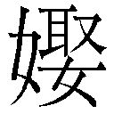に迎へられて、彼所にゆく。三郎の豊雄なるものあり。生長優しく、常に七都風たる事をのみ好みて、八過活心なかりけり。父是を憂ひつつ思ふは、家財をわかちたりとも即て九人の物となさん。さりとて一〇他の家を嗣がしめんも、はた一一うたてき事聞くらんが一二病しき。只一三なすままに生し立てて、一四博士にもなれかし、一五法師にもなれかし、一六命の極は太郎が一七羈物にてあらせんとて、強ひて一八掟をもせざりけり。此の豊雄、一九新宮の二〇神奴安倍の弓麿を師として行き通ひける。
九月下旬、けふはことに二一なごりなく和ぎたる海の、暴に二二東南の雲を生して、小雨そぼふり来る。師が許にて二三傘かりて帰るに、二四飛鳥の二五神秀倉見やらるる辺より、雨もやや頻なれば、其所なる海郎が屋に立ちよる。あるじの老はひ出でて、こは二六大人の弟子の君にてます。かく二七賤しき所に入らせ給ふぞいと恐まりたる事。是敷きて奉らんとて、二八円座の汚なげなるを二九清めてまゐらす。三〇霎時息むるほどは何か厭ふべき。なあわただしくせそとて休らひぬ。外の方に麗しき声して、此の軒しばし恵ませ給へといひつつ入り来るを、奇しと見るに、年は廿にたらぬ女の、顔容三一髪のかかりいと艶やかに、三二遠山ずりの色よき衣着て、三三丫鬟の十四五ばかりの清げなるに、包みし物もたせ、三四しとどに濡れて三五わびしげなるが、豊雄を見て、面さと打ち赤めて恥かしげなる形の貴やかなるに、三六不慮に心動きて、且思ふは、此の辺にかうよろしき人の住むらんを今まで聞えぬ事はあらじを、此は都人の三七三つ山詣せし次に、海愛しくここに遊ぶらん。さりとて三八男だつ者もつれざるぞいと三九はしたなる事かなと思ひつつ、すこし身退きて、ここに入らせ給へ。雨もやがてぞ休みなんといふ。女、しばし宥させ給へとて、四〇ほどなき住ひなれば、四一つい並ぶやうに居るを、見るに四二近まさりして、此の世の人とも思はれぬばかり美しきに、四三心も空にかへる思ひして、女にむかひ、四四貴なるわたりの御方とは見奉るが、三つ山詣やし給ふらん。四五峯の温泉にや出で立ち給ふらん。かう四六すざましき荒礒を何の見所ありて四七狩りくらし給ふ。ここなんいにしへの人の、
四八 くるしくもふりくる雨か三輪が崎
佐野のわたりに家もあらなくに
とよめるは、まこと四九けふのあはれなりける。此の家賤しけれど、おのれが親の五〇目かくる男なり。五一心ゆりて雨休め給へ。そもいづ地旅の御宿りとはし給ふ。御見送りせんも却りて無礼なれば、此の傘もて出で給へといふ。女、いと喜しき御心を五二聞え給ふ。五三其の御思ひに乾してまゐりなん。都のものにてもあらず、此の近き所に年来住みこし侍るが、けふなんよき日とて五四那智に詣で侍るを、暴なる雨の恐ろしさに、やどらせ給ふともしらで、五五わりなくも立ちよりて侍る。ここより遠からねば、此の小休に出で侍らんといふを、五六強に此の傘もていき給へ。五七何の便にも求めなん。雨は五八更に休みたりともなきを。さて御住ひはいづ方ぞ。是より五九使奉らんといへば、新宮の辺にて県の真女児が家はと尋ね給はれ。（＊65）日も暮れなん。御恵のほどを六〇指戴きて帰りなんとて、傘とりて出づるを、六一見送りつも、あるじが簑笠かりて家に帰りしかど、猶 俤の六二露忘れがたく、しばしまどろむ暁の夢に、かの真女児が家に尋ねいきて見れば、門も家もいと大きに造りなし、六三蔀おろし六四簾垂れこめて、ゆかしげに住みなしたり。真女子出迎ひて、御情わすれがたく待ち恋ひ奉る。此方に入らせ給へとて、奥の方にいざなひ、酒菓子種々と管待しつつ、喜しき酔ごこちに、つひに枕をともにしてかたるとおもへば、夜明けて夢さめぬ。六五現ならましかばと思ふ心の六六いそがしきに、朝食も打ち忘れて六七うかれ出でぬ。
新宮の郷に来て、県の真女子が家はと尋ぬるに、更にしりたる人なし。
六八午時かたぶくまで尋ね労ひたるに、かの丫鬟東の方よりあゆみ来る。豊雄見るより大いに喜び、六九娘子の家はいづくぞ。傘もとむとて尋ね来るといふ。丫鬟打ちゑみて、よくも来ませり。こなたに歩み給へとて、前に立ちてゆくゆく、幾ほどもなく、ここぞと聞ゆる所を見るに、門高く造りなし、家も大きなり。蔀おろし簾たれこめしまで、夢の裏に見しと露違はぬを、（＊66）奇しと七〇思ふ思ふ門に入る。丫鬟走り入りて、七一おほがさの主詣で給ふを誘ひ奉るといへば、いづ方にますぞ、こち迎へませといひつつ立ち出づるは真女子なり。豊雄、七二ここに安倍の大人とまうすは、年来七三物学ぶ師にてます。彼所に詣づる便に、傘とりて帰るとて七四推して参りぬ。御住居見おきて侍れば、又こそ詣で来んといふを、真女子強にとどめて、七五まろや、七六努出し奉るなといへば、丫鬟立ちふたがりて、おほがさ強ひて恵ませ給ふならずや。其がむくいに強ひてとどめまゐらすとて、腰を押して七七南面の所に迎へける。板敷の間に七八床畳を設けて、七九几帳、八〇御厨子の飾、八一壁代の絵なども、皆古代のよき物にて、八二倫の人の住居ならず。真女子立ち出でて、故ありて八三人なき家とはなりぬれば、八四実やかなる御饗もえし奉らず。只八五薄酒一杯すすめ奉らんとて、八六高坏平坏の清らなるに、海の物山の物盛りならべて、八七瓶子土器擎げて、まろや酌まゐる。豊雄また夢心して、さむるやと思へど、正に現なるを却りて奇しみゐたる。
客も主もともに酔ごこちなるとき、真女子杯をあげて、豊雄にむかひ、八八花精妙桜が枝の水に八九うつろひなす面に、春吹く風を九〇あやなし、梢九一たちぐく鶯の九二艶ある声していひ出づるは、九三面なきことのいはで病みなんも、九四いづれの神になき名負すらんかし。九五努徒なる言にな聞き給ひそ。故は都の生なるが、父にも母にもはやう離れまゐらせて、乳母の許に成長りしを、此の国の九六受領の下司県の何某に迎へられて伴ひ下りしははやく三とせになりぬ。夫は九七任はてぬ此の春、かりそめの病に死し給ひしかば、便なき身とはなり侍る。都の乳母も尼になりて、行方なき修行に出でしと聞けば、九八彼方も又しらぬ国とはなりぬるをあはれみ給へ。きのふの雨のやどりの御恵みに、信ある御方にこそと九九おもふ物から、一〇〇今より後の齢をもて一〇一御宮仕へし奉らばやと願ふを、一〇二汚き物に捨て給はずば、此の一杯に一〇三千とせの契をはじめなんといふ。豊雄、もとよりかかるをこそと一〇四乱心なる思ひ妻なれば、一〇五塒の鳥の飛び立つばかりには思へど、一〇六おのが世ならぬ身を顧れば、親兄弟のゆるしなき事をと、かつ喜しみ、且恐れみて、頓に答ふべき詞なきを、真女児一〇七わびしがりて、女の浅き心より、一〇八嗚呼なる事をいひ出でて、一〇九帰るべき道なきこそ面なけれ。かう浅ましき身を海にも没らで、人の御心を煩はし奉るは罪深きこと。今の詞は徒ならねども、只酔ごこちの一一〇狂言におぼしとりて、ここの海にすて給へかしといふ。
豊雄、はじめより都人の貴なる御方とは見奉るこそ一一一賢かりき。一一二鯨よる浜に生立ちし身の、かく喜しきことい一一三つかは聞ゆべき。一一四即ての御答もせぬは、親兄に仕ふる身の、おのが物とては爪髪の外なし。何を一一五禄に迎へまゐらせん便もなければ、身の一一六徳なきをくゆるばかりなり。何事をもおぼし耐へ給はば、いかにもいかにも後見し奉らん。一一七孔子さへ倒るる恋の山には、孝をも身をも忘れてといへば、いと喜しき御心を聞きまゐらするうへは、貧しくとも時々ここに一一八住ませ給へ。ここに前の夫の一一九二つなき宝にめで給ふ一二〇帯あり。これ常に帯かせ給へとてあたふるを見れば、金銀を飾りたる太刀の、一二一あやしきまで鍛うたる古代の物なりける。一二二物のはじめに辞みなんは一二三祥あしければとて、とりて納む。今夜はここに明させ給へとて、一二四あながちにとどむれど、まだ一二五赦なき旅寝は、親の一二六罪し給はん。明の夜よく一二七偽りて詣でなんとて出でぬ。其の夜も一二八寝ねがてに明けゆく。
太郎は一二九網子ととのふるとて、一三〇晨て起き出でて、豊雄が閨房の戸の間をふと見入れたるに、消え残りたる灯火の影に、輝々しき太刀を枕に置きて臥したり。あやし。一三一いづちより求めぬらんと一三二おぼつかなくて、戸をあららかに明くる音に目さめぬ。太郎があるを見て、召し給ふかといへば、輝々しき物を枕に置きしは何ぞ。価貴き物は海人の家にふさはしからず。父の見給はばいかに罪し給はんといふ。豊雄、一三三財を費して買ひたるにもあらず。きのふ一三四人の得させしをここに置きしなり。太郎、いかでさる宝をくるる人此の辺にあるべき。一三五あなむつかしの唐言書きたる物を買ひたむるさへ、一三六世の費なりと思へど、父の黙りておはすれば、今までもいはざるなり。其の太刀帯びて一三七大宮の祭を邌るやらん。一三八いかに物に狂ふぞ、といふ声の高きに、父聞きつけて、一三九徒者が何事をか仕出でつる。ここにつれ来よ太郎と呼ぶに、いづちにて求めぬらん、軍将等の佩き給ふべき輝々しき物を買ひたるはよからぬ事、御目のあたりに召して一四〇問ひあきらめ給へ。おのれは網子どもの一四一怠るらんと云ひ捨てて出でぬ。
母、豊雄を召して、さる物一四二何の料に買ひつるぞ。米も銭も太郎が物なり。一四三吾主が物とて何をか持ちたる。日来は一四四為すままにおきつるを、かくて太郎に悪まれなば、天地の中に何国に住むらん。賢き事をも学びたる者が、など是ほどの事一四五わいためぬぞといふ。豊雄、実に買ひたる物にあらず。一四六さる由縁有りて人の得させしを、兄の見咎めてかくのたまふなり。父、何の一四七誉ありてさる宝をば人のくれたるぞ。一四八更におぼつかなき事。只今所縁かたり出でよと罵る。豊雄、此の事只今は一四九面俯なり。人伝に申し出で侍らんといへば、親兄にいはぬ事を誰にかいふぞと声あららかなるを、太郎の嫁の一五〇刀自傍にありて、此の事一五一愚なりとも聞き侍らん。入らせ給へと宥むるに、一五二つい立ちていりぬ。
豊雄、刀自にむかひて、兄の見咎め給はずとも、密に姉君を一五三かたらひてんと思ひ設けつるに、一五四速く責まるる事よ。一五五かうかうの人の女のはかなくてあるが、後見してよとて賜へるなり。一五六己が世しらぬ身の、御赦さへなき事は重き一五七勘当なるべければ、今さら悔ゆるばかりなるを、姉君よく憐み給へといふ。刀自打ち笑みて、男子のひとり寝し給ふが、兼ねて一五八いとほしかりつるに、いとよき事ぞ。愚なりともよく一五九いひとり侍らんとて、其の夜太郎に、かうかうの事なるは幸におぼさずや。父君の前をもよきにいひなし給へといふ。太郎眉を顰めて、あやし、此の国の守の下司に県の何某と云ふ人を聞かず。我が家一六〇保正なればさる人の亡り給ひしを聞えぬ事あらじを。まづ太刀ここにとりて来よといふに、刀自やがて携へ来るを、よくよく見をはりて、長噓をつぎつつもいふは、ここに恐ろしき事あり。近来都の大臣殿の一六一御願の事みたしめ給ひて、一六二権現におほくの宝を奉り給ふ。さるに此の神宝ども、一六三御宝蔵の中にて頓に失せしとて、一六四大宮司より国の守に訴へ出で給ふ。守、此の賊を探り捕ふために、一六五助の君文室の広之、大宮司の館に来て、今専に此の事を一六六はかり給ふよしを聞きぬ。此の太刀一六七いかさまにも下司などの帯くべき物にあらず。猶父に見せ奉らんとて、一六八御前に持ちいきて、かうかうの恐ろしき事の一六九あなるは、いかが計らひ申さんといふ。父面を青くして、こは一七〇浅ましき事の出できつるかな。日来は一七一一毛をもぬかざるが、何の報にてかう良からぬ心や出できぬらん。一七二他よりあらはれなば此の家をも絶されん。祖の為子孫の為には、不孝の子一人惜しからじ。明は訴へ出でよといふ。
太郎、夜の明くるを待ちて、大宮司の舘に来り、しかじかのよしを申し出でて、此の太刀を見せ奉るに、大宮司驚きて、是なん大臣殿の献物なりといふに、助聞き給ひて、猶失せし物問ひあきらめん。召捕れとて、武士ら十人ばかり、太郎を前にたててゆく。豊雄、かかる事をもしらで書見ゐたるを、武士ら押しかかりて捕ふ。こは何の罪ぞといふをも聞き入れず縛めぬ。父母、太郎夫婦も、今は一七三浅ましと嘆きまどふばかりなり。一七四公庁より召し給ふ、疾くあゆめとて、一七五中にとりこめて舘に追ひもてゆく。助、豊雄をにらまへて、你神宝を盗みとりしは例なき一七六国津罪なり。猶種々の財は一七七いづちに隠したる。明らかにまうせといふ。豊雄一七八漸此の事を覚り、涙を流して、おのれ一七九更に盗をなさず。かうかうの事にて、県の何某の女が、前の夫の帯びたるなりとて得させしなり。今にもかの女召して、おのれが罪なき事を覚らせ給へ。助いよよ怒りて、我が下司に県の姓を名のる者ある事なし。かく偽るは刑ますます大なり。豊雄、かく捕はれていつまで偽るべき。一八〇あはれかの女召して問はせ給へ。助、武士らに向ひて、県の真女子が家はいづくなるぞ。一八一渠を押して捕へ来れといふ。
武士らかしこまりて、又豊雄を押したてて彼所に行きて見るに、厳しく造りなせし門の柱も朽ちくさり、軒の瓦も大かたは砕けおちて、一八二草しのぶ生ひさがり、人住むとは見えず。豊雄是を見て、只一八三あきれにあきれゐたる。武士らかけ廻りて、一八四ちかきとなりを召しあつむ。一八五木伐る老、一八六米かつ男ら、恐れ惑ひて一八七跪る。武士他らにむかひて、此の家何者が住みしぞ。県の何某が女のここにあるはまことかといふに、鍛冶の翁はひ出でて、さる人の名は一八八かけてもうけたまはらず。此の家三とせばかり前までは、村主の何某といふ人の、一八九賑はしくて住み侍るが、一九〇筑紫に商物積みてくだりし、其の船行方なくなりて後は、家に残る人も散々になりぬるより、絶えて人の住むことなきを、此の男のきのふここに入りて、漸して帰りしを奇しとて、此の一九一漆師の老がまうされしといふに、一九二さもあれ、よく見極めて殿に申さんとて、門押しひらきて入る。
家は外よりも荒れまさりけり。なほ奧の方に進みゆく。前栽広く造りなしたり。池は水あせて水草も皆枯れ、一九三野ら藪生ひ一九四かたぶきたる中に、大きなる松の吹き倒れたるぞ物すざまし。客殿の格子戸をひらけば、腥き風の一九五さと吹きおくりきたるに恐れまどひて、人々後にしりぞく。豊雄只一九六声を吞みて嘆きゐる。武士の中に巨勢の熊檮なる者、一九七胆ふとき男にて、人々我が後に従きて来れとて、一九八板敷をあららかに踏みて進みゆく。塵は一寸ばかり積りたり。鼠の糞一九九ひりちらしたる中に、古き二〇〇帳を立てて、花の如くなる女ひとりぞ座る。（＊67）熊檮、女にむかひて、国の守の召しつるぞ、急ぎまゐれといへど、答もせであるを、近く進みて捕ふとせしに、忽ち地も裂くるばかりの二〇一霹靂鳴響くに、許多の人逃ぐる間もなくてそこに倒る。然て見るに、女はいづち行きけん見えずなりにけり。
此の床の上に輝々しき物あり。人々恐る恐るいきて見るに、二〇二狛錦、二〇三呉の綾、二〇四倭文、二〇五縑、楯、二〇六槍、二〇七靭、鍬の類、此の失せつる二〇八神宝なりき。武士らこれをとりもたせて、怪しかりつる事どもを詳に訴ふ。助も大宮司も妖怪のなせる事をさとりて、豊雄を責む事をゆるくす。されど二〇九当罪免れず、守の舘にわたされて牢裏に繫がる。大宅の父子多くの物を二一〇賄して罪を贖ふによりて、百日がほどに赦さるる事を得たり。かくて二一一世にたち接らんも面俯なり。姉の大和におはすを訪ひて、しばし彼所に住まんといふ。げにかう憂きめ見つる後は重き病をも得るものなり。二一二ゆきて月ごろを過せとて、人を添へて出でたたす。
二郎の姉が家は、二一三石榴市といふ所に、田辺の金忠といふ商人なりける。豊雄が訪ひ来るを喜び、かつ二一四月ごろの事どもをいとほしがりて、いついつまでもここに住めとて、二一五念頃に労りけり。年かはりて二月になりぬ。此の石榴市といふは、二一六泊瀬の寺ちかき所なりき。二一七仏の御中には泊瀬なんあらたなる事を、唐土までも聞えたるとて、都より辺鄙より詣づる人の、春はことに多かりけり。詣づる人は必ずここに宿れば、軒を並べて旅人をとどめける。
田辺が家は御明灯心の類を商ひぬれば、二一八所せく人の入りたちける中に、都の人の忍びの詣と見えて、いと二一九よろしき女一人、丫鬟一人、二二〇薫物もとむとてここに立ちよる。此の丫鬟豊雄を見て、二二一吾が君のここにいますはといふに、驚きて見れば、かの真女子、まろやなり。あな恐ろしとて内に隠るる。金忠夫婦、こは何ぞといへば、かの二二二鬼ここに逐ひ来る。あれに近寄り給ふなと二二三隠れ惑ふを、人々、そはいづくにと立ち騷ぐ。真女子入り来りて、人々あやしみ給ひそ。吾夫の君な恐れ給ひそ。二二四おのが心より罪に堕し奉る事の悲しさに、御有家もとめて、事の由縁をもかたり、二二五御心放せさせ奉らんとて、御住家尋ねまゐらせしに、かひありてあひ見奉る事の喜しさよ。あるじの君よく聞きわけて給へ。我もし怪しき物ならば、此の二二六人繁きわたりさへあるに、二二七かうのどかなる昼をいかにせん。二二八衣に縫目あり、日にむかへば影あり。此の二二九正しきことわりを思しわけて、御疑ひを解かせ給へ。
豊雄漸人ごこちして、你正しく人ならぬは、我捕はれて、武士らとともにいきて見れば、きのふにも似ず二三〇浅ましく荒果てて、まことに鬼の住むべき宿に一人居るを、人々ら捕へんとすれば、忽ち二三一青天霹靂を震うて、跡なく二三二かき消えぬるをまのあたり見つるに、又逐ひ来て何をかなす。すみやかに去れといふ。真女子涙を流して、まことにさこそおぼさんはことわりなれど、二三三妾が言をもしばし聞かせ給へ。君公庁に召され給ふと聞きしより、かねて憐をかけつる隣の翁をかたらひ、頓に二三四野らなる宿のさまをこしらへし。我を捕んずときに鳴神響かせしは、まろやが二三五計較りつるなり。其の後船もとめて難波の方に遁れしかど、御消息しらまほしく、二三六ここの御仏にたのみを懸けつるに、二三七二本の杉のしるしありて、二三八喜しき瀬にながれあふことは、ひとへに二三九大悲の御徳かうむりたてまつりしぞかし。種々の神宝は何とて女の盗み出すべき。前の夫の良からぬ心にてこそあれ。よくよくおぼしわけて、二四〇思ふ心の露ばかりをもうけさせ給へとて、さめざめと泣く。
豊雄或は疑ひ、或は憐みて、かさねていふべき詞もなし。金忠夫婦、真女子がことわりの明らかなるに、此の二四一女しきふるまひを見て、努疑ふ心もなく、豊雄のもの語りにては、世に恐ろしき事よと思ひしに、二四二さる例あるべき世にもあらずかし。はるばると二四三尋ねまどひ給ふ御心ねのいとほしきに、豊雄肯はずとも、我々とどめまゐらせんとて、一間なる所に迎へける。ここに一日二日を過すままに、金忠夫婦が二四四心をとりて、ひたすら嘆きたのみける。其の志の篤きに愛でて、豊雄をすすめてつひに婚儀をとりむすぶ。豊雄も日々に心とけて、もとより容姿のよろしきを愛でよろこび、千とせをかけて契るには、二四五葛城や高間の山に夜々ごとにたつ雲も、二四六初瀬の寺の暁の鐘に雨収まりて、二四七只あひあふ事の遅きをなん恨みける。
三月にもなりぬ。金忠、豊雄夫婦にむかひて、都わたりには似るべうもあらねど、二四八さすがに紀路にはまさりぬらんかし。二四九名細の吉野は春はいとよき所なり。二五〇三船の山、二五一菜摘川、二五二常に見るとも飽かぬを、此の頃はいかにおもしろからん。二五三いざ給へ、出で立ちなんといふ。真女児うち笑みて、二五四よき人のよしと見給ひし所は、都の人も見ぬを恨に聞え侍るを、我が身稚きより、人おほき所、或は道の長手をあゆみては、必ず二五五気のぼりてくるしき病あれば、二五六従駕にえ出で立ち侍らぬぞいと憂けれ。二五七山土産必ず待ちこひ奉るといふを、そはあゆみなんこそ病も苦しからめ。二五八車こそもたらね、いかにもいかにも土は踏ませまゐらせじ。留り給はんは、豊雄のいかばかり二五九心もとなかりつらんとて、夫婦すすめたつに、豊雄も、かう二六〇たのもしくの給ふを、二六一道に倒るるともいかでかはと聞ゆるに、二六二不慮ながら出でたちぬ。人々二六三花やぎて出でぬれど、真女子が麗なるには似るべうもあらずぞ見えける。
何某の院はかねて二六四心よく聞えかはしければ、ここに訪ふ。主の僧迎へて、此の春は遅く詣で給ふことよ。花もなかばは散り過ぎて、二六五鶯の声もやや流るめれど、猶よき方に二六六しるべし侍らんとて、夕食いと清くして食はせける。二六七明けゆく空いたう霞みたるも、二六八晴れゆくままに見わたせば、此の院は高き所にて、ここかしこ僧坊どもあらはに見おろさるる。山の鳥どもも二六九そこはかとなく囀りあひて、木草の花色々に咲きまじりたる、同じ山里ながら目さむるここちせらる。初詣には滝ある方こそ見所はおほかめれとて、彼方にしるべの人乞ひて出でたつ。谷を繞りて下りゆく。いにしへ二七〇行幸の宮ありし所は、二七一石はしる滝つせのむせび流るるに、ちひさき鰷どもの水に逆ふなど、目もあやにおもしろし。二七二檜破子打ち散して喰ひつつあそぶ。
岩がねづたひに来る人あり。髪は二七三績麻を二七四わがねたる如くなれど、手足いと健やかなる翁なり。此の滝の下にあゆみ来る。人々を見てあやしげにまもりたるに、真女子もまろやも此の人を二七五背に見ぬふりなるを、翁、渠二人をよくまもりて、あやし、此の邪神、など人をまどはす。翁がまのあたりをかくても有るやとつぶやくを聞きて、此の二人忽ち躍りたちて、滝に飛び入ると見しが、水は大虚に湧きあがりて見えずなるほどに、雲摺る墨をうちこぼしたる如く、雨二七六篠を乱してふり来る。翁、人々の慌忙惑ふを二七七まつろへて人里にくだる。
二七八賤しき軒にかがまりて、生けるここちもせぬを、翁、豊雄にむかひ、熟二七九そこの面を見るに、此の二八〇隠神のために悩まされ給ふが、吾救はずばつひに命をも失ひつべし。後よく慎み給へといふ。豊雄地に額着て、此の事の始めよりかたり出でて、猶二八一得させ給へとて、恐れみ敬ひて願ふ。翁、さればこそ、此の邪神は年経たる虵なり。かれが性は婬なる物にて、二八二牛と孳みては麟を生み、馬とあひては竜馬を生むといへり。二八三此の魅はせつるも、はたそこの秀麗に二八四姧けたると見えたり。かくまで執ねきを、よく慎み給はずば、おそらくは命を失ひ給ふべしといふに、人々いよよ恐れ惑ひつつ、翁を崇まへて、二八五遠津神にこそと拝みあへり。翁打ち笑みて、おのれは神にもあらず。二八六大倭の神社に仕へまつる当麻の酒人といふ翁なり。二八七道の程見たててまゐらせん。いざ給へとて出でたてば、人々後につきて帰り来る。
明の日二八八大倭の郷にいきて、翁が二八九恵を謝し、且二九〇美濃絹三疋、二九一筑紫綿二屯を遺り来り、猶此の妖災の二九二身禊し給へとつつしみて願ふ。翁これを納めて、二九三祝部らにわかちあたへ、自は一疋一屯をもとどめずして、豊雄にむかひ、二九四畜你が秀麗に姧けて二九五你を纏ふ。你又畜が仮の化に魅はされて二九六丈夫心なし。今より二九七雄気してよく心を静まりまさば、此らの邪神を逐はんに翁が力をもかり給はじ。ゆめゆめ心を静まりませとて、実やかに覚しぬ。豊雄夢のさめたるここちに、二九八礼言尽きずして帰り来る。金忠にむかひて、此の年月畜に魅はされしは、己が心の正しからぬなりし。親兄の孝をもなさで、君が家の二九九羈ならんは三〇〇由縁なし。御恵いとかたじけなけれど、又も参りなんとて、紀の国に帰りける。
父母、太郎夫婦、此の恐ろしかりつる事を聞きて、いよよ豊雄が過ならぬを憐み、かつは妖怪の執ねきを恐れける。かくて三〇一鰥にてあらするにこそ。妻むかへさせんとてはかりける。三〇二芝の里に芝の庄司なるものあり。女子一人もてりしを、三〇三大内の三〇四采女にまゐらせてありしが、此の度いとま申し給はり、此の豊雄を聟がねにとて、媒氏をもて大宅が許へいひ納るる。よき事なりて即て三〇五因をなしける。かくて都へも迎の人を登せしかば、此の采女富子なるもの、よろこびて帰り来る。年来の大宮仕へに馴れこしかば、万の行儀よりして、姿なども花やぎ勝りけり。豊雄ここに迎へられて見るに、此の富子がかたちいとよく、三〇六万心に足ひぬるに、かの蛇が懸想せしことも三〇七おろおろおもひ出づるなるべし。はじめの夜は事なければ書かず。
二日の夜、よきほどの酔ごこちにて、年来の大内住に、辺鄙の人は三〇八はたうるさくまさん。三〇九かの御わたりにては、何の三一〇中将宰相の君などいふに三一一添ひぶし給ふらん。今更にくくこそおぼゆれなど戯るるに、富子三一二即て面をあげて、三一三古き契を忘れ給ひて、かく三一四ことなる事なき人を三一五時めかし給ふこそ、三一六こなたよりまして悪くあれといふは、姿こそかはれ、正しく真女子が声なり。聞くにあさましう、身の毛もたちて恐ろしく、只あきれまどふを、女打ちゑみて、三一七吾が君な怪しみ給ひそ。三一八海に誓ひ山に盟ひし事を速くわすれ給ふとも、三一九さるべき縁のあれば又もあひ見奉るものを、三二〇他し人のいふことをまことしくおぼして、強に遠ざけ給はんには、恨み報いなん。紀路の山々さばかり高くとも、君が血をもて峯より谷に灌ぎくださん。三二一あたら御身をいたづらになし果て給ひそといふに、三二二只わななきにわななかれて、今や三二三とらるべきここちに三二四死に入りける。屛風のうしろより、吾が君いかに三二五むつかり給ふ。かうめでたき御契なるはとて出づるはまろやなり。見るに又胆を飛ばし、眼を閉ぢて伏向に臥す。三二六和めつ驚しつ、かはるがはる物うちいへど、只死に入りたるやうにて夜明けぬ。
かくて閨房を免れ出でて、庄司にむかひ、かうかうの恐ろしき事あなり。これいかにして放けなん。よく計り給へと三二七いふも、背にや聞くらんと、声を小やかにしてかたる。庄司も妻も面を青くして嘆きまどひ、こはいかにすべき。ここに都の三二八鞍馬寺の僧の、年々熊野に詣づるが、きのふより此の三二九向岳の三三〇蘭若に宿りたり。いとも三三一験なる法師にて、凡そ三三二疫病、妖災、蝗などをもよく祈るよしにて、此の郷の人は貴みあへり。此の法師三三三請へてんとて、あわただしく三三四呼びつげるに、漸して来りぬ。しかじかのよしを語れば、此の法師鼻を高くして、これらの三三五蠱物らを捉らんは何の難き事にもあらじ。必ず三三六静まりおはせとやすげにいふに、人々心落ちゐぬ。法師まづ三三七雄黄をもとめて薬の水を調じ、小瓶に湛へて、かの閨房にむかふ。人々驚ぢ隠るるを、法師嘲みわらひて、老いたるも童も必ずそこにおはせ、此の虵只今捉りて見せ奉らんとてすすみゆく。閨房の戸あくるを遅しと、かの蛇頭をさし出して法師にむかふ。此の頭三三八何ばかりの物ぞ。此の戸口に充満て、雪を積みたるよりも白く輝々しく、眼は鏡の如く、角は枯木の如、三尺余りの口を開き、紅の舌を吐いて、只一吞に飲むらん勢をなす。あなやと叫びて、三三九手にすゑし小瓶をもそこに打ちすてて、たつ足もなく、三四〇展転びはひ倒れて、からうじてのがれ来たり、人々にむかひ、あな恐ろし、三四一祟ります御神にてましますものを、など法師らが祈り奉らん。此の手足なくば、三四二はた命失ひてんといふいふ三四三絶え入りぬ。人々扶け起すれど、すべて面も肌も黒く赤く染めなしたるが如に、熱き事焚火に三四四手さすらんにひとし。毒気にあたりたると見えて、後は只三四五眼のみはたらきて物いひたげなれど、声さへなさでぞある。水灌ぎなどすれど、つひに死にける。これを見る人、いよよ三四六魂も身に添はぬ思ひして泣き惑ふ。
豊雄すこし三四七心を収めて、かく験なる法師だも祈り得ず、執ねく我を纏ふものから、三四八天地のあひだにあらんかぎりは三四九探し得られなん。おのが命ひとつに人々を苦しむるは三五〇実ならず。今は三五一人をもかたらはじ。三五二やすくおぼせとて閨房にゆくを、庄司の人々、こは物に狂ひ給ふかといへど、更に聞かず顔にかしこにゆく。戸を静かに明くれば、物の騒しき音もなくて、此の二人ぞむかひゐたる。富子、豊雄にむかひて、君三五三何の讐に我を捉へんとて人をかたらひ給ふ。此の後も仇をもて報い給はば、君が御身のみにあらじ、此の郷の人々をもすべて苦しきめ見せなん。ひたすら三五四吾が貞操をうれしとおぼして、三五五徒々しき御心をなおぼしそと、いと三五六けさうじていふぞ三五七うたてかりき。豊雄いふは、世の諺にも聞ゆることあり。三五八人かならず虎を害する心なけれども、虎反りて人を傷る意ありとや。你、三五九人ならぬ心より、我を纏うて幾度かからきめを見するさへあるに、三六〇かりそめ言をだにも此の恐ろしき報いをなんいふは、いと三六一むくつけなり。されど吾を慕ふ心ははた世人にもかはらざれば、三六二ここにありて人々の嘆き給はんがいたはし。此の富子が命ひとつたすけよかし。三六三然て我をいづくにも連れゆけといへば、いと喜しげに点頭きをる。
又立ち出でて庄司にむかひ、かう三六四浅ましきものの添ひてあれば、ここにありて人々を苦しめ奉らんはいと三六五心なきことなり。只今暇給はらば、三六六娘子の命も恙なくおはすべしといふを、庄司更に肯けず、我三六七弓の本末をもしりながら、かく三六八いひがひなからんは、大宅の人々のおぼす心もはづかし。猶計較りなん。三六九小松原の三七〇道成寺に、三七一法海和尚とて貴き祈の師おはす。今は三七二老いて室の外にも出でずと聞けど、我が為には三七三いかにもいかにも捨て給はじとて、馬にていそぎ出でたちぬ。道遥なれば夜なかばかりに蘭若に到る。老和尚三七四眼蔵をゐざり出でて、此の物がたりを聞きて、そは浅ましくおぼすべし。今は老朽ちて三七五験あるべくもおぼえ侍らねど、君が家の災を黙してやあらん。三七六まづおはせ。法師も即て詣でなんとて、三七七芥子の香にしみたる袈裟とり出でて、庄司にあたへ、畜を三七八やすくすかしよせて、これをもて頭に打ち帔け、力を出して押しふせ給へ。手弱くあらばおそらくは逃げさらん。よく三七九念じて、よくなし給へと実やかに教ふ。庄司三八〇よろこぼひつつ馬を飛ばしてかへりぬ。
豊雄を密かに招きて、此の事よくしてよとて袈裟をあたふ。豊雄これを懐に隠して閨房にいき、庄司今はいとま三八一たびぬ、三八二いざたまへ、出で立ちなんといふ。いと喜しげにてあるを、此の袈裟とり出でてはやく打ち帔け、三八三力をきはめて押しふせぬれば、あな苦し、你何とてかく三八四情なきぞ。しばしここ放せよかしといへど、猶力にまかせて押しふせぬ。法海和尚の輿やがて入り来る。庄司の人々に扶けられて三八五ここにいたり給ひ、口のうち三八六つぶつぶと念じ給ひつつ、豊雄を退けて、かの袈裟とりて見給へば、富子は三八七現なく伏したる上に、白き蛇の三尺あまりなる蟠りて動きだもせずてぞある。老和尚これを捉へて、徒弟が捧げたる三八八鉄鉢に納れ給ふ。猶三八九念じ給へば、屛風の背より、三九〇尺ばかりの小蛇はひ出づるを、三九一是をも捉りて鉢に納れ給ひ、かの袈裟をもてよく封じ給ひ、そがままに輿に乗らせ給へば、人々掌をあはせ涙を流して敬ひ奉る。
蘭若に帰り給ひて、三九二堂の前を深く掘らせて、鉢のままに埋めさせ、三九三永劫があひだ世に出ることを戒め給ふ。今猶三九四蛇が塚ありとかや。庄司が女子はつひに病にそみてむなしくなりぬ。豊雄は命恙なしとなんかたりつたへける。
一 蛇の化身が一青年につきまとう愛欲の執念を主題としたところからこの題がでた。
二 和歌山県新宮市三輪崎。海辺で、歌枕。
三 漁場で大いに儲けて。
四 大魚も小魚もすべて漁獲して。古事記・祝詞などに見える語。
五 太郎は名前とも長男の意ともとれるが、ここは太郎という名の長男ととっていい。
六 二番目の子。
七 風流なこと。
八 実直に生業を営む気持。
九 他人にとられてしまうだろう。
一〇 養子にやって他家をつがせるのも。
一一 いやなこと。
一二 心苦しい。
一三 したいことをさせながら。
一四 ここは、学者。
一五 ここは、僧侶。
一六 豊雄の一生は。
一七 厄介者。
一八 しつけ。
一九 新宮市にある熊野権現速玉神社。熊野三山（本宮・新宮・那智）の一。
二〇 ここは、神官。
二一 余波。
二二 この地方は東南から天気がくずれる。雷峯怪蹟「霧鎖二東南一、早落下微々的細雨来了」。
二三 雨傘。
二四 新宮市にある阿須賀神社。
二五 宝物殿であるが、ここは本殿とみてよい。
二六 旦那様の所の末の御子息。
二七 むさくるしいあばら家。
二八 円く渦に編んだ敷物。
二九 塵をはらって。
三〇 ほんのしばらく雨宿りする間だから何でもかまわない。
三一 髪の形が大層あでやかで。
三二 遠山の様を色うつくしく摺り出して模様とした着物。
三三 年若い侍女。中国白話小説の用字。
三四 ぐっしょりと濡れて。
三五 いかにも困った様子。
三六 思わずも。
三七 本宮・新宮・那智の熊野三山へ参詣すること。
三八 下僕らしい者。
三九 中途半端な。不用意な。
四〇 せまい住居。
四一 そろって並ぶ。
四二 近くでみると一層うつくしく見えること。
四三 心がぽーっとして。
四四 高貴の家の御方。
四五 和歌山県田辺市の西、四村にある湯の峰温泉。
四六 殺風景な。
四七 見物して一日をくらす。
四八 佐野は三輪崎の西南。万葉集三、長忌寸奥麻呂の歌。秋成は「金砂」でこの歌に注している。
四九 今日のこの風情とおなじである。
五〇 世話をしている男。
五一 心おきなく。くつろいで。
五二 おっしゃって下さる。
五三 御親切なあたたかい御情で濡れた着物をほしてまいりましょう。思ひの「ひ」を「火」にかけ、乾すは縁語。（＊64）
五四 和歌山県東牟婁郡那智勝浦町にある那智権現と青岸渡寺。熊野三山の一。
五五 見境もなく。分別もなく。
五六 しいて。無理に。
五七 何かのついでにいただきにまいりましょう。
五八 雨はいっこうに小やみになったとも思えないのに。
五九 使を出しましょう。
六〇 さし戴くに、傘の縁語「さす」をかけた。
六一 見送って。
六二 どうしても忘れられず。
六三 日光をよけ風雨を防ぐための横戸。ふつう上下二つになっていて、上はあげさげができ、下はとりはずせる。寝殿造りなどの高貴な邸宅に多い。
六四 簾をふかくおろして。簾は蔀の内側にかける。
六五 この夢が現実であったならば、どんなにうれしかろう。
六六 そわそわとしておちつかないので。
六七 心もそぞろにうきたって家を出た。
六八 昼すぎまで。
六九 お嬢さま。
七〇 思いながら。
七一 雨傘を貸して下さった方がいらしたのを御案内してまいりました。
七二 新宮に、の意にとっておく。
七三 学問の先生。
七四 ぶしつけながら、こちらから推参しました。
七五 丫鬟の名。
七六 けっして。必ず。
七七 表座敷。
七八 客があると板敷に敷く畳。
七九 台に柱を二本たて横木を渡してそこに帳をかけた家具。隔てのために座側にたてた。
八〇 調度品などをおさめる両びらきの置戸棚。
八一 壁のかわりに長押からおろし、また母屋の廂の間をさえぎった絹。御簾と併用した。
八二 身分のない人。
八三 主人のいない家とも、人手のない家とも解せる。
八四 行き届いたおもてなし。
八五 粗酒。謙辞。
八六 食物を盛る器。足のあるのが高坏、足のないのが平坏。
八七 酒器と素焼きの杯。
八八 「桜」の枕詞。
八九 映る。
九〇 巧みにあしらう。
九一 立ちくぐる。とびまわる。
九二 鶯の如く美しく妙なる声。
九三 恥かしいことだと打ちあけずに心悩み、焦れ死にでもしてしまったら。
九四 神のたたりだと、何もしらない神にまで無実の罪をきせることになるであろう。伊勢物語、八九「人知れずわれ恋ひ死なばあぢきなくいづれの神になき名おふせむ」。
九五 けっして浮気心でいうあだごととお聞き下さいますな。
九六 国守の下役人。
九七 四年の任期がまだ終らないこの春に。
九八 生まれ故郷の都も。
九九 思いますので。
一〇〇 今後の生涯をもって。
一〇一 妻としてあなたのそばにお仕えしたい。
一〇二 けがらわしい女だと。
一〇三 末長い夫婦の契り。
一〇四 心乱れるまでに思い慕っていた女であるから。
一〇五 「飛び立つ」の序詞。
一〇六 親がかりの身。
一〇七 つらく思って。
一〇八 おろかなこと。
一〇九 ひっこみのつかないのが恥かしい。
一一〇 冗談。たわむれごと。
一一一 自分の推測が当っていた。
一一二 熊野灘は鯨の寄る浜として名高い。
一一三 いつ聞く事ができようか。
一一四 即答。
一一五 結納。結婚費用。
一一六 財産。
一一七 孔子のような聖人でさえよろめく恋のためには。
一一八 お通い下さい。夫が妻の許に通う古代の結婚形態。
一一九 この上ない宝として。
一二〇 帯びるもの、太刀。
一二一 ものすごいまでに。
一二二 めでたいことのはじめに。
一二三 縁起がわるい。
一二四 しきりに。
一二五 親の許可をえていない外泊。
一二六 叱るでしょう。
一二七 口実をもうけてまいりましょう。
一二八 目がさえて安眠できずに。
一二九 網をひく漁師を召集してそれぞれの部署に配置するために。
一三〇 早朝。
一三一 どこから手に入れてきたのであろう。
一三二 不審に思って。
一三三 金をはらって。
一三四 人がくれたのを。
一三五 こむずかしい漢字の書籍を買い集めるのさえ。
一三六 ひどい無駄づかい
一三七 新宮速玉神社の祭礼の行列に加わってねり歩くつもりだろう。邌るは、ようすをつくって歩く。
一三八 何という狂気じみたことをするのか。
一三九 厄介者。豊雄をさす。
一四〇 問いただして下さい。
一四一 なまけるとこまるから、浜の方へ行ってくる。
一四二 何にしようと思って。
一四三 おまえ。対称代名詞。
一四四 するままにさせておいたが。
一四五 わきまえないのか。
一四六 しかるべき理由。
一四七 手柄。功績。
一四八 さっぱり腑におちないことだ。
一四九 恥かしいこと。面目ないこと。
一五〇 主婦。
一五一 私はふつつか者ですが。
一五二 一緒にたって。
一五三 相談して力になってもらおうと。
一五四 はやくも見つかって叱られてしまったことだ。
一五五 これこれこうした素姓の人の妻で、夫を失って頼りのない人が。
一五六 まだ独立せずに、部屋ずみの分際で。
一五七 勘当という重い処罰。勘当は父から絶縁放逐されること。
一五八 気の毒。あわれ。
一五九 うまくはなして承諾を得るようにしてみましょう。
一六〇 ここは村長、庄屋。
一六一 御祈願が成就なさってそのお礼として。
一六二 新宮（熊野権現）。
一六三 新宮はふるくは宝蔵なく、宝物は本殿に納めてあり、享保前後に宝蔵ができた。
一六四 「ダイグジ」と訓ませている。大社の神官の長。
一六五 国司の次官。
一六六 詮議する。
一六七 どうみても。
一六八 父の前に。
一六九 あるのは。
一七〇 とんでもないこと。たいへんなこと。
一七一 他人のものはたとえ毛一本なりともとらないのに。白娘子永鎮雷峰塔・孟子等にこの語がある。
一七二 自首しないで、他人の口から露顕したら。
一七三 情けないことだ。
一七四 国司の庁。役所。
一七五 真中にとりかこんで。
一七六 もとの意は、天津罪に対して、国土で行なわれた罪。ここでは国の掟をやぶった罪。祝詞に見える語。
一七七 どこに。
一七八 ようやく捕縛された理由がわかり。
一七九 けっして。
一八〇 どうか。なにとぞ。
一八一 この男（豊雄）を先におしたてていって。
一八二 忍草の一種。軒しのぶ。
一八三 まったく茫然自失とした状態。
一八四 近所の者たちをよびあつめた。
一八五 きこりの老人。
一八六 米搗（つ）き男。
一八七 うずくまる。古語。
一八八 ちっとも。ついぞ。
一八九 家豊かに人も大勢使って。
一九〇 ここは、九州。
一九一 漆細工をする職人。
一九二 ともかくも。
一九三 雑草が生え放題に生え茂っている藪。
一九四 高く茂っているので先が傾いている状態。
一九五 さっと。
一九六 驚愕のために声も出ずに。
一九七 度胸のすわった男。
一九八 板張りのゆか。
一九九 体外へ排出する意。
二〇〇 トバリとよめば垂れ絹、チョウとよめば几帳。どちらにもとれるが、几帳ととった方がよい。
二〇一 急にはげしくなる雷。
二〇二 高麗国より渡来した錦で、高価な舶来品。
二〇三 中国から渡来した綾織物で、高価な舶来品。
二〇四 穀や麻などで織った布で、青や赤の糸を用いて乱文を織りだし、帯などに用いた。
二〇五 固織。目のつんだ絹織物。
二〇六 突きさすのに用いる武器。
二〇七 矢を入れて背中に負う具。やなぐい、えびらの類で、木製・銅製がある。
二〇八 新宮から紛失した宝物。
二〇九 当面の罪。理由のいかんにかかわらず盗品をもっていたという罪。
二一〇 金品を贈って刑罰を軽くしてもらうこと。
二一一 世間と交際することも。故郷の人に顔むけすることも。豊雄のことば。
二一二 むこうへいって、何か月か暮してこい。
二一三 奈良県桜井市金屋から東方にあり、初瀬観音への参道で、門前市。椿市、海柘榴市とも書く。
二一四 この数か月来の災難に同情して。
二一五 親切に。手厚く。
二一六 奈良県桜井市初瀬にある、新義真言宗豊山派総本山、豊山神楽院長谷寺。名刹として平安朝以来、皇室・貴族の信仰がさかんであった。
二一七 諸仏の中では初瀬の観音こそとりわけ霊験あらたかであるということは、遠く中国にまでその評判が伝わっている。源氏物語、玉鬘「仏の御中には、はつせなん、日の本のうちには、あらたなるしるしあらはし給ふと、もろこしにだにきこえあんなる」。
二一八 店内も狭いほど客がたてこんでいる中に。
二一九 上品でうつくしい女。
二二〇 数種の香をねりあわせてつくった煉香。
二二一 旦那様。
二二二 妖怪、魔性をいう。
二二三 うろたえながらしきりに隠れようとするのを。
二二四 私のいたらない心から夫を罪におとしいれたこと。
二二五 御安心させようと思って。
二二六 人出の多いところ。
二二七 そのうえこんなのどかな昼日中に、どうしてあらわれることができようか。
二二八 妖怪変化が人間に化けたものは、その着物に縫目なく、太陽に照らされて影がないといわれる。白娘子永鎮雷峰塔に「我怎的是鬼怪、衣裳有レ縫、対レ日有レ影」とある。
二二九 正しい道理をよく御判断になって。
二三〇 あきれるばかり。
二三一 青空の上天気に急にはげしく雷がなって。
二三二 主語は真女児。
二三三 私。女子の自称。
二三四 荒れ果てた野原のような家の様子。
二三五 はかりだましたこと。計略。
二三六 初瀬の観世音。
二三七 初瀬古川の川辺に向いあっている二本杉のように、祈りのかいあって二人は再会できた。古今集一九「初瀬川ふる川の辺に二本ある杉、年をへてまたもあひ見むふた本ある杉」。源氏物語、玉鬘・手習などにも記されている。（＊68）
二三八 うれしくもまためぐりあうことができたのは。瀬は、機会、折。「瀬」「ながれあふ」は、川の縁語。源氏物語、玉鬘に見えている。
二三九 観世音菩薩の広大無辺なおめぐみ。
二四〇 あなたを慕う私の気持のほんのすこしでもおくみとり下さい。
二四一 女らしい可憐な。
二四二 妖怪変化などが人間に化けてあらわれるはずのないいまの時世。
二四三 あちこちと苦労してたずねる。
二四四 気にいるようにその機嫌をとって。
二四五 葛城の高間山に夜ごと立つ雲は、雨をふらせるが。奈良県と大阪府・和歌山県との境にある葛城山脈の主峰。葛城山・金剛山。夜と暁、雲と雨は対。雲雨で男女の契りをあらわす。新拾遺集、「葛城や高間の山にゐる雲のよそにもしるき夕立の空」。（＊69）
二四六 初瀬寺の暁鐘とともに夜来の雨もやむ。文選、高唐賦「旦為二朝雲一、暮為二行雨一、朝々暮々、陽台之下」、唐詩選、劉廷芝の公子行「為レ雲為レ雨楚襄王」。
二四七 いまでは再会の日の遅かったことを恨んだ。白娘子永鎮雷峰塔「只恨相見之晩」。
二四八 なんといっても紀州路とくらべると景色がすぐれているであろう。
二四九 名も美しい。吉野の枕詞。
二五〇 奈良県吉野郡吉野町にある船形の山。歌枕。
二五一 吉野川の上流。歌枕。
二五二 万葉集九、「山高み白木綿花に落ち激つ夏身の川門見れど飽かぬかも」。秋成「名くはし吉野の国は......いきかひて見れども飽かずあそびせし」（岩橋の記）。
二五三 さあまいりましょう。
二五四 高貴の方がいいとおっしゃった。万葉集一、天武天皇「よき人のよしとよく見てよしといひし吉野よくみよよき人よく見つ」。
二五五 のぼせて。
二五六 おともをして。
二五七 山のおみやげ。
二五八 牛車こそもっていないが。
二五九 気がかりに思う事だろう。
二六〇 親切に。
二六一 途中で倒れてもどうして行かないですまされようか。
二六二 不本意ながら。
二六三 花やかに装って。
二六四 親しく交際していた。
二六五 晩春の流鶯。枝から枝へうつって乱れ啼く。
二六六 ご案内しましょう。
二六七 源氏、若紫「明け行く空はいといとう霞みて」。
二六八 源氏、若紫「少し立ち出でつつ見渡し給へば、高き所にて、ここかしこ、僧坊どもあらはに見おろさるる」。
二六九 どこということなく。
二七〇 吉野離宮。吉野郡吉野町宮滝にあった。
二七一 「滝」の枕詞。
二七二 檜板で作った弁当箱。
二七三 長くつないでよった麻糸。
二七四 丸くたばねた。
二七五 背を向けて。
二七六 雨足のはげしい形容。
二七七 おししずめて。
二七八 みすぼらしい家の軒下に身をかがめて。
二七九 そなた。対称代名詞。
二八〇 ここは、正体をくらまして人をたぶらかす邪神、妖神。
二八一 命をお助け下さい。
二八二 牛と交尾しては麟を生み、馬と交わっては竜馬を生む。「五雑組」巻九「与レ牛交則生レ麟、......与レ馬交則生二竜馬一」。
二八三 この妖神がそなたに憑いてまどわせたのも。
二八四 みだらな、不義なまじわりをする。
二八五 ここは、凡人をはるかに超えた尊い神。
二八六 天理市新泉にある大和（オオヤマト）神社。
二八七 道中見送ってあげよう。
二八八 大和神社の付近。
二八九 恩をうけた礼をいい。
二九〇 岐阜県から産出した上等の絹。疋は、布帛・巻物を数える単位。二反を一疋とする。
二九一 九州産の真綿。古くより有名。屯は綿の量目の単位。二斤を一屯とする。
二九二 ここは、お祓い。
二九三 ここは、配下の神官たち。
二九四 真女児をさす。（＊70）
二九五 そなたにまつわりつく。
二九六 男らしいしっかりした心。
二九七 雄雄しい勇気をふるいおこして。
▼現代語訳挿絵参照。
二九八 お礼の言葉もいいつくせないほど感謝して。
二九九 厄介者。
三〇〇 理由のないことである。
三〇一 妻のない独身男。
三〇二 和歌山県田辺市栗栖川。旧熊野路、中辺路にある。道成寺説話の清姫の生誕地真砂の荘のそば。
三〇三 内裏、宮中。
三〇四 地方官の子女で天皇の陪膳に奉仕する女官。（＊71）
三〇五 婚約を結んだ。
三〇六 万事に満足したにつけても。
三〇七 少しばかり。おぼろげに。
三〇八 きっと。やっぱり。
三〇九 かの御所などでは。
三一〇 近衛府の次官と参議。共に青年貴族が多く任じられた。
三一一 男女が契る。同衾。
三一二 すぐに。
三一三 すでに富子が真女児になっている。前からのふかい仲を忘れて。
三一四 特別に取柄もない女。富子をさす。
三一五 寵愛なさる。源氏、夕顔「かくことなる事なき人を率ておはして時めかし給ふこそ、いとめざましくつらけれ」。（＊72）
三一六 あなたの方こそ憎らしく思われる。
三一七 あなた、そんなびっくりなさいますな。
三一八 海よりふかく山より高く、永くかわるまいとかたく誓った二人の契り。翠翠伝「誓レ海盟レ山心已許」。
三一九 前世からこうなると定まった因縁。
三二〇 あかの他人のいうことをまにうけて。
三二一 むだに大切な御命をすてておしまいなさいますな。
三二二 ただふるえおののくばかりで。
三二三 とりころされてしまいそうな心持がして。
三二四 気を失った。
三二五 腹立ってじれるさま。
三二六 なだめたりおどしたり。
三二七 いいながらも。
三二八 京都市左京区鞍馬山にある名刹鞍馬寺。修験者の登山修行がさかんであった。（＊73）
三二九 向いの山。万葉集によく見る語。
三三〇 寺院。梵語。
三三一 効験あらたかな。
三三二 流行病、妖怪、稲につく害虫。
三三三 お迎えしよう。
三三四 よびにやったところ。
三三五 ここは、人にとり憑いた妖怪、蛇性をいう。
三三六 安心しておいでなさい。
三三七 砒素の硫化物で、橙黄色の塊状または粒状をなし、石黄、鶏冠石ともよばれ、悪鬼毒虫などの邪毒をはらい殺すと信じられていた。白娘子永鎮雷峰塔「那先生装二了一瓶雄黄薬水一」。
三三八 どのくらいあるだろうか、とにかくすごいものである。
三三九 手にのせた。
三四〇 ころげまわり這い倒れて。
三四一 たんなる憑物やもののけではなく、祟りをなさる御神でいらっしゃる。
三四二 きっと。
三四三 気絶した。
▼現代語訳挿絵参照。
三四四 手をかざす。
三四五 目を動かすだけで。
三四六 生きた心地もなく。
三四七 心をしずめて。
三四八 私がこの世に生きているかぎりは。
三四九 探し出されてつかまるであろう。
三五〇 誠実なことではない。
三五一 他人の力を頼むまい。
三五二 御安心下さい。
三五三 何のうらみで。
三五四 私があなたにつくす貞節をうれしいとおもって。
三五五 うわついた浮気心。
三五六 なまめかしい様子をつくって。しなをつくって。
三五七 いやらしかった。
三五八 白娘子永鎮雷峰塔「人無二害レ虎心一、虎有二傷レ人意一」。
三五九 人間とちがった魔性の執念ぶかい心から。
三六〇 ほんのちょっとしたたわむれごとをさえ。
三六一 恐ろしい気がする。
三六二 私がこの家にいて。
三六三 そのうえで。
三六四 情ない魔性のもの。
三六五 不本意。無思慮。
三六六 富子をさす。
三六七 武道の心得もある武士の身でありながら。
三六八 不甲斐ない。いくじない。
三六九 和歌山県御坊市湯川町小松原。厳密な意味では、道成寺は小松原にあるわけではないが、古来小松原の道成寺といわれてきた。
三七〇 和歌山県日高郡日高川町鐘巻にある名刹で、安珍清姫説話で名高く、熊野詣での順路にあたっていた。（＊74）
三七一 白娘子永鎮雷峰塔も雷峯怪蹟も「金山寺法海禅師」としているが、それに拠ったのであろう。
三七二 年老いて僧坊の外にも出ない。源氏、若紫「老いかがまりて、室の外にもまかでずと」。
三七三 どんなにしてでもお見捨てなさいますまい。
三七四 仏家の寝室。
三七五 法力の効験。
三七六 先にお帰りなさい。
三七七 密教では芥子を焚いて加持祈禱をおこなう。
三七八 うまくだましよせて。
三七九 心に仏を祈念して。
三八〇 よろこびながら。
三八一 たまわった。
三八二 さあ、いらっしゃい。
三八三 力いっぱい。
三八四 つれないのか。
三八五 豊雄たちのいる部屋。
三八六 小声で呪文をとなえながら。
三八七 気を失って正体なく。
三八八 鉄製の鉢で、僧侶が食物をいれる器。
三八九 祈念をこらされると。
三九〇 一尺ほどの。
三九一 白娘子永鎮雷峰塔「禅師将二二物一置二於鉢盂之内一」。
三九二 白娘子、雷峯怪蹟ともに、鉢を地下に埋めたと記してある。
三九三 永久。永遠。
三九四 蛇塚は道成寺外西方百メートル余りの所にあるが、ここの文章は、本堂前の安珍塚（蛇榁）と混同しているようである。
雨月物語 巻之五
一青頭巾
むかし二快庵禅師といふ大徳の聖おはしましけり。三総角より四教外の旨をあきらめ給ひて、常に身を五雲水にまかせたまふ。美濃の国の六竜泰寺に七一夏を満しめ、此の秋は奧羽のかたに住むとて、旅立ち給ふ。ゆきゆきて下野の国に入り給ふ。
八富田といふ里にて日入りはてぬれば、大きなる家の九賑ははしげなるに立ちよりて一宿をもとめ給ふに、田畑よりかへる男等、黄昏にこの僧の立てるを見て、大きに怕れたるさまして、山の鬼こそ来りたれ、人みな出でよと呼びののしる。家の内にも騒ぎたち、女童は泣きさけび展転びて隈々に竄る。あるじ一〇山枴をとりて走り出で、外の方を見るに、年紀一一五旬にちかき老僧の、頭に紺染の一二巾を帔き、身に墨衣の破れたるを穿て、一三裹みたる物を背におひたるが、杖をもてさしまねき、一四檀越なに事にてかばかり一五備へ給ふや。一六遍参の僧今夜ばかりの宿をかり奉らんとてここに人を待ちしに、おもひきやかく異められんとは。一七瘦法師の強盗などなすべきにもあらぬを、なあやしみ給ひそといふ。荘主枴を捨てて手を拍つて笑ひ、一八渠等が愚なる眼より一九客僧を驚しまゐらせぬ。二〇一宿を供養して二一罪を贖ひたてまつらんと、二二礼ひて奧の方に迎へ、こころよく食をもすすめて饗しけり。
荘主かたりていふ。さきに二三下等が御僧を見て、鬼来りしとおそれしも二四さるいはれの侍るなり。ここに二五希有の物がたりの侍る。二六妖言ながら人にもつたへ給へかし。此の里の二七上の山に一宇の二八蘭若の侍る。故は二九小山氏の三〇菩提院にて、代々大徳の住み給ふなり。今の三一阿闍梨は何某殿の三二猶子にて、ことに三三篤学修行の聞えめでたく、此の国の人は三四香燭をはこびて帰依したてまつる。我が荘にもしばしば詣で給うて、いとも三五うらなく仕へしが、去年の春にてありける。三六越の国三七へ水丁の三八戒師にむかへられ給ひて、百日あまり逗り給ふが、他の国より十二三歳なる童児を俱してかへり給ひ、三九起臥の扶とせらる。かの童児が容の秀麗なるをふかく愛でさせたまうて、四〇年来の事どももいつとなく怠りがちに見え給ふ。さるに茲年四月の比、かの童児かりそめの病に臥しけるが、日を経ておもくなやみけるを四一痛みかなしませ給うて、四二国府の典薬の四三おもだたしきをまで迎へ給へども、其のしるしもなく終にむなしくなりぬ。四四ふところの璧をうばはれ、挿頭の花を四五嵐にさそはれしおもひ、泣くに涙なく、叫ぶに声なく、あまりに嘆かせたまふままに、火に焼き、土に葬る事をもせで、四六臉に臉をもたせ、手に手をとりくみて日を経給ふが、終に心神みだれ、生きてありし日に違はず戯れつつも、其の肉の腐り爛るるを吝みて、肉を吸ひ骨を嘗めて、四七はた喫ひつくしぬ。寺中の人々、四八院主こそ鬼になり給ひつれと、連忙しく逃げさりぬるのちは、夜々里に下りて人を四九驚殺し、或は墓をあばきて腥々しき屍を喫ふありさま、実に鬼といふものは昔物がたりには聞きもしつれど、五〇現にかくなり給ふを見て侍れ。されどいかがしてこれを五一征し得ん。只戸ごとに五二暮をかぎりて堅く関してあれば、近曾は国中へも聞えて、人の往来さへなくなり侍るなり。さるゆゑのありてこそ客僧をも過りつるなりとかたる。
快庵この物がたりを聞かせ給うて、世には不可思議の事もあるものかな。凡そ人とうまれて、五三仏菩薩の教の広大なるをもしらず、愚かなるまま、五四慳しきままに世を終るものは、其の五五愛慾邪念の五六業障に攬かれて、或は五七故の形をあらはして恚を報い、或は鬼となり蟒となりて祟をなすためし、往古より今にいたるまで算ふるに尽しがたし。又人活きながらにして鬼に化するもあり。五八楚王の宮人は蛇となり、五九王含が母は六〇夜叉となり、六一呉生が妻は蛾となる。又いにしへ六二ある僧卑しき家に旅寝せしに、其の夜雨風はげしく、灯さへなきわびしさに六三いも寝られぬを、夜ふけて羊の鳴くこゑの聞えけるが、頃刻して僧のねぶりをうかがひてしきりに嗅ぐものあり。僧異しと見て、六四枕におきたる禅杖をもてつよく撃ちければ、大きに叫んでそこにたふる。この音に六五主の嫗なるもの灯を照し来るに見れば、若き女の打ちたふれてぞありける。嫗泣く泣く命を乞ふ。いかがせん。六六捨てて其の家を出でしが、其ののち又六七たよりにつきて其の里を過ぎしに、田中に人多く集ひてものを見る。僧も立ちよりて何なるぞと尋ねしに、里人いふ。鬼に化したる女を捉へて、今土に瘞むなりとかたりしとなり。されどこれらは皆女子にて、男たるもののかかるためしを聞かず。凡そ女の性の慳しきには、さる浅ましき鬼にも化するなり。又男子にも、六八隋の煬帝の臣家に六九麻叔謀といふもの、小児の肉を嗜好みて、潜に民の小児を偸み、これを蒸して喫ひしも七〇あなれど、是は浅ましき七一夷心にて、主のかたり給ふとは異なり。さるにてもかの僧の鬼になりつるこそ、過去の因縁にてぞあらめ。そも平生の七二行徳のかしこかりしは、仏につかふる事に志誠を尽せしなれば、其の童児を七三やしなはざらましかば、七四あはれよき法師なるべきものを。一たび愛慾の迷路に入りて、七五無明の七六業火の熾なるより鬼と化したるも、ひとへに七七直くたくましき性のなす所なるぞかし。七八心放せば妖魔となり、七九収むる則は八〇仏果を得るとは、此の法師が八一ためしなりける。八二老衲もしこの鬼を八三教化して本源の心にかへらしめなば、こよひの饗の報ひともなりなんかしと、たふときこころざしを発し給ふ。荘主頭を畳に摺りて、御僧この事をなし給はば、此の国の人は浄土にうまれ出でたるがごとしと、涙を流してよろこびけり。山里のやどり八四貝鐘も聞えず。八五廿日あまりの月も出でて、古戸の間に洩りたるに、夜の深きをもしりて、いざ休ませ給へとて八六おのれも臥戸に入りぬ。
八七山院人とどまらねば、八八楼門は八九荊棘おひかかり、九〇経閣も九一むなしく苔蒸しぬ。蜘網をむすびて九二諸仏を繫ぎ、燕子の糞九三護摩の牀をうづみ、九四方丈九五廊房すべて物すざましく荒れはてぬ。日の影九六申にかたぶく比、快庵禅師寺に入りて九七錫を鳴し給ひ、遍参の僧九八今夜ばかりの宿をかし給へと、あまたたび叫べども九九さらに応なし。一〇〇眠蔵より一〇一瘦槁れたる僧の一〇二漸々とあゆみ出で、咳びたる声して、御僧は何地へ通るとてここに来るや。此の寺はさる由縁ありて、かく荒れはて、人も住まぬ野らとなりしかば、一粒の一〇三斎糧もなく、一宿をかすべき一〇四はかりごともなし。はやく里に出でよといふ。禅師いふ。一〇五これは美濃の国を出でて、みちの奥へ一〇六いぬる旅なるが、この麓の里を過ぐるに、山の霊、水の流のおもしろさに、おもはずもここにまうづ。日も斜なれば里にくだらんも一〇七はるけし。一〇八ひたすら一宿をかし給へ。あるじの僧云ふ。かく野らなる所は一〇九よからぬ事もあなり。強ひてとどめがたし。一一〇強ひてゆけとにもあらず。僧のこころにまかせよとて、復び物をもいはず。こなたよりも一言を問はで、あるじのかたはらに座をしむる。一一一看る看る日は入り果てて、一一二宵闇の夜のいとくらきに、灯を一一三点げざればまのあたりさへわかぬに、只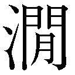水の音ぞちかく聞ゆ。あるじの僧も又眠蔵に入りて音なし。
夜更けて月の夜にあらたまりぬ。影一一四玲瓏としていたらぬ隈もなし。一一五子ひとつともおもふ比、あるじの僧眠蔵を出でて、あわただしく一一六物を討ぬ。たづね得ずして大いに叫び、一一七禿驢（くそばうず）いづくに隠れけん。ここもとにこそありつれと、禅師が前を幾たび走り過ぐれども、更に禅師を見る事なし。堂の方に駆りゆくかと見れば、庭をめぐりて躍りくるひ、遂に疲れふして起き来らず。夜明けて朝日のさし出でぬれば、酒の醒めたるごとくにして、禅師がもとの所に在すを見て、只あきれたる形に、ものさへいはで、柱にもたれ長噓をつぎて黙しゐたりける。禅師ちかくすすみよりて、院主何をか嘆き給ふ。一一八もし飢ゑ給ふとならば、一一九野僧が肉に腹をみたしめ給へ。あるじの僧いふ。師は夜もすがらそこに居させたまふや。禅師いふ。ここにありてねぶる事なし。あるじの僧いふ。我あさましくも人の肉を好めども、いまだ一二〇仏身の肉味をしらず。師はまことに仏なり。一二一鬼畜のくらき眼をもて、一二二活仏の一二三来迎を見んとするとも、一二四見ゆべからぬ理なるかな。あなたふとと、頭を低れて黙しける。
禅師いふ。里人のかたるを聞けば、汝一旦の愛慾に心神みだれしより、忽ち鬼畜に一二五堕罪したるは、あさましとも哀しとも、一二六ためしさへ希なる悪因なり。夜々里に出でて人を害するゆゑに、ちかき里人は安き心なし。我これを聞きて一二七捨つるに忍びず。特来りて教化し、本源の心にかへらしめんとなるを、汝我がをしへを聞くや否や。あるじの僧いふ。師はまことに仏なり。かく浅ましき悪業を頓にわするべきことわりを教へ給へ。禅師いふ。汝一二八聞くとならばここに来れとて、一二九簀子の前のたひらなる石の上に座せしめて、みづから帔き給ふ紺染の巾を脱ぎて僧が頭に帔かしめ、一三〇証道の歌の二句を授け給ふ。
一三一 江月照松風吹 永夜清宵何所為
汝ここを去らずして一三二徐に此の句の意をもとむべし。意解けぬる則は、おのづから一三三本来の仏心に会ふなるはと、一三四念頃に教へて山を下り給ふ。此ののちは里人おもき災をのがれしといへども、猶僧が生死をしらざれば、疑ひ恐れて人々山にのぼる事をいましめけり。
一とせ速くたちて、一三五むかふ年の冬十月の初旬、快庵大徳、一三六奥路のかへるさに又ここを過ぎ給ふが、かの一宿のあるじが荘に立ちよりて、僧が一三七消息を尋ね給ふ。荘主よろこび迎へて、御僧の大徳によりて鬼ふたたび山をくだらねば、人皆浄土にうまれ出でたるごとし。されど山にゆく事はおそろしがりて、一人としてのぼるものなし。一三八さるから消息をしり侍らねど、など今まで活きては侍らじ。今夜の御泊りに、一三九かの菩提をとぶらひ給へ。誰も一四〇随縁したてまつらんといふ。禅師いふ。一四一他善果に基きて遷化せしとならば、一四二道に先達の師ともいふべし。又活きてあるときは一四三我がために一個の徒弟なり。一四四いづれ消息を見ずばあらじとて、復び山にのぼり給ふに、一四五いかさまにも人のいきき絶えたると見えて、去年ふみわけし道ぞとも思はれず。寺に入りて見れば、荻一四六尾花のたけ人よりもたかく生茂り、露は時雨めきて降りこぼれたるに、一四七三つの径さへわからざる中に、堂閣の戸右左に頽れ、方丈一四八庫裏に縁りたる廊も、一四九朽目に雨をふくみて苔むしぬ。さてかの僧を座らしめたる簀子のほとりをもとむるに、影のやうなる人の、僧俗ともわかぬまでに髭髪もみだれしに、葎一五〇むすぼほれ、尾花一五一おしなみたるなかに、蚊の鳴くばかりのほそき音して、一五二物とも聞えぬやうに、まれまれ唱ふるを聞けば、
江月照松風吹 永夜清宵何所為
禅師見給ひて、やがて禅杖を拿りなほし、一五三作麼生一五四何所為ぞと、一喝して他が頭を撃ち給へば、忽ち氷の朝日にあふがごとくきえうせて、（＊79）かの青頭巾と骨のみぞ草葉にとどまりける。一五五現にも一五六久しき念のここに消じつきたるにやあらん。たふときことわりあるにこそ。
されば禅師の大徳、一五七雲の裏、海の外にも聞えて、一五八初祖の肉いまだ乾かずとぞ称嘆しけるとなり。かくて里人あつまりて、寺内を清め、修理をもよほし、禅師を推したふとみてここに住ましめけるより、一五九故の密宗をあらためて、一六〇曹洞の霊場をひらき給ふ。一六一今なほ御寺はたふとく栄えてありけるとなり。
一 僧侶のかぶる紺色の頭巾で、本篇の主人公快庵禅師がこれを鬼の僧にかぶらせた。
二 明応二年（一四九三）一二月没。七二歳。曹洞宗の高僧、名は妙慶、越後の顕聖寺、下野の大中寺等をひらく。禅師は、知徳高い禅僧で、官賜。（＊75）
三 幼少より。髪を左右にわけて角のように揚げて結う小児の髪形による。
四 特に経典をもたず、不立文字・教外別伝・以心伝心を旨とする禅宗の本旨。
五 諸国を行脚すること。
六 岐阜県関市下有知にある曹洞宗の名刹。
七 夏行（四月一六日─七月一五日まで、室に籠って仏道修行すること。夏安居とも）をすまして。
八 栃木県下都賀郡大平町富田の宿。
九 使用人なども大勢いて裕福そうな家。
一〇 天秤棒の一種。
一一 年ごろ五〇歳にちかい。
一二 僧侶のかぶる頭巾。
一三 包み。旅行用の油単。
一四 檀家。信徒。ここは相手をよびかけた語。御主人。
一五 用心する。警戒する。
一六 諸国を遍歴参詣して修行する僧。
一七 私のような瘦法師が。
一八 百姓たちをさす。
一九 旅の僧。
二〇 一夜の宿を提供して。
二一 おかした罪のつぐないをいたしましょう。
二二 礼を厚くして。
二三 小作人や下男。下僕たち。
二四 しかるべき理由。
二五 世にもまれな不思議な話。
二六 人をまどわすようなあやしいはなし。
二七 富田の西北にある大平山。
二八 寺院。のちの曹洞宗大平山大中寺をいう。
二九 藤原秀卿の後裔で栃木県小山市を本拠とした豪族。
三〇 家代々帰依して、財物を寄与する旦那寺。
三一 梵語。密教で秘法を伝授する僧職。
三二 甥。または養子。
三三 学問修行のふかいという評判が高く。
三四 香や蠟燭等の布施をあげ。
三五 わけへだてなく、うちとけてつきあっていたが。
三六 越後佐渡（新潟県）、越中（富山県）、加賀能登（石川県）、越前若狭（福井県）の総称。
三七 真言宗ではじめて受戒するとき、その頂に香水をそそぐ結縁灌頂、修道上進のときの伝法灌頂等の儀式。
三八 戒を授ける法師。阿闍梨がおこなう。
三九 身の回りの世話をする者。
四〇 長年勤めてきた修行の事。
四一 御心痛になり。
四二 ここは、国府所属の官医。
四三 立派な。名声の高い。
四四 大切なもの。（＊76）
四五 嵐に吹き散らされる。
四六 顔をすりよせて。
四七 とうとう。
四八 寺院の主。住持。
四九 ひどく驚かし。
五〇 まのあたり。
五一 とりおさえる。
五二 日暮れとともに。
五三 仏と菩薩。
五四 心のまがった。
五五 肉欲・色欲にとらわれる。
五六 成仏正道のさまたげになる悪業にひきずられて。
五七 生前の姿。
五八 五雑組、巻五「化為レ狼者、太原王含母也。化為二夜叉一者、呉生妾劉氏也。化為レ蛾者、楚荘王宮人也。化為レ蛇者、李勢宮人也」の読み違え。楚の荘王は中国紀元前六〇〇年頃の人。宮人は女官。
五九 太原にいた武将。
六〇 暴悪勇猛な鬼類の一。
六一 いつの人か不明。
六二 以下、五雑組、巻五に伝えられる話。
▼現代語訳挿絵参照。
六三 寝るに寝られない。
六四 枕許においた警策。
六五 主人である老婆。
六六 そのままにしておいて。
六七 ついでがあったので。
六八 中国隋（五八一─六一八）の第二代皇帝。大運河などを作った。
六九 このはなしは五雑組、巻五に見える。
七〇 「あるなれど」の約。
七一 理非分別をわきまえない野蛮な心。
七二 仏道修行の結果身につけた徳。修行と学徳。
七三 側近く召して世話をしなかったならば。
七四 あっぱれ。ほんとに。
七五 煩悩のために一切の真理を知ることができなくなった暗さをいう。
七六 悪事悪業のために身を苦しめることを地獄の猛火にたとえた。
七七 一本気で、思いこんだらつらぬきとおす性質。（＊77）
七八 心をゆるめて放任すれば妖しい魔物となり。
七九 心をひきしめれば。
八〇 成仏できる。
八一 そのよい実例である。
八二 老僧。快庵の自称。
八三 教え導いて善道に転化する。
八四 貝と鐘。ともに仏具。近くに寺院がないこと。
八五 二〇日すぎの、出のおそい下弦の月。
八六 この家の主人をさす。
八七 山寺は誰も住みついていないとみえて。
八八 二階造りの門。山門。
八九 いばら。雑草。
九〇 経典をおさめる建物。
九一 見捨てられたまま。
九二 たちならんだ仏像。
九三 護摩壇。本尊の前に設けられている。
九四 住持の居室。
九五 長廊下と僧侶の室。
九六 方角ととれば西南西、時刻ととれば午後四時より六時頃をいう。
九七 錫杖。
九八 今夜一夜だけの。
九九 いっこうに。
一〇〇 仏家でいう寝室。
一〇一 瘦せこけた。
一〇二 力なくしずかに。
一〇三 食糧。斎は、僧侶の正食。
一〇四 用意、支度。
一〇五 私は。謡曲などでつねに用いる自称の代名詞。
一〇六 行く。
一〇七 遠いみちのりである。
一〇八 切に。ぜひに。
一〇九 よくないこともあるものです。
一一〇 さりとて、たって出て行けというわけでもない。
一一一 たちまち。秋の日はおちるのが早い。
一一二 月の出が遅くて、宵にまだ月のなく暗い状態。
一一三 つけないので。
一一四 月光が清くうつくしく輝くさま。
一一五 午前零時より零時半ごろまで。
一一六 何かさがしもとめる。
一一七 右によみ、左に意味を記している。白話小説などの注解に用いる方法。頭に毛のない坊主をののしることば。
一一八 もし飢えておいでだというならば。
一一九 僧が自分を卑下していう語。愚僧、拙僧。
一二〇 生き仏の肉の味をしらない。
一二一 鬼畜のような理非分別のつかない眼。（＊78）
一二二 生き仏。
一二三 仏が衆生臨終の際に迎えにくることで、ここは、おいでになった、の意。
一二四 見ることができないのも当然のことである。
一二五 罪におちる。鬼畜になりさがる。
一二六 前例がないほどの悪因縁。
一二七 見捨てておくことができない。
一二八 聞くというならば。
一二九 堂の前の縁側。
一三〇 禅の本義を七言長詩の形で説いたもの。唐の玄覚の作。
一三一 現代語訳を見よ。
一三二 おもむろに。じっくりと。
一三三 本来そなわっている仏心にあうのである。
一三四 親切に。
一三五 翌年。
一三六 奥州よりの帰途。
一三七 その後の様子。
一三八 それゆえに。
一三九 かの山寺の僧が成仏するように、冥福をお祈り下さい。
一四〇 私どももみんな一緒に回向いたしましょう。
一四一 彼が善行のむくいで往生したというのならば。遷化は、仏法念者の死去をいう。
一四二 仏道においては私より先に悟りに入った先輩ともいうべき人。
一四三 私にとっては、一人の弟子。
一四四 どちらにしてもその様子を見なければなるまい。
一四五 主人の言葉通り、なるほど人の往来が絶えているとみえて。
一四六 すすき。
一四七 庭の草生えた小径。門への道、井戸への道、厠への道の三径。漢の蔣詡が邸内の三径に遊んで仕えなかった故事がある。また陶淵明、帰去来辞に「三径就レ荒、松菊猶存」とある。源氏、蓬生「このさびしき宿にも必ずわけたる跡あなる三つの径とたどる」。
一四八 寺院で雑事をつかさどる所。台所など。
一四九 朽ちたもくめ。
一五〇 雑草がからみあい。
一五一 倒れ伏しなびいている様。
一五二 何をいっているのかはっきりと聞えない状態。
一五三 禅家の用語。いかに。どうじゃ。
一五四 どうするのだ。
一五五 まことに。じつに。
一五六 長い間の執念がここにいたって全く消えつくしたのであろう。
一五七 遠い国々から海外にまで。
一五八 禅宗の開祖達磨大師は死んだが、その教法・精神はいまなお生き続けている。快庵はその教法を具現化した。
一五九 それまでの真言宗を改宗して。
一六〇 曹洞宗。禅宗の一派。道元の開創。
一六一 栃木県下都賀郡大平町西山田にある大平山大中寺。曹洞宗関東惣禄三か寺の一。現在も広大な境内に老杉繁茂し、快庵を祀った開山堂、根無しの藤等が残っている。
一貧福論
二陸奧の国三蒲生氏郷の家に、四岡左内といふ武士あり。五禄おもく、誉たかく、六丈夫の名を七関の東に震ふ。此の士いと八偏固なる事あり。富貴をねがふ心、九常の武扁にひとしからず。倹約を宗として一〇家の掟をせしほどに、年を畳みて富み昌えけり。かつ一一軍を調練す間には、一二茶味翫香を娯まず。一三庁上なる所に許多の金を布き班べて、心を和むる事、世の人の月花にあそぶに勝れり。人みな左内が行跡をあやしみて、吝嗇一四野情の人なりとて、爪はじきをして悪みけり。
一五家に久しき男に一六黄金一枚かくし持ちたるものあるを聞きつけて、ちかく召していふ。一七崑山の璧もみだれたる世には瓦礫にひとし。かかる世にうまれて弓矢とらん軀には、一八棠谿墨陽の剣、一九さてはありたきもの財宝なり。されど良剣なりとて千人の敵には逆ふべからず。金の徳は天が下の人をも従へつべし。武士たるもの二〇漫にあつかふべからず。かならず貯へ蔵むべきなり。你賤しき身の分限に過ぎたる財を得たるは二一嗚呼の事なり。賞なくばあらじとて、十両の金を給ひ、二二刀をも赦して召しつかひけり。人これを伝へ聞きて、左内が金をあつむるは、二三長啄にして飽かざる類にはあらず。只当世の一奇士なりとぞ二四いひはやしける。
其の夜、左内が枕上に人の来たる音しけるに、目さめて見れば、二五灯台の下に、ちひさげなる翁の笑をふくみて座れり。左内枕をあげて、ここに来るは誰そ。我に二六糧からんとならば 二七力量の男どもこそ参りつらめ。你がやうの二八耄げたる形してねぶりを魘ひつるは、狐狸などのたはむるるにや。二九何のおぼえたる術かある。秋の夜の目さましに、三〇そと見せよとて、すこしも騒ぎたる三一容色なし。翁いふ。かく参りたるは、三二魑魅にあらず人にあらず。君が三三かしづき給ふ黄金の精霊なり。（＊81）年来篤くもてなし給ふうれしさに、夜話せんとて推してまゐりたるなり。君が今日家の子を賞じ給ふに感でて、翁が思ふ三四こころばへをもかたり和まんとて、仮に化を見はし侍るが、十にひとつも益なき閑談ながら、三五いはざるは腹みつれば、わざとにまうでて眠をさまたげ侍る。
さても富みて驕らぬは大聖の道なり。さるを世の悪きことばに、三六富めるものはかならず慳し。富めるものはおほく愚なりといふは、晋の三七石崇唐の三八王元宝がごとき、三九豺狼蛇蝎の徒のみをいへるなりけり。往古に富める人は、四〇天の時をはかり、地の利を察めて、おのづからなる富貴を得るなり。四一呂望、斉に封ぜられて民に産業を教ふれば、海方の人利に走りて四二ここに来朝ふ。四三管仲、四四九たび諸侯をあはせて、身は四五倍臣ながら富貴は列国の君に勝れり。四六范蠡、四七子貢、四八白圭が徒、四九財を鬻ぎ利を逐うて、巨万の金を畳みなす。これらの人をつらねて、五〇貨殖伝を書し侍るを、其のいふ所陋しとて、のちの博士筆を競うて謗るは、ふかく頴らざる人の語なり。五一恒の産なきは恒の心なし。五二百姓は勤めて穀を出し、工匠等修めてこれを助け、商賈務めて此を通はし、おのれおのれが五三産を治め家を富まして、祖を祭り子孫を謀る外、人たるもの何をか為さん。諺にもいへり。五四千金の子は市に死せず。五五富貴の人は王者とたのしみを同じうすとなん。まことに五六淵深ければ魚よくあそび、山長ければ獣よくそだつは、五七天の随なることわりなり。只、五八貧しうしてたのしむてふことばありて、五九字を学び韻を探る人の惑をとる端となりて、弓矢とるますら雄も富貴は国の基なるをわすれ、六〇あやしき計策をのみ調練ひて、ものを戕り人を傷ひ、おのが徳をうしなひて子孫を絶つは、財を薄んじて名をおもしとする惑なり。顧ふに名とたからともとむるに心ふたつある事なし。六一文字てふものに繫がれて、金の徳を薄んじては、みづから清潔と唱へ、六二鋤を揮うて棄てたる人を賢しといふ。さる人はかしこくとも、さる事は賢からじ。金は六三七のたからの最なり。土に瘞れては霊泉を湛へ、不浄を除き、妙なる音を蔵せり。かく清きものの、いかなれば愚昧六四貪酷の人にのみ集ふべきやうなし。今夜此の憤りを吐きて年来のこころやりをなし侍る事の喜しさよといふ。
左内興じて席をすすみ、さてしもかたらせ給ふに、富貴の道のたかき事、己がつねにおもふ所露たがはずぞ侍る。ここに愚なる問事の侍るが、ねがふは詳にしめさせ給へ。今六五ことわらせ給ふは、専ら金の徳を薄しめ、富貴の大業なる事をしらざるを罪とし給ふなるが、かの六六紙魚がいふ所もゆゑなきにあらず。今の世に富めるものは、十が八ツまではおほかた貪酷残忍の人多し。おのれは俸禄に飽きたりながら、兄弟一属をはじめ、六七祖より久しくつかふるものの貧しきをすくふ事をもせず、となりに栖みつる人のいきほひをうしなひ、他の援けさへなく六八世にくだりしものの田畑をも、価を賤くして六九あながちに己がものとし、今おのれは村長とうやまはれても、むかしかりたる人のものをかへさず、礼ある人の席を譲れば、其の人を七〇奴のごとく見おとし、たまたま旧き友の寒暑を訪ひ来れば、物からんためかと疑ひて、宿にあらぬよしを応へさせつる類あまた見来りぬ。又君に忠なるかぎりをつくし、父母に七一孝廉の聞えあり、貴きをたふとみ、賤しきを扶くる意ありながら、七二三冬のさむきにも七三一裘に起臥し、七四三伏のあつきにも七五一葛を濯ぐいとまなく、年ゆたかなれども七六朝に晡に一椀の粥にはらをみたしめ、さる人はもとより朋友の訪ふ事もなく、かへりて兄弟一属にも七七通を塞られ、まじはりを絶たれて、其の怨をうつたふる方さへなく、七八汲々として一生を終ふるもあり。さらばその人は作業に七九うときゆゑかと見れば、夙に起きおそくふして八〇性力を凝し、西にひがしに走りまどふ八一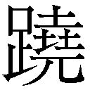蹊さらに閑なく、その人愚にもあらで才をもちふるに八二的るはまれなり。これらは八三顔子が一瓢の味ひをもしらず。かく果つるを、八四仏家には前業をもて説きしめし、八五儒門には天命と教ふ。もし未来あるときは、現世の八六陰徳善功も八七来世のたのみありとして、人しばらくここに八八いきどほりを休めん。されば富貴のみちは仏家にのみその理をつくして、儒門の教は八九荒唐（とりじめなし）なりとやせん。九〇霊も仏の教にこそ九一憑らせ給ふらめ。九二否ならば詳にのべさせ給へ。
翁いふ。君が問ひ給ふは、九三往古より論じ尽さざることわりなり。かの仏の御法を聞けば、九四富と貧しきは前生の脩否によるとや。此は九五あらましなる教ぞかし。前生にありしときおのれをよく脩め、慈悲の心専らに、他人にもなさけふかく接りし人の、その善報によりて、今此の生に富貴の家にうまれきたり、おのがたからをたのみて九六他人にいきほひをふるひ、九七あらぬ狂言をいひののしり、あさましき九八夷ごころをも見するは、前生の善心かくまでなりくだる事はいかなるむくいのなせるにや。仏菩薩は九九名聞利要を嫌み給ふとこそ聞きつる物を、など貧福の事に一〇〇係ひ給ふべき。さるを富貴は前生のおこなひの善かりし所、貧賤は悪しかりしむくいとのみ説きなすは、一〇一尼媽を蕩かす一〇二なま仏法ぞかし。貧福をいはず、ひたすら善を積まん人は、その身に来らずとも、子孫はかならず幸福を得べし。一〇三宗廟これを饗けて子孫これを保つとは、此のことわりの細妙なり。おのれ善をなして、おのれその報ひの来るを待つは直きこころにもあらずかし。又悪業慳貪の人の富み昌ふるのみかは、寿めでたくその終をよくするは、一〇四我に異なることわりあり。霎時聞かせたまへ。我今仮に化をあらはして話るといへども、神にあらず仏にあらず、もと一〇五非情の物なれば人と異なる慮あり。いにしへに富める人は、天の時に合ひ、地の利をあきらめて、一〇六産を治めて富貴となる。これ天の随なる計策なれば、たからのここにあつまるも天のまにまになることわりなり。又一〇七卑吝貪酷の人は、金銀を見ては父母のごとくしたしみ、食ふべきをも喫はず、一〇八穿べきをも着ず、得がたきいのちさへ惜しとおもはで、起きておもひ臥してわすれねば、ここにあつまる事、一〇九まのあたりなることわりなり。我もと神にあらず仏にあらず、只これ非情なり。非情のものとして、人の善悪を糺し、それにしたがふべきいはれなし。善を一一〇撫で悪を罪するは、天なり、神なり、仏なり。一一一三ツのものは道なり。我がともがらのおよぶべきにあらず。只一一二かれらが一一三つかへ傅く事のうやうやしきにあつまるとしるべし。これ金に霊あれども人とこころの異なる所なり。また富みて一一四善根を種うるにも一一五ゆゑなきに恵みほどこし、その人の不義をも察めず一一六借しあたへたらん人は、善根なりとも財はつひに散ずべし。これらは金の用を知りて、金の徳をしらず、かろくあつかふが故なり。又身のおこなひもよろしく、人にも志誠ありながら、一一七世に窮められてくるしむ人は、一一八天蒼氏の賜すくなくうまれ出でたるなれば、精神を労しても、一一九いのちのうちに富貴を得る事なし。さればこそいにしへの賢き人は、もとめて益あればもとめ、益なくばもとめず、己がこのむまにまに世を山林にのがれて、しづかに一生を終る。心のうち一二〇いかばかり清しからんとはうらやみぬるぞ。かくいへど富貴のみちは術にして、一二一巧なるものはよく湊め、不肖のものは瓦の解くるより易し。且我がともがらは、人の生産につきめぐりて、一二二たのみとする主もさだまらず。ここにあつまるかとすれば、その主のおこなひによりて、たちまちにかしこに走る。水のひくき方にかたぶくがごとし。一二三夜に昼にゆきくと休むときなし。ただ一二四閑人の生産もなくてあらば、一二五泰山もやがて喫ひつくすべし。一二六江海もつひに飲みほすべし。いくたびもいふ、不徳の人のたからを積むは、一二七これとあらそふことわり、君子は論ずる事なかれ。一二八ときを得たらん人の、倹約を守りつひえを省きてよく務めんには、おのづから家富み人服すべし。我は仏家の前業もしらず、儒門の天命にも拘らず、一二九異なる境にあそぶなりといふ。（＊83）
左内いよいよ興に乗じて、霊の議論きはめて一三〇妙なり。旧しき疑念も今夜に消じつくしぬ。試にふたたび問はん。今一三一豊臣の威風四海を靡し、一三二五畿七道一三三漸しづかなるに似たれども、一三四亡国の義士彼此に潜み竄れ、或は大国の主に身を托せて世の変をうかがひ、かねて一三五志を遂げんと策る。民も又戦国の民なれば、一三六耒を釈てて矛に易へ、一三七農事をこととせず。士たるもの枕を高くして眠るべからず。今の体にては長く不朽の政にもあらじ。誰か一統して民をやすきに居らしめんや。又一三八誰にか合し給はんや。翁云ふ。これ又人道なれば我がしるべき所にあらず。只富貴をもて論ぜば、信玄がごとく智謀は百が百的らずといふ事なくて、一三九一生の威を三国に震ふのみ。しかも名将の聞えは世挙りて賞ずる所なり。その末期の言に、一四〇当時信長は一四一果報いみじき大将なり。我平生に他を侮りて征伐を怠り、一四二此の疾に係る。我が子孫も即て他に亡されんといひしとなり。謙信は勇将なり。信玄死しては天が下に一四三対なし。不幸にして一四四遽く死りぬ。信長の器量人にすぐれたれども、信玄の智に及かず、謙信の勇に劣れり。しかれども富貴を得て、天が下の事一回は此の人に一四五依ざす。一四六任ずるものを辱めて命を殞すにて見れば、文武を兼ねしといふにもあらず。秀吉の志大いなるも、一四七はじめより天地に満つるにもあらず。一四八柴田と丹羽が富貴をうらやみて、羽柴と云ふ氏を設けしにてしるべし。今一四九竜と化して太虚に昇り、池中をわすれたるならずや。秀吉竜と化したれども一五〇蛟蜃の類なり。一五一蛟蜃の竜と化したるは、寿わづかに三歳を過ぎずと。これもはた後なからんか。それ驕をもて治めたる世は、往古より久しきを見ず。人の守るべきは倹約なれども、一五二過ぐるものは卑吝に陥つる。されば倹約と卑吝の境よくわきまへて務むべき物にこそ。今豊臣の政 久しからずとも、万民一五三和ははしく、戸々に一五四千秋楽を唱はん事ちかきにあり。君が望にまかすべしとて八字の句を諷ふ。そのことばにいはく、
一五五 堯蓂日杲 百姓帰レ家
数言興尽きて、遠寺の鐘一五六五更を告ぐる。夜既に曙けぬ。別れを給ふべし。こよひの長談まことに君が眠をさまたぐと、起ちてゆくやうなりしが、かき消して見えずなりにけり。
左内つらつら一五七夜もすがらの事をおもひて、かの句を案ずるに、百姓家に帰すの句、一五八粗其の意を得て、ふかくここに一五九信を発す。まことに一六〇瑞草の瑞あるかな。
雨月物語五之巻大尾
一 一人の武士と黄金の精の貧富に関する議論。
二 広く東北地方をさし、ここは会津地方。
三 戦国時代の武将。文禄四年（一五九五）没、四〇歳。会津四二万石に封ぜられ、のち九二万石に加増された。
四 実在の人物。岡野左内。諸家高名記、常山紀談、翁草等に詳しい。（＊80）
五 高禄で。左内は氏郷に仕えて八千石であった。
六 武士としての勇名。
七 東国（関東・東北）。
八 人と違って偏った性質。
九 世間一般の武家。
一〇 家内を取締ったので。
一一 軍兵を訓練するひま。
一二 茶の湯や聞香などの趣味。
一三 一室に。
一四 ここは、卑しい根性の人。
一五 家に長く使っている下男。
一六 ここは、大判。
一七 天下の名宝崑山の璧も乱世ではその価値は瓦や小石に等しい。中国の伝説神話に出る崑崙山は名玉の産地。
一八 ともに中国の名剣の産地。
一九 その上更にほしいものは。
二〇 軽々しく。粗末に。
二一 殊勝なこと。
二二 帯刀をもゆるして。士分にとりたてて。
二三 長喙（チョウカイ）が正しい。長いくちばし。貪婪。
二四 ほめそやした。
二五 ここは、行灯。
二六 食糧がほしいのなら。
二七 腕っぷしの強い男。
二八 おいぼれた様子。
二九 何か習い覚えた術でもあるだろう。
三〇 ちょっと。
三一 様子。そぶり。
三二 山林の異気より生じて人に害を与える怪物。
三三 大切に取扱って下さる。
三四 心持。
三五 大鏡「思しき事いはぬはげにぞ腹ふくるる心地しける」。徒然草に同様な文がある。
三六 五雑組巻五「富者多慳、非レ慳不レ能レ富也、富者多愚、非レ愚不レ能レ富也」。
三七 晋の富豪で、豪奢な生活をして殺された。五雑組巻五「如二石崇王元宝之流一、迺豺狼蛇蝎」。
三八 唐の富豪で、金銀を積んで屋壁とした。
三九 やまいぬ・狼・蛇・さそり。猛悪、残忍、貪欲な輩。「だかつ」が正しい。
四〇 五雑組巻五「但古之致レ富者、皆観二天時一、逐二地利一」。
四一 周代の太公望呂尚。ここは史記貨殖列伝の文章に拠る。
四二 斉の国にやってきた。
四三 斉の宰相。
四四 貨殖列伝「九二合諸侯一」。九合は糾合で、連合の意。秋成は九度あわせと誤読した。
四五 陪臣。諸侯の臣。
四六 越王勾践をたすけて呉を討ち、のち斉に入って鴟夷子皮と変名、巨万の富豪となり、さらに陶に入って陶朱公となり大富豪となる。
四七 衛の人。孔子の門人で貨殖に長じていた。
四八 周の人。商機の才あって、蓄財術の祖と称された。
四九 産物を売買して。
五〇 漢の太史司馬遷著「史記」の巻一二九が「貨殖列伝」。
五一 一定の生業財産のないものは定まった善心がない。孟子、梁恵王上「若レ民則無二恒産一因無二恒心一」。
五二 貨殖列伝「故待レ農而食レ之、虞而出レ之、工而成レ之、商而通レ之」。
五三 生業をはげみ。
五四 富豪の子弟は刑死して市中にさらされることはない。貨殖列伝「諺曰、千金之子不レ死二於市一」。
五五 貨殖列伝「巨万者、乃与二王者一同レ楽」。
五六 貨殖列伝「淵深而魚生レ之、山深而獣往レ之」。
五七 天然自然の道理。
五八 論語、学而篇「未レ若二貧而楽、富而好レ礼者一也」。
五九 学者や文人たちのまどいをひきおこすいとぐち。
六〇 つまらぬ軍略ばかり。（＊82）
六一 学問・知識にとらわれて。
六二 俗世間を棄てて田畑に鋤をふるう人。
六三 七宝の筆頭。
六四 正しくは「どんこく」。欲深く残忍無慈悲なこと。
六五 ことの道理をはっきりさせてはなされたことは。
六六 書籍・衣類等を食う虫。ここは学者を罵った。
六七 先代よりながく家に仕えている者。
六八 零落した者。
六九 無理やりに。強引に。
七〇 下僕。
七一 孝行清廉との評判。
七二 冬期の三か月間。
七三 一枚のかわごろも。剪灯新話、富貴発跡司志「寒一裘暑一葛、朝晡粥飯一盂」。
七四 夏の土用。極暑の間。
七五 一枚の帷子を洗濯するひまもなく。着たきりで。
七六 朝夕一杯の粥で。
七七 出入りをさしとめられ。
七八 あくせくと働いて。
七九 不熱心。怠惰。
八〇 精神精力を集中し。
八一 従来は・蹬とよむ。ここは蹊とよんで、むずかしそうな有様に解しておく。
八二 的中することはまれで、大ていはずれる。
八三 孔子の高弟顔子が一つの瓢をいだいて清貧を楽しんだ心境もしらない。論語、雍也篇「賢哉回也、一簞食一瓢飲、在二陋巷一、人不レ堪二其憂一、回也不レ改二其楽一、賢哉回也」。
八四 仏教では前世の因縁をもって説明し。
八五 儒教では天の定めた運命であると教える。
▼現代語訳挿絵参照。
八六 かくれた徳とよいおこない。
八七 来世でむくいられるであろうとそれを頼みに。
八八 腹立ちを我慢する。
八九 右側によみ、左側に意訳を示す白話小説注解書の用いた表現法。とりとめのないでたらめ。
九〇 黄金の精霊をさす。
九一 依る。信奉する。
九二 もしそうでないと否定されるならば。
九三 昔からいろいろ論じられて、しかもまだ結論の出ていない道理。
九四 五雑組、巻一五「使三今世之富貴貧賤皆由二前生之脩否一乎」。
九五 おおざっぱでいいかげんな教え。
九六 他人にたいして権勢をふるい。
九七 道理にはずれた妄言をいいつのり。
九八 粗暴で情理にくらい野蛮な心。
九九 名誉とかわが身の利欲とかを。
一〇〇 関係する。とらわれる。こだわる。
一〇一 無知愚昧な女どもをたぶらかす。
一〇二 いいかげんな。未熟な。
一〇三 中庸、一七「宗廟饗レ之、子孫保レ之」。祖先の霊もこの徳をうけて天子の礼をもって祀られ、子孫もこの徳をうけて名と位、禄と寿を保った。
一〇四 私なりの異った意見。
一〇五 感情のないもの。
一〇六 産業をいとなんで。
一〇七 品性卑しくけちんぼ。
一〇八 「着るべきをも」の意。
一〇九 眼前に見るようなわかりきった道理。
一一〇 いつくしんでほめ。
一一一 天・神・仏は、人間の道をただし、教えるもの。
一一二 金銀を大切にする人々をさす。
一一三 黄金の霊に仕え奉仕する。
一一四 善果となるべき善行をしても。
一一五 恵む理由もないのに。
一一六 「貸」に同じ。
一一七 苦境においやられて。
一一八 造化の神のお恵み。
一一九 一生のうちに。
一二〇 どれほどすがすがしいことだろう。公任卿集「ささなみや滋賀の浦波いかばかり心のうちのすずしかりけむ」。
一二一 術に巧みなものはよく富をあつめ。貨殖列伝「能者輻湊、不肖者瓦解」。
一二二 貨殖列伝「富無二軽業一、則貨無二常主一」。
一二三 昼夜往来して。貨殖列伝「若二水趨一レ下、日夜無二休時一」。
一二四 遊んで暮すひま人が定職なく徒食すれば。
一二五 中国の名山。諺「坐してくらえば泰山も空し」。山の如く蓄積された食物。
一二六 河海の如く多量の飲料。
一二七 文意明確を欠く。かりに「不徳の人が財宝を積むのはその人の徳不徳とは無関係で、道徳とは相容れないことゆえ、君子の富貴は同日に論ずべきではない」としておく。
一二八 時運をえた人が。
一二九 別天地に生きている。
一三〇 すばらしい。
一三一 豊臣秀吉の威光が天下をあまねく靡かせ。
一三二 京都を中心とした五国、七つの行政区画。日本全国、津々浦々。
一三三 ようやく。どうやら。
一三四 国を亡ぼされた主君に忠義をつくす武士。
一三五 まえまえからの素志。
一三六 耒は鋤。矛は槍に似た兵器。
一三七 天職の農耕にいそしもうとしない。
一三八 誰に味方なさるのですか。
一三九 一生涯、その威勢を、甲斐・信濃・越後にふるったのみ。
一四〇 いまや。
一四一 非常に好運にめぐまれた。市井雑談集「とにもかくにも信長は果報いみじき者也......恐くは我子孫彼が為に滅亡せんか」。
一四二 いまこの病気にかかった。
一四三 肩をならべる好敵手。
一四四 信玄没後五年にして死去。
一四五 まかされた。天下統一の覇業をいう。
一四六 家臣。明智日向守光秀。
一四七 はじめから天下を征服してその志が天下に満ちるようなものではなかった。秋成は胆大小心録一二に「豊臣公の大器も、始より志の大なるにはあらざりし也、云云」という。
一四八 柴田勝家と丹羽長秀。
一四九 あたかも竜と化して大空に昇ったように位は人臣を極めているが、昔の境遇身分を忘れているのではなかろうか。
一五〇 蛟はみずちで、蛇に似た竜の一種。蜃は蛟の属。まだ竜になっていないもの。
一五一 五雑組、巻九「竜由二蛟蜃一化者寿不レ過二三歳一」。
一五二 倹約が行きすぎると。
一五三 富み栄え豊かで。
一五四 雅楽の曲名。ここは御代泰平と家運繁栄をことほぐこと。
一五五 堯は中国古代の天子。蓂は聖代に生えた蓂莢という瑞草。杲はすでに日が高く。百姓は万民。帰家は、「帰二家康一」を暗示する。（＊84）
一五六 午前四─六時。
一五七 この一夜中のこと。
一五八 どうやら精霊の言の真意が会得されて。（＊85）
一五九 信ずるにいたった。
一六〇 瑞草の生ずるような聖代にめぐりあうべきめでたいしるしであり、めでたいはなしである。（＊86）
一安永五歳丙申二孟夏吉旦
寺町通五条上ル町
京都 梅村判兵衛
書肆
高麗橋筋壱町目
大坂 三野村長兵衛
一 一七七六年。後桃園天皇の代。将軍一〇代家治。秋成四三歳、大坂にて医を業としていた。
二 四月。
三 天明三年ごろから天明七年に、大坂心斎橋筋博労町の書肆名倉又兵衛と合板の形で、「雨月」を再版している。（＊87）
【補注】
序
＊１ 「雨月物語」の書名の由来。中国の易の世界観では、「雨」「月」は陰（闇）の世界に属する。この作品でも、怪異は「陰火」（「白峯」）「陰風」（「菊花の約」）によって登場し、怪異出現の場面には多く「雨」「月」がからむ。また、春の夜の朧月の妖艶な気分が、この作品の世界を象徴する。
＊２ 序文でこの作品は杜撰な作品だから、名作「水滸伝」「源氏物語」のように作者の子孫や死後にまで報いがくるはずはないと述べたのを受けて、既に本人は不具の処罰を受けているのだから、と諧謔のなかに自作への自信をこめたペンネーム。
白峯
＊３ 西行の座る「たひらなる石」は、地誌「四国遍礼霊場記」で、院の墓の前にあるとされた「西行腰掛石」。陰暦十月という初冬の寒さの中この石に座す西行の強い精神力と院の霊登場にふさわしい冷気を演出する。また、西行の右脇にある風呂敷は、画題「富士見西行」で行脚の歌人西行を象徴すべく描かれることが多かった。
＊４ 「雨月物語」の怪異の登場の場面には、ほとんど決まって「夢」の表現が使用されていることに注意。
＊５ 「白峯」冒頭の道行文は、西行自記の体裁でありながら、江戸時代から偽作と疑われていた「撰集抄」に拠っている。本作がここまで西行の名を明かさずおいたのは、「撰集抄」を真似て西行自記の形式をとり、語り手でもある西行自身の体験をのぞき見し追体験する感覚を読者に与えようとした。西行に自ら西行と名乗らせて、怪異登場にもひるまない様子を表現している。
＊６ 「むなしき船」は上皇を意味する歌語。また、崇徳院は白峯と同じ讃岐にある、「船」の神様金毘羅権現の本体と信じられていた。（浄瑠璃「崇徳院讃岐伝記」、秋成作「諸道聴耳世間狙」五ノ二）院の怨念によって平家が船戦に敗れ滅亡するという予言と対応する。なお、この歌もとは西行の歌であったが、ここでは院の作とされている。
＊７ 歴史を論じるのに、過去の和漢の類例を引用するのは、江戸時代に歴史読み物として愛読された「太平記」やその解説書である評判類に見られる方法。仁徳天皇・菟道の王の皇位継承と比較して、崇徳・後白河の争いを論じる部分は、「太平記」とその体裁にならった通俗史書とを集成した「本朝通紀」による。
＊８ 西川如見の町人教訓書「町人袋」では、この説話を「五雑組」から引用して、孟子の説は、万世一系を伝統とする日本の「人情」に合致しない、という「白峯」と同じ議論を展開している。
＊９ 保元の乱における崇徳・後白河の争いに「詩経」のこの一説を引くのは、水戸学の史論、栗山潜鋒「保建大記」に同じ。「白峯」では、他にも「保建大記」と同じ文辞が見える一方、秋成に近い懐徳堂では、水戸の修史事業および「保建大記」に関心が寄せられていた。こうした当時の学問的議論を小説の中に盛り込むのも、この時代の読本の特徴。
＊10 戦乱の歴史を政治的敗者の怨念のなせる業とし、その御霊に歴史の予告をさせる小説の形式は、「太平記」巻二七「雲景未来記事」が早い。崇徳院の怨霊による復讐の予告は、この「太平記」の形式にならった「源平太平記評判」巻一下や「義経興廃記」巻二が、「雨月物語」以前に既にあった。
＊11 西行自記のなかに書かれた秘密の告白を読者だけが読んでいるように思わせる。
菊花の約
＊12 「陰徳太平記」によれば、尼子方は大晦日、芸人に化けて城中に入り、正月気分の油断をついて襲撃した。城門には一対の松飾りを配し、芸人姿の尼子方が塩冶方を不意討ちにしている様子を描く。経久の手段を選ばないやり方が、左門・宗右衛門の純粋な友情と対比されている。
＊13 江戸中期の文人の間では、書斎での道具等にこだわる趣味の一環として、花もその対象となっていた。文人のそうした趣味は、中国から学んだものだが、中国文人の編纂した花譜類（「菊譜」など）によれば、菊は移ろいやすい花卉類の中で、ひとり秋霜の時期に盛んとなる点が、篤実な人柄の人々に愛されてきた、という。
＊14 原拠の「柳」に「春の」を加え、「秋風」を「秋の初風」とするなど、歌語を加えて日本化し、季節感と人の心の移ろいを重ね、本作の時間と人事の導入となっている。
＊15 「徒然草」十三段「ひとり、灯のもとに文をひろげて、見ぬ世の人を友とするぞ、こよなう慰むわざなる。」、同書七十二段「賤しげなる物、居たるあたりに調度の多き。（中略）多くて見苦しからぬは、文車の文。」をふまえた。
＊16 病人を看病する理由は、原拠「死生交」では、科挙に挑戦しようとする同志への親近感と、試験の時期を逃しても看病する義俠心が強調されている。それに対して本作では、宗右衛門の正体すら語られず、この部分にあるような惻隠の情が強調され、後の両者の非功利的で情緒的な心情のつながりの導入となっている。
＊17 命にかえてもとの言葉は、原拠「死生交」になく、宗右衛門の感激と純粋さを示すとともに、後の話の展開の伏線ともなっている。
＊18 原拠「死生交」では、看病のため科挙を逃させた負い目を言う、助けられた范式に対して、助けた張劭が答えた言葉であった。本作では、科挙の要素を払拭することで、とかく名利によって安易に結ばれる「軽薄の交」と対照をなす、純粋な友情を示す言葉とした。官僚支配の中国と武士による支配の日本との違いでもある。
＊19 商売の成功の予兆を語る商人、旅費を浮かし損ねて文句を言う上司とこれをなだめる部下、疲れきった馬をしかる馬子、という左門とは対照的な人物たちの会話を挿入することで、時間は左門一人のために流れてはいないことを示し、左門の焦りや孤独と対比させた。
＊20 歌語。「ふく風になびくあさぢは我なれや人の心の秋をしらする」（後拾遺集）。
＊21 「狐疑」の出典は、「孫子」と並ぶ兵法書「呉子」。兵書に詳しい宗右衛門らしい言葉を配し、手段を選ばず権力を得たため、部下を信じられない尼子経久の、武将としての欠点を言い当てた言葉。
＊22 原拠「死生交」に、丹治にあたる人物はいない。
＊23 左門の丹治への非難は、功利を排した純粋な信義の観点から当たっているのだが、読者の多くが、命がけで信義を守る左門・宗右衛門より丹治に近いとしたら、「となん」という最後の含みのある表現は、誰が自信を持って自らを「軽薄」でないと言い切れるのかという問いかけとして読める。
浅茅が宿
＊24 江戸時代の絵入りの「源氏物語」やその簡約本に共通する、蓬生の巻の挿絵、即ち、荒廃した屋敷を眺める光源氏と、惟光が馬のむち（杖）で露払いする構図をふまえる。連歌・俳諧の付合の根拠を示す「源氏小鏡」には「よもきふには（中略）むち、かさ、ふくろふ、あれたるやと、きつねのすみか」とある。本作本文には「狐鵂鶹を友として」「狐狸の住みかはりて」とも対応する。補注六一「揉めざるに直き志」参照。
＊25 「徒然草」百三十七段「男女の情も、ひとへに逢ひ見るをば言ふものかは。逢はで止みにし憂さを思ひ、あだなる契りをかこち、長き夜を独り明し、遠き雲井を思ひやり、浅茅が宿に昔を偲ぶこそ、色好むとは言はめ。」による。また、「源氏物語」桐壺「雲のうへもなみだにくるる秋の月いかですむらんあさぢふの宿」では、桐壺の更衣の墓所を桐壺帝が思いやっており、本作の内容に通じる。桐壺の巻全体の背景にある「長恨歌」の世界をも意識する。浅茅が原は、歌語として玄宗皇帝が楊貴妃の面影を亡くなった馬嵬にたずねる情景で詠まれ、本作の「浮木」「漢宮の幻」「銀河」「長き恨」「旧しき恨み」に対応する。
＊26 原本のルビは通常の表記と異なり「しもをさ」。「総」は「麻（を）」の意で、地誌類で「総州」の地名の由来を「麻」の特産に求める説を受けた命名。後出の真間の手児女が「麻衣」を身にまとったり、漆間の翁が麻畑の主であることと対応する。
＊27 葛飾生まれを受けた。作中では人生に負け続ける皮肉な命名でもある。「吉備津の釜」の正太郎もそうだが、本作の男主人公の命名には名前負けしている者が目立つ。
＊28 「浮木」はいかだ。これに乗って天の川へ渡った張騫の故事による。旧暦では初秋の七夕を連想させ、以下の秋の再会を約束する言葉へとつながる。また、後出の「長恨歌」の世界、即ち玄宗・楊貴妃の七夕の約束とも対応する。
＊29 表面上は「帰る」の意味だが、「葛の葉」は「心反す（＝裏切る）」「秋（飽き）」「恨み」を連想させる歌語。勝四郎の破約を暗示する。
＊30 この部分と、後出の関東・京都の戦乱は通俗史書「重編応仁記」によった。
＊31 直前の「秋（飽き）」「風の便り」と対応した歌語。補注七六「人の心の秋」の引用歌参照。
＊32 「人丸集」の「春きぬと人しも告げず逢坂のゆふつけ鳥の声にこそ知れ」によったか。だとすると、この歌は題を読み込む「隠題」の歌であり、「身のうさは」の歌も「美濃」「下野」を読み込んで、「東の下野守常縁」「下野の領所にくだり」と対応させたと考えられる。なお、本作は、「人丸集」を収める「歌仙家集」の和歌を踏まえることが多い。
＊33 歌枕。「夜とともにたのまれぬかな信濃なる名にたちにけりあたしのの山」（「夫木和歌抄」「松葉名所和歌集」）。「世とともに」参照。
＊34 「荀子」勧学「蓬は麻の中に生じ、扶けずして直なり」による。「麻につるる蓬」という句とともに諺として一般に知られていた。勝四郎は麻の多生する下総国でその姓を得たことになる。補注二「下総」「勝四郎」参照。
＊35 補注一「浅茅が宿」に挙げた「徒然草」百三十七段「浅茅が宿に昔を偲ぶ」に対し、江戸時代の注釈の多くが業平のこの歌を掲出する。
＊36 「敦忠集」は「歌仙家集」所収。「続後撰集」では、第二句に「思ふ心に慰みて」と異同がある。補注三一「身のうさは」参照。夫婦の「心」の不通を描いた本作には、「心」の語が頻出。
＊37 こうした歌を「よくいふ人の心にもまさりて」と評価する部分は、「理り」を介在させず、率直に心情を歌い上げることを良しとした賀茂真淵の主張と通いあう。「古はかく其儘にいへる故に真なり」「歌はただをさなかれといひて、をさなき子の心のままにいふを、誰かにくしとするや、古き歌は大旨しかり」（「万葉新採百首解」上）。勝四郎の宮木を失った悔恨が、玄宗や桐壺帝らと同様に歌を獲得させ、歌物語として一編を閉じている。
夢応の鯉魚
＊38 自分の絵が魚を助けて描いた仏教の善行によって描かれたものであることを言い訳にして、絵への執着を隠蔽していることを示すとともに、僧としてのプライドも描写した。なお、主人公を僧侶として設定し、僧侶としての発言をさせる部分は、「魚服記」など原拠にはない。興義のモデルとしては、蛇が玉をくわえてやってきた夢を見、覚醒後枕元にその玉を得て自らの雅号とし、鯉の絵を得意とした僧葛蛇玉（「大阪訪碑録」所収の墓碑銘）が指摘されている。
＊39 本作は、調理される魚の体験を興義に語らせることで「生を殺し鮮を喰ふ」ことを戒める内容から、「放生の功徳」を勧める内容となっている。また、生死をさまよう夢のうちに、生前の善行悪行を判ぜられ、危うく殺されるところで蘇生し悟りを得る仏教説話の蘇生譚のパターンにも沿っている。
＊40 三島由紀夫は、興義が鯉となって琵琶湖の名所を楽しむ部分は、実人生の拘束を逃れた魂の愉楽を表現したものとした。（「雨月物語」について）しかし、人間の「ゆきかひ」を避けて湖底に沈み、船に眠りを覚まされたり追われたりする様は、楽しみや安息ばかりではない。魚は魚としての楽しみもあり、苦労もあることを表している。
＊41 この部分も原拠にない。「生を殺し鮮を喰ふ凡俗の人」補注一四参照。難行苦行に耐えうる僧のプライドの言葉ながら、この後の展開も含め滑稽。
＊42 このあたり、江戸時代の仏教説話集「戒殺放生物語」三ノ五の以下の文章に近い表現。「或は深き江にかうばしき餌をつどみし、釣の糸をおろし、是にかかりて引あげらるる朱鱗丹魚の心の内おもふべし。ものいふ事あたはざれども眼は是を見る。天にも地にも訴ふべきたよりもなく、恨を心にこめて命を奪る。来生いかでか怨を報ぜざらん。（中略）或は俎にのぼせられ刀をうけて割きらるる。その悲しさはなを人の刑戮にあふがごとし。頭をおとし（中略）只ふかくつつしみて、その殺業をとどめ、放生の功徳をいとなむべし」。
＊43 仏説では、最高の悟りを得てこれ以上学ぶもののない聖者である羅漢を殺すのは、五逆という最も重い罪悪の一つ。他は、父殺し、母殺し、僧の和合を破ること、仏身を傷つけること。これを犯すと無間地獄に落ちるとされた。僧侶として克服すべき絵への執着を持ちながら、僧侶としてプライドが高い、これまでの興義の人物造形を受けた、滑稽かつ皮肉な響きのある表現。
＊44 以下の弟子成光の逸話とともに、興義の鯉の絵が生き写しであることを印象付けつつ、その立派な興義の絵が今日に伝わらない根拠を示す洒落た結末。最後まで、鯉の自由さを表現するとともに、美を自らのものとして表現しようとする精神の純粋さ・執着が芸術家の精神であること、それは現実世界との関係でいえば、「夢」としてこそ成り立つものであることをも本作は示す。
仏法僧
＊45 九州を旅しながら、もう心は富士・筑波へと向かっている人々の心は、気持ちが落ち着かない、程度をこえていると批判的に評している。
＊46 五と六が欠けているのは、「忌む（五六）こともなく頭おろし」た、楽隠居の夢然と対応している。
＊47 夢然の高野山の知識の底の浅さを示す。
＊48 自らの不用意による野宿を、旅の苦労としてむやみに有難がる夢然の軽薄さを示す言葉。旅の苦労をも風雅の種とした「おくのほそ道」の世界に一面通じる。秋成は、戦乱の時代に生きた西行・宗祇ならともかく、平和な江戸時代に四民応分の生業を勤めず、半俗半僧のいでたちで俳諧修行する芭蕉やその亜流を嫌った。（「諸道聴耳世間狙」四ノ一、「去年の枝折」）夢然の造形の背後には、芭蕉亜流の俳諧行脚をする人々があり、伊勢の出身と設定されているのも、伊勢が地方系蕉門の中心だったことを念頭に置いたか。
＊49 以下の夢然の高野山についての知識は、「高野山通念集」「野山名霊集」などの地誌の範囲を出ないものである。
＊50 「紀伊国名所図会」の高野山の部には、仏法僧は闇夜の暁方に鳴くと伝える。確かに本作の時間設定、旧暦四月上旬（「夏のはじめ」）は無月の闇夜であり、怪異登場の場面にまま月を描く他の作品と異なる。
＊51 紹巴の容姿のうち、「戴恩記」にない「面うちひらめきて」については、「集外歌仙」が同様の紹巴像を描いている。
＊52 本当の宗教心から出家したわけではない夢然を皮肉った表現。「一月あまり」補注一一参照。
＊53 歌舞伎「けいせい勝尾寺」（宝暦十一年初演）三「三条河原の場」で、悪逆塚で豊臣家（秀）次の霊が無念の最期を語り、遺児秀寿丸に「修羅の妄執を晴らしてくれよ」と願いを託して、「どろどろ」の鳴り物とともに姿を消す場面がある。
＊54 「太閤記」「聚楽物語」「東国太平記」などに、三条河原で秀次の妻子らが次々と処刑されていく凄惨な場面が載る。三条大橋は東海道の起点であり、平和を象徴する往来と秀次やその一族郎党の怨念を対比して、江戸の太平が多くの血と無念さの上に成立したことを暗示する。
吉備津の釜
＊55 本文に対応して「古き衾」が描かれている。「古き衾」は歌語で、「夫婦の死て跡にのこれるしるし」（「和歌八重垣」）を意味する。なお、この語の出典は、「源氏物語」葵巻・「長恨歌」。袖が磯良の「窮鬼」に取り殺される場面は「源氏物語」葵巻によっていた。
＊56 今日の眼から見て女性蔑視ともとれる発言だが、結婚は家を存続させることを第一の目的とし、「女大学」にも妻が離婚を言い渡される条件として、子どもがないケースの次に、妻妾の争いの元となる嫉妬を戒める時代であることに留意すべきである。子孫を増やすという建前のために、妻の気持ちが抑圧される時代に、男性の側に夫婦関係の責任を求めるのは、男性の放埓を戒める教訓的な言辞である。また、当時読本の読者のほとんどは男性であったと予想されることにも注意。
＊57 庄屋の庄太夫の息子を意味する命名。「正」の字は、後の正太郎の言動から全く名負けしている。
＊58 醜い海神の名前。（「太平記」「本朝神社考」など）美貌で教養があり義父母や夫にまめまめしく仕える人物に、対照的な名前を付けたのは、内面は嫉妬深く「慳しき性」であり、婚約が破棄されたら「不慮なる事をや仕出」しかねない本性を示すため。
＊59 未亡人の夫が讒言で命を失ったこと、「かほよびと」という表現、荒井に近い陰山（現姫路市）で亡くなっていることから、この未亡人には「太平記」「仮名手本忠臣蔵」で有名な顔世御前をきかせたか。
＊60 屛風の向こうに本当の妻である磯良がいることを知らず、袖のことをこう呼んでいる。
＊61 この結末は、在原業平が二条后高子を連れて芥川に逃げたものの、鬼に高子を食われてしまったことを、高子の兄弟が連れ去ったことを寓したものと解釈し、兄弟が業平の髻を罰として切ったという説話をふまえた。（「伊勢物語」六段、「無名抄」）「雨さへふりて常ならぬ夜のさま」「かの鬼」「あなやと叫ぶ声耳をつらぬきて」が対応する。
蛇性の婬
＊62 真女児の衣装の柄が「青海波」「蛇の目」になっていることに留意。また、背景に桜と川が配されているのは、真女児の容姿の表現と対応。
＊63 真女児が取り付いた富子の衣装が桜になっているのは、真女児の容姿の表現と対応。真女児の容姿が視覚を抽出した鏡像（水鏡）として表現されていることは、その美が幻影であることを意味すると同時に、容姿に幻惑される豊雄の恋の根幹をも暗示する。
＊64 和歌では、「思ひ」に「火」をかける場合、恋心を言うのが通例。表面的には豊雄の厚情に感謝しているが、暗に豊雄の情熱を受け止めていることを示す王朝風の男女の応答。
＊65 道成寺の世界では、蛇体に変身する清姫は、真砂（まなご）の庄司の娘である。（「道成寺縁起」「道成寺現在蛇鱗」「日高川入相花王」）「蛇性の婬」というタイトルや、紀州という舞台設定からも、この説話を知る者は、真女児の正体を推測できる。
＊66 豊雄の淫夢は、網元の現実生活を嫌い、平安朝の文学にふけり、家族からも無理解のまま放置されていた豊雄が、憧れの文学世界を身にまとって登場する女性と、その文学を理解するゆえ縁を持ち、受け入れられるという運びから、抑圧された願望の形象と解釈できる。＊65に述べたように、読者の多くは真女児がただ者でないことは推察がついており、ここは夢を相対化して読者と作品世界との距離を改めて規定している。
＊67 塵埃にまみれた廃屋のなかに対照的な美を持つ真女児を描くことで、その美の幻妖を巧みに描出した。
＊68 夜毎通ってくる男の正体を知るため、衣の裾につけた苧をたどると三輪明神の祠に入ったことから、蛇神の大物主神であるとわかったという苧環説話・三輪伝承を踏まえた言葉。（「古事記」、「古今集」、「拾遺集」、「源氏物語」賢木・謡曲「浮舟」など）
＊69 真女児の正体を怪しみ、はじめは遠ざけるものの、真女児の巧みな言い訳と同情を誘う涙に気を許し、もともと心惹かれていたその容姿の魅力によりついに男女の仲となった。危険への懸念よりも、豊雄の美への愛が強かったことを示す。
＊70 美への偏執と性の象徴として妖蛇を設定し、これを「丈夫心」という精神力で克服するという論理は、性意識を科学の対象とした現代とは異なる。
＊71 葛城王を采女がいさめる際、「かわらけとりて」「安積山影さへ見ゆる山の井の浅くは人を思ふものかは」と詠んだ説話（「古今集」仮名序）をふまえる。謡曲「采女」では、貴人に酌をする「土器」（かはらけ）が頻出。
＊72 原拠は六条御息所の生霊が夕顔を取り殺す前に、光源氏の枕元で語る言葉。（「湖月抄」）真女児と豊雄のいきさつを知らず、何ら責任のない富子が死ぬのは、二人の妻妾と夫の愛情がもつれた場合、六条御息所のように、先妻は後妻を排除して夫を取り戻そうとする、日本の古典にまま見られる「後妻（うわなり）打ち」のパターンに沿ったものと解釈できる。
＊73 峯延法師の蛇退治とそれに由来する鞍馬の竹伐りの行事をふまえた設定。また、道成寺伝説の安珍は鞍馬寺の僧。
＊74 道成寺の法海和尚の導きにより、結末をむかえるのは、中国の白蛇伝系統の小説の筋に取材しながら、これを日本の蛇の伝承にはめこんでいく「見立て」の方法によっている。
青頭巾
＊75 快庵の簡単な紹介をする導入の文章は、「日域洞上諸祖伝」快庵伝による。本作は末尾で大中寺が密教から曹洞宗に改宗したことと前後照応し、「奇談」を通して寺の縁起・中興を語る仏教説話の型を踏襲している。
＊76 遺体を惜しむうち腐乱していく部分の文章は、「艶道通鑑」四ノ四「大江定基の段」による。原拠では、定基こと円通大師が、在俗中に愛妾を失い、悲嘆のあまり遺体を離れず日をすごすうち、容色が醜くくずれいく様を目の当たりにして発心するに至る。秋成はこれを食人の場面に転用した。
＊77 迷いに向かうか悟りを得るか、いずれにしても一点に向かう直情の性によるもので、教導次第で強い悪の心が悟りへと向かうのは、仏的な世界である。
＊78 食人の欲望に惑わされた心でものを見ても、真実の象徴である快庵の姿は見えなかった、という比喩的表現。
＊79 仏説等で、菩提（悟り）と煩悩の相即を説明する際（「摩訶止観」等）、あるいは禅の世界などで人間の生死を気の集散として説明する際（「寒山子詩集」など）、水氷の比喩が用いられるのを受けた表現。「朝日」は、仏語の「恵日」を表す。この部分は、仏の恵みの日により、悟りを得るとともに肉体をなす気が飛散したことを表す。
貧福論
＊80 「東国太平記」「武辺咄聞書」「本朝諸家勲功記」にも左内の伝は見える。左内は、蒲生氏郷の死後、同じく会津を治めた上杉景勝に仕え、西軍方の武将として伊達・最上との戦に活躍した。本作末尾にあるようにこの時点で徳川の世の到来を知っていたとすれば、忠義の臣ということになる。「東国太平記」では、上杉征伐を前に旧主の子蒲生秀行から寝返りを打診されても断っているし、それまでの蓄財一万貫を何の未練もなく景勝に献上している。
＊81 「面影荘子」三、「浮世荘子」にも、黄金の精霊が仙人のイメージで登場している。（挿絵参照）なお、本作は、論議体の形式、夢の設定、金銭に関する知足安分・俗儒俗仏への批判など、形式・内容の両面で、「田舎荘子」以来の教訓談義本にならっている。
＊82 経済をかえりみない軍学への批判は、処女作「諸道聴耳世間狙」一ノ一でも取り上げており、秋成の持論。江戸中期には、数字に強い算勘者が武士の世界でもまま登用された。
＊83 経済の道は政治に欠かせないものながら、金の本質は非情ゆえ蓄財は一種の技術であり、道徳とは別次元の問題で、富貴は天命でもあるので、求めて得られない場合は足るを知るべきである、との本作の金銭論、およびその表現は太宰春台の富国殖産策「産語」と重なる。
＊84 戦国武将の評判とともに、歴史の未来を予言する終わり方は、「太平記」とそれに倣った通俗軍書の方法。（「西国太平記」「続太平記」）「雨月物語」巻頭の「白峯」が中世の戦乱を予告して始まるのに前後照応し、徳川家による太平を予告して終える。
＊85 家康の天下となることを予想し、確信する。「岡左内」補注四参照。
＊86 祝言で小説の最後を閉じるのは、江戸時代の小説の常套。言葉は単なる意味を伝える道具ではなく、めでたい言葉を使うことで将来を神仏と前もって契約しておく働きがあるという予祝や言霊の考え方が背景にある。
＊87 秋成もその中にいた大坂の俗文壇の顔役的存在でもあった。（長島弘明『秋成研究』）また、「雨月物語」の近刊予告や諸版の最新のデータは、『上田秋成全集』（中央公論新社）第七巻に詳しい。
解説
「雨月物語」は、安永五年（一七七六）に出版された、五巻五冊、全九話を収めた、いわば短篇小説集で、著者は上田秋成であり、これを近世小説のジャンルでいえば読本とよばれるものであるが、その文学的性格にそくしていえば、伝奇小説、時代小説、怪異小説、翻案小説などとよんでいいものである。──このアウトラインにしたがって、簡単な解説をこころみておくことにしたい。
「雨月物語」が最初に出版されたのは安永五年四月、半紙本五巻五冊のかたちであった。奥付に「安永五歳丙申孟夏吉旦、書肆、京都、寺町通五条上ル町、梅村判兵衛、大坂、高麗橋筋壱町目、野村長兵衛」とあるように、これは野村・梅村両書肆の合刻本で、ふつう野梅堂版とよばれている。その後、おなじ板木をもちいて、野村と名倉の合刻による再版本、名倉と藤沢の合刻による三版本等が出版されたが、これらはいずれも半紙本五巻五冊であった。
その後さらに大阪の河内屋源七郎を版元とした美濃版三冊の本が出版され、文栄堂版とよばれたが、このほかにもまだ奥付に数軒の書肆をならべた本などがあり、これら美濃版三冊本はだいたい天保以後の出版と推定されている。
すなわち、「雨月物語」は初版以後、幕末ちかくまでに数版を重ねたのであり、そのかたちこそ半紙本五冊から美濃版本三冊にかわったが、すべて一つの板木を用いたものであった。
「雨月物語」の序文をみると、「明和戊子晩春。雨霽月朦朧之夜。窓下編成。以畀梓氏。」とあって、この作品がいかにも明和五年（一七六八）三月に成立したように書かれている。明和五年というと作者秋成は数え年で三十五歳であり、明和五年から安永五年までには八年の歳月がある。従来の研究家は、この八年間を、推敲の時期──やや具体的にいうと、明和五年に雨月の草稿が書かれ、その後八年間、折をみて推敲に推敲をかさね、完成したのが安永五年であり、その完成したものがいま私たちのみる「雨月」である──と考えているが、明和五年に成立したということについては多分に疑問があり、その点に関して、私は「秋成文学の展開」（「国文学」第四巻第七号所収）のなかに所見を述べておいたから参照されたい。ここで結論だけをいえば、秋成が「雨月物語」を書いたのは、明和八年に火災で家をうしなってから以後のことと推測される。
「雨月物語」という書名が、どうしてつけられたか、またそれがなにを意味しているか、ということについては、いくつかの説がある。たとえば、作者みずから序文に「雨霽月朦朧之夜。窓下編成。以畀梓氏。題曰雨月物語。云。」とあるのがその由来であるという説、また、西行をワキとする謡曲「雨月」にちなんで、冒頭に西行法師と崇徳院の亡霊の問答を構想した「白峯」をおいたことが、その題名のもとづくところであるという説、また中国の怪異談「剪灯新話」の「牡丹灯記」に、妖怪出現の時刻を「天陰雨湿之夜、月落参横之晨」としているところから、「雨」と「月」で怪異をあらわしたのだとする説などがそれである。にわかにはどれとさだめがたいが、おおよその見当はつくであろう。
「雨月物語」の著者は、序文に「剪枝畸人」と署名しているだけであるが、これが上田秋成の戯号であることにまちがいはない。文栄堂版の見返しには「上田秋成大人編輯」と明記している。剪枝というのは、木をきる鋏の意であるとともに、秋成は、これを剪肢（指）に通じさせて、みずからの不具の手を自嘲したのであろう。秋成は、五歳の折、重い痘瘡をわずらって、その痘毒のために、右の中指と左の人さし指がひどく短くなり、用にたたなくなっていた。醜い両手をながめながら、そこから一時の戯号をおもいつくなどというのも、いかにも秋成らしい。
「雨月物語」の九つの短篇は、いずれも和漢の古典を典拠として開花結実した、いわば翻案小説であった。その内容と典拠を簡単にしるしておくと──
白峯──讃岐の国白峯にある崇徳院の陵に詣でた西行法師が、ありし日のすがたをあらわした院の亡霊と、初冬の一夜、その生き方について論争し、その怨恨を慰めようとしたはなし。謡曲「松山天狗」、西行関係の「撰集抄」「山家集」、白峯寺関係の「白峯寺縁起」、戦記文学の「保元物語」「国府台戦記」「太平記」、先縦の読本「英草紙」、中国白話小説「古今小説」「警世通言」等の影響のもとに書かれた思想的な歴史小説。
菊花の約──旅先で重病にかかった赤穴宗右衛門という武士は、丈部左門という学者から手厚い看護をうけ、やがて二人は義兄弟のちぎりをむすぶ。別れにのぞんで、赤穴は、重陽の佳節に再会することを約束する。しかし、郷里に幽閉されてしまった赤穴は、再会の日を迎えて自害し、魂魄となってその約をはたす。亡魂と対面した丈部は、赤穴の郷里におもむいて赤穴の無念をはらす。全体の構想においても、部分的な叙述においても、中国白話小説「古今小説」に収められた「范巨卿鶏黍死生交」をかなり忠実に翻案した、文字通りの翻案小説である。ときに「陰徳太平記」や「英草紙」が参酌され、「万葉集」の歌にたいする秋成の見解などが挿入されている。
浅茅が宿──下総真間の里にすむ勝四郎は、家運挽回のために上京したが、不慮の災難と戦乱勃発のために、妻の宮木と約束した時期に帰宅できず、おもわずも七年の歳月をすごしてしまう。そしてやっと帰国してみると、妻はひとりで夫のかえりを待ちうけ、さめざめと泣いて夫を迎えたが、一夜あけてみると、それは妻の亡霊であった。そこで勝四郎は妻の菩提をとむらう。中国明代の「剪灯新話」中の「愛卿伝」に想をえた一篇である。この「愛卿伝」はすでに浅井了意によって「御伽婢子」に「藤井清六遊女宮城野を娶る事」と題して翻案されており、「浅茅が宿」は「御伽婢子」をも参照している。また「今昔物語集」の「人妻死後会旧夫語」や、「万葉集」巻九にある高橋連虫麻呂の真間の手児奈の歌も、モティーフのひとつとなっている。このほか「徒然草」百三十七段、「源氏物語」蓬生の巻などの投影も指摘できる。
夢応の鯉魚──絵の名手、三井寺の僧興義は病で息絶え、三日にして蘇生したが、その間、鯉となって琵琶湖を泳ぎまわり、魚としての体験をするというはなし。中国宋代の説話集「太平広記」中の薛偉のはなし、明代説話集「古今説海」にある「魚服記」、それらをもととした白話小説集「醒世恒言」中の「薛録事魚服証仙」等を典拠として構想した一篇で、「古今著聞集」や「宇治拾遺物語」等も参照されている。
仏法僧──夢然という男が、高野山で、関白秀次とその家臣たちの亡霊にあって、歌や句のはなしを聞く。出典は、「怪談とのゐ袋」巻四の「伏見桃山亡霊行列の事」をはじめとして、「剪灯新話」の「竜堂霊会録」、「剪灯余話」の「武平霊怪録」、およびその影響をうけた「御伽婢子」の「幽霊評二諸将一」のほか、「本朝神社考」「太平記」等があげられる。
吉備津の釜──道楽者の夫正太郎に裏切られた貞淑な妻の磯良が、怨霊となって、夫の情婦を殺し、さらに夫までもとり殺すという凄惨な怪異小説。「剪灯新話」の「牡丹灯記」「翠翠伝」、「御伽婢子」の「牡丹灯籠」、「奇異雑談集」の「女人死後男を棺の内へ引込ころす事」、「日本霊異記」の「女人悪鬼見レ点被二食噉一縁」等を典拠とし、さらに中国から舶載された「五雑組」、わが国近世の「本朝神社考」にみえる吉備津神社の御釜祓いの神事、「新御伽婢子」等が参照引用されている。
蛇性の婬──豊雄という美青年が、美人に化けた蛇にみこまれ、つきまとわれて、すでに一命のあやうくなったのを、法力によって退治するという、妖しくも艶なるはなしで、紀州・吉野の美しい自然を舞台として長篇小説的構想をとっている。中国明末の白話小説集「警世通言」中の「白娘子永鎮雷峯塔」、それとほとんど同文の「西湖佳話」中の「雷峯怪蹟」等を典拠として、それに道成寺説話をからませ、「五雑組」をはじめとして、「伊勢物語」「源氏物語」等の古典を随所にかりている。
青頭巾──下野国大中寺にいた人肉を食う僧を、快庵禅師が教誡をもって白骨と化すという、大中寺縁起、高僧説話のかたちをとった妖怪味あふるる一篇。「大中寺縁起」、「怪談とのゐ袋」の「禅坐を以て怪を伏す奥州の禅僧」「魔仏を以て一如とす悟道の聖人、附、すたれし寺を取たてし僧の事」、浮世草子「都鳥妻恋笛」のはなしなどが典拠となっているが、部分的には「五雑組」、「今昔物語集」および「日本霊異記」中の「憶二持法花経一者舌著二曝髑髏中一不レ朽縁」、「宇治拾遺物語」中の「三河入道遁世の事」、「世尊寺に死人を掘出す事」、「新著聞集」中の「僧屍肉を噉ふ」、「水滸伝」、「剪灯新話」中の「天台訪陰録」、その他の投影をみることができる。
貧福論──蒲生家の臣、岡左内と、左内が平生尊んでいる黄金の精との一問一答を構想して、貧福の論を展開したもの。「常山記談」にみえる岡野左内の逸話、「史記」の「貨殖列伝」、魯褒の「銭神論」、「御伽婢子」の「長柄僧都が銭の精霊に逢事」、「五雑組」等に典拠をもとめている。
こうして各短篇が、多かれすくなかれ、ある種の典拠の上に構想された翻案小説であったということは「雨月物語」のおもしろみのひとつが翻案の妙にあったということである。秋成が「雨月物語」を書くにさいしていだいた対読者意識は、すくなくとも自分と同程度の教養ある読者、同等ぐらいの具眼の士を想定していた。だから、賢明でものわかりのいい、そして文学鑑賞力のゆたかな読者は、それぞれの作品についても、それが何を典拠とし、その典拠がどのように翻案されているかということを読みとるとともに、その典拠をのりこえて、どのような独自の世界が創造され、構想されたかという点にまで鑑賞眼をひからし、翻案文学の妙味というものを十分味読してくれるであろうというのが、秋成の計算であり、「雨月物語」のひとつのねらいであった。その意味からいえば、「雨月物語」はインテリの文学であり、主知主義の文学であった。
「雨月物語」は、題材からみれば時代小説であった。作品でとりあげた「時代」は、おおむね「中世」であった。なかに近世の出来事とおもわれるものも一二ないではないが、それとても本質的にはけっして近世的現実や近世的性格をもつ題材ではなかった。
秋成がことさら中世的題材をえらんだ意図は、徳川封建社会の支配をうけない時代を設定することによって、儒教的封建道徳や官制の思想と真正面から対立することを極力回避しようとしたからにほかならない。ようやく国学的な世界観や人間観を身につけた秋成にとって、近世という歴史的現実からは、純粋も美も理想も、これをもとめることは不可能であった。ゆがめられた現実、おしつぶされた人間性、ワクにはめこまれた生活......そうしたものから眼をそむけて、はるかな時間的かなたをながめたときに、はじめて自己に忠実な世界、自己の抱懐するファンタジーの次元が構想されたのである。時代小説のひとつの重要な意義がここにあるとともに、それは「雨月物語」を怪異小説に仕立てた意図と軌を一にするものでもあった。
怪異小説としての「雨月物語」は、日本文学史上、もっともすぐれた怪異美と芸術性をうちたてた文学であった。
わが国における怪異文学や怪異談の歴史は、ふるくさかのぼれば、古代の「日本霊異記」や「今昔物語集」のなかにも、それをもとめることができる。さらに中世の説話文学群もいくつかの怪異談をおさめている。そして近世初期に書かれた「奇異雑談集」（刊行されたのは貞享四年）は、「今昔物語集」や「宇治拾遺物語」を吸収しながら、あらたに中国から舶載された怪奇白話小説「剪灯新話」の中に収められた三つのはなしを訳出した。
それに続いて、浅井了意によって、「剪灯新話」その他を翻案した「御伽婢子」「剪灯余話」その他を翻案した「狗張子」等が発表され、さらに「百物語」「怪談全書」等の怪談文学が公にされて、ここに怪異小説の系譜とよんでいいような流れが形成されたのである。
くわえるに、八代将軍吉宗の享保の改革政治がひとつのきっかけとなって、それまで漢学といえばむずかしい四書五経の経義がもっぱらであったのが、文学的色彩をおびた詩文・小説が流行し、しきりに中国小説が輸入され翻訳されはじめたのである。たとえば、前にあげた「剪灯新話」にしても、それがわが国に輸入されたのは中世も末期、十六世紀の中ごろであったらしいが、それがわが国で翻刻されたのは近世初期の慶安元年（一六四八）であり、それがひろく学者のあいだにもてはやされたのは、近世も中ごろ、十八世紀の初頭、宝永ごろからであった。
十八世紀も中ごろになると、ようやく中国小説の翻刻がさかんにおこなわれるようになった。長崎の通辞岡島冠山は「忠義水滸伝」を訳した。播州の儒者岡白駒は明代の短編小説集「警世通言」「醒世恒言」「拍案驚奇」等から数編をえらんで注解をくわえ、「小説精言」（寛保三年刊）「小説奇言」（宝暦三年刊）の題名のもとに出版した。白駒の弟子沢田重淵はおなじ方法で「小説粋言」（宝暦八年刊）をあらわした。倚水楼主人や柳里恭も清代小説の訳読をこころみ、西田維則も三言二拍（喩世明言・警世通言・醒世恒言と拍案驚奇初続編をいう）を抄訳して「赤縄奇縁」（宝暦十一年刊）をあらわした。
こうした中国白話小説の流行は、ようやくたかまってきた文人主義的傾向と中国趣味の波にのって、いっそう助長され、大阪の儒医であった都賀庭鐘（近路行者）が、中国明末の「古今奇観」その他の中国短篇小説に題材をもとめて、それを和漢混淆文の文語体でわが国の出来事に翻案した「英草紙」（寛延二年刊）を発表するにおよんで、一つの明確なかたちと方向を示したのである。しかも「英草紙」の好評は、その続編「繁野話」（明和三年刊）を後続させ、さらに「垣根草」（明和七年刊）「莠句冊」（天明六年刊）を世におくり出した。怪異小説の流行期がおとずれたのである。
明和三年（一七六六）三十三歳の正月に、処女作「諸道聴耳世間狙」を発表し、ついで翌四年正月に、第二作「世間妾形気」を刊行して、浮世草子界にはなばなしくデビューしながら、浮世草子界の元締ともいうべき八文字屋の崩壊に遭遇して、はげしい自己反省と自己嫌悪のすえ、方向転換を考えなければならなくなった秋成に、怪異小説・翻案小説の流行は、ある種のつよい示唆と指標を与えた。ようやく学問的にも文学的にも開眼しようとしていた秋成は、漢文の師ともいうべき都賀庭鐘の示した業績にたいして深く傾倒し、それに範を仰ごうとした。
折も折、秋成を加藤宇万伎に紹介した建部綾足が、「西山物語」と題する和文調の主知的伝奇小説を発表した。明和五年二月である。秋成はこれにもつよい刺戟をうけた。綾足は、その後、安永二年（一七七三）には、中国の大伝奇小説「水滸伝」を翻案した「本朝水滸伝」をあらわして、ふたたび文壇に怪気焰をはいた。──「雨月物語」は、そうした直接間接の刺戟と示唆をうけて書かれたのである。
だから怪異小説とはいっても、たんに怪奇をえがき、怪異美を追求するというだけのものではなく、そこには秋成の旺盛な意欲と、なみなみならぬ意図がふかく秘められていたのである。
たとえば「吉備津の釜」の女主人公磯良は、道楽者の夫に裏切られたすえ、ついに嫉妬にくるって死に、怨霊となって憎い情婦を殺し、ついで夫をとりころすのであるが、生きているときにはまさに典型的な貞婦であり、封建婦道の権化ともいうべき模範的女性であった。いいかえれば、人間性とか自我とかいうものを徹底的に完封して、ひたすら忍従と貞淑と自己犠牲のモラルを遵奉して生きていた磯良は、死によって現世のあらゆる抑圧と制約から解放されたとたんに、生来のナイーブな人間性情をとりもどし、本来の純粋なすがたにたちもどったのである。このことはとりもなおさず、人間性そのものを強圧的なモラルや掟で縛りつけてゆがめてしまった儒教的封建性にたいする反撥であった。
つねにみずから潔癖であるとともに、純粋をもとめてやまなかった秋成は、加藤宇万伎との交渉によって、国学への造詣をふかめるとともに、国学的な世界観や人間観を身につけ、反封建的超俗的な思想を抱懐するようになった。秋成は、儒者の現実的合理主義を排撃し、封建思想の人間性抹殺をにくんだ。すくなくとも現実の封建社会は、儒教思想によって身うごきできないまでに膠着化し形式化してしまっている。そこには磯良の遭遇したような不幸や悲劇を救うみちは、完全にとざされていた。もし人間性を尊重し、いいかげんなゴマカシや妥協を排して、ひたすらに純粋であり、自己に忠実であろうとすれば、死によって封建支配をのがれる以外にみちはない。秋成が磯良を死においやったのはそのためであった。磯良は現実から解放されることによって、うまれてはじめて本来の純粋な人間性をとりもどしたのである。
「夢応の鯉魚」の興義が仮死状態のうちに、鯉となって琵琶湖を自由に游ぎまわるというはなしのなかには、自由へのつよいあこがれと解放された人間のよろこびをみることができる。「蛇性の婬」の真女児は蛇の化身なればこそ、この世の掟やモラルをのりこえて、ただひたむきに男を愛し、男を独占しようとする執念と愛情をつらぬきとおせたのである。
「雨月物語」に出現する化身や怨霊や亡魂や幽鬼は、いってみれば、素朴と純粋をひたむきに愛する秋成が、あくまで自己に忠実であろうとする精神を具象化したものであり、反封建的・反儒教的な思想を形象化したひとつのすがたであった。その意味では、「雨月物語」は意欲的な文学であり、夢と純粋にみちみちた浪漫主義的文学であった。そして秋成のめぐまれた詩人的資質と文学的才能が、それを安全に美的燃焼しつくしたところに、「雨月」の卓越した芸術性がうちたてられたのである。
文学史上稀有な存在意義をもち、古典文学中比肩するもののないようなユニークな芸術性をうちたてながら、しかもなお「雨月物語」は孤高な文学であった。後世にいたって多くの愛読者と熱心な礼讃者をかちえたとはいうものの、当時においては、正統な後継者も追随者ももたず、ちょうど作者秋成のすがたがそうであったように、ひとりさびしくかがやきつづけた文学であった。それはひっきょうするに、「雨月物語」があくまで秋成個人の自我にねざしたきびしい文学だったからである。
「雨月物語」の文章は、和漢・雅俗を混淆融和させた、流麗優雅な説話体であり、吟誦にたえるものである。秋成の古典的教養が、わが国の古典をふまえ、漢籍をふまえて、故事・古語・漢語を縦横に駆使したからである。描写は幻想にとみ、つよい迫真力をもち、とくにその怪異描写は凄絶をきわめ、生彩をはなって、読者をして戦慄と恍惚をふたつながらおぼえさせるものがある。語感を複雑にするために、漢語に和訓をほどこしているのは、のちの読本の先蹤をなす表現方法であった。
また秋成独得の語法である係り結びの軽視、口語的発想、仮名づかいの表音化、独自の振り仮名、ユニークな接続法等も、みのがしえない特徴である。
本文に挿入された挿絵は、桂眉仙の筆と推定されている。眉仙、名は常政、字は雪典、大阪の画家で、秋成と交友関係があった。
鵜月 洋
妖しい美しさを支えるもの──改訂にあたって
春の夜の闇は、その奥に何かがあるような、ただならぬものを感じさせる。光がかすかな朧月は、その闇の怪しさをいっそう引き立たせる。花に彩られる春の闇は、妖しくも美しい。
この世には忘れぬ春のおもかげよ朧月夜の花の光に
式子内親王
朧月に照らされた桜の幽艶さは、生ある限り忘れえぬもの、という。
公達に狐化たり宵の春
蕪村
狐が公家に化身するとしたら、他のどの季節でもない、春の宵だともいう。春の闇は古典的な艶ある美とどことない妖しさをもって詩人の心をとらえてきた。
「雨月物語」は、その序文によれば、江戸時代も半ばの明和五年（一七六八）、旧暦三月晩春の、雨後の朧月の光の届く窓辺で書かれたので、この題名を得たという。「雨」も「月」も易の世界観では、「陰」すなわち「闇」の世界に属するもので、それだけでも怪奇小説であるこの作品の題にはふさわしいのだが、晩春の闇に書き上げたというのは、偶然であったとしても、春の闇の妖美こそこの作品の世界を象徴するものだ、との思いが秋成にはあったに違いない。
江戸時代は怪奇趣味の流行した時代である。量産された怪談・奇談は口伝えと書物の両方のメディアを通して流布し、絵画・演劇・俳諧といった芸術の世界でも鬼趣は目につく。ただし「怪異」と「怪異の美」とは分けて考えておきたい。社会学的見地にたてば、不特定多数の人間が集まる都市に住み、科学的な知性も正確な情報もない庶民にとって、怪異は不安の転化したものであり、己に直接その現象がふりかかってこない限りにおいて、興味本位の娯楽ともなる。江戸時代の都市において怪談が流行した理由をそう仮定するとして、秋成が描いた世界は、不安の反映や興味本位の好奇心が核心ではない。妖しくも美しい世界とそれを支える文章こそが、まずは当時の人々に評価されたし、現在でもその評価は揺るいでいない。
「夢応の鯉魚」の興義が、鯉と化して琵琶湖から歌枕を鑑賞する場面や、水鏡に映る桜に象徴される「蛇性の婬」の真女児のこの世のものとも思えぬ美しさは、その典型といってよい。「白峯」で影しか見えない崇徳院が西行に声をかけたり、「菊花の約」で宗右衛門の霊が夜陰からすうっと現れたり、「青頭巾」で影のように瘦せ細り雑草の中に座って証道歌をとぎれとぎれに院主が唱えたりする場面、さらには、本作の至るところに見える廃屋の描写も、人を怖がらせようというだけのものではない。
この「雨月物語」各編の設定を能の仕組みからヒントを得たのではないか、としたかつての指摘は、ある意味当たっている。ただし、「雨月物語」全九編の主要な登場人物が能のシテとワキの関係に通じる、といった構成面よりも、「怪異の美」を描く点で、能の世界に通い合うものがある点に注目しておきたい。なるほど「雨月物語」の主人公たちの「感情」は、霊の形をとるほどに激しい。怨念の陰火に姿を現す崇徳院、不意打ちに復讐の予告をして正太郎を指差す磯良、食人鬼と化す院主......。その感情はむきだしに、あるいは誇張されて表現されることがあっても、一方で近代の我々から見たときに、どこかに言葉の芸術という衣を着せ、世にあるまじき一種の品格を残したふるまいを以て描かれている。つまり、「雨月物語」の「怪異の美」は、王朝の和歌以来の言葉の美の伝統や、面をつけたこの世ならぬ者を演じるシテが情三分芸七分で舞う能の世界を基盤にしながら、そこに近世的なリアルさや人情を加えたものであると見てよい。
近代になってからは、当然のことながら主人公たちの内面に光をあて分析する議論が多い。それだけこの作品の懐が深い証拠である。言語による美だけではなく、近代小説の観点からも鑑賞に堪えうるような人間観察が窺える。権力や嫉妬が生む怨念、信義、夫婦の心の不通、芸術や美のとりこになる心などなど、口語訳を読み、ストーリーを追うだけでもそれは十分に考えさせられる。また、この「感情」の部分がきちんと捕捉されているからこそ、妖しい美しさは鬼気を帯びて我々の心に迫ってくる。
こうした作品世界を作りえた上田秋成は「反俗」の人であった。「俗」ならざる者を指す言葉としては、他に「離俗」「超俗」などの言葉が思い浮かぶ。秋成にも「俗」を避け、「俗」の及ばぬ高みに身を置く面もあるにはあるが、彼の場合、「俗」への辛辣な批判や的を射た相対化を行う時にこそ、その個性は最も発揮されると言ってよい。
当時日本経済の中心地であった大坂堂島で育ち、その文化の洗礼を受けていった秋成は、小説に手を染める浮世草子二作では、上方の著名人をモデルに、周知の演劇・説話を利用・反転しながら、「俗」に対する風刺を行っている。「雨月物語」は、時代・怪奇小説の形式のなかに、歴史・友情・夫婦・芸術・愛執・金銭などの問題に対して、当時の凡俗の見解を相対化するような秋成の考え方が投影されている。
その後秋成は、大坂町人の規範である親譲りの財産を守ることにも失敗し、中年より始めた医業も放棄し、学問の世界でもライバル本居宣長のような体系・門流を残すことなく終わった。つまり、世間的な意味で何者にもなることなく、俗世におもねって文事に携わることを拒んだ点、終生一貫していた。このように自己の人生を自分だけのものとして生きたその精神が、江戸期には珍しい「個」を作品に描く原動力となった、と見てよい。
しかしまた、本作は言葉によって形作られた世界である以上、その巧みな構成と過剰とも言える過去の文学作品の引用による人工的な美の世界を鑑賞してこそ、「雨月物語」そのものを味わったことになると言える。芥川や谷崎らが評価したように、この作品は巧みに構成された語り口となっている。また、これまでの研究者の努力によって一つ一つの言葉にも配慮の行き届いた出典の選択があったことが明らかになってきている（鵜月洋『雨月物語評釈』角川書店、一九六九年、拙著『雨月物語論──源泉と主題』笠間書院、一九九九年）。それはまるで、秋成の墓石の彫り手でもあった伊藤若冲の、奇抜で斬新な着想・構図と人工的な輝きを持つ色使いで妖しい美を現出した花鳥画に近い。最近、あの鮮烈な色彩と細密な描出の謎の一端が解けた。裏からもいちいち彩色をほどこしていたのである。秋成の文章も、伝統を踏まえながら江戸時代のリアリティを形象化する、その精神と意匠によって妖しく美しい光彩を放っている。そこがまたこの作品の醍醐味なのである。
井上 泰至
上田秋成略年譜
享保十九年（一七三四） 一歳
大坂に生まれる。父は不明。母は、大和国葛上郡樋野村から出た大坂商人松尾富喜の娘ヲサキ。秋成はこの実母には一度会っている。
元文二年（一七三七） 四歳
大坂堂島永来町の比較的裕福な紙油商、上田茂助（屋号嶋屋）の養子となる。これにより秋成は実母に捨てられたという意識を長く抱くことになる。養父茂助は、丹波の武士から嶋屋の養子となった人物で、秋成の姉にあたる実子がいた。
元文三年（一七三八） 五歳
悪痘にかかり危篤状態となる。回復後も右手の中指と左手の人差し指が短くなる不具となる。「剪枝畸人」「無腸」（蟹の異名）の号はこれに由来する。この病の折、養父は香具波志神社に詣で、わが子の命乞いをすると、六十八歳の寿命を約束する旨の夢告を得たという。六月二十日、養母が亡くなる。
元文四年（一七三九） 六歳
この頃、養父が再婚し、二人目の養母に秋成は育てられる。
宝暦三年（一七五三） 二十歳
正月、白羽編『除元吟』に、漁焉の号で発句一。
宝暦五年（一七五五） 二十二歳
この年義姉がよろしからざる人物と交際し養父に勘当される。秋成は、自分は上田家に拾われた人間なので家を継ぐべき人間ではないから自分も勘当して欲しい、と養父に願い出るが、養父はこれを拒否。二月序跋、『うたたね』（紹廉編）に発句一、歌仙一。七月刊、『俳諧十六日』（茶雷編）に発句一、歌仙一。
宝暦八年（一七五八） 二十五歳
几圭編『はなしあいて』に発句一、歌仙一（重複）。
宝暦十年（一七六〇） 二十七歳
植山たま（二十一歳）と結婚。この頃義姉没。
宝暦十一年（一七六一） 二十八歳
養父上田茂助が亡くなる。
宝暦十三年（一七六三） 三十歳
冬、『列仙伝』刊。俳諧の「ひとり武者」と評される。
明和三年（一七六六） 三十三歳
正月、浮世草子『諸道聴耳世間狙』刊行。
明和四年（一七六七） 三十四歳
正月、浮世草子『世間妾形気』刊行。
明和五年（一七六八） 三十五歳
三月、読本『雨月物語』を脱稿、序文を記す。五月二十九日、実母ヲサキが亡くなる。
明和八年（一七七一） 三十八歳
この年、火災に遭い、家財をなくす。また、大坂に来ていた国学者加藤宇万伎に入門するか。
安永元年（一七七二） 三十九歳
十二月三日、『古今序聞書』成立。同月、几菫編几圭十三回忌追善集『其雪影』に発句一。
安永二年（一七七三） 四十歳
秋までに大坂近郊の加島村に移転、医業に従事する。秋、勝部青魚六十賀集『桑蓬集』に発句二、歌仙二。この頃から国学者の号としては「秋成」、俳号としては「無腸」を使い出す。
安永三年（一七七四） 四十一歳
正月、蕪村から俳諧作法書『也哉鈔』の序を贈られる。
安永四年（一七七五） 四十二歳
正月、『区柴々副微』成立。九月、『万匂集』刊行。
安永五年（一七七六） 四十三歳
四月、『雨月物語』刊行。この年、加島村から尼崎町一丁目へ移転するか。九月刊行の几菫編『続明烏』に文章一、発句七を入集。
安永六年（一七七七） 四十四歳
二月、西山宗因句集『俳諧発句むかし口』を編集刊行。四月、加藤宇万伎『雨夜物語だみことば』を編集刊行。六月十日、京都で国学の師宇万伎が亡くなると、急遽上京して葬儀を執り行う。
安永八年（一七七九） 四十六歳
九月、妻と城崎温泉へ旅する。十月、源氏物語論『ぬば玉の巻』を執筆。『秋山記』執筆。
安永九年（一七八〇） 四十七歳
十月、上京し「水無瀬川」「藐姑射山」を執筆。冬、前年の城崎旅行をふまえ『去年の枝折』を執筆。十二月、大坂淡路町切町に家宅を購入する。
天明元年（一七八一） 四十八歳
春、淡路町の新居に移転。
天明二年（一七八二） 四十九歳
十月、生駒山を越え、奈良へ旅する。紀行文「山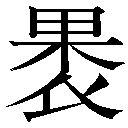」執筆。
天明三年（一七八三） 五十歳
十二月、維駒編『五車反古』に発句二。
天明四年（一七八四） 五十一歳
正月、几菫編蕪村追悼集『から檜葉』に長文の前書きのある発句を寄せる。この年筑前国志賀島で発見された金印の考証『漢委奴国王佩印考』を執筆。
天明五年（一七八五） 五十二歳
九月十六日、柿本人麻呂の伝記考証『歌聖伝』を成稿。
天明六年（一七八六） 五十三歳
春か夏に、本居宣長の『漢字三音考』の古代音韻の説を、荒木田末耦を通じて批判。同じ頃、宣長の『鉗狂人』に対し「鉗狂人上田秋成評」を宣長に送る。八月、秋成の古代音韻論批判に対し、宣長が「菊家主の贈る書」で秋成に反論。これに対し、秋冬頃秋成は「上田秋成の答書」で再反論。同じ頃、「鉗狂人上田秋成評」に対し、宣長が「鉗狂人上田秋成評之弁」で反論。
天明七年（一七八七） 五十四歳
正月、「上田秋成の答書」に対し、宣長が「上田秋成論難之弁」を書いて再反論。のちに、これと「鉗狂人上田秋成評之弁」を編集・推敲して『呵刈葭』を書く。同月、浮世草子系の小説『書初機嫌海』刊行。四月二十日、大坂近郊の淡路庄村に隠棲。医業を廃する。九月、『也哉鈔』刊行。
天明八年（一七八八） 五十五歳
正月、上京中大火に遭う。帰坂後『迦具都遅能阿良毘』を執筆。三月、吉野へ旅し、母方の従兄弟末吉庄蔵に会う。帰宅後、『岩橋の記』執筆。
寛政元年（一七八九） 五十六歳
正月、几菫句集『井華集』刊行、秋成の序有り。四月、『古今和歌集打聴』刊行。六月二十日、妻の母が亡くなる。九月、妻の母の納骨のため上京。十一月二十一日、義母が死没。同月、几菫追善集をめぐり、宮紫暁と確執あり。
寛政二年（一七九〇） 五十七歳
この年か、妻たまが剃髪し、瑚璉尼と改める。春、几菫追善集『鐘筑波』に追悼一句入集。六月、眼病にかかり左目を失明。
寛政三年（一七九一） 五十八歳
春、戯注付き戯作『癇癖談』を書き終える。五月、賀茂真淵『あがた居の哥集』加藤宇万伎『しつ屋のうた集』を一括して校訂・刊行、序跋も書く。
寛政四年（一七九二） 五十九歳
十一月、宣長の古道論を批判した『安々言』を執筆。
寛政五年（一七九三） 六十歳
六月、淡路庄から京へ移転、知恩院門前袋町に住む。秋、羽倉信美に伴われて小沢蘆庵邸を訪ねる。九月、賀茂真淵の注釈『伊勢物語古意』を校訂刊行、『伊勢物語』の評論『豫之也安志夜』を付刻する。
寛政六年（一七九四） 六十一歳
三月刊行、伴蒿蹊の和文論『訳文童喩』の序を書く。春、南禅寺山内常林庵裏の小庵に移転。十一月、煎茶道論『清風瑣言』刊行。
寛政七年（一七九五） 六十二歳
東洞院四条の長屋に移転。さらに衣棚丸太町に移転。
寛政八年（一七九六） 六十三歳
三月、再び知恩院門前袋町に移転。
寛政九年（一七九七） 六十四歳
二月、仮名遣論『霊語通』刊行。秋、瑚璉尼と河内国日下村の唯心尼を訪ねる。十二月十五日、妻瑚璉尼が亡くなり、秋成は悲嘆に暮れる。
寛政十年（一七九八） 六十五歳
二月、瑚璉尼の遺稿『露分衣』『夏野の露』を実法院に納める。四月二十日、右目も失明し一旦は全盲となる。五月下旬、治療のため下坂し、現兵庫県加東市社の谷川兄弟の治療を得て左目の視力を取り戻す。六月、目の療養のため、大坂から日下に行き、九月まで滞在。冬、丸太町鴨川畔の弟子羽倉信美邸内に小庵を建て移転。
寛政十一年（一七九九） 六十六歳
二月、『落窪物語』を校訂刊行。九月二十一日、歴史小説「月の前」を大坂の旅宿で書き上げる。冬、「よもつ文」を書く。
寛政十二年（一八〇〇） 六十七歳
四月、『万葉集』注釈『楢の杣』を執筆開始。八月十日、瑚璉尼写『かりのゆきかひ』（賀茂真淵作）に識語を書いて実法院に納める。
享和元年（一八〇一） 六十八歳
六月、大田南畝と初めて会う。九月、下坂し、幼少時の香具波志神社の神のお告げによる天寿六十八歳に感謝して『献神和歌帖』を奉納。同月、枕詞研究『冠辞続貂』刊行。十二月、「北野賀茂に詣づるの記」を書く。
享和二年（一八〇二） 六十九歳
三月、南禅寺に近い西福寺の紅梅の木のもとに墓を定める。同月、『藤簍冊子』自序、「旌孝記」を執筆。同月、二十二日、大田南畝が江戸へ帰還の途次、訪ねる。同月、『諸道聴耳世間狙』が原因で田宮仲宣と絶交。
享和三年（一八〇三） 七十歳
正月、『大和物語』校刊。この年、『万葉集』評釈の『金砂』を執筆。この年に、史論『遠駝延五登』を書くか。
文化元年（一八〇四） 七十一歳
八月、在坂中、病に臥す。長崎赴任のため来坂した大田南畝と会う。十月、修学院に遊び、「再詣藐姑射山」を書く。
文化二年（一八〇五） 七十二歳
四月頃、大坂に下り、養女慧遊尼が出奔、それに触れた『生立ちの記』成稿。八月、西福寺に移転。十一月、「海道狂歌合」成る。
文化三年（一八〇六） 七十三歳
二月、南禅寺山内常林庵裏の小庵に移転。春、松村呉春画、秋成賛「海道狂歌合」成る。四月十七日、門人大沢清規の案内で、源太騒動の当事者渡辺源太に対面する。秋、歌文集「藤簍冊子」（三冊本）刊行。
文化四年（一八〇七） 七十四歳
春、『藤簍冊子』（六冊本）刊行。秋、自筆草稿八十余部を庵の古井戸に捨てる。この年、歌集『毎月集』『ますらを物語』、『茶瘕酔言』を執筆。
文化五年（一八〇八） 七十五歳
正月、小説『背振翁伝』成稿。三月、文化五年本『春雨物語』成稿。春、『春雨梅花歌文巻』成稿。五月、書簡集『文反古』刊行。秋、粟田口青蓮院植髪堂北向かいに移転。七月、昇道法師・松本柳斎・高橋道八宛に遺言状を書く。この年、随筆『胆大小心録』、「茶瘕稗言」『自伝』「自像筥記」、序成立。
文化六年（一八〇九） 七十六歳
百万遍にある羽倉信美邸に移転。この年、『異本胆大小心録』『俳調義論』執筆。六月二十七日、羽倉信美邸で死去。西福寺に葬る。過去帳には「大坂出生人歌道之達人、三余斎無腸居士」と記す。
文政四年（一八二一）
西福寺の秋成の墓域に墓標が建てられる。生前の秋成の依頼に従い、表に森川竹窓の隷書で「上田無腸翁之墓」、側面・裏面に村瀬栲亭『後毎月集』序を白井惟徳書で刻む。台の石は伊藤若冲が蟹の形に彫り、秋成の生前西福寺に運んであった。
文政五年（一八二二）
七月、森川竹窓により『癇癖談』が刊行される。
※おびただしい数に上る上田秋成の伝記・研究・作品・注釈等については、岡本勝・雲英末雄編『新版近世文学研究事典』（おうふう、二〇〇六年）の当該項目を参照されたい。
［井上泰至作成］
改訂
雨月物語
現代語訳付き
上田秋成
鵜月洋=訳注
平成25年12月15日 発行
発行者 郡司聡
発行所 株式会社ＫＡＤＯＫＡＷＡ
〒102-8177 東京都千代田区富士見2-13-3
03-3238-8745（営業）
http://www.kadokawa.co.jp/
編集 角川学芸出版
〒102-0071 東京都千代田区富士見2-13-3
03-5215-7815（編集部）
http://www.kadokawagakugei.com/
(C) Hiroshi UZUKI 1959, 2006
本電子書籍は下記にもとづいて制作しました
角川ソフィア文庫『改訂 雨月物語 現代語訳付き』
平成18年7月25日初版発行
平成25年9月30日14版発行